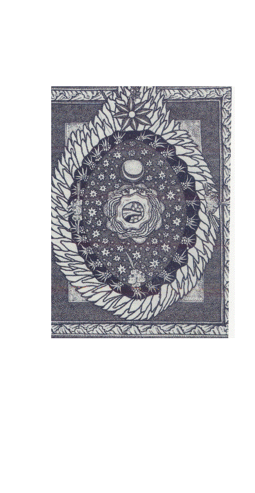

| ビンゲンのヒルデガルト: 三千年紀のための預言者教会博士 (人文科学) | |
| Pierre Dumoulin | |
| kadowaki (2015) | |
生きとし生けるものの命の源、慰め主なる聖霊の火よ、
あなたは聖、美しきすべてのものにいのちを与えられる。
あなたは聖、あらゆる美しきものにいのちを与えられ、
あなたは聖、打ちひしがれた人々を慰めてくださる、
あなたは聖、ひどく汚れた傷も洗ってくださる。
聖なる息吹、愛の火よ、
徳の香りで心はふくいく 内なる喜び、あなたは聖。
神の気配を映し出す透き通った泉。
あなたは追われた人々を引き取り、迷った人々を探される。
いのちの盾、教会に属する人々の確かな保護、
誠実の帯、幸いなる人々の救い、
悪魔の虜である人々をお心にかけてください。
人々の鎖を解き放ち、霊妙な力で救ってください。
あなたは聖、あらゆるものに通じる確かな道、
天の高み、地、地の底に至るまで、
全宇宙を結びつけるのはあなたです。
あなたによって雲は流れ、大気は空をくまなく包み、岩は水を滴らせ
水はほとばしって小川となり、地は緑のマントを広げる。
あなたは知者たちに霊感を与え、知恵で喜ばさせる。
あなたに賛美、賛美とはちきる喜び。
生きるものの希望と誉れ、光の賜物を施す方1。
本書はPierre Dumoulin , HILDEGARDE DE BINGEN, Prophète et docteur pour le troisième
millénaire,2012, Editions des Béatitudes（EDB)の日本語訳である。
著者ピエール・デュムレン（一九六一年生まれ）はモナコ教区の司祭、黙想指導などを企画するロック・エステロ（スイスのヴァレ州）の会員である。教皇庁聖書学院卒、聖書神学博士であり、知恵の書の解説を博士論文とした。スイスのルガーノ神学部で教えた後、カサフ、ロシア、グルジアの神学校設立に参与し。現在は、グルジアのトビリシ神学院の学長である。数十年前から、ル・ヴァル市内の聖ヒルデガルト夏季大学に参与し、毎年、聖女の霊性についての黙想会を企画している。これについてのテレビ・ラジオ放送に出演し、また、二〇一一年七月ベント（ベルギー）で行われた聖ヒルデガルト国際会議に参加した。
著書として次のものがある。
Luc,l'évangile de la joie
Hildegarde de Bingen,2012.
Une souffrance féconde,de Job â Jean-Paul II,2011.
La messe expliquée pour tous,2008.
Qu'est que l'âme? 2007
Un art de vivre,la Sagesse de Salomon,2005.
L'heure de Jésus,St.Jean(13-212),2003.
L'évangile des signes,St.Jean(1-12),2002.
L'Apocalypse,l'unique combat,1998.
Source de vie-Les sacrements,1997.
著者は冒頭の注で フランス語翻訳は一般的に自らラテン語原文から行ったものとしている。
引用のフランス語訳聖書の日本語訳は主に「新共同訳」によるが、文脈に合わせてフランス語からの訳に即した場合も多少ある。
日本語訳には若干の訳注（＊...）を加えた。
第一章の音楽作品の項目と第七章の失われた調和を探し求めてに出てくる音楽用語の訳に関しては、この分野で造詣の深いオルガン奏者島野たか子さんの多大な尽力を得た。
十二世紀のこの女性、その現代性には驚くべきものがある。天才に年代はない。その生涯は、まことの霊的生活は人間をより人間的に、より全的に、より普遍的にするということを証明している。ヒルデガルトは単にその時代に先んじているだけではない。レオナルド・ダビンチに四世紀近く先んじ、ダンテを先回りし、パストゥールを予告している。しかし、長い間忘れられていたのは、理解されるにはあまりに天才的であったからである。摂理的にその著書が明らかにされ、中世の奥地から姿を現したこの女性は、今日、多様な面から如何に現代的であるかが発見されている。
現代の人々が、神をどのような姿でとらえているかを知るのは興味あることであろう。そもそも、一つでも持っているとすればのことだか。人は、非人格的な汎神論からあまりに「人間的な」神の姿に容易に移る。神がイエス・キリストのうちに人間的な顔を取りはしたが、それでも、旧約聖書は、いかようであれ神を何らかの姿で描くのを禁じている。神は「いと聖なる方」、「いと高き方」、｢永遠」であり、その名は言葉に表せない「神秘的なもの」だからである。一方では、限りなく遠く、他方では、私たち自身よりもより近い（聖アウグスティヌス)。神は常にあらゆる表象を超える。アレクサンドリアの聖クレメンスの言うように、「神については類比によってしか語ることができない」。したがって、ヒルデガルトがすでにその第一の書（シヴィアス）の第一幻視で眺め、描いている姿は神ではなく、神について人間の言葉で何かを語る象徴的な表現である。ところで、この姿は火であって、しかも、「あるひと」と呼べる人格的なものである。
これ以上に独創的なもの...そして聖書的なものはない。旧約聖書では、アブラハムと三人の神の使いとの出会いを除いて、書き記されるような唯一の神のまことの出現は、出エジプト記第三章のなかに見られる「燃える柴」。モーセは、舅の羊の群れに牧草を食べさせていたとき、異常なことを見た。燃えているが燃え尽きない柴である。それで、道をそれて、この不思議な光景を見届けようとした。神は、道をそれて見に来る男をご覧になり、柴の間から声をかけられた。「私はあなたの先祖たちの神である...。」その時の解放のメッセージと、続いて、神が与えられた｢私はあるというものだ」というその名は容易に記憶されている。しかし、神を知るためには、根本的な出現の性格自体については、あまりにしばしば忘れられている。 すなわち、永遠なる方は火の姿で自らを示すことを選ばれた。したがって、エネルギーであり、力であり、
光...である。しかし、触れるものを破壊はしない。何かではなく、誰かであって、「モーセ、モーセ」と呼び、悲嘆に耳を傾けない方ではない。「私は私の民の苦しみをつぶさに見た...彼らの叫び声を聞いた...その痛みを知った、それゆえ、私は降って行き...。」この火は人格的である。友情関係を表すからである。｢私はあなたの先祖アブラハム、イサク、ヤコブの神である。」神は動き出され、解放する。「私はあなたを遣わす。行きなさい、私の民をエジプトから連れ出すのだ。」後に、イエスはこの出現を説明する。「神は死んだ者の神ではなく、生きている者の神なのだ。すべての人は神によって生きるからである」（ルカ20・37‐38）。新約聖書のヘブライ人への手紙には、長い証明の結びとして、「実に、私たちの神は焼き尽くす火です」（ヘブ12‐29）という意外な定義が出ている。 したがって、ヒルデガルトは私たちに神についての正しい観念を改めて与える。神は雲を引き裂く孤独な老人ではなく、人格的なエネルギー、あらゆるいのちの泉、輝き、熱、光であって、宇宙を満たし含む永遠の愛の交わりである。キリスト教信条は、父なる神に呼びかけては、「全能の父である神、見える世界と見えない世界の創造主」、キリストについて語りながら、「光から生まれた神」、聖霊に関しては、「主であり、いのちの与え主（zoopoietes）」...と驚くべき宣言を行う。これは多くの場合見逃されている。しかし、これは寓意ではなく、神について語る信仰の表現である。ヒルデガルトが眺める火、彼女に明らかにされる光は、一つの同じ光のなかに三つの姿を含む...。彼女はこれらを正確に叙述するが、第三のものは、屠られたが生きている小羊の姿で示される。
この幻視は気がかりな現代性を持つ。すなわち、現代の問いかけへの回答なのである。神を宇宙のいのちそのものとして示し、その「見えざる火」は宇宙を超越しながらも、その内に住み、内部からの安定さを与えるからである。したがって、神のこの姿は、二十一世紀の科学者たちにも、誤りであるが、「中世の」と呼ばれる宗教的比喩に戻るのを懸念するすべての人々にも理解できるものである。ヒルデガルトが観想している神は、存在するものに「意味」を与える。なぜ無ではなく、何かが存在するのか。なぜこの世界で、他の世界ではないのか。ありそうもない物質に発達するこの第一のエネルギーはどこから来るのか、また、年ともに生命が思いもよらぬ多様な変化を見せるのは、どうしてなのか。それにはまた、イスラム教の言う近づくことができないまったく孤高の神という観念への接点が見られる。この神を前にしてはただ礼拝する以外にない。ここで明らかになるように、キリスト教の神は一であり、超越し、ユニークである。しかも、同時に光、エネルギー、熱である火のごとく、三つのペルソナの不可分の違いを持っている。
同時代へのヒルデガルトの影響は、中世社会での女性の地位に関する多くの先入観を取り除かせる。ビンゲンの御しがたい女子修道院長は、当時の政治にあって最大級の役割を演じる。すなわち、偉い人たちの鼓吹者であるが、また、レジーヌ・ペルヌーが言うように、「その世紀の良心」でもある2。皇帝であろうと教皇であろうと、必要であると見られるとき、この世界の統治者たちの態度を改めさせた。その名声の重みは、フレデリック・バルバローサによって起こされた離教の問題を解決するめに役立つ。聖職者...そして、もちろんすべての人の道徳的退廃を激しく非難するために、巡回説教にさえ出かけた。これを非難する者は誰もいなかった。話しているのは男でなく、なんと、女だからである。ここで明らかにされるのは、男女の補完性である。ヒルデガルトがヨーロッパの政治に関して実現したことは、後のシエナの聖カタリナ、ジャンヌ・ダルクの場合のように。女性だけができたことである。ヒルデガルトは、その修道院をディジボーデンベルクの男子修道院から分離させるため戦ったとき、ためらうことなく、男性の権威に対する女性グループの自治権を要求する。同時に、神に奉献するために自分たちのもとにやって来た貴族女性たちの豊かな持参金も男子修道者たちから取り上げた。こうして、ヒルデガルトはその女子修道院に経済的自立を与える。これは、当時の女性にとって解放の行為と模範となる。そして、このことを聖書に基づかせながら、女性のユニークな役割を熱烈に擁護する。「女がすべての造られたもののなかで祝福された被造物であるのは、神がひとりの女から生まれたからです」（シヴィアス）。
ナノテクロロジーがすでに人間に適用され、遺伝子工学が人類の観念を損ない、人工生物を製造することが―倫理的基準もなく人間を永遠に変質させる危険を伴って―求められている今日、ヒルデガルトは、体と魂と精神が一体化している｢人格」としての人間観を提唱する。魂の体への効果的なあるいは否定的な影響が良心の重みに対応しているのを発見する。つまり、軽くなった良心が、いかに良好な健康の助けとなり、反対に、いかに背徳が体を重くするかを明らかにする。たとえば、「シヴィアス」のなかで、同情について語るとき、次のように述べている。
草木は地にたくさん生えていて、それぞれかぐわしい香りを放っている。他方、宝石のそれぞれは他のすべてのものにおのおのの輝きを分かち与えている。被造物の全体は愛情と愛を切望し、人間の役に立とうとし、自らの最良のものを惜しみなく与え、なんらお返しを求めない。私はいのちの強力なエネルギーを享けた露のよう、それぞれの人のための甘美な薬である。私の心は助けを必要とする人々への愛にあふれている。私は、いのちの初めから、世が創造される前から存在する。私の目は見るべきものを絶えず見ている。私は責任を感じ、病人を癒し、すべての人のための甘美な薬である...私は偽りのない同情である。
現代は、特に対症療法によって、あるいは病院では、母親が奇形の新生児に付き添う便宜をはかる。このことによって、医学は単に体の諸部分を回復させるのではなく、人の全体を看護する必要を再発見する。、また、個人の幸福感のためには、健全な食物を取る重要性と共に、健康のためには、心理的なバランス、規則的な仕事などの必要性を改めて発見する。こうして、個人をその多様な面のいずれかのなかに仕分けてしまうの避けようとしているのである。このような時代、ヒルデガルトは人の中に見られる異なる層の相互依存を常に思い起こさせる。
今日、神経学は苦しみと苦痛の問題をもはや機械的に説明しようとはしない。神経学の前に開かれている分野の広大さを見て明らかに当惑している。また、心理と精神的生活と神経系統の脆さの間のつながりの極端な複雑さを見直し、自らが生み出している社会に病む現代人を癒すために手探りしている事実を認める。このような時代に、ヒルデガルトは、人類の将来のためには、地球の汚染に対する戦いに劣らず必要な人たるものの真のエコロジーの基本を示している。聖書の教えと完全に合致して、ヒルデガルトが提示するビジョンは、混合も分離もない異なる層を持つ人たるものの全的なビジョンである。技術の現代の進歩は、このような人間論の再発見を今まで以上に必要とさせる。それなしには、人間は自らを何にでもすることによって破滅するからである。
人間は、最近の二〇〇年の間の技術の信じられないほどの進歩によって、早々と宇宙の主人であると信じている。しかし、現在の危機は、人間に無残にも自らの根本的な無力を意識させ、その思い上がりを警告する。今日、宇宙はますます大きく、ますます危険に、ますます近づきがたく、ますます統制できなくなっていくように見える。ヒルデガルトはその中での高貴な肩書きを人間に戻してやりながら、「体では小さいが、その魂のエネルギーによっては大きな」（神の御業の書）人間の真の使命を想起させる。一つの火山の爆発だけでも地球を麻痺させるのに十分であり、石油プラットホームの破壊はメキシコ湾を荒廃させ、言うも恐ろしい結果を生じさせ、ハイチや日本やトルコあるいはイタリアの地震によって無数の死者が出る。安全を期して建築された建物がボール紙の城のように崩れ去る。人間は何をするのか。軽々しく設立された原子力発電所は過度に回転し、ひびが入り、地球の全地帯を何千年の間、放射能にさらし、新たな核保有国の出現は、制御できない結果をもたらす戦争の脅威を人類に与える...人間はどこに行くのか。
ヒルデガルトは宇宙の包括的なビジョンを示す。その中では、人間は盲目的な暴君ではない。、責任者、影響を受けやすいがまた秩序立てする要因でもある。人間は、自らは管理しないが、その良心を目覚めさせなければ統治することのできる宇宙のあらゆる影響に従いながらも、宇宙の中心であり、｢魂のエネルギー」によって、善につけ悪につけ、その進行を変えることができる。したがって、技術の進歩が善であるのは、倫理によって統御される場合のみである。ヒルデガルトの著書を読むとき、内的、倫理的、霊的な力を発達させ、神の恵みを受けるようにとの呼びかけが明確に自覚される。すなわち、破局に面してあらゆる精神的影響に自らを閉ざし、自分の無力さにしか頼らない人間は、どのような利己主義と権力欲が人類を破滅に導いてるのかを悟らない。
ヒルデガルトはエコロジーの先駆者である。ただし、この科学が人類への現実の愛と全宇宙に対する責任の明確な自覚によって導かれることを条件にする。「環境保護」の感覚が生じるのは人間の心にである。、それは創造主によって人類にゆだねられた使命の明確な自覚と、今後の世代に対する責任感によるものである。問題は単に自然的資源の正しい管理だけでなく、人間の限界と罪を認めることにかかわっている。この謙虚な確信からこそ、人間だけでは制御できない利得主義と利己主義の力からの解放の切実な願いが生じるのである。こうして、ヒルデガルトは人間の解放の必要を、コスモロジーと人間学と神学とを密接に混合させる全体調和的な観念のなかに位置づける。人間が頑固に自己充足を求めなければ、神の恵みの光は、人間にその欠陥、治癒の必要を認めさせ、人間を自然に神に向かわしめるのである。
こうして、神は人間の良心の最も深いところで人間に出会ってくださる。神の呼びかけに耳を貸さず、絶対自治の幻想のなかで自由を乱用する者は罪に陥り、罪は崩壊する文明のあらゆる不幸を社会的規模で生じる。わが全能の限界を認めるのを拒否すれば、人間は罪責感に捕らわれ、身体的、霊的機能不全を引き起こす。これは人類の内的不調であって、幾世紀もの間に蓄積されて宇宙を侵し、世界の構成要素の不均衡をそそる。そして、｢環境的｣な荒廃となって現れるのである。人なるものの治癒は、神に近づき、信仰によってしか行われ得ない。信仰は善い行いを生じ、利得の奴隷状態から解放し、命の均衡を呼び起こし、体と魂の健全さを取り戻させる。ヒルデガルトは人間を全的に治癒することを心にかけ、ただその幻視だけでなく、また、自然学・治癒学に基づく多くの研究と観察に基づいて、「原因と治癒」（Physica et Causae et Curae）の書を著している。
したがって、ヒルデガルトが提案する調和とは、自己主張の利己的で高慢な探求によって得られるものではい。それは、教会をとうしての神への謙虚な信頼の実り、祈りのなかで求められる恵みの働きに対するあますところのない協力である。調和はそれ自体目的として求められるのではなく、正しい生き方の実り、すなわち、神意への順応であり、これは真の全面的な愛を発見することによって成熟していく。生きる力というものは、あますところなく神と他の者たちへの愛によるこの自己からの脱却に向かい、方向づけられ、統治され、さらには超克され、そして、愛にあって個性の独自性を保つことに寄与する。そのうえ、人の全体的な調整なしには可能な体の調和はない。そのためには、人間は愛から「磁力を受け」るままになり、福音、キリストの啓示によって示されるいのちの教えに謙虚に従わなければならない。「キリスト者の生活の目的は、愛することを学ぶことにある」と、ヒルデガルトと同時代の聖ベルナルドが述べている。
ヒルデガルトには医学的性格の種々の著書が見られる。これらの著書は、植物、石、動物について幾世紀にもわたって検証された伝統的な知識に基づいている。現代医学はきっぱりとこの伝統に背を向け、分子合成薬を重んじる。しかしながら、新しい分子が見つけられ、人工的に複製されるのは、常に自然を観察しながらである。また、実験室がそれそれの薬を製造するのは、植物の効能を観察し、最果ての地に至るまで、それらの特性についての情報を取りながらなのである。これには、逆説的なものがある。中世の著書によって勧められた幾つかの植物は、現代、新たにその効能を明らかにする。食品の効能（生産の際に尊重されることを条件として）の実際の知識から生じる栄養の質は、大きな被害を避けさせ、不治と言われる病人を看取ることを可能にさせる。今後明なことは、癌のような多くの病気は不適切な食生活によって助長され、また、不健康な食生活の結果である肥満は世界的な災いであり、人全体の健康は健全な食生活によって保証される。ヒルデガルトのものとされる著書が指示する事柄をおろそかにするのは思い上がりとなろう。
伝えられる教えには排他的な意図はないので、容易に想像されるように、ヒルデガルトは当時のすべての女子修道院長と男子修道院長のように薬草の分野における探求を助けたのである。したがって、ヒルデガルトのものとされる著書は、現代の自然療法と栄養士にとって、病人に与えられる看護のなかでの食物と調味の価値を再発見するようにとの招きである。ヒルデガルトが私たちに伝えるのは一連の処方以上にひとつの精神的風土である。これは、営利と市場の法則に捕らえられて、食養生にはあまりかまわない一般大衆の層では、今日失われている。不幸なことに、この伝統的知識も人間の貪欲によって骨抜きにされた。健康に注意しようと努める人々でも、努力を放棄する傾向である。「ビオ（生）」の語の付いた騙しものの薬品に途方に暮れ、見かけのレッテルに欺かれ、誠実であろうとする望みは営利法則の虚偽の全能によって裏切られる。これに対して、中世の知恵はできるだけ自然に帰り、季節を考慮し、食生活を変え、人体に有害な食物を、特に多量に取ることを避けるよう淡々と勧める。また、予防としてなり、すでに活発な病理学に応じてなり、バランスのある食事を取るように薬草や自然の産物を勧める。たとえは、スペルトコムギ、ガランガ（＊galangaショウガ科ナンキョウソウ？）、ジョチュウギク、ウイキョウ、ハナハッカ、ティル、イブキジャコウソウなどである。こうすることで、良好な医学的検査を伴って生活を大いに簡素にすることができる。...多少とも自分の体の必要に聞き、もはや「日ごとの糧」をどっちつかずものと考えないように心がけることに注意すれば十分である...。そうは言っても、健康の強迫観念、あるいは健康崇拝に陥らないようにする。このような治癒法が求める態度自体が、すでに、自分の健康に十分気をつける方法である。すなわち、食物は、もはや飢えをしのぐため、あるいは楽しみの対象ではなく、人の内面の成長に協力するものと見なしている。
ヒルデガルトは多くの女子修道院を設立し、生涯を修道女たちの教育と知的発達に捧げ、知識と調和への渇きを修道女たちと分かち持った。そして、彼女たちのために音楽、ダンス、劇、色彩文字、製本、版画、植物研究、手仕事，手稿の読み方と写本、建築など、多様な養成を望んだ。ヒルデガルト自身、その修道院の設計図を書き、用いなければならないセメント調合までしたと言われている。修道女たちのために十余の音楽作品を書き、「オラトリオ」のなかで演じさせたが、その目的は、音楽と歌によって心を癒し、共同体を一致させるためであった。
ヒルデガルトは修練長を務めながらも、その霊的娘たちへの友情を価値あるものとして表す。当時、好むと好まざるにかかわらす、禁域修道院で一緒になった女性たちの間で友情が交わされた多くの証拠が存在する。ヒルデガルトを描く細密画の中には、その背後に一人の若い修道女がしばしば見られる。リヒャルディスであって、修道院の種々の仕事の中で院長を補佐し、また、本を編集することを役目にしていた。年々、二人は離れがたいものとなった。しかし、一一五一年、リヒャルディスの兄ブレーメンの大司教がザクセン修道院を妹にゆだねることに決めた。影響を懸念してヒルデガルトから遠ざけるためであった。ヒルデガルトはなんとしても、リヒャルディスと、その妹のアデライドが自分の修道院から離れることを阻止しようとする。それで、大司教にこう書いている。
私を困らせないでください。苦い涙を流させ、心をむごい傷だらけにしないでくださいませ。
しかし、大司教は頑として受けつけない。ヒルデガルトはためらわずに教皇に手紙を書くが、教皇は決定を阻むのを拒否する。
リヒャルディスが去った後、ヒルデガルトは友情の悲痛な手紙を書く。その中で、リヒャルディスの行為の気高さ、その英知、その魂の清さをたたえ、別れによって生じた苦痛を表明する。ところが、リヒャルディスは翌年死去した。二人の友を引き離した責任者の大司教は自分の誤りに気が付き、ヒルデガルトに手紙を書いた。
お知らせしますが、私たちの妹、私の妹、いやそれ以上にあなたの妹、肉体的には私の妹、霊的にはあなたの妹は、すべて死すべき肉体の行くところに入りました。〔...〕あえてあなたにお願いします。妹があなたを愛したように、どうか妹を愛し続けてくださいますように。また、妹が何か過ちを犯したのであれば、その責めを妹にではなく、私に負わせてください。実際、妹は、多くの人々が証明できますように、あなたの修道院を去った後、涙に暮れていたのです。死によって妨げることができなかったならば、許可のあり次第、あなたをお訪ねしたはずです。
隠すことのほとんどできないこの罪責の告白はリヒャルディスをよみがえらせることはできない。大司教への回答のなかで、ヒルデガルトはこの深い友情の根拠を説明する。
実は、命ある光が、ある強烈な幻の中で、彼女を私自身のように愛するよう教えたのです。お聞きください。神は彼女に世の魅力に捕えられないような熱情を持ち続けさせました。この世のシンホニーのなかに目もあやな美しく見事な花として登場しましたが、彼女を摘み取られたのです。
ヒルデガルトの苦痛はあまりに強く、その痛恨を隠すことができないほどである。リヒャルディスを修道院長として選出したことと、その後の離別を｢浮世の襲撃」と呼んでいる。それからは、もはや個人的な生活は持たず、幻視に没頭することになる。
とは言え、ヒルデガルトはその多くの人間的天賦の才能と友情の強さ以上に、霊的娘たちに特に自分の霊的生活を伝えることを心得ていて、神の愛の生きた模範であった。ヒルデガルトが詩や歌と同じほどに娘たちに持たせた文化的な富も伝えた幻視も、当時にとっては信仰の言語であり、当時の男女ための福音の翻案である。現代世界は、信仰の真理が現代の人々に聞きやすい言語で伝られるため、新たなヒルデガルトを必要としていることであろう。もちろん、二十世紀には、ある人々が現代に適応したキリスト教的文学、芸術、映画作品を制作している。しかし、ヒルデガルトの著書の奥深さには依然として比類のないものがある。
ビンゲンの女子修道院長の著作は深い信仰を反映し、幻視者らしくまた預言者らしい強い性格を持つ。あのまばゆい光をとおして見聞きした事柄の神的起源と、自身の使命観についての自覚は切り離すことができない。その使徒的精神と同じく預言者的精神も当時の人々を揺さぶり、照らし、回心させ、｢神の忘却」に徐々に陥るのを避けさせることを望んでいた。人類の最大の危険は―当時もいつの時代も―精神的無関心、魂の惰眠であることを感じ取っていたからである。この世の煩いと安楽は、人間が創られた目的に向かうのを妨げる。ヒルデガルトは自らを人類のための永遠なる方の弁護者、代弁者、道具であると見なしていた。読者と聴衆のもとでは絶えず神の神秘に基づいて、神の愛が存在するものの起源であり達成であることを強調していた。いかなる場合にも、人生と物的現実から遊離した神秘主義的なものは説かず、むしろ、宇宙全体の意義と宗教的意味を証明し、世にあって信仰によって導かれる生活を断固として勧めていた。すべては、すなわち、天と地、宗教、自然科学、多彩な人間の生活と諸能力、典礼および日常の仕事は、ヒルデガルトにとって、神の愛の反映であり、また、創造主を透けて見させるものであった。こうして、すべては霊的生活にとっての支えとなることができた。
あらゆるものに対するこの関心と、あらゆる面で生活をキリスト教化するこの望みは、一つの土台と隠れた源泉を持っていた。ヒルデガルト女子修道院長の生活の大いなる秘訣を忘れるべきでない。ヒルデガルトは何より先にベネディクト会隠修修道女であって、聖ベネディクト会戒律についての一つの解説さえ行った。この生活様式を二つの言葉に要略するものとして、「祈り、そして働け」（Ora et Labora） という有名な標語が思い起こされよう。これは、祈りと労働と休息に分け、それらの間に均衡を持たせるベネディクト会の生活のリズムを示す。しかし、｢キリストの愛に優先するものは何もない」という戒律の一節も引用することができよう。これはベネディクト会生活の鍵を与える、すなわち、愛である。聖ヒルデガルトの生活の意義は、次に掲げるベネディクト会戒律の序文の幾つかの抜粋の中に表されるであろう。
わが子よ、師の教えに聞き、あなたの心の耳を開きなさい。あなたを愛する父の助言を喜んで受け入れ、言われるすべてのことを真に行いなさい。このように従うよう努めることによって、あなたは神に向かって戻ることでしょう。事実、あなたは勇気の欠如から従うことを拒絶して神から遠く離れていました。したがって、今、私はあなたに話します。ここで、あなたとは、ほかでもなく、利己的な我意を捨て、従順のきわめて堅固で素晴らしい武器を取り、こうして、真の王、私たちの主であるキリストの命令のもとに戦うすべての人のことです。〔･･･〕したがって、決然として立ち上がりましょう。聖書はこう述べて私たちを目覚めさせます。｢あなたがたが眠りから覚めるときが既に来ています」（ロマ13・11）。私たちの目を神の光に向かって開きましょう。神の力強い声が私たちの耳に響くようにさせ、こう語るのを聞きましょう。「今日、その声を聞くなら、あなたの心を閉ざしてはならない」（詩94・８〔＊95・７？〕）。「いのちの光がある間に走りなさい。そうすれば、死の暗闇はあなたがたの不意をつくことはない」（ヨハ12・15）。主はご自分のために働き手を求められます。それゆえ、群集にこのような呼びかけをしておらるのです。主はまた、こうも言われます。「いのちを望むものは誰か。幸せを望むものは誰か｝（詩34・13）。｢兄弟たちよ、私たちを招かれる主の声は優しい。見なさい。主は慈しみをもって私たちにいのちの道を示される」(詩16・11）。｢信仰と善い行いを帯として腰に締めなさい」（エフェ14・15）。｢福音によって導かれ、主の道を進みましょうそうすれば、主を見るのにふさわしくなるでしょう。主は私たちをご自身の国に招いておられます」（一テサ２・12）。主の家、その御国に住むことを望むならば、ただ一つの手段は走ることです。私たちが走るのは、善い行いをするときです。そうでなければ、私たちは決して主の家に近づくことはできません。
それゆえ、私たちは主に仕えることを習う学び舎を組織することを望みます。この学び舎にあって、私たちはいかなる厳しいこともつらいことも強制することはないでしょう。しかしながら、当然のことながら多少とも困難な事柄があることでしょう。事実、兄弟の間で欠点を矯正し、愛し合わなければならないのです。しかし、直ちに恐れて悩んでしまうことなく、救いの道を放棄してはなりません。その道は初めはいつも狭い（マタ７・14）のです。しかし、修道生活と信仰が進むにつれ、心は広くなっていきます。そして、神の掟の道を走り始めるのです（詩118・32）。心は、言葉で表せないほどの甘美な愛にあふれています。こうして、私たちは決して私たちの師である神を捨てることなく、毎日、修道院で、神が私たちに教えられることを死ぬまで行い続けます。そのとき、私たちは忍耐によってキリストの苦しみにあずかり、こうしてその御国にキリストと共にいるのにふさわしい者となります（ロマ８・17）。
大なる均衡
国家間の戦い、離教、聖職者の品行の堕落が人類に対する悲観主義を抱かせ、世の終わりの黙示録的待望を引き起こし、あるいは絶望的な厳格主義を招きかねない世紀にあって、ヒルデガルトはその霊的指導にあって人々の心を開かせ希望と信頼を促す。これは、しばしば、幼きイエスの聖テレジアと聖ファスのものを思い起こさせる。その書のあちこちには、衝撃的な現代性を持つ霊的生活のなかでの信頼への呼びかけが聞き取られる。
そんなに恐れないでください。神はあなたのうちにいつも天上的なものを求めていらっしゃいません。
主は、あなたを腕に抱いていらっしゃいます。こうして、あなたが決して自分自身の安全さを頼みにすることのないようにしてくださるのです...神はあなたをご覧になって、あなたをご存知です（ジェルトリュード伯爵夫人への手紙）。
恐れないでください。逃げないでください。良き牧者があなたのうちに迷った羊を探していらっしゃいます。
よい医者は人々の傷を哀れんで治療してくださいます（シヴィアス 幻視13）。
それは、神の御子が戻された平和です。
神はご自分の判決を実行されるため全能であるにもかかわらず、それを果たされるのはご自分の公平な愛のなかでしかありません」（命を得るための書最後の幻視）
ああ、聖霊の火よ、
創られたものはすべて、あなたをたたえます。、
あなたはすべてのもののいのち、
得がたいバルサム
私たちの大きく開き、汚れた傷を
宝石に変える。（「天からの啓示によるシンフォニア合唱曲」から）
時として、女性は中世の一般社会では軽んじられていたと言われている。ところで、十二世紀に、教皇も王も恐れず、当時の権力者たちを叱りつけていた女性が一人いる。恐るべき皇帝フリードリヒ・バルバロッサさえも、この並外れた女子修道院長の前では威儀を正すほかはなかった。宮殿に招聘した後、彼女から次のような警告を受けている。
したがって、神の御心に反して務めを正しく行使しなかったと非難され、それによって恥じることのないよう、神である王がご覧になっておられることをお心得くださいませ...至上の王である神が、盲目で王芴の正しい采配の仕方を見失う結果、陛下を打ち倒すことのないようご用心なさいませ。神の恵みが失われることのないよう祈ります。
教皇アナスタジウス四世に対しても手厳しく、次のように公然と脅している。
知識は十分に持ちながら、あなたの指導にゆだねられた人々の高慢な空威張りを抑えるのに疲れた人よ、なぜあなたは、助けを受けなければ困難から逃れることのできない難船者たちを救おうとなさらないのでしょうか。なぜ甘い風味とかぐわしい香りを持つ良い有益な草木を枯れさせる悪の根を断ち切らないのでしょうか...。あなたは、正義を、あなたにゆだねられた天上のこの娘をおろそかにしているのでしょうか。あなたは正義が地に投げ出され、踏みにじられても一向にかまいません...。今は世は臆病ですが、やがて悲しみ、ついには、恐怖に陥ります...それゆえ、人よ、見たところあなたは牧者に立てられています。立って、もっと早く正義に向かって走りなさい。そして、至上の医師の前で、ゆだねられた羊の群れの汚れを清めて、癒さなかったと告発されることのないようにしてください...。人よ、正しい道に立ち、自らを救いなさい。神があなたを祝福と選ばれた民の道に連れ戻され、こうして、あなたが永遠に生きることができますように
聖ベルナルドだけでなく、また教皇、司教および当時の貴族たちと話をし、ためらうことなく公然と非難し、自らを｢意のままに神の風に運ばれる小さな羽根」、「教養のない、取るに足りない女」と言明する女性、その名はヒルデガルトである。
ロマネスク美術と十字軍の偉大な世紀の初め、ヒルデガルトは一〇九八年、聖ベルナルドの八年後、ドイツのマインツの南二十五キロ、ファルツ付近のベルメルスハイムに生まれた。ヒルデゲルトとメヒティルトの娘、地方の小貴族のこの家族の十女、父親はシュピールの司教区の財産管理人である。八歳の時、聖ディスボードに奉献されたベネディク会修道院に預けられた。この「ディスボーテンベルク」（聖ディスボードの山）はパラチナ川の樹木の生い茂った流域の巨大な修道院で、その聖堂は、一時、キリスト教国の間では最大のものであったと言われている。それには救済院が付属し、当時の慣習に従って、病人、負傷者、身体障害者を看取っていた。このことから、後に聖ヒルデガルトのものとされる薬草への興味が理解できる。当然、修道院には治癒に効く草木の大きな庭があり、薬の製造を専門にする修道者がいたことであろう。幼い時に子供たちの一人を奉献するのは、当時の風習に従って神に十分の一税（子供も含めすべての持ち物の十分の一）を納める方法であった。幼い子は一団の女性たちによって祈りの精神の養成を受けた。この女性たちは、シュパンハイム伯爵シュテファン二世の娘で、聖徳高い隠遁者ユッタ・ド・シュパンハイムを中心に暮らしていた。この女性はヒルデガルトの家族の友人、あるいは、少なくとも知己である。このグループは男子大修道院付属女子修道院の始まりで、ディスボーテンベルク大修道院の院長の権限下に置かれた。ヒルデガルトはここで教育を受けた。その教育は読み書き、それに、おそらく、一種のデカコルド（十弦琴）を弾くことを教える。聖書を権威をもって解説するものではなかった。事実、彼女は当時の女性の大方よりも高度の教育を受ける。これはその著書と説教が証明することである。しかし、ヒルデガルトは特にユッタのうちに深い識別を明らかにする確かな霊的指導と内的生活への養成を見いだしている。
ヒルデガルトは十四歳の頃、決定的に修道院に入り、十六歳で着衣したと考えられる。一一三六年にユッタが死去すると、ヒルデガルトが同僚たちからパラチーナ隠修修道院の長上に選ばれた。三十八歳であった。修道院は比類のないこの人物のおかげで急速に発展した。これによって多くの物的贈与を受けるようにもなった。新院長はおびただしい召命を前にしてその修道院のためにより多くの独立を望んだ。大修道院院長クーノは女子修道女たちに対する権限を失うのを拒絶し、この独立の意志に反対した。一一四七年、ヒルデガルト院長は自分を支持するマインツ大司教ハインリヒ一世に訴えた。クーノ院長は一度言い出したら聞かない。その時、ヒルデガルトは不思議にも病気になり、自分の苦しみを計画の実現のために捧げる。麻痺してベットに釘付けにされたヒルデガルトはクーノ院長が神の御心に反対し、自分の苦しみのもとになっていると非難する。一一五〇年、ついにその主張が認められ、自分の修道院を創立する許可を得た。こうして、ルペルツベルク（聖ルーペルトの山）に二十人ほどの修道女と共に住まいを定める。彼女自らこの歴史的出来事を物語っている。
その頃、私は目が暗くなって、光がまったく見えず、体のあまりの大きな重圧感で衰弱し、起きることができず、非常な苦痛に打ちひしがれ、臥せっていました。苦しんでいたのは、私に示された幻視を語らなかったからです。それによると、私は娘たちと共に、今まで神に奉献していた場所を離れ、他のところに行かなければならなかったからです。私は、今いる場所を指名することを決定するまで、この苦しみを耐えなければなりませんでした。そして、にわかに視力が回復して、私はよくなっていました。ただ、苦痛はまったく消えてはおりませんでした。しかし、私の院長と兄弟たちとこの地方の人々は、この変化の理由を知ったとき、私たちが肥沃な牧草地、豊かな葡萄畑、この場所のあらゆる楽しみを捨て、便利なものは何もなく、なじみのない土地に行くのを望んでいるのを見て驚きました。そして、そのことが起こらないように示し合わせました。私は何らかの虚栄心に惑わされているとも言っていました。このことを聞いて、私の心は慙愧の念に耐えず、血管と肉体は干上がりました。そして、数日の間、床に臥せっていた私は大きな声を聞きました。この場所でこの幻視に関する何か別の事柄を発言し、書くのを禁じたのです。
その時、私たちについて知っているある貴族の婦人が、マインツの大司教館に行き、大司教と学者の方々にこれらのすべてを明らかにしますと、いかなる場所も善い行いによってしか聖化されず、そのようであるべきであると言われました。それで、年を経た謀り者（＊悪魔）はさんざん私を笑いものにし、その結果、多くの人が、有力で知識のある人々がこんなにいるのに、こんな無知な女になぜこれほどの神秘が啓示されるのかと言い始めました。そして、対立する意見が出ました。多くの人は、この啓示は神から来るのか、それとも、多くの人を誘惑する空中の予測不可能な霊からのものか、といぶかりました。そして、私が、貴族と金持ちの家族の二十人の若い娘たちとこの場所に来て、住むようになると、そこには居住者は一人も見当たりませんでした。住んでいたのは、一人の年寄りとその配偶者と子供たちだけでした。黒雲が太陽を暗ませるように、このような逆境と非常な重圧が私の上に重くのしかかりましたので、嘆息し、涙を流しながら、私は、「ああ、ああ」と叫びました。神はご自分に信頼する人々を当惑させられません。それで、雲が消えれば太陽が現れるのと同じく、神は新たに私に恵みの救いをお与えになりました。赤子が泣くと慰めるために乳房を吸わせる母親のようです。その時、私はまことの幻視の中で持ったこれらの苦い体験はモーセが持ったもののようであるのに気がつきました。モーセはイスラエルの子たちをエジプトから紅海をよぎって荒れ野に導きましたが、多くの奇跡によって神がご自分を現されたにもかかわらず、子らが神につぶやくのを耳にしていました。そのように、神は私が人々から、私の身辺の人々から、私と一緒にとどまったある人々から苦しめられるのをお許しになったのです。
苦痛による疲労困憊の後、神は私たちの上に恵みの露を雨と注いでくださいました。実際、以前、この場所の不毛を知らせて私たちをしきりに嘲った人々の多くが、あちこちからやって来て、私たちを助け、親切の限りを尽くしてくださったのです3。
新修道院の評判はよく、ヒルデガルトが十五年後にアイビンゲンに第二のものを設立するほどであった。ここは、ライン川流域、リュデスハイムの近く、現在のリンブルク教区に当たる（一一六五年のこの修道院は、時の変遷に伴い、十九世紀の間に閉鎖されても存続する。そこには、聖人の遺体が聖遺物箱に納められ、多くの巡礼の崇敬を受けている。しかし、修道院聖堂は教区聖堂となった）。ヒルデガルトが創立した二つの修道院には貴族出身の女性たちだけが住む。これは、修道女たちの間に差異を付けず一致を助長するためであった。一人の男子修道者フォルマールが修道院常任司祭として配属され、聴罪司祭、院長秘書を務めたが、ヒルデガルトが口述するものを書物にした。
ヒルデガルトは、三歳のときから、「神の光の影」と呼ぶものを見ていたが、この神秘な賜物が異例のものであることを理解していなかった。五歳になると、受ける幻視、あるいはむしろ、自ら強調しているように、脱魂状態ではなく五感で知覚する啓示を理解しはじめる。しかし、他の人々が同じカリスマを持っていないことに早くも気が付き、ユッタ以外は誰にもこのことを話さなかった。ユッタはこのことについてヒルデガルトの霊的指導者フォルマールに知らせた。ヒルデガルトは後に、与えられた幻視の性質をシヴィアスの冒頭、あるいはジャンブルー修道士への次の手紙のなかでのように、幾つかの文書のなかで描写する。
私はいつも聖なる恐れに深くとらわれていました。自分の内に善いことをする力を少しも持っていなかったからです。しかし、二つの翼のように神に向かって手を伸ばしますと、真ん中にその恵みの風が吹いて、私はその神的力で強く支えられるのを感じます。子供の頃から現在の七十歳まで、私は私の精神の中に絶えず幻視を持ち、天まで上げられ、かなり遠くの地域まで空中に舞い広がっているように思われました。そして、この状態にあって私に現れた驚くべき偉大なことを魂の内で見ます。私がそれらを発見するのは、肉体の目で見るのではなく、耳で聞くのではなく、どの感覚ででもなく、心の思いによってでも脱魂状態によってでもありません。それらによっては決して発見しませんでした。しかし、私は目を開き、まったく目覚めていて、それらを日夜、魂の最も深いところではっきりと見ているのです。
したがって、これらの啓示が行われたのは脱魂状態のなかではなく、修道院の枠内での日常生活のなかであって、ヒルデガルトは、それらが魂の内奥にある内的感覚によって外的なものとしてではなく知覚されたのを意識している。これは、キリスト教神秘体験の中でもユニークな現象のように見られる。ヒルデガルトは四十歳の時、彼女を導く声から、「見聞きした事柄」を書き記し、「公にするように」との断固とした命令を受けた。
一一四一年、神の御子イエス・キリストの受肉から一一四一年目、私が四十二歳と七か月の時 でした。天からきらきらきらめく燃え立つような光が降り、私の霊を貫き、胸を燃え立たせました。すると、突然、聖書の意味が分かるようになりました...。
一つの声が｢見聞きすることを書きなさい」と命じた。霊的羞恥心のようなものがヒルデガルトに使命を疑わせた。それゆえ、最初は神の呼びかけに抵抗する。従うことを迫られて、ある不思議な説明のできない病気で寝床に釘付けになった。その時、ヒルデガルトは自分の直観が幻想ではなく、神のみ旨に逆らうべきではないことを理解する。こうして、最初の書「シヴィアス」を口述し始めた。「神が...私に臥せっていることを望まれた時になって初めて、私は書き始めました。」数十年の記念碑的な労作の結果である三巻のこの著書は、中世期の最も重要な世界的著作の一つである―そのうえ、ダンテの「神曲」（一三〇七年から一三二一年に書かれた）の先取り、その着想の土台と見なされるのもまれではない。
フォルマール修道士はラテン語に通じ、ヒルデガルトより明らかに年長であって、識別し、幻視の物語を作成するのを助けた。しかしまた、ヒルデガルトは修道女リヒャルディス・シュターデを腹心の友、伴侶として選んだ。一一四六年、ヒルデガルトの女子修道院が従属する男女並存修道院の院長が、ヒルデガルトが啓示に促されて口述することに決心した書の一部をマインツの大司教に提出した。他方、女子修道院長は聖ベルナルド（一一五三年死去）の意見を求めた。クレールヴォーの修道院長は彼女が見るすべてを書くことを勧めた。数ヵ月後、聖徳高いこの修道院長の斡旋によって、この著の最初の数章が、トリーアに集まった教会会議のときに、教皇エウゲニウス三世の前で朗読され教皇認可を受けた。
神は、私たちの喜び、私たちの幸いである恵みを私たちにお与えになります。しかし、私たちがそれらを用いることができないならば、何の役に立つでしょうか。従って、神の霊が吹き込まれることを書き記しなさい。
聖ベルナルドは教会会議参加の司教たちの承認をこう要約する
神からの霊感に輝くかくも感嘆すべき光を消さないように心がけるべきです。
したがって、ヒルデガルトは一一五一年に「シヴィアス」（Scivias神の道を知れ）と題した幻視の第一の書を完成した。続いて、一一五八年と一一六三年の間に口述した「命を得るための書」（Liber vitae meritorum）を、最後に、一一六三年と一一七四年の間、アイビンゲン修道院を創立した時に（一一六五年）、「神の御業の書」（Liber divinorum operum）を著した。その上、同時期から、七十七の音楽作品が保存されているが、それらは、「天からの啓示のシンフォニア合唱曲」（Symphonia harmoniae celestium revelationum）の中に収められている。これに、典礼劇「オルド ヴィルトゥートゥム」（Ordo virtutum）が作成されるが、これには、歌と語りの対話のなかに魂と諸徳と悪魔が登場する。単声音の楽譜からなるこれらの作品は、中世音楽の最も豊かな演目の一つである。しかし、それらは、厳密な意味での作曲の実りではなく、幻視を受けている間に聖女が知覚する天上的調べを転写したものである。
また、薬草と治療について記述する二つの著書もヒルデガルトのものとされている。すなわち、「フィジカ」（Physica）と「病因と治療」（Causae et Curae）である。当時、特に聖女の時代に、大修道院で行われていたベネディクト会の生活様式は、全的な人間観を反映していたことは確かである。ベネディクト会戒律は修道者たちのため、毎日、八時間の労働を規定する。すなわち、畑仕事、小作農である。しかし、製本、筆記、版画、音楽的、知的、薬学的訓練などもある。修道院出自の書物は、あらゆる面での人間についての知識と個々人の配慮について証明している。ヒルデガルトまたはその修道院の幾人かの修道女が、時として修道院の仕事として限られる厳密に宗教的部門以外の事柄も学んでいたことは驚くに足りない。ヒルデガルトの著書の間で、医学の分野で今日まで伝えられているものは稀である。けれども、それらの全部をヒルデガルト自身のものとするのは時として再検討される。それらの書には、薬草の性質とその使用についての興味深い情報が見られる。現在、病気の看護と予防のための有用性を示す研究と実験の対象となっている。
ヒルデガルトは、文学的、言語学的分野で特別に新機軸を打ち出している。すなわち、中世ラテン語にかなりの変更を加え、自らが考案し、短縮あるいは複合した新語で書いている。その文体は沸き立ち、その表現において特に比喩に富み、力強い。そして、アルハベットさえ作成した。これは修道院の内部で、あるいは、修道女たちの間で秘密のメッセージを送り、こうして連帯を強めるためである。
急速に有名になったヒルデガルトはただ地方の司教、大司教たちとだけでなく、皇帝フリードリヒ・バルバロッサ一世に至るまで、当時のきわめて高貴な人物たちとたくさんの手紙のやり取りをした。皇帝は当時最も強力で、キリスト教国を分裂させた離教の幇助者である。ヒルデガルトはためらわずに皇帝を激しく叱責し、危険を招くことを気にしなかった。また、クリューニーの修道院長シュジェとも文通している。彼は国王ルイ六世の腹心であり、一一四七年から一一四九年の第二次十字軍の間はフランスの摂政を務め、ルイ七世から「祖国の父」と宣言されている。ちなみに、教皇エウゲニウス三世とアナスタジウス四世や、祈りと助言を求める男子大修道院の数人の院長とも文通している。それに、同時代のもう一人の幻視者エリザベト・シェーナウとも手紙のやり取りをしている。
また、一一五八年、教会への愛に動かされ、聖職者の風俗の退廃に強く心を痛め、修道院の外に出て、偉大な説教師たちのように教会の中で説教し始めた。これは、当時、女性としては異例のことであった。四度の旅行で、「ラインの巫女」と呼ばれて、ネッカー川、モーゼル川、マイン川を遡り、その後、ライン川を再び下り、ウェルデンに至っている。こうして、ヒルデガルトはフランケン、ロレーヌ、スアーブ地方を歩き回った。集まった群衆の数は次第に増え、カテドラルの広場に溢れ、ヒルデガルトに近づこうとする。聖職者たちだけなく、一般の信者にも話しながら、ヒルデガルトは聖職者たちの堕落を糾弾し、風俗を改め、聖物（職）売買をやめさせるように促す。一一六〇年、皇帝によって引き起こされた離教が生じた。ヒルデガルトは全力を挙げてこれに介入し、この紛争を鎮め、合法的な教皇アレキサンデル三世を認めさせようとした。しかし、ちょうど第三ラテラノ教会会議（第十一世界教会会議）によってこの問題が解決された時に死去した。ちなみに、この公会議によって教皇選挙法が決定的に定められた（一一七九年）。
ヒルデガルトの名声は、生前にその伝記が当人の監督のもとに、ディジボーデンベルク大修道院の修道士ゴッドフロワによって作成され始めるほどであった。
ヒルデガルトの生涯の終わりは、マインツの司教座聖堂参事会員たちに対立させる紛争によって曇らされた。破門制裁を受けたある貴族が死去の前に罪の赦しを願い、修道女たちが修道院の隠れた一隅に当人を埋葬した。しかし、マインツの聖職者たちはこれに激しく抗議し、死体を掘り出すことを要求した。教会法により、破門された者たちには墓がないよう規定されていたのである。修道女たちは拒否し、地面に鋤を置き、埋葬場所を隠した。修道院は禁止制裁を受けた。これによって、女子修道院内でミサ聖祭を行い、修道女たちの歌隊席での歌唱ができなくなった。聖務日祷はつぶやくことしかできない...これが、典礼聖歌の価値についてのヒルデガルトの見事な手紙のきっかけとなる。一年後、禁止制裁はマインツの大司教フオン・ブーフ・クリスチアン一世によって解除された。一一七九年九月十七日、ヒルデガルトの死去のとき、修道女たちが天に二つの光線が現れ、交差し、大きな十字架になっているのを見た。
ヒルデガルトの幻視はヴィスバーデンのヘッセ地方図書館に保存された特別な写本に転写された（リーゼン・コデックス）。このコデックスは一二〇〇年頃ギベール・ジャンブルーによって作成され、高さ五〇センチ重さ五〇キログラムの頁からなる。おそらく、ヒルデガルトがその作成に関与したであろう。しかし、音楽作品は含まれていない。別の写本、デンデルモンデ・コデックス（一一七四‐一一七五年）には、ヒルデガルトの音楽作品五八が含まれている。これはリュペルツベルクの修道院で院長の指導のもとに転写された。
ヒルデガルトは、列聖手続きは行われたが、手続きが長引き決着がつかなかった最初の聖人たちの一人である。列聖の四度の試みは決着せず（最後のものは一二四四年教皇イノケンチウス四世のもとに行われた）、福者にとどまった。しかし、信徒たちから早々に聖人と見なされていた。長い間の信心の対象であったので、十六世紀の終わりには、その名が他の手続きなしにローマ聖人名簿に聖人の称号をもって記入された。また、英国国教会で祝われ、地方の祝日では九月十七日に定められている。二〇一二年、教皇ベネディクト十六世がビンゲンの聖ヒルデガルトの地方的崇敬を公式に全教会に広げた。これは、二〇一二年十月七日、「教会博士」と宣言されるために不可欠な前提条件であった。この宣言は偉大な預言者の著作に新たな脚光を浴びせる。そのメッセージの現代性はキリスト教徒の全体に直ちに喧伝されたのである。
今日まで伝えられているヒルデガルトの著書は莫大で多様である。当人のものとされているものとしては、約四〇〇通の手紙、十二ほどの著書、七十の詩、それに、七十余の音楽作品がある。
―主の道を知りなさい Scivias（一一四一‐一一五一年）
―命を得るための書 Liber vitae meritorum（一一五八-一一六三）
―謙虚な人々のための神の御業の書 Liber divinorum operum simplicis hominis（一一六三‐
一七三・一一七四年）
―フイジカまたは造化の妙の九つの書または単純な医学書Physica,sive Subtilitatum diversarum naturarum
creaturum libri novem,sive Liber medicinae （一一五一‐一一五八？）
―原因と治療または複合的な医学書 Causae et curae,sive Liber compositae medicinae
―天からの啓示によるシンフォニア合唱曲 Symphonia harmoniae coelestium revelationum
―聖リュペルト伝 Vita S.Ruperti
―聖ディジボード伝 Vita S.Disibodi
―未知の言語、ラテン語翻訳を伴う ignota lingua,cum verrsione Latina
―十月三十日の問題の解決 Solutionnes triginta octobre quaestionum
―聖ベネディクトの戒律の解説 Explanatio Regulae S.Benedicti
―聖アタナジウス信条の解説 Explanatio Symboli S.Athanasii
―祭壇の秘蹟概論 Tractatus de sacramenta altaris
―福音についての五十八説教 Homiliae LVIII in Evangelia
以上の著書は四つに区分することができる。手紙と説教、詩と聖歌、自然学と医学概論（フイジカ、原因と治療）、そして特に幻視の三部作である。
手紙と説教4
ヒルデガルトのおびただしい手紙は四百通以上になるが、全部は公刊されてはいない。ラテン教父全集(PL)にはすでに、不十分ではあるが、百三十五通が返書と共に含まれている。教会が極めて困難な状況にあった。ヒルデガルトは聖ベルナルドと同じように介入するのが義務であると感じていた。受けた幻視が安閑とさせず、行動を迫っていたので、なおさらのことであった。事実、世俗の権力は、それぞれ対立する統治者を支持する離教によって引き裂かれた教会の統治機構を奪い取ろうと試みている。フリードリヒ・バルバロッサは自ら教皇を任命することを望み、過半数の枢機卿によって合法的に選出された教皇に反対した。英国国王もまた、教会に公然と紛争を挑んでいた。カタリ派のような異端が盛んにあちこちに出現した。修道院はしばしば地方貴族の勢力と教会権威の勢力との間の板ばさみになった。ヒルデガルトは自分からのものではないメッセージをゆだねられている。それで、権力の規制に屈服するのを拒絶し、信仰のみが正当化する自由を示す。当時の女性に許された限度を超え、聖職者たちを説諭し、彼らの不正、聖物売買、消極さをけなした。福音の真理を擁護するため、臆することなく極めて有力な領主たちに話をし、それぞれの権力欲に対抗した。いかなる有力者も怖気づかせない。手紙の中には、教皇エウゲニウス三世、アナスタジウス四世、アドリアーヌス四世およびアレキサンデル三世、皇帝コンラード三世とフリードリヒ一世、また、バンベルク、シュパイアー、ボルムス、コンスタンツ、リエージュ、マストリヒ、ブラハ、ゲルマニアの全地域の司教たち、エルザレムの司教、およびフランスとイタリアの数人の司教、多くの大修道院長、エリザベト・シェーナウ、そして多くの司祭と神学者たちへのものが見られる。これらの著名な人物の数多い返書は聖ルーペルト修道院に保存されていた。以下に掲げるのは、幻視者がその発言の唯一の対象である教会を擁護するために、熱情をこめて用いる表現法の一例である。
キリスト降誕後の一一七〇年、私は長い間病気で臥せっていました。その時、体も精神も目覚めていたのですが、人間の精神では理解できないほどの一人の美しい婦人を見ました。姿は地から天までまっすぐ立っていて、顔はこの上なく燦然と輝き、目は天に向けられていました。婦人は白絹にきらきら光る衣服と宝石をちりばめたマントを着て、足には縞めのうの靴を履いています。しかし、顔は塵で汚れ、衣服の右側は引き裂かれていました。マントもまたその独特な美しさを失い、履物の上の方が汚れていました。婦人は高い声で悲しげに天に向かって叫びます。「天よ、聞いてください。地よ、悲しんでください。私の衣装は引き裂かれました。淵よ、震えてください。私の履物は汚れました。」その後、こう続けます。「私は御父の心のなかに隠れていました。人の子がおとめのうちに身ごもられ、生まれ、血を流すまでは。御子はその血を持参金として私を花嫁となさいました。私の花婿の傷跡は、人間の罪の傷が開けられている限り。生々しく開かれたままです。キリストの傷が開かれたままである事実は、まさしく、司祭たちの過ちです。司祭たちが私の衣服を引き裂きました。掟と福音と司祭としての義務の違反者であるからです。司祭たちが私のマントの輝きを失わせたのは、課された規則をまったく無視するからです。私の履物を汚したのは、正しい道、すなわち、正義が求める厳しい道を歩まないからです。そしてゆだねられた人々によい模範を示しません。しかしながら、ある司祭たちのうちに真理の輝きが見られます。」それから、私は天の声を聞きました。「この姿は教会を示す。だから、これらのすべてを見、嘆きの言葉を聴く人よ、神の民を導き、教育する使命を持つ司祭たちにそのことを告げなさい。神は司祭たちに使徒たちへのように、「全世界に行って、すべての造られたものに福音を宣べ伝えなさい」と言いました（マコ16・15）」（キルハイムのウエルナーとその共同体宛の手紙。PL197,269s)。
幾つかの説教、主に、四回の宣教旅行の時にヒルデガルトが行った説教が今日まで伝わっているのは、聴衆の乞いにより書き記したからである。それらは特に聖職者たちの不品行を改めさせるためのものである。辛辣な表現をもって聖職者たちの悪習を非難する。彼らの「目も耳も腹も悪魔の悪行だらけ」、「蠍の風俗、蛇の行いだらけ」である。彼らは「泥酔者、淫蕩者」である」と。そして、カタリ派の到来を告げる。カタリ派はこのような状態を利用して、人々を聖職者たちから離れさせようとする。これはすぐにも実現する驚くべき預言である。こうしてヒルデガルトがまたもや修道院から出立する。教会を統治する司教たちを無気力であると叱責する。
神の声がトランペットから響いても、皆様の舌は動きません。皆様は...聖なる理性的行動を好みません。神のトランペットとは、神の正義であって、皆様はこれを入念に反芻すべきです...。その正義を適切な時に人々に示し、しかも過度に厳しく命じないことにあります。しかし、頑固な我意のゆえに自分の意志の頑固さのゆえに、皆様はそうしません...。脱皮する蛇のように穴に引きこもり子供じみた空想の中でぐずぐずしています...。人間が神のためにも人々のためにも善に向かうことを望まず、労苦せずに名誉を、努力せずに永遠の褒賞を得ようとするとき、これはなんという悪意、敵意でしょうか...。皆様には、ご自分の行いが聖霊の火で人々の前に輝いていないことが見えません...。皆様が聖書のなかに求めた知恵は、我意のくぼみの中に吸い込まれています。知り、触れ、経験した事柄のすべてを埋まらせてしまって、皆様の欲望を満たし、肉体を肥やし、まるで、幼くて行っていることを知らない幼児です。皆さんは昼でなければならないのに、夜になっています（ケルンの聖職者たちへの手紙）。
批判するだけで満足せず、司祭たちに次のように見事な勧告を与える。
神は冨者が富を所有し、貧しい人々に分かち与えることを許されますが、貧しい人の姿をご自分の似姿として愛されます。
神がご自分の英知の棲家としてお造りになった人は幸いです。その人は生涯の終わりまで、善行への聖なる望みを抱き、正義と柔和な徳を飽くことなく求め、神の恵みによって絶えず新しいものから新しいものへと上っていきます。
以上の例のなかで、ヒルデガルトがおもねることなしに率直に語っているのが容易に認められる。今日まで大切に保存されている膨大な手紙は、人々と教会への気がかりから生じるこのひるむことのない率直さを証している。女子修道院長の聖徳の評判と共に、当時の政治生活と宗教的論争の中でのその影響は強まった。その話は自らのかかわりを反映する激烈な訓戒となる。また、熱情と諧謔のこもるその本来の優しさがほとばしり出る助言ともなる。真理への情熱がこの表現力を与えている。助言は決しておもねることなく、聞くに快いものではなくとも尊重された。同時代の伝記によれば、地方の市場の広場や教会の広場、ケルン、トリーア、ビューレブルク、シーブルク、エベーブーフ、ヒルソウ、ツヴィファルテンまたはマウルブトンでは熱烈な説教を行った。それらはすべて記録されている。十二世紀では、禁域修道院に留まっているべきはずの修道女にとって、旅行はまったく非常識なことであった。ましてや、公衆の前で話をするとは、言語道断であった。しかし、聴衆をあっけにとらせたのは、説教の内容である。聖職者たちの堕落した品行、その富と無気力を猛烈に正確に攻撃しているからである。ヒルデガルトは革命家ではまったくない。神と教会と人々の魂を愛する人である。その神学はまったく正統であり、その幻視は厳密に教会の教えにかない、救いの歴史の説明、秘蹟についての要理教育、人間観は聖書と教義の基本に正確に対応する...しかし、その活力は内なる聖霊の働きを表しているのである...
ヒルデガルトの最も重要な著作は霊感に基づく三組の著書である。その中で受けた幻視を記述し、説明し、解釈する。この三部作は、道を知れ（シヴィアスScivias）（一一四一年から一一五〇年までに口述された）、命を得るための書(Liber vitae meritorum（背徳と徳、一一五八年と一一六三の間に書かれた）、神の御業の書(Liber divinorum operum（一一六三年と一一七三年の間に作成された）からなる。幻視者は見たことを口述し、フォルマール修道士がその物語と解釈を「書き上げた」。事実、ヒルデガルトは綿密に記述する姿を見、聞いた言葉を正確に報告し、その後、解説するが、常に霊感に従う。
三つの書には実際の進展が見られる。Scivias「主の道を知れ」は、キリスト者としての生活に必要な知識についての基礎（道）を示す広範な要理教育である。次に、Liber vitae meritorum「命を得るための書」は、日常生活にあって徳を識別し、具体的に実行し、背徳を退け、観想の境地に至ることを教える。Liber divinorum operum「神の御業の書」または「神の行為の書」（ヒルデガルトが一一七三年頃、七十五歳の時に完成させた）は、宇宙の中心としての人間観を示す。その中で、人間として、キリスト者としての意味を求める読者は自らのまことの尊厳を発見する。すなわち、世界の概念はどのように形作られるのか、なぜ人間は神の計画の中で重要なのか、人間を救うため、神の子が人となり苦しみを受けたほどの人間の比類のない尊厳は、何を根底にしているのか。この最後の著書は驚くべきほどの現代性を持つ傑作である。それは、宇宙の統治にあっての人皆の重要性を強調する。すなわち、
人間はその内に神の偉大な業を閉じ込めている。
体の面では小さいが、魂の面では巨大である。
その内には宇宙の美が一滴の水のなかのように映っている。
ヒルデガルトの書を飾る華麗な色の四十二のミニアチューア（細密画、挿絵）は、その時代に作成され、宇宙的な幻視を忠実に表している（シヴィアスで三十五、神の御業の書で七つ）。それらは、表現が驚嘆すべきほど強い。あるものはおそらくヒルデガルトの指導のもとに、他のものは死後まもなく書かれたのであろう。比類のないものとしては、特に、火に燃える人物の姿を持つ神の愛の画像、聖三位の神の幻視、宇宙の車輪のなかで宇宙を活気づけ、満たす人間の幻視がある。この最後の絵は、レオナルド・ダ・ヴィンチの誕生と、かの著名な宇宙的人間の図に先立つ三百年余り前、すでに地球に腕を広げ、宇宙を表す円の中に閉じ込められたかのような人間を描いている。神の御業の書の中の最初の二つの幻視画では、神は燃え立つ愛の火であって、そのなかに三つの人物が識別される。ヒルデガルトはその幻視を記述するため中世の聖画像集に着想を得て、これをかなり借用し、その後、入念にその細密画を描いている。こうして作成された色の象徴的言語には注目すべきものがある。それは、著書の中に記述され
た幻視の神学的内容をいっそうよく評価させる。実際、幻視の象徴的規模はいつも明らかにされているわけではないが、それは、当時の慣用的言語に相当し、読者はすぐに理解していた。
ヒルデガルトによれば、音楽は人間活動の崇高な様式である。音楽は「天上界と天使の歌隊の調べの映しである」。ヒルデガルトはこれについてマインツの聖堂参事会への手紙のなかで詳細に話しているが、また、シヴィアスのなかではこうも書いている。
魂はシンフォニー的です。言葉が体を意味するのと同じく、シンフォニーは霊を表します。なぜなら、言葉が御子の人性を告げ知らせるように、天上の調べは神性を告げ知らせるからです。
女子修道院長は、霊的生活を生きる優れた手立ての一つは歌であることを理解していた。歌は同時に人々の魂を感動させ共同体を同じ調べをもって一致させる。歌われた賛美をとおして、人間はその尊厳を知らされる。天使たちの声の調べにあずかるからである。ヒルデガルトが作曲した歌のテーマは当時の主な神学的傾向と異なる。歌は内的生活と自らが受ける特殊な教えの伝達手段となるからである。従って、ヒルデガルトの音楽的詩はそのすべての体験の総合である。聖歌は神の言葉と魂の間に微妙な対応を作り出す。ヒルデガルトは人を自分が歌う神秘と同調させ、宣べ伝えられる真理の霊的豊かさを明らかにする。
ヒルデガルトの最も著名な作品は道徳劇オルド・ヴィルトゥートゥム（Ordo virututum）である。それには八十二の旋律が含まれ、その中で悪魔と徳の間の魂の葛藤が演出されている。おそらく一一五一年に作成され、一一五二年には、リュペルスベルクの修道院の落成式のために修道女たちによって演じられたことであろう。この先駆的一種のオラトリオのなかで、人間の魂と十六の徳が登場し、単旋歌を歌うが、悪魔が大声で話しながらこれを中断させる。こうして、男性の声が突入して、女性の声の合唱を壊そうする。この役を演じたのはきっとフォルマール修道士で、修道女たちは徳を演じていた。
ヒルデガルトはまた、多くの典礼聖歌を作成した。それらは「天からの啓示によるシンフォニア合唱曲」（Symphonia harmoniae celestium revelationum）のなかに収められていて、七十七の歌からなる。それらは、ヒルデガルト修道院長によって自らの宗教詩に基づいて書かれていた。典礼行事の際に修道女たちによって歌われるためのものである。それらのなかには、賛歌、セクエンチア（続唱）、アンティフォナ（先唱句）、答唱、およびキリエ一つ、アレルヤ一つが含まれている。作品はすべて単旋歌である（第二声部なしの一つだけの旋律線を伴う）。大部分は聖母マリアと数人の聖人たちにささげられている。この音楽は、時としてグレゴリオ聖歌を思い起こさせるが、自由と多様性、特に曲と歌詞の間の対応によって当時の作曲法からはみだし
ている。独自のネウマ（中世の聖歌の記号）使用はその演奏に自由なリズムをつけさせる。
実は、ヒルデガルトの音楽作品はゲルマン中世後期の単律聖歌に根を下ろしていて、伝統的なグレゴリアン聖歌の精神と形式を分かち持つ種類のものであるが、大胆さ、頻繁な調子の急変、展開の豊かなメリスマによってそれと区別され、歌詞との密接な関連と旋法の象徴的な用法が見られる。ヒルデガルトの作曲法ではこれらの要素にたかぶったものが見られる。個人的な様式と音声の新たな意味をもたらし、こうして、作品を真の音楽的幻視作品としているからである。モーチフは絶えず繰り返されるが、不断の変応がある。これは決して固定せず、その流動性と力によって聴衆を魅了する。
ヒルデガルトの音楽の主な草稿には二つの主な源泉がある。すなわち、著名なデンデルモンデ・コデックスとドイツのヴィスバーデンに保存されているリーゼン・コデックスである。この二つのうちだけでも、「シンフォニア」と「オルド・ヴィルトゥートゥム」の七十七の歌が含まれる。他の四つの草稿にはヒルデガルトの音楽と詩の断片が含まれている。
十二世紀に西欧で書かれた医学的著書は二つしか知られていない。十三世紀に刊行されたが、聖ヒルデガルトのものとされている。一つは自然科学に関して、他は医療行為の意味の医学についての当時の知識の紛れもない百科事典である。しかし、それは完成された医学的著書、科学的で網羅的な教えの対象となるような集成集ではない。衛生、看護、私たちの環境に対する態度と行為についての助言である。賢く適用されれば、人々に妥当な健康を取り戻させる。そもそも、神は人間に救済をもたらす方法を授けられた。これは、妨げられなければ、おのおのが創造主によって望まれた達成を目指してそれぞれの人生を生きるのを助ける。どちらの著書も、たやすく観想と祈りに耽ると思われている幻視者、神秘家による著書としては、かなり思いもよらぬものであったと認めなけばならない。その一つはフイジカ（Physica)で、五百十三の植物、動物、基本要素、金属あるいは石を調査している自然科学の書である。もう一つは「原因と治癒」（Causae et Curae）で、以上のもののよく効く効能の恩恵を受け、人間を看護するための使用手段を記述する。これらの著書のなかでは、被造界のすべての要素は、創世記（第一章と第二章）の物語に合致して、人間がいのちの源泉に深く根を下ろしていることを忘れないように、人間のためにあるのである。それには、エレキシル剤、膏薬、煎薬、ハーブティの処方、また、入浴、サウナ、今日では明らかであるが、過去数世紀では必ずしも適用されなかった衛生基準についての指示が見られる。たとえば、健康のために水を飲む前には沸騰させること、食べ物を洗うこと、危険な部分は食べないことが勧められる。ヒルデガルト自身がこれらの薬物を取っていたのかはその生活のなかでは明らかでないように見える。また、神学的幻視と同じようにこの「新発見」を当人のものとすることができるかも確かではないように思える。それでも、それらの重要性は少しも減少しない。
あまり詳しくない現代の読者にとっては、この著作は奇妙に思われよう。特に動物の使用にはショックを受けることがあろう。同様、十分に理解されていなければ、石の使用も懐疑者からはフェテイシズムと考えられよう。これらの著書を間違って解釈すること、特に、事実は創造主にしか属さない力を被造物に与えるのは遺憾である。幾つかの植物性、金属性、動物性産物からそれ自体としては生じない効能を期待するのは迷信ともなろう。それらの効能が自然的に生じるのではなく、魔法的に得られるのであれば、魔力の業である。ヒルデガルトはこのような風習には警告する。これに反して、被造物は神によって望まれた賜物であるので、それらの含む効能のために用いられるのであれば薬効をもたらすことができる。それらからは、特に植物、石あるいは毛皮からは、治癒のための何らかの成分を引き出すことができる。これは現在多くの臨床家が現在行っていることである。この治癒の形式は伝統的に用いられてきた自然薬を活用する。しかし、その効能はしばしば忘れ去られ、あるいはおろそかにされている。人体によって吸収困難な合成薬品の利益を求めるからであって、時として営利目的が治癒目的に重なっている。スペルトコムギは私たちの食生活から事実上消え去っているが、食事のバランスのためには驚くほどの効能を示す。アフリカ・ジョチュウギクの根、オオバコ（psyllium）穀粒、ガランガ（ガランガル）の根茎およびその他の香辛料もまた、強く勧められる。しかし、控えめに、分別をもって、医者の助言のもとに摂取すべきである。
以上の二つの著書が、現在の形でヒルデガルトのものとされていることは、時として疑問視される。それはとにかく、明らかなことには、この二つの書は、少なくも聖女の時代の大修道院の中で（また、彼女が担当していた修道院で）行われていた治癒の教えを伝えるもので、その最も古い書かれた証人である。植物の名前の翻訳は特に難しい。専門家たちは著書の解釈と用いられる種類の選択について時として異なった見解を持つ。しかし、そのことは、現代の人間にとって修道院のこの中世薬学への重要性は少しも奪われないのである。しかし、権威のある専門家によってさらに深められた研究が必要である。当時与えられた治癒は経験に基づき、人類の起源に遡る薬草使用の長い伝統を受け継いでいる。まことに幸いなことに、地球の多くの地域でまだこのような看護が行われている。したがって、これらの書は貴重な証人であり、人間とその自然との調和ある関係についてのより完全な見通しをもって現代医療を再検討する招きである。それは、体の全体と各器官の相互関係だけではなく、また、体と魂と精神という人間存在の全体にかかわる。こうして、ある人々からは統合的とも言われるホーリスティック（全体調和的）医療の輪郭が現れる。これは、人を単に修理すべき器官の全体としてではなく、一つの全体として考慮する。これらの著書のなかに含まれた価値を公衆に知らせたのは、主としてゴットフリード・ヘルツカ博士による5。現代、その実験と著書に続いて、この種の看護は世界の至るところで新たな飛躍を遂げている。
忘れてならないことであるが、三つの幻視の書のなかで、ヒルデガルトは病気の第一の原因を社会とその成員である人々の乱れた心のなかに見ている。その点では、現代の精神療法の先覚者...いやそれ以上のものである。全体としての人の健康の保証を神と自分自身と他の人々との正しい関係の中に見ているからである。いつも恵みの状態にあること、それが、人の生活のバランスの第一の条件であり、神の恩恵の生きた積極的な証人となるようにとの招きである。それはまた、私たちを愛することを決してやめなかった方の似姿として原初の調和に戻る道のための条件でもある。
ヒルデガルトはまた、一つのアルファベット、「未知の言語」を発明した。これは、その修道女たちと秘密に通信するためのものであって、共同体の一致を強め、外部からの攻撃を防ぐことを可能にさせる一種のゲームである。また注目できることであるが、ヒルデガルトは、その著書と詩の中で用いたラテン語によって、語や表現を発明したり言葉を略したり合成したりするこのとできる不羈の天才であることが証明される。
幻視に取り組む前に、ヒルデガルトが提示する人間観に関する若干の点を明確にしておく必要がある。それは、聖書と教父たちに基づく伝統、一言で言えば、キリスト教的人間論に完全に合致している。
これから述べる三つの幻視、すなわち、「道を知れ」、「命を得るための書」、「神の御業の書」の目的は、治癒的ではなく霊的である。けれども、これらの著書の中に人間についてのキリスト教的包括的知識を発見することができる。これは、すべての医療の基礎となるべきもの、また、聖ヒルデガルトのものとされる「薬用的な」著書を理解するために必要である。
人間についてのこの中世の知識は、人間を魂と体の二つの要素に分け、対立させる新プラトン主義的区分とは異なる。これはルネサンス後に幅を利かせた。中世の知恵は体と魂を決して対立させず、存在と意識の層についての概念を認識していた。この層の概念と類比の原理を失ったデカルトとその弟子たちは、一つの全体を形作る魂と体の二つの原理を対立させ、二分状態を強調し、体を理性によって操作される機械、ロボットと考えるほどであった。数十年の間、医療は体のこの機械的な考えに苦しんできたし、未だに苦しんでいる。これは、人を全体として考慮しない看護の仕方、あるいは、「胚的材料」にされてしまった胎児が人であることに異論を唱える遺伝学の取り扱い方の中に認められる。反対に、ある神学的風潮は、魂の観念論的な見方を受け継いでいる。魂は体を所有しに来て、好みのままに体から出ていく一種の蒸気のように想像されている。この一面的な見方は、惨憺たる結果を持つ。体を癒しても、人を看護せず、あるいは体を軽蔑してただ精神だけに訴え、個々人の身体的限界と必要を省みないようにしてしまうからである。
「人間は神の驚嘆すべき業をその内に含んでいる」
ヒルデガルトが土台にする第一の原理は人間の単一性である。これは聖書と教会の伝統的教えに従う。
「どうか...神ご自身が...あなたがたの霊も魂も体も何一つ欠けるところのないものとして守り、私たちの主イエス・キリストの来られるとき、非のうちどころのないものとしてくださいますように」（一テサ５・23）。
聖書は常にこの単一性を言明する。人間は単一的、全体的、全面的で、その存在のあらゆる面で無限者に開かれている。人間は「一」だかである。「私は体、魂、霊である」。私はそれらを所有しているのではない...。魂は体を所有しないし、体も魂を所有しない。それらはただ一つのものの両面である。
人間は体のなかに落ちた魂でもなく、魂によって動かされる体でもない。人は分けることのできない一つの全体をなすが、存在の異なる層を伴う。私は私の体で「ある」ので、私の肉体をもって実現し経験した事柄を担っている。すなわち、それについて消すことのできない永遠の責任を持つ。単に倫理だけでなく肉体の復活と最後の審判への信仰がこの言明を土台にする。教会は魂の先在も生まれ変わりも教えない。体は着替えられる衣服ではなく人の物的面である。「道を知れ」の書で、ヒルデガルトはこのことを衝撃的な言葉で次のように要約する。
体は魂のアトリエで、そこでは霊がその色合いを作る。
人についての全的な見方の喪失は重大な結果を招く。
第一の誤りは、体と魂と霊を三つの独立したものに分離することにある。体を「所有する」
と思う者はそれを軽んじ、操り人形のように体を操るのである。西欧世界はしばしばこの二元論を生きてきた。その体を楽しみのために利用する権利と、望むことを体でなし、自分自身の体と他の人々の体を「楽しむ」自由を要求する。
もう一つの誤りは体、魂、霊の三つのものを混同し、人間をそれらの一つにしてしまうことにある。体の崇拝は人間すなわち体であると見なすことに由来する。理想的な身体を執拗に求めること、美容整形外科手術、スポーツ選手の体を維持するためのドーピング、ホルモン剤の使用など、これらは明らかに人をその奥深い面で見ていない。霊的生活に取って代わるものと主張する精神療法に関しても同様である。精神療法は告解の代わりをし、あるいは祈りを内観と混同し、苦行には自己管理、霊的喜びには寛ぎが代わりになるとする。
人間のこの全面性についての論理はヒルデガルトと、いわゆる、その「薬物に関する」著書に限らず著書全体の治癒的価値を理解するのに必要である。すなわち、魂に配慮せずに体を手当てするのは何の役にも立たず、体に気をつけることなしに魂を育成するのはきわめて危険でありうる。
味覚と欲望を所有する体は魂をあちらこちらと駆り立て、魂はしばしば衝動に従って進む（神の御業の書４）。
人間の体とその働きは人間の維持に役立ち、他方、魂は人間を内的に築き上げる（同右５）
体あるいは肉体は、弱く、不安定で、時のなかにあり、相対的で、有限なものとしての「私」である。人間はそのはかなさに対して身を守る。その生存の不安定な現実を覆い隠そうとする。「受肉した」状態、貧しさ、取り巻く世界への依存を忌避する。しかし、人のこの身体的特質こそ、神と他の人々を受け入れることを可能にするのである。この特質こそ世界への所属と、時、歴史、空間への関係を明らかにするからである。有限さと不完全さは、創造主への従属を認識させ、また、社会的生活、存在するものとの間の連帯を必要とさせ、全能欲と自己充足を放棄させることになる。
体は老いに逆らうことができない。このことは人間にこの世界では通りががりの者で安住できないことを想起させる。現代世界はこの事実を無視しようとする。老いてももう死にっこない、老人ホームにこっそり姿を消しているだけ、と言う。マスコミは強くて若く健康そのものの抗しがたい人間像を見せびらかす。ある科学者たちは、生殖器の代わりにクローン受胎あるいは株細胞を使用する。こうして、欠陥のある部分を変えることによって、または、老化に抵抗する物質を飲むことによって、一種の不死に至る可能性ををちらつかせる。事実は、過ぎ去る時を恐れているのであって、体とはまさしく、私たちも含めて一切は終わりがあることを常に思い起こさせるところのものである。
体はまた、人間を絶えず立たせて低い方に引きずらないようにする重みであり物質である。体は身体的・生理的必要の座であり、それらの必要だけで容易に満足することができる。性、欲求、眠り、安全さなどにたっぷり浸る者は、魂が容易に麻痺する者である。人間はまた、体の刹那的なこれらの楽しみにふけり、この利己的な満足にとどまることができる。そして、高慢、権力欲、知的悦楽、あるいは愛、献身、芸術的達成、知識、祈り、他の人々の世話をして得られる純粋な喜びなど、他の動機は求めさえしない。体は人間に十分でありうる刹那的な幸せを持っているが、その時、人間はそのいのちの動物的面にとどまっている。
地の創造主は魂を真のアトリエとされ、魂は人間にとってそのすべての業の道具である（神の御業の書）
ヒルデガルトは、マタイ福音書六章二二‐二三節を手直しして、「人間の目はその魂の窓である」と述べている。魂は私の感受性、受容性、感情、想像、理解し、考え、愛する能力としての「私」である。知性をよぎる思考に続いて観念連合が起こり、あるいは取って代わる。そして感情から反応がほとばしる。人間は考えや直観や真の愛情によってよりも、しばしばその記録された感情的反応、その願望、記録されたその仕組みによって導かれる。観念連合と反応は習慣によってプログラム化され、本能（種の保存、支配、繁殖）によって管理された仕組みに従って根を下ろしている。多くの人が愛したり憎んだり、決定し、えり好みをすると思っているのは、このようにしてであるが、事実は、それらを決める無意識に答えているだけのことである。
魂は二つの力を持つ。その一つをもって高いところに上り、そこで神を感じる。別のものをもって体全体を所有する。魂は体のなかにあって、その業をなしとげるのである（道を知れ４）。
魂は中間的な位置にあり、体の本能に従うことができるが、また、霊に耳を傾けることができる。霊の声に従順であるためではない。自らに任せれば...奴隷であるのに自由であると思い、魂はすべての倫理的、宗教的義務に反抗する...それでは、何が魂を導くのか。モーリス・ズンデルが「事前に決められた私」と呼ぶところのものである。
人よ、あなたが自分の魂の中でどうなっているのかを理解しなさい。あなたは自分の知性を見捨て、自分を動物の位に置くのを望んでいる（道を知れ４）。
聖書では、ヘブライ語 nephesh が「魂」と訳されているが、首、喉、気管を意味する。子供は生まれるときに叫びを上げる。年寄りは最期のときに喘鳴を出し、息を引き取る。命の最初の瞬間から最期まで、いつも気管が開きあるいは閉まり、命の息、霊を吸い込むか吐く。人間は気管によって外から何かを受けて生きることができるようになる。気管（口）は呼吸し栄養を摂取する場所であるが、キスし、食べ、乳を飲み、吐き、歌い、話すなどの本質的な必要、交流の中枢である。まずは受けるものであるこの導管は人間の絶え間ない依存を明らかにする。そこにこそ、欲、飢え、窒息が見られるのであり、それをとおして、助けを受けるために呼び、討論し、交り合う。魂の象徴としての気管、神経質な感受性の不可欠な要所はまた、感情と情的反応の中枢でもある。人間は息を切らし、ため息をつき、深く息を吸い、喜びまたは恐れの叫びを挙げる。人間は喉が締め付けられ、状況によって短くあるいは穏やかに息を切らす...しかし、気管は空気を受け入れる器官に過ぎず、空気がその器官を通って「息」となるのである。
ヘブライ語ruah は「霊」と訳され、第一に風を、人間に関しては、呼吸、息を意味する。息はいのちである。「息吹を取り上げれば彼らは息絶え、元の塵に戻る」（詩104‐29）。風はその象徴である。「風は思いのままに吹く。あなたはその音を聞いても、それがどこから来て、どこに行くかを知らない。霊から生まれた者も皆そのとおりである」（ヨハ３・８）。この神の息は、人間や動物よりもしばしばその源泉である神にあてがわれるが、気管（魂）をとおして通り、人間を「生きる者」（魂）（創２・７）とする。聖パウロは、創造の物語を復活の光に照らして解説し、こう言明する。「最初のアダムは命のある生きる者（魂）となった...最後のアダムは命を与える霊となった」（一コリ15‐45）。キリストが私たちに新しい息を与えたのである。
他方、霊によっていのちを与えられる魂は、体を「生かす」。神から直接に出る聖霊は見えない、人格的なエネルギーであって、人間の霊に息を吹き込み、勇気、力、意欲を目覚めさせる。「私はお前たちに新しい心を与え、お前たちの中に新しい霊を置く。...お前たちの中に私の霊を置く。こうしてお前たちは生きる」（エゼ３６・２６）。以上のことから、ヒルデガルトの素晴らしい表現が理解される。「神は生きている火であって、これによって魂（人）は呼吸する」（神の御業の書 10）。
したがって、霊は魂の高度の面であって、人間のうちにあっては、神の霊に向けられ、神と対話し、霊感（インスピレーション）を受け、こうして、自らの悟性にまさる声に従うことができる。各人の霊は神の霊に結ばれている。「霊から生まれたものは霊である」（ヨハ３・７）。「この霊こそは、私たちが神の子供であることを私たちの霊に証してくださる」（ロマ８・16）。こうして、二つの間の一種の親近性のゆえに「霊は私たちの霊に語るのである」。それゆえ、「人間の魂は聖霊の火によって強められ、善を行うことができるようになる」（神の御業の書４）。
したがって、霊は魂の鋭敏な切っ先である。とは言え、そのうちに区分があるのではなく、感覚、習慣、教育などによって形を与えらるものと、神の霊感を受けようとするものとの間の段階の相違である。この相違は重要である。ヘブライ人への手紙の第四章十二節に次のようにある。「神の言葉は魂と霊を刺しとうすほどである。」すべての人の再生は、心が愛をこめて「聞くこと」を前提にする。このようなのが霊的生活の究極目的である。
人間は神の住処である。聖霊降臨は人間にとって霊的生活への回心を意味する（神の御業の書７）。
ヒルデガルトはアダム・ド・エブラフに、「考えが落ち着かないことから、あなたが神からいただいた緑したたる新鮮さ（veriditas 緑素）があなたの内で色あせることのないよう気をつけてください」と書いている。
「神はご自分に触れないものは死ぬままにされる」とヒルデガルトはシヴィアスの中で明言する。
病気や変調が起こるのは体、魂、霊のこの一体化のなかである。構成要素の間の関係が歪められるから、あるいは、三つのうちの一つが弱められるからである。その時、人間は、ヒルデガルトが緑素（veriditas)と呼ぶもの、すなわち、人間の樹液のような若々しい生気を失って病人となる。
悪い考えは人間の生体を襲い、獣のようにする。たとえば、時には飢えた狼のように襲いかかり、時には鹿または蟹のようにしてしまう。
体と感覚に不可欠のエネルギーを人間に十分に供するのは魂である（神の御業の書４）。
聖書では、病気と罪の間にきわめて強い結びつきがある。罪は魂の病である。体の病があるように魂の病がある（エイズ、癌、硬化症）。霊は私たちの内なる命であるが、病気にはなりえない。しかし魂が病めば、働けず、その生命力は衰え、薄れ、抑えられてしまう。
体は魂の秘蹟のようなものなので、二つの間には結びつきがある。すなわち、体の病は魂の病を示す。特に、それが自動的であると思うべきでない。明らかなことであるが、多くの人は社会の病気に病み、遺伝や黴菌などによる変調の、あるいは事故の犠牲者であって、倫理的行動を持ち出すまでもない。しかし、体の病気は魂がどのようにして病気なのかを類推によって私たちに理解させる。
病気と罪の間のこの結びつきは、身体的なものよりも限りなく重大な内的病に気づかせる。「医者を必要とするのは、丈夫な人ではなく、病人である」とイエスは言われた（マタ９・12）。魂の医者は神の言葉、み言葉である。「主よ、...すべてを癒したのはあなたの言葉です」（知16・12）。
緑素（viriditas）を再び見いだすためには、体と同時に魂も看護し、霊の目覚めを助けなければならない。丈夫でなければならないのは、すべての面からの人間だからである。このようなのが、ヒルデガルト医学の第一の原理である。魂と引き換えに体を助けることは決してできない。反対に、重要なのは、全体的な健康の回復のために人の持つ力を結集することである。魂を看護するとは、それを常に恵みの状態に保つように努め、総告解と定期的な告解によって、大罪を持たないように心がけることである。これがいつまでも若さを持つ秘訣である。
ヒルデガルトは言う。
私が光を見ている限り、あらゆる悲しみと恐れは私から取り除かれ、老女ではなく、若い娘でいるのを感じることになるでしょう。
すべての病気は、「病気の際になぜ病気なのかとではなく、どうしたら毎日正しく生きられるかを問うならば」、恵みとなり、何かより大きなことのために許された試練となりうる。そのとき、重要なのは、「理由」を探って後悔や罪責感を強めることではなく、｢目的」を知ることである。その目的とは、生活習慣を変えることによって病気がもたらすことのできる良いものを受け入れることにある。その時、内的な浄化の恵みが病気の恐ろしさに打ち勝つのである。
私たちの霊が高慢で膨れ上がらないように、神は私を苦しみで打ちひしがれるのである（道を知れの序文）。
四旬節のとき、キリスト教典礼が言明しているように、「主は私たちに断食と施しと祈りによって如何に癒すかをお示しになられた。すなわち、私たちの体（断食）を私たちの魂（施し）と私たちの霊（祈り）と一緒にすることを示されたのである。無用で体あるいは魂を鈍重にするものを取らないで済ますこと、それは囚われたエネルギー （viriditas）を解放することである。惜しみなく与え、余分のものを取っておかないこと（体と魂の多くの病気は「取っておくこと」による）は魂を軽くし、緑素（viriditas）の循環を助ける。次に祈る、すなわち、祈ることは、神の恵み深い陽射しに命をさらし、エネルギーの別の源を受け入れることである。信条によれば、霊は「いのちの与え主」 であるから。
キリスト教的人間論のこの基本的教えをもっとよく理解するため、特に「神の御業の書」第四幻視から抜粋した聖ヒルデガルトの若干の原文を見てみよう。
Ａ 魂について
人よ、魂の内での自分というものを理解しなさい〔...〕
人はその内に、魂、体、五感という三つの道を持つ。人の命が働くのはこれらによってである。魂は体を生かし、感覚を息づかせる。体は魂を引きつけ、その感覚を開く。感覚はといえば、魂に触れ、体に結ばれている。事実、魂は火が暗闇のなかに光を注ぐように体の命である。魂は知性と意志という二つの主要な力を持ち、この二つによって、太陽がその輝きによってのように自らを現す。（道を知れ４）。
魂は人のすべての行いを理性の働きによって準備し秩序づける。魂は人の頂点として、体が求め、望むすべてのことを体の中に識別する。視覚、聴覚、嗅覚、味覚という四つの上り下りの段階によってそれを行うのである。それらをとおして、被造物を理解し、知覚する。しかし、自らの意に従うならば、被造物を自分に引きつけ、神に仕えるためではなく、自分自身の楽しみのためにそれらを所有することになる。
魂はその内に三つの力を含む。神的力のうちに天と地を抱く包括的認識、罪の悪を認めて、罪を悔悛にゆだねることのできる知性、魂自体の動きの源である性向（引き付ける力、感動しやさ）である。包括的認識と知性は一緒になって魂の性向を決定する（善またや悪を選ぶ）。三つの力は等しく、いずれも他のものを前提としない。
命を本質とする魂は、体の内に生きている火である。すなわち、体は出来上がった作品なのである。体は二つの道に従って、すなわち、肉体の味覚に従って、また魂の願望に従って行動するのを抑えることができない。
人の魂は善を行うために聖霊の火によって強められるが、怠慢と不注意の冷気が魂を弱める。持久力のある火と霊の悔恨が混じり合って、人に善い実を結ばせ、力づけ、また、何ものも神への奉仕と愛から引き離せないように、役立つすべての事柄に備えさせる。
魂のエネルギーは巨大な力を持つ。人はその仲介によって、肉体への従属がどうあろうと、神を知り、感じ取るからである。
地の創造主は魂をまことのアトリエとされた。魂は人にとってすべての行いの道具である。神は魂をご自分に合わせて創られた。神御手ずからの―世の最後の日まで行動される―作品である魂は、人の各々にとって神的で目に見えない聖なる臨在のようである。人は世の最後の日に余すところなく霊に変容されるが、その後、聖なる神性、あらゆる霊、あらゆる魂を完全に見ることであろう。
魂は豊かな実りをもたらすエネルギーであって、人の全体にその動きと命を伝える。人が織物の衣類を着ているのと同じく、魂は自らが果たすすべての行いを衣類のように身に着ける。それらを善いものであれ悪いものであれ、毛布として使う。魂が体から離れるとき、善い行いは、全体が見事な純金の輝きで飾られた衣類のように魂の中で輝く。しかし、悪い行いは、塵で汚れた衣類のようになるであろう。
魂は主婦のような役割を果たす。神は魂のうちに魂が持つべきあらゆる住処を作られる。誰も魂を見ることはできない。同様、魂は体の内に住んでいる間は信仰によってでない限り神を見ることができない。信仰が神を知らせるのである。魂は、人のうちでは、神から生じるすべての被造物のなかと同様、蜜蜂が巣箱の中に蜜房を造るように行動する。このように、人は蜜房に類似する（内的）行為を言わば液状の蜜である魂の知識をもって実現する。（神の御業の書４）
Ｂ 魂と体の間の関係について
魂は火のように現れ、理性はその内で光のようなものである。すなわち、魂には、世界が太陽によって照らされているように、理性の光が注がれる。魂は理性によって人のすべての行いを予知し知ることができる。
人はその内に味覚と願望を持っていて、この二つの力は血管の中で骨髄の熱のように血をかき立てる。それゆえ、人は衝撃を与えると回る車のように行動する。すなわち、味覚と願望を持つ体が魂をあちこちに推し進め、魂は進むためにしばしばその衝撃に従うのである。
理性的魂は最初の形に息を吹き込まれた神から出る。もちろん、肉でも血でもないが、命を与えるために肉と血を埋め尽くす。したがって、魂と体は二重の本性の唯一の働きである。このことは、高等の分野でも下等の分野でも、外的な行動にあっても内的な行動にあっても、人がその初めからどのように構成されているかを示す。至るところで人は身体的であって、かようなのが、その本性。人が正しく行動するとき、（宇宙の）成分もまた正しい道に従う。反対の場合、人が成分によって支配される。魂が体のアトリエを離れ、神に対面すると、正しい魂はその本性とかつての身体的依存を発見することであろう。
人の魂は善を行うために聖霊の火で強められるが、怠慢と不注意の冷気は魂を弱める。これに対して、耐久力のある火と霊の痛恨は混じり合って人に善い実を結ばせ、また、何ものも神への奉仕と愛から引き離せないように、役立つすべての事柄に備えさせる。（神の御業の書4)。体の務めと魂の務めは異なり、不足を感じると体の行為は言わば表面で繰り広げられる。それにもかかわらず、体と魂はまるで一緒なのである。なぜなら、魂が人に、その体と感覚を生かすエネルギーを十分に供するから。体は揺れ動くと、その働きもぐらつく。反対に魂は体を維持し、体の働きは一つの支えを見いだす。体とその働きは人の命の維持に役立つが、魂は人を内的に築き上げる。したがって、体は、良心の安らぎに動かされると、正しい行いを最高度に盛り立てる。しかし、人が疑うときには、その魂の息吹に気に入るより体に大きな役割を与える。正しさを熱望するのは魂だが、人の体はそれ自身にほって置かれると、しばしば常軌を逸してしまう。
Ｃ 魂の癒し
理性的魂の源はまことの神である。魂は神にかなうことを選び、好まれないことを退けなければならない。魂は（その奥底で）善いものと悪いものを知っているからである。唯一である神は、その心のエネルギーの中に精密でユニークな一つの作品を孕まれた。神はこの作品を素晴らしい仕方で波及された。神は命ある火、魂に呼吸させる火、世の始まる前に存在し、時の起源、時の時であるから。実に、神の意志は滅ぶべき世界にくまなく入り込み、世界の目的、すなわち、永遠を吹き込む。（神の御業の書４）
「神の御業の書6」の第一幻視ですでに神は火として現れる。それは、その御業よりも、その行為、その働きをとおして知覚されることができる。したがって、著書の題名は「神の御業の書」よりも、「神の行いの書」と訳するのが至当に思われるのである。
宇宙の中に見られるすべての力関係の活発な中心は聖三位一体の神、命を与える愛の永遠の関係である。この聖三位からこそ、天使、宇宙および人間は、ヒルデガルトが命（via)、行い（opus）、エネルギー（vis)、力（virtus)と交互に称しているものを、彼女に固有な語で言えば、緑素（viriditas)と呼ばれるものを受ける。したがって、創造主について通常描く像を変えるべきである。すなわち、創造主は活発で内なるもののすべてを生かす絶え間ない火であって、命あるものの力関係、生命力の源、放射する本質的な命である。
私は至上のエネルギー、燃えるエネルギーである。命の閃きの火花を燃え立たせるのは私である...私は神的な本質を持つ燃える命として、地のあらゆる美を燃え立たせ、水の中で輝き、太陽、月、星々の中で燃える」（道を知れ１）。
この「熾天使的な火」、この「命ある光」は被造物をその微小な粒子の隅々まで浸透する。神はモーセに「燃え尽きない」火となって現れた（出３）。ヨハネ福音書の冒頭では、「初めに言があった...言の内に命があった。命は人間を照らす光であった」（ヨハ１・４）と言われている。
この神的な核心を持つエネルギーは「永遠（ 父）、言（子）、交わりの息吹（聖霊）」と、三重である（道を知れ１）。それは世界の中で作用し、世界の普遍的な主宰者であり、一瞬一瞬それを支えている。それは前知であり、その初めは時の埒外にあって、あまねく世々を治める「全知」である。「命は鏡である神、ほかならぬ神の鏡の中に自らを映していた」（道を知れ）。命は知性である。言はその熱気がその秩序ある美（コスモス）を世界に与えるように世界の内に響きわたるからである。命は愛であり、あらゆる存在の内に神の慈しみの反映を刻みつけながら、すべてに平衡を与える霊である。したがって、ヒルデガルトの幻視の中では、神は世界の上にあるのではなく、世界の心である。神は泉であり、絶対の命であり、すべての魂の命であるから。「神は命ある火であり、すべての魂を呼吸させる火であり、世の始まる前に存在する火、起源であり、時の時である」（道を知れ10）。
しかし、ヒルデガルトが眺める燃え立つ神は、別人に対するようにヒルデガルトに語られる。幻視では愛、謙虚、平和、知恵または全能などの神の属性は、常に人格的顔を持ち、たびたび女によって表されるのである。
第一の被造物である天使は神のいのちにあずかり、神をたたえるために存在する。したがって、賛美は余分なものではなく、不可欠のものである。世界全体は賛美のために創られた。天使たちの輝きは神の多様に映しだされた姿を見せ、光の中に含まれた限りなく多様な色を見せるプリズムのようである。「いかなる被造物も何らかの光線、緑素、種、花または美を持たないものはありません。そうでなければ被造物ではない。」この無数の色を持つ天使プリズムは「時の前から永遠に現存し、あらゆる働きを含んでおられる神を賛美する。」ヒルデガルトはそれらを目によってだけでなく、耳でも眺める。
あるものは火のように輝いていた。他のものは明るさそのもので、第三のものは、星星のように煌めていた。三つとも、一陣の風によって揺れていた。燈されたランプのように。それはまた、潮騒に似た声の合唱でもあった。この同じ風が起こり、声を出させ、一つの火を投じていたのである（命を得るための書６）。
天使は「この上ない緑素の器、運び手、一番近い伝達者」であって、その存在理由は自らのうちにはなく、存在させてくださった方を賛美することにある。
「神がいのちであることは、いのちあるこれらの被造物によってでないとしたらどうして理解できるだろうか。それらは神を賛美し、栄光をたたえながら神から生じるものである。天使たちは、「霊の風によって賛美するよう促される生ける水の川である...天使たちは比類なく壮麗な神の偉大な業を知っている。」それゆえ、天使はすべての被造物、特に人間にとって模範となる。人間が真に人間であるのは、神を賛美するときである。その時、人間は神の栄光、その恵みのきらめきを現す似姿となる。このように天使たちは、存在するとは、たたえることであるのを私たちに教えるのである。
神の被造物である人間は神を賛美しなければならない。その魂が天使のように賛美の中で生きるよう創られたからである」「神はその言葉に表せない知識のゆえに口と同じく心によって絶えず賛美されなければならない」（神の御業の書)。
決して終わることのない天使のこの賛美にょって、人間は限りなく偉大な神を知ることができるようになる。天使は神と被造物の間の二重の動きである。すなわち、自らの存在による永遠者の恒久的な賛美と、世界による賛美の表現である。この賛美は終わりなく、神があらゆる賛美を無限に超越する以上、決して成就されない。人はしかるべく賛美することは決してなく、賛美しても決して十分でない。それゆえ、人は飽くことなく永遠に賛美することができる。
しかしながら、天使の世界は神ではなく、宇宙的勢力に固有な、両義的と言えなければ、両面性を帯びる。事実、すべての天使が賛美しているわけではない。ある天使たちは賛美の放射となることを自由に選び取った。ルチフェルとその配下の天使たちの自己愛は同じ自由な選択によって存在することを拒否するのである。この危険な両面性は見えない世界を前にしての識別、選択、慎重さを人間に促す。見えない世界は天と地の間の中間にあり、私たちの力を超え、私たちに本質的な選択を強いる戦いの場である。本質的な選択とは、神を賛美し、神に仕えるか、悪魔のように自己崇拝し、自分を私たちにゆだねられた命の主として選ぶかにある。
被造物は知恵の衣である。このように知恵はその働きを隠した。神は観察されることができない。神についての知は被造物によって与えられるが、その内に神を認めさせるのは信仰である。（神の御業の書９).
「道を知れ」の第三幻視のなかに見られる宇宙の像は、神が相対する勢力によって調和を保つ象徴的な世界を表している。すなわち宇宙的卵である。ヒルデガルトは外から中央に入りながら、そこに浄化と裁きを表すきらめく火と暗い火の二つを、次に、信仰の象徴であるエーテル、洗礼を想起させる一つの水の層を、最後に四元素で組み立てられた球体を見る。主に太陽と月と惑星であるが、宇宙を包む火の中に広がる天体もまた使命を持つ。それらは、互の行動が更なる平衡を持つエネルギーと光と熱の中継所のようなもので、人間の運命のための決定的な勢力のようではない。星星についての言及を機会にヒルデガルトは星占いを厳しく糾弾する。そのため、星星の被造物と奉仕者としての役割を強調する。これらはそれ自体としては善いあるいは悪い働きはなにもできない。したがって、魔術に属する占いは悪魔に対して行われる崇敬である。宇宙は両方の先端が尖ったアーモンドの形を持つ。解説によれば、ここで観察され
ているのは、その発展、そしてその終わりと続く人間の歴史でもある。
「神の御業の書」の中のヒルデガルトの第二と第三の幻視もまた、地を宇宙の中心に置いているが、宇宙は卵の形ではなく、球体をしている。球体は「正確な平衡」を表すが、卵形は諸要素の区別を思わせる。巨大な人が地を中心にする地球に住む。地と人とを取り囲む一番外の地域には、火とエーテルと大気の三つの区域が見られる。すでに｢道を知れ」の幻視に示されている二つの異なる火は赤と黒であるが、愛と憐れみ、裁きと正義を示す。時に焼き尽くしながら、時に生かしながら世界を温める。したがって、対立は善と悪との間ではなく、愛と罰の間にあり、それらは浄化と活性化の道である。大気は水を含み、緻密または繊細で、生命が育てられる保護幕と環境の役を果たす。エーテルが二つの間に区別をつける。風の絶え間ない動きと変化をもたらす惑星の影響は宇宙を生かし、その活力を保証する。
ヒルデガルトの世界の独創性は、全体の均衡と密着を保証する宇宙エネルギーの力関係にある。物理的であれ倫理的であれ、すべての不均衡は反対の力による均衡の変更を引き起こす。これは、現代物理学が知っている不安定平衡の原理そのもの、また、あらゆる変化の動因である。神は命のエネルギーであり、神の内では一切は豊かさ、計画、成長、肥沃である。絶えず新たになる自然がそれらを表している。けれども、生命のこの爆発の内にはなんと見事な秩序があることか。宇宙の力と地の間の神的・天使的勢力の下で「変圧器」の役割を果たす一連の中間的なものがある。上層の球体の水と火は薄い大気の中で化合し、雲がこれらのエネルギーを集中し、結び合わせて限りない多様なものにし、そうしながら、地上の被造物のために有益なものにしていくのである。生物の面では、緑素、命の素（viriditas）は被造界の中での神のいのち、神である放射エネルギーを表すものである。しかし、その働きの効果は、被造物自体の中の、また相互間の調和（ヘブライ語でshalom)によって左右される。調和は受容を許す。同様、個人の面では、魂はその植物的働きによって体全体に染みとおり、体を生かすのである。他方、湿って温かい脳は「体液」をとおして器官に感覚と緑素を与える。しかし、この影響力は、神的勢力のそれのように、人間にあっては、内的生命によって条件付けられる。なぜなら「徳の緑素は不毛と不注意に反対するものだからである」（命を得るための書).
風は創られた世界に活気を与える。宇宙風、恒星風は天空を動かし、ついには絶え間ない輝きの内に生物と人間に働きかけながらエネルギーを伝える。惑星の面でも同様である。惑星はエネルギーの流れを引き起こし、これは、ある意味では、世界を受胎させる。これらの風は、また、節制の行為を持つ。それらの風なしには、神の正義の黒い火が地を焼き尽くし、人間を押しつぶすであろう。風は、私たちに入り込み、取り巻き、支配し、住むこの驚くべき潜在力を伝え、また抑制するのである。
それから生じる調和によって明らかなように、宇宙エネルギーの活力は霊的エネルギーに類似するが、混同はしない。したがって、宇宙の単一性はエネルギーの種々の段階を伴う。これらは、別々のものではないが、異なり順序を持ち、類比によって互いに対応する。
多様なエネルギーは神のうちに唯一の源泉を見いだす。それらのエネルギーは天と地の世界に連絡し合いながら快い響きの合唱に協力するが、その至高の表現は天使的賛美である。しかし、想起すべきことに、創られた宇宙にあって、そして現世的な面にあっては、失墜した天使もいるので、宇宙エネルギーは、本来、二面性を持つ。天使的霊的エネルギーに従うからである。倫理的悪の作り手である悪魔は、罪びとのように、良心を持つ被造物の自由の証人である。危険なのは、悪魔が宇宙の構成要素に対する権限を持ち、その結果、人類を害することができることである。それでも、神の普遍的意志に従っている。悪魔は消滅し人間を失墜させることができるが、自らの法によって宇宙を治める神的調和を決して破壊することはできない。 自由の中でのこの調和、存在そのものである方の活力から出るこの驚くべき生成は、知識と良心の間に恒久的な対応をもたらす。そのすべての不協和音は各々に固有な命の中にまで響くの.である。調和は恒常的な対決・補正の力関係によって保証される。力は相互に監視し合い、調整し合う。しかし、この二元性は空間と時間に属する。世界のこの力関係を認識するのは私たちである。私たちは生成過程にあるが、神の内ではすべては一（永遠なので）である。神にあっては愛と真理はただ一つであって、私たちにとっては、それらは憐れみと正義、恵みと悔い改め、褒賞と罰となる。
ヒルデガルトの幻視の中では、対立するエネルギーの安定化はしばしば中立的な第三者によって保証される。これは、現実界は二元的なものを超えて三位一体的なものを象徴することを示す。こうして、エーテルは上の世界を下の世界から離すことによる破壊を避ける。同様、白く、緻密で、光る大気は、水気のある上層の大気の効力を含んでいる。この大気は火と化合し、洪水を引き起こすことによってすべてを破壊するであろう。私たちにもっと近く希薄な大気は盾のように地を保護する。このような幻視は、微妙な上層部が命を保護する盾を形作っているという大気についての私たちの現在の知識を思い起こさせる。投入される勢力の拮抗によって自動的に調整される宇宙についての幻視は、惑星の温暖化と人間によって引き起こされた不安定さの惨憺たる結果を告げずにはおられない。
ヒルデガルトは宇宙の中での人間の偉大さをたたえる。宇宙の中で人間がすべての被造物の要約、その頂点、いやむしろ、中心であることを認める。実際、「神の御業の書」の中でこう述べている。
神は人間としての私たちに御業の全体を委託された。神の鏡である人間が創造の業の最終の仕上げだからである。
また「原因と治癒」の序文ではこうも述べている。
神の鏡である人間は創造の業の最終の仕上げである。
神は人間にすべての被造物をゆだねられたが、それは、人間がその力を被造物に浸透させ、それらを研究し、知るようになるためである。人間は自らの内で被造物全体であり、その内には終わりのない命の息がある。
ああ、人よ、人間を観察しなさい。人間はその内に天地と他の創られたものを含む。しかし、人間は独自なものであり、その内にこのすべてが隠されている。
しかし、特に「神の御業の書」の第二幻視の中で、宇宙の中での人間の役割が注目すべき文面で展開されている。
神はすべての被造物を人間の内に委託された。
人間は世界の構造の中で、言わば、その中心である。同じ構造の中に留まる他の被造物よりも大きな力を持っている。実際、背丈は小さくとも、魂のエネルギーによって大なのである。
人間は頭は上に両足は下にあって天の要素も地の要素も動かすことができる。両手の働きはすべてにゆき渡る。人間は内的人間のエネルギーによって力を働かせることが可能であるから（それは祈りの力である）。体は心よりも大きいが、魂のエネルギーは力において体のエネルギーよりも大きい。心は体の奥に隠れているが、体は世界全体に広がる魂のエネルギーに取り囲まれている。こうして、信者が存在し、世の霊の束縛の中で神に向かうのは、神についての知識（神に目覚め、結ばれた意識）による。繁栄にあれ逆境にあれすべての企てにあって切望するのは神である。そして、それらの企てのなかで、自らを動かす愛深い尊敬の限りを神に絶えず明らかにする。
内的人間は肉の目で自分を取り巻く被造物を眺めるが、信仰によって見るのは神である。人間はすべての被造物の内に神を認める。それらの内に創造主を見るから。愛はあらゆるものに調和とともに適切な節度を与える。
人間は宇宙の中心にあって宇宙エネルギーを受けやすい。その良心の目覚めによって宇宙の主催者でもある。それどころか、人間は宇宙の中心であって、魂の内に集めるものを放射することができる。ヒルデガルトはこの三つの点を「人間は世界の種々の姿が突き抜ける一滴の水である」という素晴らしい表現に要約するが、しかし、「すべては人間の姿の内に完全にではないがｌ書き止められている」と明確にする。
世界的な緑素は二つの極をとおして人間の内で働く。一つは霊的なもの、魂であり、他は身体的なもの、脳である。宇宙の勢力のすべては、人間エネルギーが宇宙エネルギーの、更には神のエネルギーの反映となるほどに、人間に向かって集中する。ヒルデガルトは、人間のすべての器官が微妙で複雑な作用によって如何に宇宙の一つの相に対応しているかを教える。すなわち、人間の体の構造は世界のそれを反映しているのである。この対応は同時的だけではなく、通時的である。年々、季節に従い、人間の小宇宙と世界の大宇宙は変化し、各器官は生命の一期間と一つの季節にいっそうよく対応する。
しかし、人間は単に宇宙の中心にある（したがって、すべてのエネルギーにさし込まれている）だけでなく、その中心である（すべてのエネルギーが配置されているのは人間に向かってであり、引き換えに人間からそれらの意味づけを受ける）。
「人間は魂のエネルギーによっては巨大である」。「人間の魂はその内にシンフォニーを持ち、すべてを協和させる。］「人間は天の要素から地の要素を動かすことができる。その手の働きはすべてに行き渡る。なぜなら、人間は内的人間のエネルギーによってこの力を行使する能力を持つから。体は心よりも大きいが、魂のエネルギーは潜在的に体のエネルギーを超える...魂のエネルギーは地球に広がる。こうして、信仰者が存在するのは、神についての意識の中であって、信仰者が向かうのは神であり、霊と世のすべての必要に囲まれながら神を目指す。信仰者が憧れるのは神である...信仰者は信仰によって至るところで神を観想し、人間が認めるのは神であり。...神を知る...」（神の御業の書８)。
したがって、人間は、宇宙の正しい調和に輝かしく有益に影響を及ぼすためには、恵みによって形作られ、浄化され、変容されるままにならなければならない。それゆえ、自分自身の内でしかるべく戦い、こうして宇宙全体の役に立つようでなければならない。これは、最後の幻視画の一つが霊的生活の目的として示しているところである。すなわち、翼を持つ者が竜を踏みにじっている図であり、それは、「神の勝利」の象徴である。神のすべての業は、人間による宇宙の仕上げ、混沌の勢力に対する良心のこの勝利を目指すのである。したがって、世界の外的な変化は人間各々の内部から行われる。「人間は神だけを唯一の目的にして、光の創造にかかわるであろう。」
「神の言は人間の姿のなかで輝く...。人間は言の光を反射する。」
「徳は木の根よりも神性から離れていない。神は愛であり、そのすべての御業とすべての裁きにあって謙虚を保たれる。愛と謙虚はこの同じ神の御子をもって地上に降った。そして、この二つは御子が天に昇られるときに同伴した。」（神の御業の書８）
したがって、宇宙の車輪を適切な平衡の中で統御する人間は、「あらゆる被造物の生命の必須の環境であり目的である」完全な人間キリストでしかあり得ない。三位一体の神とその愛から発した幻視は天空と宇宙勢力を通り越して人間に至ったが、それは、まことの人間、キリストなのである。
神は...ご自分に似た人間の姿となられた。人間の姿となって聖なる神性を覆うことを望まれたからである。それゆえ、神はまた、人間の内にすべての被造物を表された。
したがって、宇宙の中心、それは人なる神である。その内にこそ、すべての人間はその真の本性を見いだす。キリストにおいてキリストによって本来の尊厳を取り戻した人間の各々は、自分自身の内に宇宙の回復を生じさせるのである。それが、キリストの観想、模倣、キリストとの一致であるが、キリストは人間に真の美を取り戻させ、人間を生命のすべてのエネルギーの活発なたまり場とする。それは他のすべての被造物のものに無限に勝る。以上のすべてのことは、具体的に何を意味するのか。それは、私自身となるのは、キリストの恵みに心を開くことによってのみであること、また、キリストによって、平和と善良と清純の心構えをもって善、良い面...を輝かせることである。それは、聖霊が自分のうちに自分をとおして働くように、あくまでキリストらしく振舞う状態なのである。
愛が人間を創造し、服従が人間を解放した。希望は愛の眼のようなもの。天上的なものへの愛がその内的支え。同様に信仰は服従の眼、従順がその心である。愛は永遠から存在し、原初から被造物が聖なるものであることを引き立たせた。（神の御業の書８)。
したがって、人間が警戒しなければならないのは自らの内部に起こる事柄、すなわち、魂の思考、感情、願望、動きについてである。エマーソンの有名な言葉に従えば、「あなたがあまり強く叫ぶので、私はあなたが言っていることがもう聞こえない」のである。キリストとの人間の永続的な関係は、深く傷つけられた魂を治癒し、魂をとおして恵みを輝かせることができる。ヒルデガルトは、「キリストは体の利かない私たちの医者、世の救いである」と述べている。この関係は人間の心の中での絶え間ない対話、対峙をもたらす内面性となって現われる。重要なのはキリストの内に安住するだけのことにはない。神のみ前に留まり、神が注がれることに聞き、それを受け入れることである。宇宙の中心である人間が偉大であり、ユニークであるのは、ただ神のあの謙虚な「良心」によってのみである。謙虚は神の模倣者たちに天の門を開き、神を軽んじる者たちにはその門を閉ざす」（神の御業の書７）。謙虚によって、人間は自分自身の奥行きを発見し、愛することを習い、変容され、世界を変容する。人間が宇宙の中で巨大であるのは、神のみ前で小さくなるときである。
勝利する謙虚によって...私たちは人間の顔を取り、獣のような生活から離れて、私たちの本性の尊厳にふさわしく生きるようになる。その時、私たちはいっそう明るく輝く。〔...〕謙虚は何物も取って置かず、一切を愛の懐に保つ、神が地に身をかがめられるのは愛の懐の中であり、人間がすべての徳を集めるのは謙虚による。（神の御業の書８)。
私、謙虚はすべての徳の女王である。私はこう言う。すべての徳よ、私のもとに来なさい。私はあなたたちに、失われたドラクマを探し出し、堅忍によって幸せの冠を受けることを教えよう。（道を知れ13）。
したがって、ヒルデガルトが示しているのは、機械仕掛けの宇宙の中で迷子になった人間観ではなく、命の最も奥深いところからほとばしる調和の回復である。調和は人間に尊厳と共にその責任を取り戻させる。新しいアダムの模倣によって回復された良心は、恵みの反応を引き起こし、宇宙を復興する。この計画は巨大で熱情を誘う。宇宙は何らかの購いに向かって進んでいる。この動的な宇宙は哲学的な論説に支えられているのではなく、啓示の照らしを受けたものとして、私たちの尊厳の唯一の土台、良心の目覚めへの呼びかけなのである。これはなんと現代性を持っていることか。
ヒルデガルトに啓示された世界と人間についての幻視、その中での宇宙エネルギーの役割を考えてみる。その時、霊的エネルギーと宇宙エネルギーを使用できると思うならば、非常な慎重さが求められる。それらの二つを識別するのはしばしば困難である。違ってはいても関連しているからである。呪医、催眠術師あるいは振り子を用いる者が意図するのは何か。上位の力を用い（あるいは用いるために測定する）、操ること、宇宙エネルギーをとらえて他の人々が持たない力を持つこと。何かを他の人々よりも知るためまたは癒すために宇宙の勢力または霊界の勢力に働きかけることである。これらの人は二つの誤りを犯す。第一の誤りは、自分を超えるものを支配するつもりである。第二の誤りは、宇宙エネルギーに関しても天使の影響力に関しても、否定的な勢力の存在を無視しているか過小評価している。
ところで、ヒルデガルトは人の偉大さは謙虚さの実りであることを示した。人は霊界の勢力を利用するのではなく神に仕えるのである。「新時代7」は一種の誇大妄想によって役割を取り違えている。ある知識力または治癒力が私を服従させるのであれば、それは、何か良いものであると思われることを行うためにせよ、私にはもちろん有害であると恐れる理由がある。私を服従させるのは、私をもっとよく所有するためにでしかないと思われるからである。事実、権力欲のための魔術である。そして、祈願が趣を添えるにせよ、良い魔術はない。私は何を受け入れ、導き入れ、その結末を抑えることができるのか、確実に知っているのだろうか。無遠慮で、好奇心が強く、高慢なこの魔術の力は、私に他人の心中を知らせ、何か他人に起ることを予測させ、あるいは他人を癒させようとする。同時に他人の私生活を侵害し、他人に対して、また並みの人に対して支配力を持っていると思わせ、裁き手とする。もっと悪い場合は、この力は自分自身から出るもの、また、自分が他の人々に勝る能力（受動的、能動的あるいは伝達能力）の保留者であると信じてしまう。ヒルデガルトは魔術を行うことの中に背徳の頂点を見る。たとえば「命を得るための書」の中で、魔術とオカルトを背徳三十五位の内の三十三位につけ、悪をなすもの（maleficium）と呼び、神の礼拝に対立させる。「道を知れ」ではこうも述べている。
人々は魔術に熱中する者となり始めた。こうして、悪魔が偽りをもって話している間、悪魔を見、悪魔に耳を傾ける。すると、悪魔は、真の被造物と見なしているものは実際は別のものであると思わせてしまう。人々は、しばしば警告を軽んじ、高慢の中で、（高慢に振舞いながら）ごく小さなことでしが神を侮辱していないと言う。（神を知れ３）。
人格的な否定的勢力の存在は信仰の教えである。すなわち悪魔たち、反逆の天使たちである。私たちをはるかに超える知識と力を備え、破滅させようとする人々に（一時的ではあるが）従順の振りをすることができる。人は占い（将来の探求）を行うなり、あるいは、降霊術（死者を呼ぶ）によってなり、呪医（治癒）の力を行使するなり、他の人々の心を読むようにするなりして、否定的勢力に結びつくことができる。ヒルデガルトは、魔術による悪魔的勢力の働きを幾度か、特に「道を知れ」の第三、七、十一で幻視で叙述している。
これらの「エネルギー」をもてあそび、それらを受け入れ、招き寄せるのは、それ自体、他の人々と人間集団に自分では取り戻せない不安定さをもたらす。 結果は破滅的である。この不安定さは正しさを回復させるために何らかの形で補償されなければならない。ある身体的治癒が神経的、情的あるいは精神的混乱と引き換えに行われるものとすれば、悪はさらにいっそう大きくならないだろうか。ある人の治癒が他の人の苦しみと引き換えに行われるとすれば、それは正しいことであろうか。他人の心の中についての知識がその人を侵害する、あるいは軽蔑する、また、他人に対する権威が与えられて当人を押しつぶす、そうとすれば、これは悪魔的である。他の人を治癒する才能をもって、ある共同体を破壊しまたは分裂させることが良い賜物であり得ようか。このやり方で治療してもらう人々、あるいは他人に対する権能を持つと思う人々のもとには、多くの自殺、または精神的混乱（不安、恐れ、祈ることの不可能、誇大妄想、分裂病）が確認されている。
この見習い魔法使いの手管に手を貸す者は、自分では知らず、管理せず、その起源も知らないエネルギーの媒介者となる。いわゆる威力によって他の人々に勝るものと信じ、あるいは呪医の「威力」の恩恵にあずかろうと望めば、私たちのこの上ない善、内的自由を攻撃する勢力に身をゆだねることになる。これらの「威力」を得ようと望む人々の状態はさらに悪い。それらは一般に憑依であって、遅かれ早かれそれらの起源を暴露するが...犯した悪を償うためにはすでに遅すぎるのである。
暗闇の勢力は邪悪である。どんな勢力にも応じやすい人々のために、しばしば「霊的後光」のもとに身を隠している。それらの人々は高慢によって「カリスマ」を求める（または想像する）あまり、特権を受けた者または非凡な者であるという幻想を抱いているからである。ヒルデガルトとその他の聖人が神から例外的なカリスマを受けた。それは兄弟姉妹に仕えるためのものである。ヒルデガルトと聖人たちの生涯から教えられるのは、これらの賜物を恐れ、それらから解放されるのを謙虚に願ったことである。したがって、呪医(medium)の千里眼（自然的であれ強制されたものであれ）と知識のカリスマ、また催眠術のカリスマと治癒のカリスマとを混同すべきではない。カリスマは兄弟姉妹への奉仕のために謙虚な人々に与えられるものである。
真のカリスマは個人にではなく教会共同体のものである。無償だけが真正さの基準ではない。ヒルデガルトが絶えず繰り返しているように、謙虚だけがその保証である。「謙虚は何事も取っておかない。すべてを愛の懐に保持する。愛の懐のなかでこそ、神は地に身を傾けられる。そして、謙虚によってこそ、神はすべての徳を集められるのである」（神の御業の書８）。ヒルデガルトが自分は幻想を抱いているのではないかと恐れ、また幻視を書き記すのをためらったことは、その真正さの保証である。真のカリスマは、それを行使する者を高慢にせず、当惑させる。このことは、「これらの威力をキリストに託して、それらから解放されるための絶え間ない祈り、また、それらを教会への従順による以外に使用するのを拒否する態度となる」とカトリック教会のカテキスムはこの戒めを繰り返す。
迷信とは、宗教心ならびにその宗教心の実践から逸脱することです。それは神にささげる礼拝に及ぶことさえあります。たとえば、ある種の正当であったり必要であったりする信心行に、何か魔術的な効果を帰すような場合です。必要な心構えではなく、祈りのことばや秘蹟のしるしなどの単なる外面的な要素に効力があると考えることは迷信です。...星占い、占星術、手相占い、運勢・運命判断、心霊術、霊媒などに頼るなどの行為には、時間や歴史、さらには人間をも支配しようとする意志だけではなく、闇の権力を得たいとう望みも隠されています。これらは、神のみに払わなければならない賛美や尊敬、愛を伴う畏れなどとは相容れないものです。...まじないや妖術などによって、人は闇の勢力を支配して自分に従わせ、他人に対して利用するための超自然的能力を得ようとしますが、たとえ健康を回復させるためであっても、そのような行為は敬神徳に反する重大な罪になります。...伝統的な医術と称するものの力を借りて悪霊の力を呼び求めたり、他人の軽信さを利用したりすることも、正当化することはできません（カトリック教会のカテキスム２１１１‐２１１８）
一一四一年、四十二歳のヒルデガルトは五年前からディジボーデンベルクの女子修道院の院長を務めていた。三十年余り前から啓示を受けていたが、その頃、ある幻視の中でそれを人にも知らせるよう神から命じられた。このことを「道を知れ」の序文中で書いている。事実、五歳の時から宇宙について見る異なるまなざしを受けている。子供は誰も知らない光を注がれていたらしく、世界を自らの内に、いや、世界の内に、他の誰もが見ていない隠された現実を観察している。彼女は亡くなった院長ユッタと聴罪司祭フォルマール修道士にしか打ち明けていなかった。謙虚さまたは羞恥心から自分自身の知覚に信頼できない。最初は、自分を導く声の繰り返し差し迫った呼びかけにもかかわらす、示された幻視を公表するのを拒絶する。それで、神はヒルデガルトを病に臥させ、いやおうなしにためらいを捨てるようにされた。その結果、ヒルデガルトはフォルマールとリヒャルディスに助けられ、子供の頃から連れて行かれた幻想的な宇宙について書き記し、読者に供した。デジボーテンベルクの大修道院長クーノは最初はためらうが、書くことを許可し、その後、聖ベルナルドが続けるように励ます。こうして、｢道を知れ」の最初の数頁がついに編纂された。
トリーア教会会議（一一四七年十一月‐一一四八年二月）の際、聖ベルナルドとマインツの大司教の仲介のおかげで、原稿の若干の抜粋が集まった教会会議員の前で朗読された。教皇エウゲニウス三世は公表のため著作を継続することを認可する。一一四八年、クーノの反対にもかかわらず、ヒルデガルトはその修道院をルーペルツベルクに移動する許可を得るに至った。この地で｢道を知れ」の書を完成する（一一五一年または一一五二年）。ヒルデガルトの生前に最も知られたこの著作は、聖エリザベト・シェーナウによって、その著「神の道の書」Liber viarum Dei）の見本として用いられてさえいる。ドイツ人女子ベネディクト会のもう一人のこの幻視者（ケルン一一二九年‐シェーナウ一一六四年）はヒルデガルトと文通したが、その著作は、初めは、ヒルデガルトのものよりも流布されていた8。
「道を知れ」の中世写本は二〇世紀まで保存されていた。あいにく、二つは第二次世界大戦の間に喪失した。それらは、特にヒルデガルトの生涯の終わりに、多分その助言と勧告によって作成されたものである。著書は三十五のミニアチュール（細密画、写本の挿絵）を持ち、二三五頁、十五万語余を含んでいる。よく保存されティスバーデン（ヘッセン州）図書館にあった。第二次大戦の間に、難を避けてドレスデンに移されたが、紛失して所在が分からない。東西ドイツの再統一がこの貴重な写本を入手させると期待されたが、依然として見つけられないままである。多分どこか私設図書室に埋もれていることであろう。残されているのは、モノクロの写真だけであるが、幸いにも、これは、一九二三年‐一九三三年にアイビンゲンの聖ヒルデガルト大修道院で忠実に正確に作成された優れたコピーである。今日、手に入る色彩画はこの正確な模写から取られている。他の写本はヴァチカン図書館、ハイデルベルク（12es.）、オックスフォード（12/13e s.)、トリーア（1487）その他の箇所に保存されてある。一つの校訂版が一九七八年、聖ヒルデガルト大修道院のA.Führkötter, A.Carlevaris によって完成された。
｢道を知れ（Scivias ）の謎めいた題名は著書の内容をよく表している。それは、救いの道（vias)を示す知（sci は動詞 scio 知る、あるいは理解するの命令形）を伝える。示された道は学ぶだけでなく、くまなく歩かなければならない。道についての知識は救いを与えるのではなく、日々道を歩もうとする人のために...歩むべき道を示す。実は、題名の全体は、Scivias Domini（主の道を知れ）と、より明確である。この表現には〔属格（の）、主格（は）あるいは目的格（を）であり得る〕、すなわち、主の後を行く道、主に向かって行くために取るべき道という二重の意味が見られる。こうして、この著の中では、神の行為のあり方だけでなく、その足跡をたどり、その意志を行うために歩きぬくべき道が説明されている。神は人となられたゆえに、私たちへのその道は、神への私たちの道となる。
人間は創造主から離れたが、歴史を通じ、キリストにおいて教会によって創造主のもとに戻っていく。このドラマがこの著の中で比類のない方法で物語られる。単に出来事を説明するだけでなく、また読者に神に立ち戻る具体的な道を示す。ヒルデガルトは新しい象徴によって、実に流暢に、絶えず、自由と無償に基づいた愛の関係のえもいわれぬ神秘を語る。
序文は、ヒルデガルトがどのようにして幻視を受け、それらを書き記す命令を受けたかを示す。その後、著書は救いの歴史を物語る。二十六幻視のなかで、創造から最後の審判までの神と人間との関係、時の終わりの成就とを述べる。ヒルデガルトは幻視ごとに、ます、自分が見ていることを書き記し、次に、天の声から聞いた説明を伝える。すべての章は、同じように、すなわち、幻視、説明、メッセージの神学的・霊的意味とから成り立っている。著書は全体として、一定しない長さの三つの部分に分かたれるが、この三部分は、もちろん、救いの源としての聖三位を想起させる。しかし、特に歴史に沿った神の働きの成果の伝達の場である教会が強調される。第二部では、絶えず新しい信仰者を生み出す女として示される教会は、第三部では、神のみことばを土台とし、キリスト者の諸徳に飾られた広大な要塞として、読者の眼前で築かれていく。
著書の全体は一本の木のように表されよう。第一部には（六つの幻視）、救いの根が見られるる。キリスト以前の創造と失墜である。次に、幹が来る（七つの幻視）。ほかならぬイエス・キリスト、教会という体の頭である。ここでは、キリストによる救い、教会、秘蹟のテーマが取り扱われる。最後に木の葉と花で、終末までの歴史の間の教会の成熟である（十三の幻視）。この第三部では、信仰者たちの聖化によって神の国が始まる。善と悪の間の緊張関係が絶頂に達する。これは読者たちが現在生きている歴史である。ヒルデガルトは読者に回心の道を勧める。障害と誘惑にかかわらず、キリスト者は明晰さを保ち、魂の行く末をかけて行ってきた戦いが如何なるものかを理解しなければならない。最後の幻視は、幾つかの歌を含むが、その一部は、後にオルド・ヴィルトゥートム(Ordo Virtutuum）の題名のもとに手直しされ、公表された音楽劇である。
したがって、ヒルデガルトは豊富な象りを用いて、聖三位、キリスト、救いの歴史、教会、終末についての教義神学の完全な論説を試みる。それには、秘蹟の詳細な司牧神学さえ見られる。幻視はまた、禁止制裁全集ではなく、諸徳を惜しみなくたたえる倫理学を提供する。つまり、紛れもない「神学大全」なのである。
この広範なカテキズムは豊富で冗長な、時に崇高で時に暗い一つの言語を用いて書かれ、全般的に長期にわたるもので、読者を飽くなき渦巻きの中に巻き込む。ヒルデガルトが示す象りの基本的な表現力は感銘を与える。この象徴的な言語は、現代の読者には把握するのが必ずしも容易ではないが、魅惑する。著書の内容の豊かさと多様さはまた、語学的な能力の豊かさに対応する。ヒルデガルトは物語文体にも演劇の緊張感にも科学的論述にもあるいはオペラにも精通している。伝統的概念の内容を新たにし、新しい表現を創り出し、賛歌を作り、オペラにしてしまう。
ヒルデガルトが単なる神秘家としてでなく、黙示的幻視者、預言者として語っているが、それを当時のために行ったのは確かである。こうして、霊的生活の計画と同じく政治的または社会的計画に乗り出している。しかし、「道を知れ」は、様式はともかく、内容にあっては、まず教育書である。この著は熱をこめて霊的生活に促すが、これは教会へのあますところのない忠実さを伴う。第一に修道女たちに当てられたものとして、素朴な女性たちに向けられ、比喩をもって語り、神学的概念よりも絵を用いる。これは、ヒルデガルトをあらゆる世代の信仰者にとって「現代的な」人にする。命と信仰にあふれた女性指導者として、あらゆる機会にヴィリディタス（viriditas 緑、新鮮さ、活力、肥沃）という語を好んで語る。ヒルデガルトはいのちを愛し、いのちに溢れる。神は男も女も生き生きしていることを望まれるからである。ヒルデガルトはこの活力（ヴィリディタス）を被造物の中に注がれた神性の輝き、いのちのあらゆる面、すなわち、身体的・精神的・霊的健康の中に投射される聖霊の反映、生きとし生けるものを、存在するすべてのものを生かす熱と見なしているのであろう。
ヒルデガルトは、「主の道を」を示すことによって、読者をそれぞれの魂と、その内にある神の働きの探求と同時に、宇宙的規模の救いの歴史の観想に招く。言い換えれば、聖霊に導かれながら、経験によって、それぞれに固有な魂を発見し、知るのである。「神の道」、救いの恒久的なその御業を「知る」とは、全人類と各人に対する創造主の広大な憐れみを、特に受肉、あがない、聖化の内に発見し、私たちのあがないと成聖のために、神が私たち自身のなかで働いてくださるようにすることである。つまり、「主の道を知る」おかげで、真に永遠に生きるため、神の「協力者」となるのである。実際、聖パウロが述べているように、「神は、すべての人が救われて真理を知るようになることを望んでおられる」（一テモ２・４）からである。
本書の区分は明確に示されている。三つの大きな区分は幻視の預言的性質を明らかにする。これらの区分の内部で、幻視の各々は一つの区分から他の区分で異なる一種のリフレインによって締めくくられる。第一部の幻視に関しては、「私は新たに私に語る天の声を聞いた」の句、第二部の幻視に関しては、「私に語る天の高みから来る声を聞いた」、そして第三部に関しては、「玉座に座したこの光が語りつつあるのを聞いた」とある。
最後の幻視はと言えば、先唱句と答唱を伴う十四の歌を含む。詩は天の序列の順序に従い二組みずつで分類される。二つはおとめマリアのため、二つは天使たちのため、二つは聖人たちの種類の各々、すなわち、太祖、預言者、使徒、殉教者、証聖者、処女・童貞のためである。これらの賛歌の歌詞はかなり謎めき、聖書からの借用の豊富な文体で書かれている。しかし、トルバドゥールの幾つかの歌を思い起こさせ、象徴を判読するためには聖書の十分な知識を必要とする。
著書はついには天上的調和の味を与える音楽的な最高潮に至る。ヒルデガルトは幻視から幻視へと読者をこの天上的調和へと招いていくのであった。幻視の各々と三つの大きな部を締めくくるリフレインが目立つ著書の区分は容易に見当がつく。幻視の記述の後には区分ごとに分けられた解説が続く。ここでは、その数は括弧の間に示される。
前書き ヒルデガルトの幻視の性質
第一部 救いの根 創造主、創造、旧約
１ 神は宇宙の創造者、人類の裁き手として山の上で支配する（６）
２ 人間の原初の失墜（33）
３ コスモス 卵に見られた宇宙（31）
４ 人間の魂 体のなかへ入ること、その呼息（32）
５ 旧約の民（シナゴーグ）（８）
６ 天使の九階級（12）
第二部 救いの幹 あがない主、秘蹟によるあがない
１ あがない主キリスト（17）
２ 三位一体の神（９）
３ 洗礼―キリストの花嫁、信仰者たちの母である教会（37）
４ 堅信―剛毅の塗油（14）
５ 品級―教会の中の階級（60）
６ 教会のためのキリストの犠牲―聖体と告解（102）
７ 悪魔とその策略への抵抗（７）
第三部 救いの開花―諸徳と救いの歴史における天上の教会の建設
１ 全能―悪天使たちの失墜（18）
２ 救いの建物（28）
３ 神の意志の塔―諸徳（13）
４ 神の言葉の柱（22）
５ 神の知識と熱情（33）
６ 律法の三重の壁（35）
７ 聖三位の柱（11）
８ 救い主の人性の柱、諸徳の階梯（25）
９ 教会の塔（29）
10 人の子―受肉の山（32）
11 終末の反キリストの転落（42）
12 最後の審判―新しい天と新しい地（16）
13 新しい世界の調和（16）
前置き
聖ヒルデガルトは、幻視の性質を説明するにあたって、まず、なぜ自分の無知と卑小さにもかかわらず書き記すようになったか、誰がそうすることを助けたかを述べる。
第一部 創造主と創造
１ 宇宙の創造主、人類の裁き手である神は山の上に座す
女子修道院長は、永遠を表す青銅色の高い山の頂上で「大助言者の天使」のように玉座に座しておられる宇宙の主を眺める。この神の威光は死ぬべきものの卑小さと対照的である。それゆえ、神の栄光が山頂から流れる川のように二つの徳の上に輝きわたる。その徳とは主への畏敬と心の貧しさであって、幻視者は自らが記述する壮大な幻視を前にしてこのことを感じ取った。第一の徳は、旧約による「知恵の初め」であり、第二の徳は、福音による第一の幸いである。召命のときのイザヤのように（イザ６・１‐８）、ヒルデガルトは神から召されて見た事柄を「宣べ伝える」ために遣わされたのである。それゆえ、ヒルデガルトは神から見られ裁かれるものとしての人間の考えの神秘を理解する能力を受け、人間のいのちに注がれる神のまなざしを伝えることができるようになる。
２ 原初の失墜
悪魔とその天使たちは輝く星にたとえられるが、後に失墜して輝きを失う。アダムは無邪気であるが、だまされやすい子供に似ている。エバは星でいっぱいの輝く雲で表される。生きるものの母であって、失墜した天使たちに代わる者とされているからである。ヒルデガルトは、当時の女性蔑視の考え方と反対に、罪の起源をサタンのせいにし、誘惑されて失墜するエバの責任については手短に触れる。
ヒルデガルトは最初の男女の想起から、解説の中で性と結婚を取り扱うようになる。カトリック教会の教えに従い、結婚は結構であるが、処女（童貞）であるのはより優れた身分であり（コリントの信徒へのパウロの第一の手紙七章）、離婚、姦淫、私通は罪、血族間結婚は結婚を無効にすると教える。それ自体として良く、創造主によって望まれた生殖は原罪によって汚された。ヒルデガルトは聖パウロ（一コリ11・９）の考えを修正して男女間の平等を主張する。｢女は男のために造られ、男は女のために造られた」と言明する。当時のある見解に反して、女は生理の間（溢血にかかわらず）も教会に来ることができるが、戦傷者または若妻は来ることができないという考えを支持する。ヒルデガルトは、終わりに、楽園からの追放はあがない主の到来を呼び、主が人間をご自分の力によって解放し、人間は原初の調和を取り返すであろうと言って、希望を持たせる。楽園からの罪びとの追放の目的は、原初の調和が破られた後、被造界を侵害する崩壊から楽園を予防することにある。したがって、それは、最初の状態の回復と被造物全体のあがないを可能にする憐れみの告知なのである。
３ 宇宙
次の幻視は宇宙を宇宙的卵の形状の下に描く。これについては、ヒルデガルトの宇宙論を論じながらすでに言及した。ヒルデガルトがこれについて行う説明の中では、要素の各々は人間生活にとって宇宙的な規模で自然的であり象徴的でもある。宇宙の際では、輝いているのと暗いのと二つの火が憐れみと裁きの間の均衡を現しているが、これは、宇宙的均衡の至上の法則のようなものである（このことの内に、ヒルデガルトは知恵の書11・21‐22、12・15‐18に言明された神の行為の根本的な原理の特徴を認めている）。次にエーテルがこれらの火の効果を和らげ、流布する。ヒルデガルトは類比的に人間の魂にあてはめて信仰を描いているのである。水の層、いのちを浸している大気中の湿気はいのちの状態としての洗礼になぞらえているが、その状態は、最初の秘蹟的な「時」ではなく、一時的である。四つの要素からなる地球は、また、空気、火、水および土からなる各人間のそれぞれを表す。ヒルデガルトは宇宙内部の火のなかにある天体、特に惑星を描き出すが、これは内的惑星(地と太陽の間にある）と外的惑星（地の上にある）の間によく配分された惑星である。このような考えは、同時代には宇宙についての驚くべき知識を表すものである。ヒルデガルトは惑星の役割と恒星のそれとを十分に区別する。解説は人間の魂と関連する天体の象徴的な役割を明らかにする。各天体はそれぞれの意義を持つ。すなわち、太陽は、正義の太陽であるキリストを表し、月はキリストを反映させる教会、恒星は善行である。
４ 人間の魂
魂は天のエルサレムを求めてさすらい嘆く孤独な巡礼者として描かれている。体の内に流謫していると見られる魂のこの嘆きの中には聖書の多くの出来事がこだまとなって響く。第一に、魂は悪魔に襲われて責めさいなまれ、野獣に襲われ、悪魔の手が及ぶことのできない天上の住処に戻るための翼を受ける前に、身を隠し、山に登らなければならない。
この話は、ヒルデガルトが胎児に魂が注ぎ入れられるのを観察する幻視の後に来る。その中で、懐胎は男の精液を受けて体が形づくられる女の胎の中でのミルク状の「凝固」と見なされている。先祖たちはこの仕組みにかかわり、贈り物（後に遺伝と呼ばれる）をもたらす。しかし、悪魔がこれに自分の毒を混ぜる（原罪）。したがって、体と魂の調和を確立するためには、人の中で一つの戦いが避けがたい。二つともそれ自体としては悪くはないが、体は誘惑をより受けやすく、倫理的判断のための知性、意志、理性、感覚的能力を享けた魂にとっては悩みの種となる。
最後の幻視が示すのは、死の時に天使たちと悪魔たちの間に戦いが行われ、息を引き取る魂を連れ戻そうとする。魂は寒さが支配する北に向かうか、太陽が昇る東に向かうかする。このように、人間は懐胎から死の時まで霊的勢力の間の絶え間ない戦いに左右されている。
５ 旧約（シナゴーグ）
旧約の民は一人の女、「受肉の母」として描かれいる。イスラエルの不信が厳しく非難されているとはいえ、浮き彫りにされる聖なる民の役割はアブラハム、モーセおよび預言者たちが受ける崇敬によって保証される。彼らは告げられたメシアの新しい花嫁を遠くから眺める。幻視は、心を救い主に開くユダヤの民の救いの確信（ローマの信徒への手紙11章の聖パウロの教えに従い）によって終わる。
６ 天使たちの九つの階級
天使、大天使、力天使、能天使、権天使、主天使、座天使、知天使（ケルビム）、熾天使（セラフィム）が天使の九つの階級を形成する。ヒルデガルトは人間との類比を明らかにするため、類比的に魂と体に相当する最初の二階級と、神についての知と愛を象徴する最後の二つの階級を切り離す。残りの五つは、ヒルデガルトによれば、五感を想起させる。ヒルデガルトはまた、これらの階級を諸徳と教会内の身分に当てはめるのである。
天使たちは、前の幻視の中でのユダヤの民のように、救いの準備、というよりも、第二巻で取り上げられるが、キリストが遂行しようとする救いの「根」の一部である。こうして、天使たちは永遠の言がイエス・キリストに受肉するはるか以前に存在し活動し、絶えず働き続けている。
第二部 あがない主とあがない
１ あがない主
ヒルデガルトは第一巻の主要なテーマを再度取り上げ、聖三位の第二のペルソナの役割を力説する。失墜は、以後、第一のアダムと新たしいアダムであるキリストとの間の比較の面から検討される。アダムは従順の香気に満ちた花を天分として受けた。原初には楽しんでいたが、その花を摘みとることもできず、闇の中に墜ちてしまった。それで、きらめく火として眺められていた永遠のみ言葉が人間を救いに来られ、光を取り戻させようとなさった。したがって、アダムの失墜は何か善いものが盗まれたのではなく、それが欠如していることとして、見事に描かれている。すなわち、人間は差し出された花（禁断の木の実を我が物にしようとしたのではなく）を摘み取ることができなかったのである。
光である言 は、転落し老化した人間に徐々に出会いに来られる。まず、太祖たちの星星をとおして、次に預言者たちと洗礼者ヨハネの星星をとおして、ついには、自らが燃え上がる明けの星として昇られる。救いは可能である。悪魔と違って人間は悔悟することができるからである。こうして、受難をもって御子の従順が明らかにされ、人間をあがなうのである。
２ 三位一体の神
ヒルデガルトは、聖三位の幻視をあがない主の幻視の後に位置づけるが、このことによって論理的な誤りを犯しておらず、私たちが現実に経験する仕方（また、第二ヴァチカン公会議後の神学の「近代的」考え方に合致する）で順序を踏んでいるのである。私たちはキリストをとおして三位一体の神秘を発見するのであって、その反対ではない。サファイア色の人物(子)が赤褐色(聖霊)と輝くもの(父)からなる二重の光輪に包まれて現れる。子だけが人間の姿を取り、聖霊は子によって与えられ、父はその臨在の輝きのなかでしか看取されない。テルトゥリアヌスと聖アウグスティヌスに続いて、ヒルデガルトは三つの象りを用いて三位一体の神秘に導きいれる。すなわち、外観と固さと力が不可分な宝石の象り、光と熱と色がただ一つの全体をなす炎の象り、音と息と口が一緒で、それぞれ伝えるべき意味を持つ言葉の象りである。
３ 洗礼 キリストの花嫁であり信仰者の母である教会
第三幻視は四つの場面となって展開する。
―キリストの花嫁である教会が、その支えである犠牲の祭壇に結ばれて眺められる。
―その後、教会は呼びかける神の子らを産むよう支度し、洗礼によって子らを生み出す。洗礼はペトロの網になぞらえられたその腹で表される。教会によって「釣られた」洗礼志願者たちは黒ずんで教会の中に入り、清められてその口（神の言葉）をとおして出てくる。
―キリストが二つの火で表される救いと滅びの二つの道について、これらの新生児たちを教えられる。
―洗礼によって母である教会は悪の力に打ち負かされることはできない。その冠は使徒たちの教え、その心はマリアの処女性である。マリアのようにおとめである教会は、どんな異端や離教も混じらず、その子らの罪に染まらない。
洗礼は、旧約の割礼と異なり、誰をも、特に女を受け入れる。聖三位の賜物である洗礼の効果は、洗礼を授ける聖職者の聖性とは無関係である。魂のこの再生は、だれからも、またどの年齢にも与えられる。秘蹟は信仰者に天の門を開き、魂を原罪から洗う。生殖行為は原初に与えられた命の伝達に過ぎないので創造の行いに劣るが、洗礼によって与えられた再生は原初のいのちの賜物を越える。すなわち、それは処女的行為であって、各々に与えられる満ち溢れる恵みである。
４ 堅信―剛毅の塗油
堅信の時に司教が授ける塗油は教会を補強する（固める）聖霊の火を伝える。各人はそれぞれの身分、それぞれの熱意に従って異なる仕方でその火を受ける。なぜなら、聖霊の賜物はそれぞれに固有な望みと能力に応じて異なるからである。このことから理解されるように、秘蹟というものは、必要ではあっても、それらが伝える、またしるしとなっている救いを自動的に与えるものではない。すなわち、秘蹟の働きは恵みを受ける者の心がまえ次第なのである。
５ 叙階―教会における位階
栄光の冠を受けた教会は多彩な光を帯びている。水晶は祭司、バラは処女、紫はキリストの受難の模倣を目指す隠修生活、そして、世俗的身分は雲の輝きを持つ。この位階の最高峰は隠修生活にある。処女は音楽、花、女性的美に比較される。ある身分から他の身分へと、上位の身分を受けて登ることは可能であるが、下位の身分に移って下がることは可能でない。そうすれば、行った誓約を裏切ることになるからである。
聖職者は独身を守り、定められた規則に従って生活するよう促される。ヒルデガルトによれば、隠修修道者の身分は司祭のそれに勝るが9、修道者は修道院の必要に応じて叙階を受けることができる。ヒルデガルトは途中で幾つかの教会法の規則を指摘する。たとえば、子供はその同意なしに修道院に入ることはできない、変節の修道者は強制的に修道院に連れ戻されなければならない、夫婦はどちらかの同意がなければ修道生活に入ることはできない。聖ベネディクトを「新しいモーセ」として示すヒルデガルトは修道院生活に関する刷新を批判し、教会の内部に新しい修道会を創設するのを高慢な行為と見なす。終わりに、ヒルデガルトは聖霊に対する罪を考察する。最後の総告解の拒否、あるいは自殺となって表れるこの罪を神の憐れみへの信頼の欠如と見なす。(現在、教会は自殺それ自体を罪とするが、状況と身体的弱さを考慮する大きな憐れみを示す。宗教的葬儀を許可することによって、自殺を遂げた人の家族を打ちひしがないように注意する。）
６ 教会のためのキリストの犠牲―聖体と告解
この幻視は著書の中で最も詳細である。そこでは、十字架刑はキリストと教会の間の婚姻の頂点と見られる。教会は十字架からその花婿の体と血を持参財産として受け、聖体の秘蹟ごとに父にそれを捧げることができるようになる。パンとぶどう酒の聖別は聖母の受胎告知と比較される。おとめマリアは「お言葉どおりこの身になりますように」と応えてキリストを懐胎した。同様、司祭はその言葉によってキリストの体と血を再生させる。この処女懐胎は、イエスの言葉自体の繰り返しによってなしとげられる祭壇上に置かれた体の清さと、それを受ける人々を清める力を保証する。ヒルデガルトは断食による聖体拝領の準備と、ゆだねられる典礼への司祭たちの忠実さを強調する。その後、ミサの犠牲にあずかる信者たちの異なる種類について述べるが、五つの種類に分けている。信仰者、不信の者、汚れた者、悪意のある羨望者、好戦的な意地悪である。各々の心がまえに従い、聖体拝領は救いをもたらし、または罪に定める。
ヒルデガルト女子大修道院長はこの機会にミサを執り行う司祭たちを酷評する。聖物売買と蓄財は清い心で聖職を果たすのを妨げる。独身は、キリストが十字架上で果たした教会との婚姻に倣う教会と司祭の婚姻のしるしであるとして強調する。最後に、性に関する司祭たちの不品行を非難し、悔悛と告解に促す。
ヒルデガルトはさらに、罪を赦す権限は奉仕であって、司祭たちにゆだねられた恣意的特権ではないと指摘する10。告白は「魂の復活」と定義される。そして、ヒルデガルトは必要な場合には信徒にも告白できると言明する11。教会の不変の教えに基づいて、貧しい人々への施しと心遣いは、悔悛者によって行われるすべての善行のように、赦しの恵みにあずかると教える。
７ 悪魔とその計略に抵抗する
この第二巻の終わり、悪魔についての言及は偶発的ではなく、第一巻の終わりの天使たちについての言及を思い起こさせる。竜の多彩な色は竜が抱えている多くの誘惑と罪を表す。口籠をはめさせられてはいても、まだ極めて危険で、人間を教会の中でのそれぞれの身分に従って種々の方法で攻撃する。異端者はと言えば、すでにその勢力下にあり、もはやその憤怒の対象ではない。竜のものとなっているからである。そして、カタリ派のように描かれている。恐ろしい寓意がこの幻視を締めくくる。「虚栄の見本市」である。ヒルデガルトは、人々を悪魔から派遣されたに過ぎない商人たちによって騙される物見高い者たちのように描く。商人たちは人々に実際は人肉である肉を売る。自分らが人々に犯させる罪によって、かりそめの肉的な現実の代価として不滅の魂を手に入れるからである。そのうえ、悪魔とこのような取引を行う人々は悪魔の殺人の共犯者となり、知らずに兄弟たちに重い苦しみをもたらすのである。
第三部 諸徳と救いの歴史
１ 全能者―悪天使たちの失墜
ヒルデガルトは、第一の幻視全体の中でのように、栄光の玉座上の神を眺めるが、神は当修道女の預言者としての召命を確証する。神はご自分の胸から真珠と宝石に飾られた心を取り出す。それは新しい人類の心である、新しい人類は、頭のルチフェルに従って失墜した第十級の天使たちに代わるものとして創られた。その後、これらの天使は落ちて消え去る星星として現れる。彼らの光は粘土から出た卑しい被造物に映される。土に過ぎない人間は自分自身の尊厳を自慢することができない。
謙虚さにささげられたこの人類は、神の御子が人となられた事実によって比類のない栄光に達する。神の恵みによって聖性をまとい、感謝と畏怖のうちに、キリストによって神の心に結ばれていることができる。
２ 救いの建物
ヒルデガルトは建物の全体の説明に初めて取り組む。これは後続の幻視の中で詳細に記述されであろう。神の山の上に築かれたこの一種の城または要塞の土台は、信仰と神への畏敬である。建物は救いの歴史と同時にそれにあずかるために必要な諸徳を表す。第一の石造の壁は昇る太陽キリストの領分である東（中世の地図作成では上に位置する）とサタンの領分である北（左）とを繋ぐ。この壁は反射による(speculum 鏡)善悪の知である「思弁的知識」を表し、倫理的判断である。この知だけが意志を自覚的に善に向け悪を避けるよう促すことができる。他の三つの壁は築かれたものである。なぜなら、人間的労働の所産だからである。この知から生じるのが正義の行いである。
建物の全体は異なる仕方で寓意的に理解しなけれならない。たとえば、四角は救いの基本的な段階とそれだけの契約を表す。すなわち、アダムは南角、ノアは東角、アブラハムとモーセは北角、キリストは西角である。規模と方位はすべて象徴的に解釈すべきである。この建築の中で、天使と人間は神の兵士であり、ある者は輝かしく清く、他の者は勇敢であるが、「自らは征服された後で神の軍勢の内に迎えられている」のである。
３ 神意の塔 諸徳
この塔の各部分には若い女たちが住んでいるが、彼女たちは歴史の各段階に固有な徳である。そして、倫理的態度である以上に、行動する内なる人間の能動的な力（virtus）である。それらによって、神の恵みと人間の意志が信仰者たちの救いのために協力する。
天の愛、規律および羞恥は神意に含まれる三つの第一の徳である。これらによってこそ、人間は神に従って生きるための道を進む。その後、憐れみと勝利（キリストに固有な二つの徳）が続き、最後に、忍耐と神への望みがこの業を終える。徳のある人間の内に果たされる神意は、受肉したみことばのうちにしか完全には現れない。受肉したみことばだけが、あらゆる徳を総括し、こうして父の御心を果たすことができる。この神意の表示は、アブラハムと預言者たちに徳の道を示した啓示によって準備された。洗礼の予兆であった割礼はすでに清さへの招きであった。それは清さの完全な模範であるおとめマリアとキリストを告げていたのである。
４ 神の言葉の柱
「ことば」はキリストと同時に聖書を意味する。それは肉となったことばである。ヒルデガルトによれば、肉となったことばは、教会博士たちが行う解釈も含む。ただ教会博士たちのおかげで、私たちは間違うことも異端者になることもなくことばを読むことができる。したがって、ことばの柱は三つの側面を持つ。旧約の預言者たちのもの、使徒たちと殉教者たちのもの、権威を持つ聖なる解釈たちのそれである。頂点には、鳩の形で、聖霊が座し、それぞれに霊感を与える。
５ 神の知と熱情
人間が招かれている神の知は憐れみと裁きの道をとおして得られる。ヒルデガルトは裁きについて力説する。神の裁きは試練をとおして罪びとを連れ戻させる。現世の病気と試練は罪びとの救いに役立つ。恵みの道に入るよう強いながら罪びとを悪行から離れさせるのである。
三つの翼を備えた一つの顔がまっすぐに立ち、脅し、敵がやってくる北の方を向いている。それは神の排他的な熱情である。その前では如何なる罪も容赦されず、悔悛だけがそれから免れさせる。こうして、神の正義が明らかにされる。すなわち、限りなく憐れみ深い神は公正で、すべての人から回心と適切な償いを求める。そもそも、人間は善悪を識別する能力を受けている。善に従って生きるためには、人間は神から遠ざかるように強いる自我に従うのを拒絶することを習わなければならない。ヒルデガルトにとって、脅かされる第一の者は司祭と有力者たちである。神の住まいを汚すことより悪しき罪はない。冒涜的な行為あるいは聖物売買によってそのような罪を犯しながら、罰せられないと思う人々は恐るべき復讐を受けるであろう。
６ 掟の三重の壁
北西の壁は、アブラハムからキリストまでの旧約の律法と、それに由来する政治的秩序（封建制）を表す。このことは、秩序を維持し神の畏敬を促す権威の原理から明瞭である。ヒルデガルトの世界は世俗社会と霊的社会に区分され、それぞれがその権能を持っていた。世俗社会は小貴族と大貴族、自由人と農奴に分けられていた。霊的世界は長上、従う者、実行する者からなる。
この壁に含まれる徳は第一に禁欲、無私無欲と敬虔である。人間は自己を捨てることによって神と人に対する無私無欲を習う。その後、真実、平和、幸いが続くが、これらは悪に対する勝利の三つの段階である。慎みあるいは分別が傍らにあり、それが眺めるキリストの十字架をとおして働く。もっと離れて、人々の魂の救いが沈んだ様子の人物によって表される。その人物は衣類を洗っているが、その後、晴れやかになって、花咲く十字架を抱きしめる。
７ 三位一体の柱
三位一体は二度現れる（２の２参照）。今回は、もはやその永遠の現実のなかにではなく、歴史的な顕現のなかで眺められたものである。こうして、三位一体の真理は、イエス・キリストのうちに真の神の知として現れたが、時の終わりに行動に移り、虚偽を破壊するであろう。事実、神の知は根本的である。なぜなら、人間の生き方、人間が築いた社会、人間の永遠の運命を決定するからである。神が暴君で富者であるならば、理想は権力と富の意志となろう。神が愛と自由であるならば、人間生活の全体は愛と自由に向かうであろう。三位一体は愛、交わり、契約、ご自分を与えられる神の顕現である。三位一体は三角柱の形で表され、その角は藁、羽、おがくずに過ぎない異端とユダヤ人と異邦人を滅ぼす剣のごときものである。
８ 救い主の人性の柱
キリストの人性の中にはすべての徳が現れている。天と地を繋ぐ梯子(階段)のように（創22・12参照）、永遠の言の受肉は、もはや天使たちではなく諸徳が昇り降りする梯子である（ヨハ１・51参照）。諸徳はキリストの人性によって人間に降り、その神性によって人間の善行を抱えて天に昇る。梯子の頂からは神の恵みが信仰者たちに昇って来るよう呼んでいる。梯子のたとえは教父文学と中世期のイコノグラフィーの中でよく用いられている。聖ヨハネ・クリマコス（de L'Echelle 580-650)は「天国の階段」について一つの論説さえ書いている。ヒルデガルトは先人たちより肯定的な幻視を持つ。それはもはや、梯子の端にいて人間を突き落とす悪魔の姿に描かれた危険なものではなく、信仰者に付き添って支える諸徳である。
従順、神への畏敬、愛徳、謙虚が梯子の右にあり、純潔、希望、信仰が左にある。頂の近くの謙虚は諸徳の女王であるが、その傍にあって愛である神を示しているのが愛徳である。事実、謙虚なしには愛徳はあり得ない。愛徳は対神徳（神からのもの）で、他のすべての賜物と同じく、謙虚をもってしか受けることができない（第二幻視、参照）。
純潔はと言えば、おとめマリアに固有であって、聖霊の力に包まれて純真を生み出す。
幻視の解説は神との人間の協力について語る。恵みは全能であるが、人はそれに自由に抵抗し、救いを拒絶することができ、また、恵みを受け入れ、その働きを助けることができる。恵みは受け入れる者には第一に自分を知ることを教え、次いで、希望と組んで悔悛に導く。七つの徳は聖霊の賜物と組み合わされる。それゆえ、七つの徳は真の神であり真の人である永遠の御子の人性の中で完成されるのである。
９ 教会の塔
救いの建物の南角に一つの塔が立っている。それは教会の歴史である。教会は絶えず建築中であるが、頂にはあらゆる時代にいつも、聖霊の賜物の七つの小塔が見られる。諸徳がこの不思議な建築に協力する。箴言の書（第八、第九章）におけるように、知恵（賢慮）はこの七つの柱を持つ家の工事の主であり、正義、剛毅、節制（聖性）によって助けられる。この最後のものは三つの頭を持ち、女の顔で描かれている。
使徒たちと教会博士たちはこの象徴的工事場の主な職人である。当時のキリスト教徒は異なる階級に分けられている。ある者たちは洗礼衣を保ち、他の者たちはそれを窮屈がり、他の者は捨ててしまう。このことはヒルデガルトに聖職者たちの聖物売買の罪（教会の職を買う）を新たに糾弾する機会を与える。「この人たちの霊的父は金です―この取引の中では、金がこの人たちの司教となるのです。」
10 人の子 受肉の山
ヒルデガルトは救いの大きな建物を続けて記述しながら、東の壁を観想する。そこでは人の子が御父の玉座の下に置かれた玉座に座し、人々を自分自身を知り、従順、純潔であるように促す。また、結婚と奉献生活の掟を思い起こさせる。人間は誓約に忠実であり続けるため、常に堅忍の恵みを願わなければならない。誓約を裏切らないためには、自分自身の力よりも神の助けに信頼しなければならない。建物のこの部分に宿るのはましく堅忍、天への望み、潜心（痛恨）、世の軽蔑の徳である。
11 終末の反キリストの転落
ここで示されている真の黙示録的預言は、終末についての聖書の教えによく合致する。ヒルデガルトは三つの幻視を観想する。終末の五つの恐るべき時期、反キリスト、教会の奪取と解放である。
反キリストは偽処女から生まれた「キリストの模倣者」である。母の胎内にいた時から悪魔に捕らえられ、魔術を教えられ、驚嘆すべき能力を持っている。言葉と奇跡によって、さらには見かけの復活によって諸国の人々を誘惑し、復活を真似、束縛はすべて拒否するよう促しながら、誤った啓示を与えるであろう。エリアとエノクが抵抗するが、ついには殉教するであろう。反キリストは教会を我が物にしようと望むが、教会の神的花婿が、多くの司祭の責任放棄にもかかわらず、教会を守りに来るであろう。反キリストは結局は天からの雷光によって滅ぼされる。
12 最後の審判―新しい天と新しい地
時の終わりに、死からの復活によってすべての人が善人と悪人を明らかにする最後の審判に出頭する。人の子が輝かしい傷に飾られ天から雲に乗って来られるとき、各々は行いの褒賞または罰を受けるであろう。その時、被造物全体がその永遠を推し量り、産みの苦しみにあるであろう。すべての肉はその老化した皮膚を脱ぎ去り、天体は固定し、火はもはや破壊することなく、大気は軽やかで、海は波立つことがない...もはや夜はなく、永遠の昼が新しい人類を照らすであろう。
13 新しい世界の調べ
素晴らしい合唱がこの著を閉じる。十四の歌がおとめマリアと、預言者、使徒、殉教者、証聖者およびおとめなどの聖人たちに向かって上る。悔い改めた罪びとたちは迎え入れられ、一つの祈りが罪びとたちの罪の赦しを願う。短い演劇が魂の回心を要約する。無垢であった魂は焦燥に駆られて心をこめて抱いてくれるよう諸徳に懇願するが、諸徳は自分で弁解するよう促す。 悪魔が急いで魂を転落させようとする。それで、諸徳が魂の救いに来たり、涙を流す悔悛者を受け入れる前に、悪魔に対して戦う。謙虚と勝利が悪魔を無力にする。霊的生活の頂点である詩篇一五〇が取り戻された調和をたたえてこの書を閉じる。こうして、詩篇の歌の中で、「言葉は体を、楽しい音楽は霊を象徴するのである」。
序章 ヒルデガルトの幻視の性質
１ ああ、脆い人間、まったくの灰、腐りきった者よ、見聞きすることを語り、書き記しなさい。しかし、語るにしては臆病、説明するにしては世間知らず、書くにしては無知である。だから、人間の言葉、浅はかな人知、人間的な作意によらず、神に由来する天上的な驚嘆すべき事柄について見聞きすることに基づいて語り、書き記しなさい。それらを、師の言葉を受ける弟子による報告書のような形で伝えなさい。そうすれば、聴衆は弟子が師の同意と手本と意志に従って述べられていることを尊ぶであろう。...
２ 私が幻視を受けたのは夢の中でも、まどろみながらでも、妄想の中でもなく、体の目や外なる人間の耳によってでもなく、また、隠れた場所でもありません。私ははっきり目覚めていた状態で、内なる人間の眼と耳で、露わな場所で...注意をこめて幻視を受けたのです。
３ 「〔ヒルデガルトに語る声が宣言する〕命ある光、闇を照らす私は一人の人間（ヒルデガルト）を呼び起こした。私は当人を人為によらず、私の気に入るままに選び、すでに私の内に多くの神秘を見ることのできた先人たちの知識を越える驚嘆すべき大いなる事柄によって高く上げた。しかし、魂を高慢に高ぶらせることがないように地に倒した（聖ベネディクト会会則（38・２）。その者は世に喜びも楽しみも見なかったし、世に属するものを使用することもなかった。私がその頑固な大胆さをもぎ取ったのは、当人が尊敬を知り、その仕事にあって畏れを失わなかったからである。事実、その者は自身、肉体の骨の髄まで、血管の隅々まで苦しみ、知力は打ちひしがれ、体は病苦にさいなまれ、その結果、心は何かにつけて落ち着かず、受けたあらゆる非難のせいで自らも罪があると考えるほどであった。私はその心の琴線にくつわをはめ、精神が高慢によって、あるいは名誉欲から高ぶることがなく、あらゆる事柄において喜びあるいは陽気さよりも畏れと苦しみを知るように捨ておいた。それゆえ、その者は私への愛から誰か救いの道を急ぐ人のいるところを、思いのなかで探した。そして、その人を見つけ、愛した。その人物が（＊秘書の修道士フォルマール）忠実で、同じように私に向かう努力をしていることを認めたからである。それから、その人物を頼みとして、私の隠された不思議な業がその人物に明らかにされるよう、天からの助けを受けてあらゆる面で努力した。この同じ脆い人間は自分だけを当てにしていなかった。しきりにため息をつきながら、謙虚と誠実な意志を得るために梯子を上りながら見つけた事柄を支えにした（ベネディクト会会則７・５、７）。それゆえ、おお、人よ、お前は隠れていたものを明らかにしようとするこれらのメッセージを、虚偽の不安をもってではなく、清らかな純真さをもって受けているが、見聞きすることを書き記しなさい。」
第一部 幻視一 「真理の道を急ぐ」
４ 「不滅の救いの到来を叫び話しなさい、皆が納得するまで。その者たちは、聖書の精髄を認めながらも、それを語ろうとも宣べ伝えようともしない。生ぬるく鈍くて神の正義を維持することができないでいる。神秘な事柄を囲う閂をその者のために外してやりなさい。恐れから実を生ずることのない隠された畑の中にそれを隠しているのである。豊かな泉のように自分の思いを吐露し、神秘な教えの波のまにまに思う存分語りなさい。そうすれば、お前の滔滔たる思いが、エバの罪のゆえにお前が軽蔑されるのを望む者たちを飲み込むことになろう。
主への畏れが先立って歩むとき、それに従う者たちは心の貧しい人々である。主への畏れは謙虚の敬虔な態度を伴って心の貧しい人々の幸いをしっかり保つからである。心の貧しさはうぬぼれあるいは高慢を求めず、純真さと精神の節制を愛し、正義の行いを自分ではなく、神によるものとするのである...
人間の行動の動機は神の極めて深く極めて鋭い知識を前に隠しようも偽りようもない。人間はしばしば自分の内にあるなまぬるさなり熱意なりを明らかにする。時には気分的にも活動の面でも疲れて恥辱のうちに眠ってしまい、時には立ち直って名誉のうちに目覚めるからである。
正義の業を行うことも不正をなくすことも負債を返すことも望まず、あるいは素晴らしい聖なる業を成し遂げようとしないとき、人間は自ら脆弱で貧しいものとなる。しかし、真理の道を急ぐ者は救いの極めて強力な業の働き手となり、豊かにほとばしりでる栄光を集めるのである（聖ベネディクト会会則序文４９参照）。
第一部 幻視二 謙虚と愛徳の優れた道
誤った繁栄から生じる高慢な悪意の不浄な輝きは、神を畏れない者たちの肉の思いの中に射しこむ一種の松明である。邪な激情の中で、その者たちは神を軽んじ、誰かが自分よりも勝っているのを知ることを拒絶する。その時、自分たちの獰猛な火の中で、その者たちは頭の中で騒ぎ立つすべてのことが炎となるのを望んでいるのである。この不浄な輝きは神の復讐の時に踏みにじられるであろう...。その者たちは神と人間に耐え難いものとなろう。悔悛することなく、心中で神を忘れ去る者たちの道の果てにあるのはゲヘンナである。
神は、「見よ、私は戸口に立って、たたいている。だれか私の声を聞いて戸を開ける者があれば、私は中に入ってその者と共に食事をする」（黙３・20）とおおせになった。私はお前の心の聖櫃の前で待ち、お前の良心が心の金庫の中に入れてあるものを調べる。そして、記憶の中を通る息吹によってお前の魂を揺さぶり、こうして魂が開かれて善への私の望み受け入れるようにする。忠実な心が私への畏れが立てる物音を聞きとめるならば、私はその心と一つになり、抱きしめ、腐らない食べ物を一緒に食べる。その心は善行のなかで甘美な食べ物のように私に自分を差し出し、こうして私の内に命の食べ物を得るようになる。正義への望みによって、命をもたらすものを愛するからである。
瑕を取り除くためには、金は火で精錬され、宝石は磨かれなければならない...。それでは、愚かな人間よ、神に似せて創られたものが、どうして試練なしにおられようか。人間はどんな被造物よりも強く試されなければならない。それゆえ、あらゆる被造物によって清められなければならない。どのようしてか。霊は霊によって、肉は肉によって、地は水によって...善は悪によって、美は醜によって、貧しさは富によって、甘みは苦さによって...試されなければならない。このように、人間はすべての被造物によって試されるのである。
おとめから神の御子を生まれさせたのは謙虚である。神の御子は明らかにされたこの謙虚からお生まれになった。男の抱擁、肉の誘惑、この世の富、金ぴかの衣装、世の誉からではさらさらない。神の御子は母が貧しい女であったので飼い葉桶に寝かされた。謙虚は絶えず呻き、執り成し、すべての罪を滅ぼす。これがその役目である。したがって、悪魔に打ち勝つことを望む者は、謙虚を備え、武器としなければならない。ルチフェルは謙虚の前には無害の蛇のように逃げ去るからである。
天にあって御父の胸に抱かれた御ひとり子を抱える愛徳は、地では御子をその母の胸に抱かせた。愛徳は罪びとも徴税人も軽蔑せず、すべての人が救われるように努める。
謙虚と愛徳は他の諸徳よりも輝かしい。謙虚は魂のよう、愛徳は体のようであって、互いに離れることができず一緒に働くのである。
第一部 幻視三 内的命と魔法を混同しないこと（本書第三章の六を参照）
第一部 幻視四 「自分自身と戦うことを習いなさい」（本書第二章六を参照）
魂は二つの主な力を持つ。知性（識別と注意）と意志（決定と忠実）である。魂はこの二つの力によって現れる。太陽が輝きによるのと同じである。
知性は人間の行いの中にあるものを理解し、それらが役立つか役立たないか、好ましいか好ましくない...かを調べる。塩のない食べ物は味がないのと同じく、知性なしには他のすべての能力は煮え切らず正常な知覚に欠ける。
意志は行いを起動する。意志は魂の大きな力である...。意志は心を土台にする...。良かれ悪しかれすべての行為を果たすのは意志である。意志はオーブンの中のすべてのものを煮る火に類似していて...、あらゆる行為の力である。
神の恵みの憐れみは太陽のように人間を照らす。聖霊の息吹は雨のように人間を潤す。また、識別力は、快い気温のように良い実を成熟させる。人よ、お前の魂の内にあるものを理解しなさい。お前は自分の知性をなおざりにし、自分を動物たちと等しいものにしようとしている。
お前はこう言う。「私は肉体としてはあまりに多くあまりに重くてどうにもならない重荷に耐えている。しかし、神は良い方であるので、ご自身で私を良い者にしてくださる。私はひとりの人間である以上、どのようにして肉を屈服できようか。しかし、神は良い方である。神こそ私の内で良いことをなされるであろう。ご自分の気に入られたとき、神が私をよい者にしてくださるはずである。」
それなら、私はお前に言う。「神は良い方であるなら、なぜお前は嫌がって神の良さを知ろうとしないのか...。お前が良いことを行えないと言うとき、不正な罪を犯しているからそう言っている。お前は見るためには目を、聞くためには耳を、思うためには心を、行動するためには手を、歩くためには足を持っている...。お前を創られたのは神である。欲望と戦いなさい。お前が勇敢な戦士として悪魔に抵抗するとき、神はお前の戦いを喜ばれる。神はお前があらゆる時にあらゆる困難にあって絶えず神の名を呼び求めることを望まれる。しかし、お前が自分を抑えるのを拒否するとき、お前は悪事と罪のなかで肉を太らせる。肉から神への畏れの歯止めを取り除くからである。
人間は快楽に抵抗し、世の悦楽に溺れるべきでない。自分の家にいるかのように安心して生きるべきでない。人間は旅をしているのである。御父は人間がご自分のもとに戻るの望んでいるのかどうか見るため、ご自分がご存知のところで...人間を待っておられる。
お前が負傷するときには、死なないように医者を探しなさい。神は人間に頻繁に嵐を送らないだろうか。それは、もっと熱心に人間から名を呼ばれるためなのである。しかし、人よ、お前は言う。｢私は善い行いをすることができません」。私は答える。「お前はできる」。お前は言い返す。「どのようにしてですか｣。私は答える。「知性と行いによって」と。お前はまた答える。「私はその望みを抱きません」。私は言う。｢自分で自分と戦うことを習いなさい」。お前は言う。「私は、神が助けてくださらなければ、自分に対して戦えません」と。それでは、どのように戦うか聞きなさい。悪がお前のうちに起こって、どのようにそれを捨てるか知らないとき、私の恵みの働きがお前に触れ、すぐにも揺さぶり、お前の内なる目を照らす。その時、神がお前を助けに来られ、お前から悪を遠ざけ、お前に善を行う力を与えてくださるように祈り、告白し、泣きなさい。神を理解させる知によって、また聖霊の働きに助けられてお前にはそれができる。お前が他の人に仕えて働くならば、何度もつらい事柄をしなければならないことか。現世的な給料を得るために多くの試練を我慢しはしないか。それでは、天上的な報酬のため、あるいはお前に魂と体を与えられた神への奉仕のため、なぜ働こうとしないのか。お前が現世の事柄を望むならば、たとえそれがひと時だけのものであっても、すぐにそれを手に入れるためにどんなに労苦することだろうか。
ところで、お前は終わりのないものを求める気がしない。だから、雄牛が突き棒に押されて進むように、お前は体を主への畏れによって訓練しなければならない。そうするならば、神はお前を拒否されないであろう。誰か暴君がお前を捕らえるならば、すぐにお前は助けてくれる者に向かい、懇願し、祈り、解放してくれるようお前の財産を与える約束をするはずである。おお、人よ、不正がお前を捕らえるならば、同じようにしなさい。神に向かい、懇願し、祈り、改めることを約束するならば、神はお前を助けに来られるであろう。しかし、お前は見るには目が見えず、聞くには耳が遠く、身を守るには愚かである。お前は、神がお前の内に注がれた知性と、お前の心に与えられた五感を汚らしいもの、価値のないものと見なすからである。お前は知性と知識を持たないのか。神の国は買い求めなければならない。賭けで得られるものではないのだ。
自分の体をしつけることが難しいからと言って、罪を改めるのを怠る者は哀れなものである。自分自身の姿を見ることも傷の手当てをする医者を探すことも望まず、ひどく化膿しているのに自分の目に隠し、死を人から見られないように入念に隠蔽する。このように行う者は回心することができない。憐れみの香油に身をゆだね、贖いの慰めを求めるのを拒絶するからである。
忠実な者たちよ、神の掟の道を走りなさい。新しいアダムに倣い、古い人を脱ぎ捨てなさい。神の国は走る者に開かれ（聖ベネディクト会会則序文参照)、地に寝そべっている者には閉ざされているからである。
第二部 幻視四 「父を畏れ、子を愛し、聖霊のうちに燃える」
｢父はこの上なく公正である。しかし、子と聖霊なしに存在しない。聖霊は忠実な者たちの心を抱擁する...。子は産みの力に満ち溢れている...。教会は、父を畏れ、子を愛し、聖霊の内に燃える」と繰り返し歌う。
第二部 幻視五 「私なしに振舞う者は破滅に行く」
自分を無益な者、罪びとであると思うのは、お前にとって生ぬるさのうちに生きている...よりましである。罪びとであると分かっているなら、悪い行いから離れなさい...。しかし、お前は果実に湿気を送らず、熱も与えない生ぬるい風のようである。お前は始めはするが成し遂げることがない。初めに善をやりかけるが、終えてもそれを摂取しない。顔には触るが腹の足しにはならない風のようである。むなしい音を立てるのと行いを成し遂げるのと、どちらがよいか。...それでは、謙虚に黙々と行動し、高慢にも高ぶってはならない。愛を支えとしてこそ成し遂げられるのに、それを軽んじて、はなはだしい高慢によって得ようとする者は無意味な者と見なされよう。
自分自身を信頼する者たちはむなしく、うぬぼれ、愚かである...高慢によって自分自身を信頼する者たちは、先祖たちよりも知恵ある者と見えることを望み、契約に従ってではなく、はなはだしい不安定のなかで歩み、気ままに規則を自分自身に課す...。
考え違いから時として良いと思われることは、神を熱心に見つめようとせず、聖霊の息吹によって奮い立たせられるのでなければ、死に向かう。虚栄心に由来するからである。実際、むなしい人間たちは、一方では不安に苦しめられ、他方では虚栄心に駆られている。高慢と虚偽と嫉妬心をもってしばしば反抗する。また心は、私に由来する制度に対する苛立ちと怒りと反抗心の中でちぢに乱れる。良い事柄に関して口論さえする。しかも、それは不熱心な嫌悪からではなく、日々進歩する熱意から生じる...。私に信頼し、希望し、その行いの初めも終わりも自分のうちではなく、私のうちにある者は幸いである。その者は倒れることがない。しかし、私なしに振舞う者は破滅するであろう。
第二部 幻視六 聖体の秘蹟
（聖体の）秘蹟を受ける人々は、それが量ではなく聖なるものから成ることを理解してほしい。この秘蹟を受けに行く人々を観察して、五種類に分けられるのを見なさい。
―ある者たちは輝く体と燃える魂を持っている。これらの者たちは信仰の照らしを受けて疑うことなく、魂は聖霊の火の賜物によって変容される。光に浸ってこの世の事柄を捨て、天上のものを望む。
―他の者たちは青白い体と暗い魂を持った姿をしている。信仰はなまぬるく、この秘蹟に対して堅固な信仰を持たず、知恵を理解することができない。耳の奥で聞いているのは外のことである。心の反応が鈍く、疑いながら自分のうちにあるものを掴む。秘蹟のうちにある聖なるものを見ることができない。自分のうちにある闇の虜であり、自分の霊を高めることができない。これらの者は秘蹟によって生かされているのに、それに気がつかない。秘蹟を軽んじてはいないが、ただ抱きしめるだけである。
―ある者たちは粗野な体と塵で汚れた魂を持っている。肉において自堕落、無道徳で羞恥心がなく、泥のなかを転げまわる豚のように罪の汚穢で汚れ、自分の魂を汚染させている。悪行に汚れ、私の子の体と血の秘蹟に清められずに近づく。
―他の者たちは非常に鋭い棘の生えた体をして、魂はらいを患っているように見える。心は怒りや憎しみあるいは妬みに侵され、これらの棘で寛容、柔和、愛を自分から追い払っている。悪を望み善を捨て、他人をさんざん嘲り、罵り、自分の魂を容赦なく最悪の潰瘍に罹らせている。このような者たちは神の秘義に近づくことによって自分を傷つける。
―ある者たちは、血だらけの体を持ち、魂は腐敗が進む死体に似ている。人々の間に戦いを引き起こさせながら、自分たちの凶暴な邪悪の不潔きわまる腐敗によって人々の魂を鼻持ちならないものにする。そして、私が人間のうちに築いたものを無残に破壊する。
このように、すべての者が同じ秘蹟を受けるが、ある者は火のような輝きに浸り、他の者は一種の暗雲によって暗くされている。ある者は秘蹟に近づきながら、信仰深い精神と純粋な信仰をもっていただく。こうして彼らの善行に照らされ、聖霊の賜物によって照らしを受ける。...他の者は反抗心とためらいの心をもって受け、背徳行為に麻痺し、自分自身の上に暗闇を引き寄せる。
（秘蹟をふさわしくなく受ける者は）一種の人殺しを犯す。なぜなら、大罪を隠し、悔悛の掃除と洗濯なしにこの秘蹟に軽率に触れるとき、無数の傷によって自分を引き裂くからである...。私たちは二人の主に仕えることはできない。
第二部 幻視七 死の市
死の中には市場が見られる。すなわち、死のあらゆる業が展示されている。そこでは、滅びる富の形のもとに、高慢と虚栄、また、かりそめの悦楽のような隠蔽と欲望が売りに出される。また、この世のあらゆる物の売買が取引の形で示される。こうして、明らかに悪魔への恐怖に取りつかれた者は、これらの悪徳によって甘美に唆されると、容易に騙されてしまう。それは、ちょうど、商人によっていろんな商品が巧みに見せられると、魅惑され、見せられたものをもっと熱心に買うようなものである。こうして、あたかも売ってしまうかのように正しい良心を捨て、買いでもしたかのように、魂のうちに傷を負ってしまうのである。ところが、ある者たちは何も買わずにさっさと通り過ぎる。神を知っているので、善意の宝と諸徳の香りを守り、それらを大事に抱きしめているからである。他の者たちはためらいながら前に出てきて、止まってはあちこちで売ったり、買ったりする。そして、自分の内から天上的な望みを消してしまう。この望みを売って束の間の肉欲を買おうとするかのように。
人間が悪魔に抵抗するための神の助けを軽んじるとき、悪魔は絶えず罠をかける...人間は悪を何度も噛みしめ味わい、あげくの果て悪に疲れ切って、悪を避け善を行うことができないかのように絶望し始めると、悪魔はこう言うのである。「そーら、あの人間は今われわれと似たものになり、神を否み、われわれの方に向かい、われわれに従う。皆急ぎ、大急ぎであいつのもとに駆けて行って、逃げられないようにうまく恵みを塞いでしまおうではないか。自分の神を捨て、われわれに従おうとしているのだ。」これに対して、創造主は霊の良い香りを愛する者についてこう言われる。「その者は私に目をやり、体を汚れたもので養わない。その者は、どうしたら死から逃れることができるかを知ろうと望んでいるので、助けなければならない。」
第三部 幻視一 私たちに対する神の愛
人間は、体の部分が如何に異なり、黒ずみ、汚れ、らいを患い、水腫に冒され、欠陥だらけである。悪魔の悪意ある助言に基づく魔力によって赤らんでいる。また愚かで、主からの良いものを頑固に見ようとせず、正義を行い得たのに忘れ去って告発と非難を受けるに値し、善を拒否し、主の十字架と殉教を軽んじて悪を行う。これらのすべてのことにもかかわらず、父である神は地の塵から創られたご自分の者たちに慈しみ溢れる目を注がれる。ちょうど、父親がその子を見て抱き上げるように。父は神であるゆえ、ご自分の子らに対して愛情溢れる父の愛をお持ちである。そのお心のうちでは、人間たちへの愛は、御子を十字架に柔和な小羊として遣わされるほどである...しかし、人間たちの間には諸徳の尊い宝で飾られた多くの者がいるのである...。
第三部 幻視二 内なる目
思弁的知（science spéculative, spéculatif はspiculum 鏡の意。したがって、それは、人間の内なる神的光の反射、祈りの中での観想から生じる認識である。）は神の栄光に輝く。なぜなら、人間はこれによって自分の行為を見、調べるからである。注意深く見る人間の霊の目は輝いている...この知識は人間の内に輝く雲のように現れ、日中の光のように輝く。それは、人間が悪を避け自らの内に輝く善を行うことができるように、神が慈しみをもって人間のもとで行われる輝かしい業によるものである...
人間のすべての行為の土台はこの（内なる）知である。人間は二つの道を持つ。すなわち、人間は善と悪を知り、それらを感じ取ることができる。人間が悪から善い行いに移るとき、神を模倣するのであるが、しかし、悪を選ぶときには、反対者（＊悪魔）によって罪の中に虜となる...。
この知は思弁的で鏡に等しい。人間は鏡のなかに自分の顔を見、その美と醜を見分けるのと同じく、自分のうちで実現されていることに基づき、この知によって善と悪を見分ける...。人間は、善悪を調べながら、いかなる行いが自分に反するか、いかなる決定が自分に適しているかが分かる。神の恵みによって形作られ、理性の能力に満たされているからである...。
選択は、人間にその霊の望み中にある何らかの事柄を鏡の中でのように見させて、「少なくとも私はこれかあれを行うことができれば」と言わせる。まだ行為するには至っていない。ただこの知に基づいて二つの道の入り口にいるかのようにすべてを保留する。すなわち、善と悪というこの二つの事柄を知っていて、自分の望みに従って、上に向かう行為か下に向かう行為を目指すのである。
そのとき、（この内なる目を発達させた）人間は、体の重さによって鈍くなっていなければ、魂と体によっていっそうの力をもって行動する。なぜなら、自分の内で幾多の危険に対して戦うからで、そのために、神である主のおかげで首尾よく多くの勇気ある戦いを行い、主のために忠実に戦い、主のために戦いながら主を認めるからである。
人間は、聖霊の息吹に生かされた五つの内的感覚のおかげで、高きにある神的なものを見つめながら善悪をはっきり見分けていく。
第三部 幻視三 基本的な徳
天上的愛...とは人間にとって、あらゆるものにまさって愛しながら神を知り、認めることにある。この隣人愛は「優しい命、永遠の命の優しい抱擁、永遠の報いが住まうこの上ない幸せである。あなたはいつも無上の喜びからなり、その結果、事実、私は私の神の内にある内的喜びにかくも満たされ、飽かされることが決してない」と宣言する。他のすべての気配りの先に天上的愛を持つべきである。すべての善い行いは神への愛と人への愛の二つの部分からなる。
天上的愛は規律を伴う。規律は子供のようなものである。したいことを自分の力で成し遂げることは望まず、畏れ、慎み、尊敬することをあくまでも続けようとするのである。人は愛への信仰によって自らに規律を負わせる。規律は「恐ろしい悪魔である敵も、敵である人間も、この世のことさえも、いつもお目にかかっている神から私を遠ざけるほど十分に恐れさせることはない」と宣言する。
規律のおかげで人間は適切に恥を知り罪責感を和らげる。羞恥心（敬意、恥）こそ、良心の内部を保護する、それは、あたかも自分の魂の顔であるかのように、悪魔の冒涜を避け、無垢と清純の衣服によって防ぎながら自分の行動を守るのである。恥じらいは叫ぶ、「この世の汚れと不潔よ、私の前から姿を消し遠くに逃げ去れ。なぜなら、私の愛する方が清いおとめマリアから生まれたからである」と。
羞恥心の後、憐れみの徳が立ち上がり貧しい人々のもとに行く。なぜなら、その恵みの憐れみは永遠の父の心の中にあるからである。私は、おとめマリアの胎内に遣わしたとき、わが子を憐れみの胸に抱かせた。先立つ三つの徳によって義とされた人間は、隣人の悲惨を見て、自らが真の窮乏にあるかのように隣人を助ける。憐れみはこうささやく。「私はいつも手をよその人、不幸な人、貧しい人、体の弱い人、呻く人々に差し伸べる」と。
憐れみの後、勝利が現れ、これによって、人間は自らと他の人々の悪行に対する勝利者となる。勝利によって、人間は兵士のように直立し、自分自身を治め隣人を治め、悪を打ち破りながらこう言う。「私は強力な悪魔に、憎しみと羨望のお前たちに、そして、穢れたお前に、また、人を騙すすべての者たちに打ち勝つているのだ。」
最後に、魂の忍耐と呻きには柔和が含まれ、人を試練によって押しつぶされないようにする。人はこの世のすべての煩いから解放され、将来の命にあって神の内にある永遠のものに向かう。
第三部 幻視四 行動
人間は善い行いの初めには懸念し、最中には勇気を持って実行し、終わりに謙虚でなければならない。
(聖ベルナルドは同様に、「決心にあって明確、実行にあって喜び、誰のものかに関しては謙虚で」なければならないと述べている。）
人間は善に向かって歩み始めるときは脆い力しか持たないが、行動のただ中にあって善を行うときはもっと堅固な力を受ける。聖霊が当人をよぎられご自分を注がれたからである。しかし、人間は絶えずそれを行うことができず、肉の脆さのゆえに限られた力でしか行動の目的に向かうことがない。それで、常に気を引き締めていなければならないのである。悪魔の勢力に対して戦う者の弓のように。
第三部 幻視五 行動の中での喜び
人間は聖霊の喜びの中で正義の業を果たし、邪なつぶやきをもってためらいを表してはならない。したがって、人間はます、神の賜物（善いものの識別）によって、人間の内に置かれた最初の根が自分に欠けているとか、また、その勧告によってこの同じ根に触れる聖霊の恵み(意志を動機づける火）に欠けているとか言うべきでない。(嬉々とした決定をもって）行動するならば、その内なる根のうちに何かより弱いものを持っていたとしても、とがむべき衝動に掻き立てられて（かつて）行ったことのゆえに悩むべきではない。また、欠乏に陥って倒れたとしても、心の中で「ああ、ああ、前もって私の行いを神の中で見ることができなかったとは、私はいったいどうしたのか」とつぶやいてはならない。むしろ過去の不忠実の重荷に引きずられることなく、（決然として）前進すべきである。こうして、(過去の）悪い行動について涙まじりに嘆かず、その行動にあって神を信頼し、安心して神にゆだねるようにする。
第三部 幻視六 節度の徳、寛大，孝心、真実、平和、幸い、慎み、魂の救い
平和。私は悪魔の攻撃に抵抗する。悪魔は私に盾つきこう言う。「私はどんな生涯も我慢できない。私は反対するすべてのことを根こそぎにしたい。」...だが、主の叱責は正しいので、私はいつも主に結ばれていて、主をかかえ、憎しみ、羨望、あらゆる悪を退けたい。ああ、私の神よ。私があなたの裁きにあっていつも幸いな顔を保つことができますように。
慎み。｢私は諸徳の母であり、いつもすべのことを神の正義のうちに保つ。なぜなら、霊的戦いの只中で、また世の喧騒の中で、私の良心のうちで常に私の神をお待ちしているからである。私は王たちを...あらゆるものの指導者に立てられた人々を非難せず、踏みにじらず、軽蔑しない。灰がどうして灰を軽蔑できるだろうか。十字架に付けられた神の御子はすべての人に向かい、ご自分の正義と憐れみに従って警告される。私は御心に従い、その命令と定められたことの一つ一つを守る。」
第三部 幻視八 謙虚と愛徳 恵みの働き
謙虚。｢私は謙虚な霊たちの支柱であって高慢な心を打ち砕く。私は一番低いところから始め、天の高みに上げられた。ルチフェルは自分自身よりも高く背伸びをして、自分自身よりも低く落ちてしまった。私に倣い、私の兄弟でありたいと思う者は誰であれ、私を完全さに導く母として抱擁することを望むならば、私の土台に達してからゆっくりと高いところに上るべきである。これはどういう意味が。まず、自分の肉の卑しさを見つめ、こうして、優しさと柔和の霊をもって徳から徳へと段階的に上ることである。すぐに高い枝を掴む者はしばしば不意に転落してしまう。しかし、上るのを望んで根から始める者は、用心深く進めば、たやすくは落ちることはない。｣
愛徳。 「ルチフェルよ、お前がとかく引き抜こうとした無数の正しく良い性質を備えた多くの信仰者を集めたのは、ほかならぬ私である」。
「謙虚よ、あなたはいわば地に押しつぶされ、砕かれた人々を星にまで高める。謙虚よ、あなたは諸徳のいとも輝かしい女王であり、あなたの保護は至るところで強く不屈である。清い心であなたを愛するならば、だれも倒れることがないからである。同じく、私もまた私の身内にとってはあなたと共に極めて役に立ち望ましいものなのである。事実、私はまったく繊細で緻密なので、私を敬ってきわめて巧妙に心に忍び込ませようとする者たちがいれば、どんなに狭い入り口でも通ろうと捜し求めている。
神の恵み。 ｢時として、私は人間の霊に接して、正義を行い悪を避けることを始めるよう勧める。しかし、人間は私をさげすみ、自分がしたいことは何でもできると考え、悔悛する（生活を変える）時を自分で決め、体が寒さや年齢で弱くなり、自分に好都合と思われる時期まで、また、老齢のゆえにこれ以上罪を犯すのに嫌悪を抱く時まで持ち越してしまう。その時、私は人間に警告し、善を行ない我意に抵抗するよう励ます。ところが、人間はしばしば私をないがしろにしながらも、多くの試練、また、自分の財産あるいは他の類似のものが蒙った損害によって、言ってみれば、不承不承、意に反して善を行い、その放縦な精神にはあまり喜びとはならない事柄を強いられて果たすように振舞う。羽振りのよい時には、厄介なことは何も起こらないように思われた。行うつもりはなかったのに。自分がそれを望むときに行うよう決めていたからである。このような人間は私を懐疑のなかで受け入れる。しかし、私は当人を見捨てることを望まない。私をこのように受け入れても、全面的に軽蔑したわけではないからである。したがって、私もまた、当人に対して無駄には働かなかった。
私は、潰瘍にかかり、寄生虫によって至るところ汚れに染まった傷に触れることを嫌がらない。この寄生虫は数え切れない悪行のなかでそれらの傷を食い尽くす。罪びとたちが悪しき評判と醜悪の悪臭を放っても、頑固な邪さで衰弱しきっても、私は眉をひそめない。それらの傷を優しく手当する。その時、私は悪意の蝕む羨望を根こそぎにし始めるのである。すなわち、その時、傷に目をやりながら、私は聖霊の息吹の快い温かさをもってそれらに触れる。しかし、この種の苦痛は古い燃料によって長い間保たれている。それゆえ、罪が人間の霊の中に激しい熱を生じ始めるとき、この苦痛から罪の傷が生まれる。これが長引くと、汚物の積み重なった塊の上に毒を生じる泥の山が形作られ、寄生虫でいっぱいの多量の腐敗と死をもたらす...。そして、これらのすべては石のように硬くなってしまう。それがあまりにも硬く、重々しく鈍重になっている人間のもとでは、罪の耐えられない重みが加わって誰も取り除くことができないほどになる。それではどうしたらよいのか。このような人間は不忠実さのゆえに、罪から離れて神に目を向けることができるのを疑う。つまり、悪魔の餌食になっているように見える。けれども、私はこのような人を見捨てようとは思わない。私は当人を助け、当人のために戦うことを望み、手始めに石のような硬さに優しく触れる。なぜなら、これほど大きな罪と悪意の肥溜めの中で石を破るのは困難だからである。...それらは悪魔の食べ物であって、当人を腹に確かに飲み込んでいたのである。
これはどのようにして可能か。｢私の食べ物は私の父のみ旨を行うことである」（ヨハ４・34）と神の御子は語られた。これに反して、悪魔の食べ物は死の中に人間を押しつぶすことであり、この食べ物によって、悪魔は自分の意にかない、自分に従って消え去る事柄で人間を満たす。このようなのが、悪魔の望みであり、終わりない働きである。この汚れから悪が生じるからである。
しかし、人間の間で多くの者が私を理解する。
どのようにしてなのか。私が初めて人間に触れると、人間は自らにこう言う。｢私に何が起こるのか。私は知らない、何か善いことを知ることができない」と。そして、再びその無知のうちにため息をつき、こう言うのである。「ああ、私は何たる罪びとであることか」と。それ以上のことは何も感じない。多大の罪に押しつぶされ、また、邪悪の闇に惑わされたからである。
それで、私は新たにその傷に触る。そして、すでに私から警告を受けているので、私をもっとよく理解し、改めて自分を顧みて次のように語った。
「私はなんと不幸ことか。何をしたらよいのか。数多くの罪のゆえに、自分に何が起こるのか考えもつかない。ああ、どこを向いたらよいのか。急いで私の恥ずべき罪を隠し、悔い改めによって、それらを取り除くのを助けてくださる方に向かってである。」
それから、新たに自分を顧みる。以前には罪への好みを貫く意志を持ち、また以前には罪への熱烈な望みを表明していたが、それと同程度に悔い改めに向かう。そして、この者は私の警告のおかげで、自らからが選んだ死の眠りから目覚めたので、起き上がって、厳しい悔い改めによってひたすら私の方に向かう。それで、私はこの者を迎え入れ解放した。その結果、この者は、苦しんでいる私の愛する子らのように、これらのすべての事柄によってひどく汚染することはあるまい。私は時として、悪魔の助言の燃える矢のただ中で受けている多くの悲惨をとおうして、私の愛する子たちに警告している。悪魔は失敗することがない。当人は常にその過去の罪のゆえに嘆くであろう...。そこに悪臭に対する勝利がある...。それらの人間は私を軽蔑しておらず、私の警告を受け、敬虔に私を求める。私は彼らが望むすべてのことをする用意がある。しかし、軽蔑して私を退ける者たちは死んでおり、私はその者たちを知らない。
事実、多くの人間は私がいるのを感じとり、自分たちの霊が私の警告を受けたことに気がつきながらも、同意と行動を伴う意志によってがつがつ貪っては、犯している罪の悪い習慣のゆえに私から逃げ去る。人間たちが神のみ前では無きも同然である。つまらぬものと見なされるのは、私の手にゆだねれば行うことができるのに、そのように悟ることを望まないからである。私としては、清くなるのを望まない者たちの汚れに染まりたくはない。清められれば、信じる者たちは福音の食べ物を飽きるほど食べることができるのに...人間どもはまた、与えられた味を味わうことも望まない。神の恵みから急いで逃れようとする。なすべきことを見ることも、聞くことも、瞑想もしない...、虫が土にもぐってあらゆる美しいものから隠れるように、結構な励ましを避ける...。自分らの悪臭のゆえに光に当たるのを望まない。私と如何なる関係も持たない。なぜなら、私は分割されることを望まないからである。私は、純粋な悔い改めによって私を理解する者たちと結ばれることを望む。人間の腐敗のなかに忍び込んで、それを清めるためである。しかし、人間たちは愚かな無知に組みし、（滅びに行くのを）理解しようとしない。
人間たちは私を軽蔑するので、自分たちが望むことを行う。しかも、神とその掟も軽蔑している...。私は人間たちが選ぶ事柄を好きなように果たさせておく。しかし、永遠に幸せな命はまったく手からこぼれ落ち、永遠に奪われる。頑ななあまり善による幸せに向かって進むことができないからである。
私はしっかりした安全な支柱である。そして、私を求めるものを決して見捨てない。私を掴み、信頼して私に身をすり寄せる者は倒れて滅びることが決してない。しかし、私を魂に忘れさせ、とくとくとして私の上に立つ者、すなわち、私よりも自分を信頼し、そのため、神の恵みに何も期待しないので私に信頼したことを自ら嘲る者、その者にとって、私はその魂の中でつむじ風のようなものである。私を嘲り、この上ない高慢をもって私をからかうからである。 当人は犯した罪の重大さのゆえではなく高慢のゆえに、絶望にあって、「神の恵みとは何か」と私をからかって言う。私はその者を退け破滅させる。選ばれた者として高めることは望まない。事実、永遠の幸せのためには死んでいる。 また、罪のすべての重大な過ちから再起できることを信ぜず、こうして全能の神とその恵みを退ける人間たち、すなわち、非常に大きな悲しみのうちに、自分の罪の大きさから免れないと思って絶望する者たち、その者たちは打ち倒され、死に向かって急速に落ちていくのである。
しかし、私の愛する子らは、開かれた霊、魂の熱意、磨がれた知性をもって私を受け入れ、
呻きと涙をもって私に近づく。喜びのうちに抑え切れない勢いで私を抱きしめる者たち、その者たちは花々のようである。私がいるのを感じると、ただちに、私のうちに喜び、私はその者たちのうちに喜ぶ...。私はその者たちを、天のエルサレムで名誉と栄光を受けるまで絶えず磨き、清めたい...。しばしば、その者たちを見捨てるが、それは、その者たちの中で外的人間が高慢で膨れ上がらず...このようにして私がその者たちの信仰を厳しい試練に遭わせるためである。
ああ、人よ、理性を備えた者が、気ままに望むこと以外に何も行わない愚かな獣のように、知能なしに振る舞うのはふさわしく正常であろうか。神がご自分に象ってお与えになった栄光を知ろうとしない人間たちはなんと不幸なことか。望むすべての悪を一種の世襲の権利のように、また、善い行いができる能力を備えているという理由から栄光を引き出すことを考慮しない。体の本性に由来する権利を持っているかのように、望むがままに自由に行うことができない。 神は、万物の組織化にあたって、すべてを正しく位置づけられた。誰が神に反抗できるだろうか。誰が組織化にあたって、知恵、識別、あるいは何であれ、神に類似できようか。しかし、人間が善悪を行えるように与えられた能力を取り除くことを望むのは、どうしたことか。私がいることに気がついて、私であると分かる者たちに接して警告した。そして、その者たちは成し遂げようとする業を私の助けをもって成就させることができる。しかし、私を軽蔑する者たちは自らを弱め不幸に転落する。そして、これらの邪な者たちは、自分を正当化しようとして、善い行いをすることができないと言う。しかし、そう言わせるのは、外的人間であって、はばかるところなくその者たちに自分の意志を押し付けているのである。
ところで、どんな香料よりも心地よい匂いを持つ私の愛する子たちよ、善か悪かを選ぶ時間がある間に私の警告を聞き、お前たちの神を真心からの信心をもって崇めなさい。愛する子らよ、繰り返して言うが、夜明けの太陽のように上り、太陽の光線のように熱烈な愛徳を持つ愛する子たちよ、世の光、イエス・キリスト、神の御子である真理の道を走り、急ぎなさい。
人となられた神の御子にあってはすべての徳は完全に実行されている。神の御子は救いの道の轍を残されたが、その結果、信じる者たちの間では小さい者も大きい者も皆、御子の内に諸徳を高めるために適した足場を見つけることができる。こうして、諸徳のおかげで行動する最良の土台を持てるようにようになるのである。
第三部 幻視九 「仕えている振りをしないこと」
知恵。ぐずぐずしている者らよ、なぜ来ないのか。来るのを望むならば、助けが得られるのは確かである。お前たちが神の道を駆け巡り始めたとき、蚊や蝿がぶんぶんうなって邪魔をする。それでは聖霊の霊感の団扇を取り、蚊と蝿を追い払いなさい。お前たちは走るべきであって、そうすればまた、神はお前たちの助けに来られるはずである。神の御前に出て仕えるのに、ただその振りをしてはならない。神の御手の内に力を求めなさい。
私たち徳は皆、勇気をもって起ち上がろう。ルチフェルが世界中にその闇を広めているのだ。塔を建て、天上の砦で補強しよう。
私たちは天上の兵士であり、揶揄と悪意にかかわらずルチフェルを制御するために配置されている。そうでなければ、その抵抗のゆえに人間はこの世で救われることができない。私たち徳は、魂たちを連れ去るためのルシフェルの欺瞞と世に向かって吐き出すその息を追いやるためにいる。こうして、正しい人々の魂に対して弄される奸策が私たちによって無に帰せられ、ルシフェルはどこでも圧伏されることになる。
「聖性」、「善根」、｢不惜身命」の三つの頭が互いに結ばれている。
聖性。私は聖なる謙虚から生まれた。謙虚によって子が母からのように生まれ出た。私は謙虚によって教えられ強められた、幼子が授乳者から養われ力を得るように。私の母である謙虚は、他の者たちには克服できないあらゆる障害を踏み越え、制御する。
｢善根」。 私は出生の時から神という傑出した頂を持つ山に根を下ろしている。だから、聖性よ、あなたが抵抗できるためには、私があなたのはらわたにつながれていなければならない。 「不惜身命」。不幸だ、不幸だ、不幸だ、聖性よ、なぜ、私はひどく硬直し醜くいので、あなたを助けるためにはかろうじて頭を上げることしかできないのか。私が逃げ去るならば、あなたは私なしで抵抗することができないのに。善を怠る者は不幸である。私はこの痛い棘を引き抜かなければならない。この棘は、広がって、腐敗する死骸のような状態になってしまう前に、すっかり引き抜かないと、刺して滅びに追いやるのである。
第三部 幻視一〇 ｢どのように畑を耕しているかを私に示せ」
愚かな人間よ、お前たちはなまぬるさと恥ずべきことで無感覚になってしまい、優れた霊のおかげで自分がどのようなものであるかを見ようとして片目だけでも開こうとしない。むしろ、肉の欲望の中に刻み込まれた悪を果たすことにいつもうずうずし、まるで善悪を知る力を持たず、善を行い悪を避けることのできる誇りも持たないかのように、まっとうな良心と魂の正しい思弁を忠実に持ち続けることを拒否している。聞きなさい、人の子である私に聞きなさい。私はこう言う。「人よ、母の胎内でまとまりのない塊としていた間、お前がどんなものであったかを見なさい。その時、お前は自分の命の育成のために何かを知ることも行うこともできなかった。しかし、その時、お前は霊と動く力と感性を受け、こうして、お前の命の中で動き、動くことによって実行の実りを理解するようになった。」
お前は、事実、善悪の知識と行動力を持っている。それなら、天からの霊感を受けてまことに、また正しく神を愛するために必要なあらゆる良いものを自分の内に持っていないと主張することはできないのだ。また、自分自身と、欲望と不正への性向に抵抗して、それらのことで自分を罰し、私の十字架を肩に担って、すなわち、罪を犯したいときに、不法な望みを避けることによって激情と戦い、私の殉教をたたえることはできないとは言えない。なぜお前はこのような力を持っているのか。もちろん、悪を避け善を行うためである。善悪の知識によってお前は自分が人であることを理解するが、その知識によってお前は私に答えなければならない。しかし、お前には善は難しく思われ、悪は容易にお前のうちに噴き出る。お前は自分を抑えることを望まず、容易だからといって罪を犯すことを望む...ところで、私は十字架上でお前のために何をしたか。
私の言葉の種を喜んで受け入れる者に、私はよい畑として聖霊の賜物を溢れるほどに与える。しかし、種を時には受けるが時には拒む者は、緑になる時もあれば、乾く時もある畑のようなものである。
お前が心の畑をどのように耕し、どのように栽培するのか私に見せてほしい。お前の(心の)耕作が私の気に入るならば、私は素晴らしい収穫を与えよう。お前の収穫と報酬はお前の働き次第である。耕作されない地に私が実りを与えるだろうか。同じように、ああ、人よ、汗もかかずに願うものをお前に与えるだろうか。お前は私から（魂を）耕せるものを受けているのだ。
ある者たちは、すべて自分の望みどおりになると思っている。自分たちを創られた方、自分たちの神である方に自分が如何なる者であるか、何ができるのかを調べることも伺うことも拒絶する...、まるで神を自分らの意志をとどこうりなく果たす召使のように取り扱っている。
それゆえ、私は、無知による自己喪失から私を知っていないかのように振舞いながら、高慢にも私に結ばれようとする人の内には、私の賜物を与えることも空の畑に種を蒔くことも望まない...。ああ、人よ、なぜお前は魂の畑を眺め、そこから無益な草、棘、茨を取り除き、私を呼び求め自分自身を吟味しようとしないのか。ところが、そうする前に、酒に酔い、狂っている者のように、自分自身を知りもしないで私のもとにやって来る。お前は私の助けなしには、どんな光の業も行うことができないのである。私への奉仕を嫌って眠りの中でのように慌しく私を求めた後、お前は習慣的な罪の中に眠って、なんと、以前の眠りを思い出し、以前の罪に戻る...私なしにはお前は何もすることができない...。多くの者は転落の後で呻きながら私に懇願するが、倒れる前に私の助けを願うべきであった。｢人よ、私はどこにいたのか。お前は私をどこに探したか」...。お前は体の傷を避けるようによく努める。それなら、魂の残酷な死をなぜ避けようとしないのか。
毅然さ。「私は堅固な土台に基づいているので揺るぐことがない。私はどの道にも誘惑の風によって散らばっている追従者たちとは一緒に住みたくない。その者たちは決して休むことなく、いつもより低いところ、より悪しきところに向かって落ちていく。」
天上的望み。「渇いた鹿が生ける水の泉を求めるように、私の神よ、私の魂はあなたを慕い求める。私はうたかたの命の山々と谷と軟弱な楽しみを越えて行きたい。計り知れない栄光に満ちた、生ける水の泉を素朴な心で慕い求めるからである...。」
融和。｢聖霊に触れられた者たちは、救いのために自身を外的に踏みにじる。横溢する諸徳と善行によって霊の内的現実に向かって勢いよく突進する。」
聖マリアのシンフォニア
太陽の明るい輝きに煌めく宝石
御父の心から湧き出る泉
御独り子によって御父は世の物資を創られ
ある日エバがこれを汚した
この永遠のみ言葉を御父はあなたによって人とされた
してみればあなたは透きとおる水晶
その中にみことばはそのすべての徳を現された
原初の物質からあらゆる被造物を生じさせたように
エッサイの根から出た甘美な枝
あなたの力はなんと偉大なことか
神でさえそのまぶしいほどの娘の力に見とれる
鷲が太陽をまじまじ見つめるように
天の父は遠くからおとめの輝きに目を留められ
御子がおとめのうちで人となるのを望まれた
そのとき霊妙におとめの霊は神々しい神秘に照らされ
不思議にもおとめのうちに見事な花が咲き出でた
私たちは神の内なる諸徳、
神の内に留まっている。
王たちの王のために戦い、
悪を善から引き離す。
私たちは最初の戦いのときに現れ、
勝利を収めた。
その時、身分をわきまえずに高く飛ぶことを望んだ者が倒れた。
今、私たちは呼び求める人たちを助けるために闘い、
悪魔の奸策を踏みにじり、
私たちを模倣することを望む人々を至福の住まいに連れて行く（道を知れ一三の九）
幻視についての二番目の書は「道を知れ」の書の最後の部を繰り返し、詳説する。動物の生活から取られた象りをとおして、大方はすでに言及された背徳と対照的な諸徳、謙虚、愛徳、親切、穏和、忍耐...について述べる。神の助けにより、信仰者は背徳を捨て、反対の徳を身に着けるよう促される。幻視は、魂の永遠の命を危うくし、育むべき反対の徳を極めて絵画的に述べる。こうして、人間がその内にある神の御業に協力する仕方を教え、また、悪を行い続ける者たちにいつか課される罰について警告する。隠れた背徳あるいは怨恨を自分のうちに保つことは、緑素（viridité)、すなわち、各人が持っている生命力をなくさせ、生涯の終わりに無数の苦痛を招きよせる。神から受けた緑素が反対に回り、自分を損ないかねないからである。怒り、遺恨、憎しみは、自分の力を用いて、自分に背かせることになる。その時、これらの力は魂を蝕み、ついには、霊的、精神的、さらには身体的病いを嵩じさせる結果をもたらす。自分を改善しようと思うなら、ヒルデガルトの書を読みながらじっくり良心を糾明するのがよい。ところが、すぐにも憐れみを求めてしまう。
背徳と徳を教えるとはお説教することではなく、内的な奴隷状態の正体を明らかにすることにある。それは、人間を自由にして、聖霊の恵みが命のすべての面に入り込み、それらの実を結ばせるような生き方を提示する。したがって、それは自分の最良のものを発達させ、偽りの自由のように見える内的な奴隷状態に捕らえられないようにして、まったく自分らしくなるようにとの招きである。「カトリック教会のカテキスム」(CEC）は徳について次のように述べる。
すべて真実なこと、すべて気高いこと、すべて正しいこと、すべて清いこと、すべて愛すべきこと、すべて名誉なこと、また、徳や称賛に値することがあれば、それを心に留めなさい。（フィリ４・８）
徳は善を行う堅固な習性である。人に善い行いを果たさせるだけでなく、自分自身の最良のものを与えることを可能にする。人は感覚的および精神的なすべての力を尽くして、善に向かい、それを追求し、具体的な行為をもってそれを選ぶ。
有徳な生活の目的は神に似たものとなることにある。（ニッサの聖グレゴリオ、beati,PG44,1200D)。
人間の徳は、理性と信仰によって私たちの行いを規制し、私たちの情動を秩序づけ、私たちの行動を導く知性と意志の揺るぎない態度、不変な心構え、習性的な美点である。そして、倫理的に良い生活を送るための容易さ、自制、喜びを供する。有徳の人とは、善を自由に行う人である。倫理徳は人間的に習得され、倫理的に良い行いの実、芽である。そして、人間のすべての能力を神の愛にあずかるようにさせる。（CEC1803-4)）
反対に、背徳に関しては次のように言及されている。
罪は罪に引きずる力を作る。罪は繰り返しによって同じ行いを生じる。その結果、良心を暗ませ、善悪の具体的な評価を損なう背徳的な性向が生まれる。それゆえ、罪は繰り返され、強化されるが、倫理的感覚をその根まで破壊することはできない。
背徳は反対の徳に応じて数えられ、あるいは、キリスト者の体験が聖ヨハネ・カシウスと大聖グレゴリオ（mor.31,45:PL.76,621A)に従って区別した罪源に結びつけられることができる。罪源と呼ばれるのは、他の罪、他の不徳の元だからであり、高慢、ねたみ、物欲、色欲、貪欲、憤怒、怠惰である。（CEC§1865‐６）。
神の御心にまったくかなうことは、キリストに結ばれキリストによってしか実現されない。
キリストに結ばれ、その人間としての思いによってこそ、御父の御心は完全にまた、ただ一度で成し遂げられた。イエスは世に来られたとき、「ご覧ください。神よ、私は御心を行うために来ました」（ヘブ10・７ 詩40・７）と言われた。イエスだけが、「私は、いつもこの方の御心に適うことを行うと言うことができるのである」（ヨハ８・29）と言えるのである。イエスはオリーブ山で苦しみもだえ、こう祈られた。「私の願いではなく、御心のままに行ってください」（ルカ22・42 参照ヨハ４・34、５・30、６・38）。それゆえ、イエスは「神の御心に従い、ご自身を私たちの罪のために献げてくださったのである」（ガラ１・４）、「この御心に基づいて、ただ一度イエス・キリストの体が献げられたことにより、私たちは聖なるものとされた」（ヘブ10・10）のである。
イエスは「み子であるにもかかわらず、多くの苦しみによって従順を学ばれました」（ヘブ５・８）。私たちは被造物で罪びとであるにもかかわらず、イエスに結ばれて養子となったのであるから、なおいっそう従順でなければならないことか。私たちは私たちの御父に、私たちの心を御子のお心に一致させ、世の命のための御父の御心、救いの計画を成し遂げるよう願う。私たちは基本的にそれができないが、イエスに結ばれ、その聖霊の力をもって、私たちの心をゆだね、御子が常に選ばれたこと、すなわち、いつも御父の御心に適うこと（参照ヨハ８・29）を決心し、選ぶことができる。
キリストに付き従うならば、私たちはキリストと一つの霊となり、このことによってその御心を果たすことができ、その結果、天におけるように地でも完全なものとなるであろう（オリゲネス or.26）。
イエス・キリストが私たちに謙虚であることをどのように教えておられるか考えてみよう。私たちの徳が私たちの努力だけでなく、神の恵みによるものであることを私たちに知らせておられる。イエスはここで、祈る信者の各々に、それを地のすべての人のためにあまねく行うよう命じておられる。実際、イエスは「あなたの御心が私の内に、あるいはあなたがたの内に」ではなく、全地で行われるようにと述べておられるのである。誤りが追い払われ、真理がそこに支配し、背徳が取り除かれ、徳が返り咲きし、地はもはや天と異ならないためである（聖ヨハネ・クリゾストモ、hom.in Mt.19.5:PG57,280B)。
祈りによってこそ、私たちは｢何が神の御心であるかをわきまえ」（ロマ12・２、エフェ５・17）、｢神の御心を行うための忍耐」（ヘブ10・36）を得ることができる。イエスは天の国に入るのは言葉によってではなく、「私の天の父の御心を行う」（マタ7・21CEC2824-6）ことによることを教えられている。
ヒルデガルトが｢命を得るの書」の中で詳細に述べる三十五の背徳と徳は、確かに、これまでに教えられた最も完全なリストである。
内容は、幻視によって背徳のそれぞれを記述し、そこから背徳の性質についての教えを引き出し、次に、人間を自由にする対照的な徳について言及するだけに留まらない。ヒルデガルトはまた、あちこちで、有徳な生活と、自分の生活を神の御心に沿わせようとする者の途上に現れる障害を示している。たとえば、二心を非難している。これは自分の欲望を終わらせることなく、罪をもてあそび、罪と仲良くすることにある。
ある人間たちは何らかの背徳を抱え、眠らせずに眺めている。それらをかわいがるが、より重大な罪に陥ることなく、思いあるいは言葉で犯すが、行動まではゆかない。これらの者は皆、神への熱意を失っていないが、その熱意は様々の苦痛によって、当人たちから（金に混ぜられる）銅を除去するのである。
他の箇所では、ヒルデガルトは、すべての罪は、結局は、自分自身と自分自身の業の一種の偶像崇拝であるとしている。
ある人たちは自分の手になる業を神のように思い、これを神と呼ぶ。この考えは悪魔に由来し、人間を慢心させる。これらの者が神のようなものをほしがるのは、神を持たないからである。
各々の内部のこのかけ引きは、それが自分だけにかかわるものであると思っても、罪のないものではない。当人は、自分自身を愛するほどに神から愛されていること、その罪は隠されたものでも、人類を奴隷状態からあがなうためのキリストの苦しみの原因であることを知らないのである。
良心が咎めるとき、人は司祭のもとに行き、自分の罪を知らせる...なぜなら告白の恥は私の子（＊ 御子）の汗を拭い、罰とその血の滴りを和らげるからである。
キリストのこの苦しみは、人間を救うその望みと同じほど大きい。なぜなら、キリストは迷った者たちを御父のもとに連れ戻すためにすべてを行う用意を持たれるからである。ヒルデガルトの幻視は、まったく聖書のように、「神は敵を懲らしめるため、被造物を武装させる」（知５・17、参照16・24）日が来るであろうと語る。なぜなら、人間の不道徳は終わりには環境破壊を生じ、人間がその第一の被害者であるからである。なんと現代的なことか。
私はお前たちを箒で掃除し、人間たちが私のもとに戻るまで罰しよう。その時までに、私は、私の心に応じて多くの人の心を準備しよう。そして、お前たちが汚れる度にお前たちを掃除し、そのため、汚染する者たちを苦しめるであろう。誰が私を弱めることができるだろうか。風の音は汚染でしわがれ、大気は汚れを吐き出す。人間どもが真理のために口を開かないからである。緑もまた、仕事を自分の楽しみに従って按配し、｢われわれが見たことのない神とは誰か」と言う邪な群集の不当な迷信のゆえに枯れている。
お前たちの生活のなかで被造物が幅を利かしている限り、お前たちは完全な喜びを持たないであろう。
自然の諸要素は創造主に向かって嘆き叫ぶ...。それらは人間どもの罪に巻き込まれ...よこしまなつぶやきと不当な騒音の悪疫に感染され、人間どものおそましい破廉恥の甚だしい煙に汚染されている。自然の諸要素は人間の不純と接触している。人間どもが諸要素の中に入り、諸要素が人間どもと共にいるからである。
要素が人間どもの悪しき行いで汚されるたびに、神は要素を人間どもの苦痛と罰によって清められるであろう。ご自分の前にはすべてが清くあることを望まれ、誰も神に打ち勝ち、弱めることはできないからである。風でさえも、罪のおぞましい悪臭に具合が悪くなり、嵐を伴って重々しく進み、大気は人間のあまたの不浄のゆえに汚いものを吐き出す。すなわち、大気は不当で異常な湿気をもたらし、これは人間を養うはずの緑と実を萎らせる...、無益な害虫を発生させ、これらは地の産物に被害を与え、食い尽くす。なぜなら、人間どもは正義と他の諸徳に心と口を閉ざし、真理を受け入れようとしない...行為ではただ楽しみと欲望しか求めないからである...。
人間は背徳にからまれ、罪以外にできないからと言って神を非難するほどである。これは、神へのアダムの返事の中に見られる。「あなたが私と共にいるようにしてくださった女が、木から取って与えたので、食べました」（創３・12）。
すべての被造物は創ってくださった方に向かい、それぞれの務めを果たし、神だけが自分を創られたことを知っている。なぜなら、神だけがすべてを行われたからである。しかし、人間は多くの虚しいことに縛られ、分裂させられて、創り主さえも縛ろうと試み、時としてその先に行くのを禁じ、神を多くの被造物に分割する。わがままを通す性向なので、わがままから決めたすべてのことの中に神を持ち出す。こうして、神は、行うことを望む罪を避けることができないように自分を創ったと言う。
しかし、真に神の恵みをもって望むのであれば、人間は生涯を神への賛美にし、創造主と親密になり、それどころか、自分の内に神の命を受け入れることさえできる。
地が神に栄光を帰す多くの産物を持つのと同様に、善行にいそしむ人間の魂は、神の栄光のために多くの徳の芽を生じることができる...。そして、これらのすべては、神の霊感の美であり、飾りであり、そして神に由来する徳の輝きの開花である。神が住まわれる魂が善い行いをするとき、神の栄光が魂から発し、魂は天上的な賛美によってたたえられる。しかし、魂自体もまた、善い行いとより善い生活、すなわち観想的生活のおこりであり、魂の力の中での神的な起因である。
背徳についての叙述の目的は読者を回心の道に誘うことにある。この道を歩むための第一の条件は、どんなに些細でも罪びとであるのを認め、神の呼びかけに絶えず答える努力をすることである。これは、「悔悛」と呼ばれるものであって、現代的には、生活の「整合」と訳することができよう。ヒルデガルトはこの基本的なテーマをいろんな形で繰り返す。
神への熱意は、悔悛が清めるものを糾明しない。なぜなら、悔悛は自らの火と鞭を持つが、悔悛が煮なかったものを、熱意が焼くからである。
赦されるのは罪を犯した者ではなく悔悛者である。ある人間が自分の罪を認め、それを退けるとき神を認め、その魂が神を切に望むとき神を見るのである。
自分の弱さを知り、それを認める人間は、神に向かい、神に向かって真心をこめて祈りをささげ、その魂から「主よ、憐れんでください」の叫びがほとばしる。
罪を犯すとき、私は欲望のなかで罪を恐れる。悔悛によって自分を取り戻すが、悔悛を全うしないとき、それが私を恐れさせる。また、無軌道さからわがままに歩むとき、私は恐れる。私は私の罪を高齢まで引きずる。また、私が苦痛と悲しみで罪を嫌っても、罪を捨てないとき、それは私を恐れさせる。私は自分の罪を知っているからである。
私はあらゆる方面に転がる車輪である。私は懐胎されたときにこの罪を感じ、思いや言葉や行いのなかでそれを私のうちに引きずる。魂が自分の出自を思い起こすとき、私は自分の業から麦わらを引き出すが、終わりまでそれを行なわない。私が禁断の喜びに耽るとき、それは肉の興奮に従って小鹿のように私を飛び跳ねさせるが、私はそれを静めない。老齢になって罪を嫌うようになり、もう犯す気もなくなり、私の命が罪を改める時を持つために延ばされても、私は改めようとしない。
これらのすべての状態にあって、私は不安定な車輪のように回っている...。それゆえ、私は自分の罪を忌み嫌ってはいるが、あなたが天を離れて、私の肉をまとったことを信頼している。悔悛すれば、あなたの憐れみのうちにあなたは清められる。
不幸にも、人間はしばしば自分の過ちを認めるのを拒絶し、誰のいうことも聞かず、自己満足と悪行の中に閉じこもる。悪行は否認されれば、その者をそれだけいっそう深い闇の中に沈めるのである。
不正に慣れ親しんだすべての人は、いたるところで他の人々におもねるが、指導者たちの言うことは聞かず、掟を好まず、規則に従うのを望まない。その者たちは、自分が選ぶことを掟として自らに課し、自分の望むときに行う。したがって、不正は月も星もない暗夜のようである。月も隠れた星もないこの暗夜の中では時間の観念が持てないのと同じく、不正の中では、いかなる公正な秩序も見出せないであろう。
これに反して、謙虚に神に向かい、自分を改める者は、自分自身のうちに創造主によって望まれ、天への郷愁を与える隠れた美を発見するであろう。
人間の魂はそのうちに一つの調べを持ちコンサートを行うが、そこからは一つの嘆きの声が上る。流謫にあることを思い起こすからである。
三十五の背徳と対応の徳は五節に分かたれ、その各々は四方位（＋全地平線）、体の部分（頭から足）と五つの感覚の一つと関係を持つ。これらの対応が示すところによれば、各部で述べられる徳は、人間に身体的側面に至るまで、その存在の隅々に神の子としての真の本性を部分的に再発見し、宇宙の中での役割を演じ、与えられたすべての能力を最もよく発揮することができるようにする。人間は有徳な生活によってまったくのところ人間となり、自分自身を統御することによって宇宙を統御する。それゆえに諸徳の実践は、人間をその体のなかにまで気を配り、背徳に妨げられた力をその内に目覚めさせる。エネルギーが積極的に自らを表すことができないとき、もはや役に立たないだけでなく、また、人間に逆らい、身体的器官も含めて害を与える。現代医学は、心理的不安あるいは積み上げられた背徳とある種の病気との間に関連があることを指摘している。たとえば、癌は個人の心理的または霊的問題に応じて的確な器官の内に発展してゆくように見られるのである。現在、ある医師たちは、ためらうことなく、ヒルデガルトのように、八百年前の...ヒルデガルトのやり方で...心理的障害と関係のある器官の一種のカルトグラフィーを作成している。
各節ごとに、まず幻視が示され、その中で、神がその属性の一つと共に出現する。次に背徳が現れ、これに徳が答える。次に、霊感に基づく解説が与えられ、最後に、対応の背徳に関連する地獄の罰について述べられる。こうして読者は回心を促される。そして、ただ書の終わりの第六の最後の節に至って、幸いな者たちの喜びと美について述べられる。著書は文字通り聖書の引用でいっぱいで、ヒルデガルトは時として、それらのどれかの解釈に手間取る。これは、背徳と罰の継起のうずくようなリズムを損なう。
したがって、幻視の順序に従う六つの節では、以下のように、背徳と対応の諸徳のリストが現れる。各節の始めに、人（神）のまなざしの方角、体の部分、感覚器官、諸徳に相当する神の行為が示される。終わりに、神の属性と人間への影響が言及される。
第一節 東／頭／目／神的諸徳の受託者に戻った人間
東の方を向き、宇宙のあらゆる層を通り抜けて立っている人としての神の幻視
１ この世の財物への愛と天への愛
２ はしゃぎ過ぎあるいは無遠慮と規律
３ おどけあるいは冷やかしと謙譲あるいは慎み
４ 頑固あるいは利己主義と憐れみ
５ 臆病と神による勇気（キリスト者の勇気）
６ 怒りと忍耐
７ 浮かれ騒ぎと神への望み
神の剣。神の幻視の説明。神を取り巻く四つの動物
第二節 西／胴／耳／旧約・新約の法
８ 大食と断食
９ 辛辣またはあら捜しと善意あるいは寛大
10 不信仰（祈らないこと）と祈りの霊
11 嘘または欺瞞と真実
12 争い好きと温和
13 不満(文句)と満足または幸い
14 不節制と節制
15 魂の滅びと霊的救い
ライオンのうなり。神の戦いと正しい人々の戦い
第三節 北／腿／味覚／善悪の知識
16 高慢と謙虚
17 妬みと愛
18 虚栄と神への畏敬
19 不従順と従順
20 不信と神への信頼
21 絶望と希望
22 色欲と貞潔
正義に対する神の熱情。神の栄光の不屈と人間の自由な選択
第四節 南／肢／嗅覚／聖性の選びと闇の放棄
23 不正と正義
24 無気力(怠惰）と勇気、熱情、剛毅
25 神の忘却と聖性
26 無節操と節操
27 世事の煩いと天上的憧れ
28 強情と心の優しさ
29 貪欲と超俗心
不和と融和
30 神への熱意はすべての不徳を焼き払う。すべてにおいて神の探求
第五節 すべて 地平線／足／触覚／保護者である神
31 無作法と尊敬、他の者たちへの敬意
32 せわしなさと落着き
33 妖術と敬神
34 吝嗇と知足
35 この世の悲しみと天上的喜び
青銅の棒。すべてのものの主である創造主とその崇敬
第六節 地の四つの災いと共に全面的に移動する人間
諸要素の主は世の終わりにその権能を明らかにする
四要素は人間の内にあって四つの徳である
勝利者の人間とその褒賞
新しい楽園と、その住まいと装飾の無限さ
結論として。ヒルデガルトは、背徳をおぞましい姿で述べ、これらの幻視の寓意的な意味を説明した後、霊的熱情と信仰をよみがえらせるよう招く。これによって人間は背徳から解放され、徳を受け入れることによってまったくのところ人間らしくなることができるのである。その時、人間はすべての良いことの泉である聖霊を受け入れることができるようになる。この教えの終わりを飾るため、ヒルデガルトは詩篇三七・四の素晴らしい箇所を引用し、解説する。「主をこの上ない喜びとせよ。主はあなたの心の願いをかなえてくださる。」
聖霊はすべての良いものを与える消えない火であり、すべての良いものを含その火の力によって謙虚を教え、謙虚は世界全体の下に自らを置き、自らをすべての者の最後のものと見なす。霊的熱気は忍耐のすがすがしさ、一切を満たす思いやりのある気高さを持ち、謙虚の業として、聖なる生活が天の高みに建設するものの土台である。
信仰は勝利の旗である。輝く炎のように、信仰はまっすぐな道を上り、その希望の露は天を憧れる忠実な者たちの霊に注がれる。完全な愛の緑の草原を内に持ち、信仰者は誰にでも役立とうと熱心に尽くす。悔悛の甘美な息をつきながら祈りのなかで嘆く。そして、そよ風が花を咲かせるように、天への望みは見事な実を結ぶ...。
神は人間の内にご自分の御業をすべて終えられた。霊的命に向かうとき、人間はその持ち主に駆け寄る動物に似る。そのように、人間は現世のすべてのものを自分自身の内で制御するとき、すべてを肉のなかに抱える。それゆえ 、人間は天上の楽団の旗と呼ばれる。天の勝利のなかで、人間がこの世の煩いと一緒に悪魔を踏みにじるとき、聖霊の業が人間の内にある諸要素の力を明らかにする。。
人間の永遠の幸いは徳を習得し背徳を取り除くためのこの内的努力次第である。
如何なる言葉も神を愛する人々のために用意された喜びを語ることができないように、 如何なる人間的知識も地獄の罰を明らかにできない。
キリストは単にすべての徳を成し遂げる方であるだけでなく、また、模範であり清める方として人間の間に来られた神ご自身であり、人間が永遠に定めているものになることを可能にさせる力である。
私は時とあらゆる時代の前から存在する神の力であり、初めを持たない。
私は力であり、この力によって神は選り分け試しながらすべてを造られた。私はあらゆる摂理の鏡であり、巨大な力をこめて大声を上げた。あらゆることの端緒となった｢なれかし」の言葉を響かせたのである。
私は火のように来て、おとめの燃え立つ胎とその汚れない肉の中に宿った。私は受肉し、あらゆる人間を超える価値を持つ巨人となった。おとめの胎から出て、水に浸かり、人間を探し、人間を清めた...。また、このように私に触った人間に触れることによって正しい関係を打ち立てた。
私は謙虚によって悪魔の力を縛り、押しつぶした。しかし、悪魔が私を完全に知るのは、私が裁くために玉座に座すときのみである。その時、悪魔はまったく唖然とするであろ う。
ヒルデガルトの原文は栄光の幻視で終わる。これは、永遠の中で開花する満ち満ちた輝かしい命をすでにこの世で生き始めるように、読者たちをキリストの後に従うように誘う。
楽園の栄光は強い輝きに取り囲まれていて、お前が見ることができるのはただ鏡の中に映ったその影だけである。そこでは、罪から清められて不死と誉れの衣服をまとった魂たちが喜んでいる...すべての被造物は神の御心に従って生まれる。永遠の命さえも神からほとばしり神に由来し、また、永遠の命の装いと楽しみと喜びにあふれる声も神から来るのである。こうして、聖霊のおかげで芽生えた選ばれた人々の業は楽園で花咲くであろう。
神はご自分の原初の計画に従い、すべの良いものを十分に確立され、徳の建物を整え、こうして、そこになんらの欠陥もないようにされた。神は高慢な心の敵と徹底的に戦われる。敵は梯子がかけられる前に上り、座席が置かれる前に座ろうとする。その業なるものは見かけだけに過ぎず、失策すれば消えてしまう。
命あるすべてのものが生じるのは神からであるが、神は初めがなく神だけが永続する。神はご自身のうちに生き、ご自身によって出来、ご自身について知っておられる。ひとり生き、行うことができ、知る方は神である。この三つの権能の中で神のすべての御業は異なり、果たされている。そして、その御業が働く能力を持つのは神ご自身のなかである。
神は永遠であり、永遠は一つの火であり、この火は神である。神は黙する隠れた火ではなく、行動する火である。なぜなら、神の力は被造物のあらゆる知とあらゆる考えの上にあり、その神秘と秘密の光の中にあって、頭の体に対するように、すべてを配置し、規制するからである。
人間は自分が好むことを望む、望んでは願う。その時、人間は自分の意を通すために助けを求める。神を呼び求めるならば、神に助けられるであろう。悪魔により頼むならば、悪魔が人間を助け、悪を勧める。人間が望みを持つのは、考えることができるからであり、関心するところに従って選択する。ところが、人間が望み願うすべてのことは、自分の意志によってではなく神の許可によって実現される。人間を創られたのは神であるから。こうして、人間は多くのことを行うことができる。また、持っている望みと選択によって多くのことを求める。しかし、悪魔は、最初の人間を過たせたように、しばしばその示唆によって人々を過たせる。人間は、正しい望みから遠ざかって悪魔を呼び求めるとき、どん底のようになってしまう。その時、悪魔は人間が望み神が許されたところに応じてその望みを助長する。人間は悪を行うのを拒絶しない限り、悪を抑えることはできない。そして、悪を行うときは、その奴隷となる。けれども、人間は善を行うための良い望みを持ち続けても、怠りから何らかの違反を犯す。しかも、善を行うことをまったくは放棄していない。神はその者を滅びさせない。その者の内に善への望みを保たれるからである...。しかし、人間はどれほど神を軽んじて神を捨てるに至っていることか。誰がそれを推し量ることができよう。
「主よ、あなたは畏敬によっては主、愛によっては神、すべてを含まれるゆえに全能と呼ばれます。あなたの裁きは真実で正しい。なぜなら、あなたに対して抱く真の畏敬はあらゆる恐れを取り除き、あなたへの真の愛はすべての愛を押さえ、あなたの真の全能はあらゆる力を押しつぶすからである。
人間が自分の計画の中で自分自身を法とするとき、神であるように振舞っているのである。その時、あなたは、人間があなたなしには何もできないことを知るように、正しい裁きを示される。しかし、ある者があなたの教えを軽蔑して、あなたの代わりに偶像を拝むほどまでになると、あなたは正しい決定によってあなたの敵と戦われる...」
神は他にどんな始めも知らず終わりのない命である。神は私たちの神であり、命そのものであるので、ご自分の者たちに永遠の命を与えられる。神は天に、すなわち、死すべき人間が理解できない光のなかにおられる。しかし、この命そのものとは何か。誰が命の住まいを建てるのか。神は生きておられ、ご自分の者たちに命を与えられ、命の中に住まいを与えられる。神でなくて誰がこのことをなせようか。神はご自分の命令に従って整えたすべてを成し遂げられるが、人間の考えのようにむなしいものではない。人間は自分では成し遂げられない多くの企てを行おうとするが、それは考えているだけのことである。
第１節 東／頭／目／神的諸徳の受託者に戻った人間
１ この世の財物への愛と天への愛
背徳は黒く裸で、花が芽生える幹を締め付けている人間として表されている。
この世への愛 「私はこの世のすべての王国をその花々と共に所有している。緑が滴っているのに、私はなぜ枯れることがあろうか。私は青春にはち切れているのに、なぜ老年のように暮らすのか。良い目をしているのに、盲人であるかのように衰えさせてよいものか。そうするのをなぜ恥るのだろうか。この世の美を楽しむことができる間、私は喜んでそれを利用しよう。私は話しに聞いているが、何か御伽噺のようなあの世のことは知らない。」
天への愛 「お前は灰の中で生きることを望んでいて、青春の美のように萎むことなく、老いても決して衰えることのない命を求めない。お前は光を奪われ、厚い霧の中にいて、わがままな思いで蛆虫のように丸くなっている。お前はひと時しか生きず、その後は干草のように枯れてしまい、滅びの湖に落ち、そこで、お前が抱きしめたすべてのもの、花のように見なして使っていたすべてのものと共に終わる。私は天上の誉の柱であり、命のすべての喜びを待つ。私は命を退けず、罪を足で踏みにじる...。私はすべての徳の鏡である...。」
人間たちの心の中にある世に対する愛は他の背徳を伴う。肉の欲望に捕らえられて、輝きも光も持つことを望まない。世に対する愛によって、人間は虚しいことしか思わず、望んでそれらを求め、見つけると花束のように思うままに楽しんで生きるが、しおれてしまう。
２ はしゃぎ過ぎあるいは無遠慮と規律
はしゃぎ過ぎは後足で座った猟犬のよう。前足は棒の前に置かれ、尻尾を振っている。
はしゃぎ過ぎ 「気持ちよく笑わせる陽気さが、一体、どうして人間の害になることがあり得ようか。事実、笑いは魂の快い天窓で、そこからコンサートが漏れ聞こえて来る。死すべき人間の誰がいつも生き続けられようか。だから、できる限り楽しまなければならない。」
規律 「お前は、（何であれ）ふざけてしまう者たちの不愉快な習慣をもっていて、まるで吹く風のようだ。そして、お前なりに土を掘る虫に似ている。人々がお前を見て同調するのは、お前が子犬のように喜んで近づくからである。こうして、お前はその者たちが望むすべてのことを望むように説得する。しかし、お前は罪深く無益な言葉を使い、それで人々の心を傷つけけ、お前の習慣がすべての人にとって法の力を持つようにする。」
恥知らずの人間はそれぞれの欲と望みに従うが、それは、多くの事柄を一匹の猟犬のように掴まえさせる。人間はこの不安定な魂を持ちながら、時々霊的事柄についての質問さえするが、無駄である。しかし、魂はこの質問にこだわらない。その霊のなかでは、魂は何の安定も持たす、過ぎ去る風のまにまに無益なことだけに興味を持ち...、時には優れた、時には不純な目標を目指してゆく。
３ 気晴らしあるいはからかいと節度あるいは慎み
からかいは熊の足ほどの手とグリフォン犬の足を持つ鼻の曲がった人間に似ている。
からかい「悲しんでいるよりも気晴らしする方が良い。気晴らしは禁じられていない。神を知る人々は喜び、歌う。天はすべての被造物と共に喜び、私もまた被造物と一緒に喜ぶ。悲しい様子を見せれば、人々は私を嫌って逃げ出すだろう...。」
慎み ｢偶像崇拝者よ、お前はすべてをお前の望みに従って行うが、お前は人間の手によって大気の中に送られた生気のない音である。お前の望みが人間的、獣的であるのは、時には人間的、時には獣的な品行を持つからである。お前は自分が望むすべてのことを追求し、虚栄の幻滅の道を進んでいく。私はこれらのすべてに恥じ、ケルビムの翼で自分を覆う...、
私は至るところで誠実な習慣を伴い無垢の目によって見る。私は神のみ旨を守る...」
からかいは人間を天上的な事柄から眼をそらさせて種々の見世物に向ける...からかいは高慢さと連れ立って、その笛と樂である。人間が恥知らずの魂に疲れ嫌になると、他の遊びに移り、少し息づく。恥知らずの魂は行動原理はすべて隠してしまい、楽しそうなマスクを着け、それぞれの性格に合わせて人々を引きつけ、自分と遊ばせるのである。
４ 無情あるいは利己主義と憐れみあるいは同情
利己主義は人間の背丈ほどの濃い煙であるが、人間の姿は持たず、その内には大きな黒い目 が見られ、闇の中で動かない。
利己主義 ｢私は何も創らなかったし、何も建設しなかった。それなのに、何事のためであれ、私はなぜ苦しみ、自分を責める必要があるのか。私はそんなことはまったくしないだろう。 たとえ私のために多くのことをしてくれても、誰かのために骨を折ることはしまい。そんなことはすべてを創った神が判断し、やればよいのだ。他人の仕事を知るために丁寧に話したところで、それが私に何の役に立つのか。私は善いことも悪いこともしない。他人にそんなに同情してたら、私には休む暇もないか。その時、私はどうなるのか。幸福な人や不幸な人みんなの求めに応えていたとしたら、どんな生活になるのか。私は自分にかまうから、他の人も自分にかまえばよい。」
憐れみ 「あきれたものだ。お前の心は石である。お前の内には残酷で憐れみのないまなざししか見えない...。私はあの『お言葉どおりこの身になりますように』の言葉のなかにいたが、そのことから人間に従うすべての被造物が生じる。しかし、お前は除外された。私は私の目で、必要なすべてのことを見、それらと一緒になり、傷ついたすべてのものを集めて癒す。私は苦痛を癒す膏薬であり、私の言葉は正しい。ところがお前はえがらい煙に過ぎない。」
人間が嘲りに疲れると、頑なな精神を持ち始める。天からの露に濡れていないからである。つまり、人間は掟の法と聖書の鋤でその精神を耕さなかったのである。穏やかさの良いことをもう感じもしない。利己主義には弱味は何もなく、悪意の強さだけがある。この背徳は他の者たちに神の姿を認めようとしないほど人間を頑なにする。自らは親切も哀れみも好意も持たないからである。神をひどく中傷し忘却しながらすべてを観察し、嫉妬の毒をもって傷つけようとする。無情は自分を高めることも低めることも決してない。闇の中に動かないでいる。利己主義はあらゆる過ちの中で最悪のものである。誰も容赦することなく、人間を軽蔑し、そのために哀れみを示さず、役に立つことを拒絶し、自分の喜びを分かたず、良い助言を与えず、常に冷酷で、何でも無視する。
５ 臆病と神における勝利（キリスト者の勇気）
臆病は人間の頭を持つが、その左耳は野兎の耳のようで頭を覆っている。臆病は穴の中で丸 くなっているミミズである。
臆病 「私はどんな危険も冒すつもりはない。追放され、保護者もいないのを恐れるからだ。他の人たちから侮辱されるようなことをすれば、私は生活の手段を失い、友人もいなくなるであろう。私は貴族と金持ちが好きだ。聖人と貧しい人は相手にしない。私に何もくれないからである。滅びる危険を冒さないため誰とも平和でありたい。争うならば仕返しを受けよう。悪いことをすれば、もっとひどいしっぺ返しを受けるであろう。だから、私はじっとしているのだ。人から良く扱われようが悪く扱われようが、黙っていることにする。真実を語るより、時には嘘をつき欺く方が好ましい。失うよりは得る方が、強い者と戦うよりは避けた方がよい。出来もしないことをして、何の役に立てようか...」
勇気 「御前は恐れでぼっとし、とりとめもないことを言い、追放の地に出かけ、人間を騙した...お前には何の誠実さもない。私は神の諸徳の剣を帯び、これをもって、不正を一刀両断にする...私はこの世の塵と虚しさに甘んじる生活を望まず、ほとばしる出る泉に来るのを望む...私はまことの神の内に留まるため、聖書の神秘をもってあの古びた蛇とその遺物と戦う ...」
臆病は冷酷さに汚いしみのように付いてゆく。臆病な人間は背徳に反対することを望まず、怠惰によってそれらを引き寄せる。愚かな者たちは、凡庸のあまり自分は正直であると思っている。実は無為を愛し、如何なる良いこともなそうと思わず、中傷を事とし、当てこすりと悪口に執着し、ついにはそれらがまったく自分の心を占めるほどまでにしてしまう。神と人々の助けによって持つべき信頼に代えて自分たちの不潔な快楽を持つ。
６ 怒りと忍耐
怒りは人間の姿を持つがその口は蠍の口で、頭は禿げ、目は飛び出し、その爪は鉤かたに曲 がり、腹と背は蟹のもので、キリギリスの脛とクサリヘビのような足を持っている。怒 りは垂直の車輪につながれて火を吐き出す。
怒り 「私は迷惑をかけるすべてのものを押しつぶし、ひっくり返す。なぜ侮辱を我慢しなければならないのか。誰か私にしてもらいたくないことがあれば、私にしてほしくない。人から損害を受けるならば、剣で傷つけ、棒でたたく。」
忍耐 「...私は自分が企てることはすべて成し遂げる。自分の仕事では堅忍し、誰も押しつぶさず、平静さを持ち続ける。お前が塔を建てるとき、私はただ一言でそれを破壊し、破片をばらまく。お前は滅びるが私は永遠に留まる。」
怒りっぽい人間は自分自身も他の者たちも考慮しない。目が見えなくなってしまい、正義を覆し、嵐を引き起こさせる。その者は思いと考えと行いによって悪事を行う...自分自身への愛と同じく自分自身への憎しみから、怒り狂い、しばしば善に対して悪をもって報いる。なにごとも当人には重要でない。抱いている激怒と不合理な情にかられて霊的糧を取らない。後戻りさせる良からぬことに出合えば、それに応じて自らの棘棘しい性格に従う。怒りは虚栄心と嫉妬に引きずられ、高慢さをもってあらゆる正義に違反する。怒りは我意に基づき、本能にしか従わない。我意は抑えられることなく高ぶって厚かましく自分の行いを果たす。怒りは人間の精神から良い評判と救いへの配慮を取り去る。矯正の衣を着ることなく、裸である。怒りは自分自身に不快なものを見せ、悪意をさらけ出しながら激烈で派手な言葉を発する。怒りは神の法が命じる親切と優しさを吐き出す。
７ ふしだらな陽気さと神への憧れ
ふしだらな陽気さは猿の手を持った人間の様子をしていて、顔の下部はヤギのよう、脚は暗 闇の中にあって裸である。
ふしだらな陽気さ 「私は自分の内に心地よい人生、美しい人生を見ている。それをなぜ失うのか。 私が創られた目的の人生は神から与えられたものである...銅は最初は固くて黒いが、その後、金のように輝くであろう（このように、陽気さは真の喜びと見なされる）。私の肉には何か不浄なものがあっても、私を非難すべきものは何もない...私はこの人生を知り、これを楽しみたいのだ。」
神への憧れ 「私はこの世の命は干草のように枯れることを知っている。だから、私は決して終わることのない命に憧れる。私は天上の調べと天使たちと霊のあらゆる悦びを引き寄せ、それに飽きることなく、決して放棄しないであろう。」
この愚かな陽気さは、気が済むほどになって冷めてしまった怒りのようである。人間は怒りが収まると、陽気さを示し、敵たちを嘲笑うが、敵たちは当人が陽気なのを見て、受けた屈辱にいっそう苦しむ。
第２節 西／胴／耳／旧約の法と新約の法
８ 大食と断食
背中には蛇のようものがいて、大食は燃える目を持ち、舌を出し，尾は切られ、黒く有毒な 細縞があり、腹の上には揺り篭のなかに一人の人間がいて、縁なし帽子を被り、髪は白く両 肩に垂れ、白い絹を着ている...
大食 「神はすべてを創った。私はなぜ待ちあぐねなければならないのか。神が人間に肉が不足しないようにと望んだのに、それに執着しないとすれば、私は間抜けだろう。」
断食 「キタラの弦が駄目になったら、そこからどんな音が出るだろうか。お前はあまりに腹いっぱいなので、気が狂うほどに気力が失せている。いったい、神が人間にお与えになった知恵の甘美な音はどこにいったのか。お前は口が利けなく目が見えない...私は人間たちに、肉が病気になり、太らないように、節制を勧める...なぜなら、私はあらゆる賛美を響かせ、善意によって心の固さを貫くキタラのようだからである。ある人間が体を節制をもって養うとき私は天のキタラのように響き、その者が控え目で貞潔であるとき、私はオルガンの音のようである。貪り食う者は知ることも理解することも求めず、過剰な断食で疲れきり...その後、がつがつと腹をいっぱいにする。」
大食は人間たちの精神の内に虚しい力量感によって個人の意志を高揚させる。なぜなら、その者たちは腹をいっぱいにし、あらゆる良いものを持っているかのように高慢になり始めているからである。大食は荒々しい力が有り余っているのをひけらかしながら、厚かましくもすべての人を軽蔑し、誰にも従うことを望まない。腹いっぱい食べることを楽しみとし、様々な背徳に基づく願望を取り巻きにして、過剰な飲食によって人々を誘惑する。
大食漢の腹は当人らの神である。気配り、心遣い、願望を食欲を満足させるように仕向けるからである。ただ一つの考えは、自分たちの意志に従い、食欲を満足させる工夫をすることにある。 悪魔は、人間が食べ物なしにはおられないことを知っている...それゆえ、悪魔はもっと容易に誘惑できるように、人間にこの点についての掟を軽んずるよう促すのである。色欲をそそるのは断食ではなく、貪り食うことである。神に仕えることを望む者は貪食を避け、腹を加減しなければならない。人間は食べ物において大きな節制を証明するのがふさわしい。古の敵は最初から人間を食べ物によって欺いたからである。人間の食欲が食べ物を要求すると、直ちに食い気が馳せつけて、腹を満たし、また、食い気は正しい知識の道を離れさせ、誤らせる。食べ物の味の後に罪の味、その後、嘘が続く。食事の過剰は人間を嘘つき、いかさま師にする。
９ 辛辣またはあら捜しと親切あるいは寛大
辛辣は豹の姿を持つ。
辛辣 「私はあらゆる勝利とあらゆる勇気を無意味に思い、誰も私に逆らわないことを望む。私は聖書と信仰のなかで私に不快で気に障ることには何ら応ぜず、やりこめる...」
親切 ｢辛辣はなんと危険で忌むべく気難し過ぎることか...私は恵みによって雨のように、喜びによって露のように、憐れみとあらゆる苦痛の慰めによってバルサムのように振舞う...それらのすべてによって、私は永遠に留まり、永遠に治めるであろう...」
魂は憧れ、願望そして一つの意志を持つ。人間は魂のため息に応えて生き生きと立ち上がり、魂がこの憧れを迎えるところに速やかに登り、神を愛する意志を強く愛するようであってほしい。 不幸な人々を助け、病人を看護し、苦しむ人々を慰めながら、神を望む人々にこの親切を広げてほしい。人間は貪欲になりすぎると、過酷と辛辣に出合ってしまう。しかし、辛辣が行おうとすることを予想しない。辛辣は自分がしたいことを行い、したくないことは、その悪意によって駄目にする。辛辣が求めることは、如何に一つ一つの事柄を掴んで分裂させ、好みのままに咎めだてするかにある。
10 不信心（祈らないこと）と祈りの霊
不信心は人間に似ているが、頭は野獣の豹、火の目を持っている。顎にはくすんだ一つの線、 口の両側は蛇、炎を吹き出している。跪いているが、黒いヴェールと、袖はからっぼの黒い 衣服を着ている。
不信心 「私は神にも人にも従いたくない。私以外の誰かに従うならば、その者は私にではなく、当人に役立つことをするよう私に命令し、服従せよと言うであろう。誰かが私に損害を与えるならば、私はその百倍を返すだろう。そして、誰もあえて逆らえないように私の論拠を示すであろう。私は誰からも足で踏みにじられることを望まないからである。ばか者ではないので。私は自分に有益なすべての論拠を主張するであろう。神は私がご自分に気に入ることをするよう望まれる。私がそれに関心を見いだす場合だけを除いて、それには応じない。」
祈りの霊はこう答える。「お前はどこに寝るのか。呪いの上である。どこで食べるのか。恥の上である。どこに住むのか。各々が他の者に対して敵であるところ、各々がそれぞれの不幸、殺人、悪意、犯罪を絶えず噛みしめるところである。」
不信心は、おぞましい意志の頑固さを持ち、愚かなほどである。欺瞞の錯覚のうちにいるからである。不信心は敵意を捨てることなく、人間を偶像崇拝者にし、自分が正しく、正義を行っていると思わせるほどに非常に巧みに欺く。不信心は人間の精神を頑固な無頓着の暗い幕で取り囲み、その業は如何なる益ももたらさない。
11 嘘または偽りと真実
嘘は暗闇、炎を放ち、乾いて、固く、黒い一種の泡で表される。
嘘 「誰がいつも真実を言うことができるか。他の人々に好都合な事柄を正直に言うならば、私は自分自身を害しかねない。他の者を楽にすることは私を苦しめる。だから、私は口に空疎な言葉を置く。これは私に面目を保たせるであろう、こうして、一方では持つているはすはないのに、他方では持っていると証明するであろう。真実を語るとしても、私は自慢するために人に聞かせるようなことはしまい。自分の個人的利益に取り組むときは、自分のものではないものを得るであろう。そして、それを得るために、自分が望むものを言うことができる。多くの誠実な人は真実のなかにあまりに巻き込まれている。杭に結ばれているように、身動きができなくなってしまうほどである。その人たちは 自分たちが見聞きすることしか語らず、多くは貧しく、不幸で、追い払われることになる。私はほしいものは嘘を言って手に入れる。もっと豊かになって、尊敬されたいときは、言葉で自分をそのように見せる。これは、私にとって木に縛られるよりもましである。私は見聞きしなかったことをしばしば語る。こうして、多くの心配を避け、多くの難局を切り抜ける。私が一つの言葉しか持たないならば、皆から咎められないであろう。その時は、誰にも負けないように自分の言葉を増やす。それは棒と剣でたたかれるよりもましである。私は私の手管を用いずに尊敬され富むようになった人々にお目にかかったことが決してない。」
真実 「悪魔の娘よ...お前は自分がどこに行くかを知らない。悪魔が勧める暗示と欺瞞は お前の体の乳房である...お前は名誉、幸福、信望はすべて押しのける。私は、主のすべての道に立つ柱である...私は神のあらゆる飾り付けに輝く。宇宙全体は...真実であるが、お前は虫けらで、泥のように踏みにじられるであろう。」
祈らないとき、人間は嘘をつくようになり、真実を軽んじる。不忠実で凝り固まり、善い行いをさせる如何なる正しさも持たない。嘘は、何の力も持たないむなしい言葉に基づいている。嘘つきは、自分では決して見たことがなく、また決して造ることのできない天を言葉だけで造り出そうと望む。滅びというものは大きな名誉であると言い、すべての態度について嘘を用いて他の人々を欺く。おもねるために褒め、裏切りによって殺す。ホレブ山で金の牛を拝んだ者たちのように、いつも嘘を言う者たちは空疎な言葉だけで満足し、何であれすべての被造物について好みのままに約束する。
嘘は真実によって告発されるのを好まない。しかし、ありもしないこととあり得ないことを積み重ね、熱狂的に邪な喜びをもってそれを行う。誰にも真実を言わず、真偽の確かめられないことしか語らない。嘘つきは穴の中の蝮のように嘘のなかにとぐろを巻いている。
12 争い好きと温和
争い好きは、人間の姿をしているが、縮れていて顔は赤い。両肩に穴のあいた色とりどりの ケープを着、激怒して鉈の上で自分をたたき、それで血だらけになっている。
争い好き 「私は、息をして生きている限り、誰かが意のままに熱狂して私をたたくことは許さない。私は人から地面のように踏みつけられるのは好まない。私は自分に加えるよりもはるかに多くの損害をその者らに与えるであろう。その者たちにそれだけの苦痛と屈辱を引き起こさせ、また、その者たちが心を引き裂かれさえするのは、私には不快ではないから。」
温和 「騒々しく焼け付かせる言いがかりの熱気...お前はいろんな罵言を吐いては、ますます熱くなる...お前は自分が望むところに好きなように進むことを望んでいる。賢明さと平穏を破り、欺瞞によってそれを終わらせる...お前は死の陰、恐ろしい毒、人間たちの迅速な破滅である。
私は、すべての人にとって薬なので、お前が迫害する人々の手当てをする...私はあらゆる戦争と、くだらないことにわめく者たちの愚かな言動を軽蔑する。私はすべての良いものを私に引き寄せ、天よりも高いところにいるからである。」
争い好きは嘘に続く。ある人間が嘘つきであると、欺くために争いに訴える。その願望を様々な他の背徳の下に隠し、それらを用いて狂気の力を振るっているかのように行動する。 争い好きは他の人々の利益も重んぜず、利己的な願望に従って進むからである。その狂気のなかで、その攻撃的な言葉の辛辣さによって、しばしば自分自身の業を傷つける。このようにして、自分の良心を露にし、苛立つあまり、自分自身に罵言を浴びせて苦しませ、また他人も苦しませるほどである。
争い好きは、すべてを混乱させる悪であって、平和を好まず忍耐を退ける。他の人々に静かに話すのを許さず、早口で激烈に話し、傷つける語によって攻撃する。
自分の魂を救うことを望む人々は、争いを好まず、穏健な言葉と行いを持ち、そして、正義の行いを果たすために、善意に満ちた者であってほしい。
13 不満(文句)と満足または至福感
不満は裸だが木の葉で覆われたライのようなものである。
不満 「私は涙以外にどんな救いが得られるのか。苦痛でなければどんな命か。死以外にどんな助けがあるのか。滅びでなければどんな回答があるのか。ましなものは何も持たないのだ。」
満足 「お前は苦痛を貪り、他のことは何も望まない。神を呼び求め、その慈しみに訴えなければならないのに。お前は神を信頼しないので、自分で自分を殺している。私はと言えば、...私が神に求めると、神は私が望むことを慈しみをもってお与えになり、神の内に求めるものは、見つけられる...私は尊ぶべき喜びであり、私のすべての行いを神にゆだねる。そうすれば、神への信頼の元である忠実な希望のゆえに、私はその膝の上に座る。神に信頼しなければ、その恵みを望まなければ、お前はお前のもとにあらゆる不幸を引き寄せる。」
言い争いの後、不満が来る。あらゆる手段によって幸福を得ようとするが、それは不可能である。不満が行うことを見よう。良心を責めるが、それかと言って、それほどには神に希望を置かない。ある者たちは困難なことが起こると、神について疑い、創造が不出来だと思ってしまう。
14 不節制)と節制
不節制は狼によって表される。
不節制 「私は望み求めているすべてのことを寄せ集めるつもりであって、何にも欠けることはなかろう。あることから何の報酬も引き出すつもりはないのだから、私に何か欠けることがあろうか。それぞれの種はその本性に応じて行うゆえに、私は自分のものをどうして放棄するのか。だから、私は面白がせ楽しませるすべてのことをするつもりだ...私の体の衝動はすべて、私の救いであって、私は創られたように行動する。私はなぜ自分ではない他のものに変わらなければなければならないのか。」
節制 「お前はいつも待ち伏せして、誠実で妥当なすべてのことに噛み付く...お前は神もその創造も重んぜず、風に揺られる茎のように歩いている。
私はと言えば、私は月と太陽の道である...私は賢く育ち、すべてを愛をもって見積もる。私は王宮の中の王女であって、王のすべての秘密を調べ、その何物も自分のものにせず、それらを理解し愛する。」
不節制は激高と策略の中で自分の力を頼みに、あらゆる虚しい事柄を観察して、それらを自分のものとし、こうして、正しい節制の誠実さをすべて消滅させ、なきものにする。
不節制は至るところで過度の中にいることを望み、「私がすべてを調べないとしたら、欲求不満になるであろう」と言う。」
15 魂の破滅と霊的救い
破滅は一つの塔のようで、その上に三つの窓を持つ回廊が見られる。腕を闇の中に持ち、そ こから裸の手と火が出ている。
破滅 「私は自分の苦労のためにどんな報いを受けるのか。火である。私と私が造られている物質、私たちは他のものは何も望まない。私はすべて明るいものを避け、すべての清らかな業に倣うのを断り、光の衣服を望まない。私は魂を捕って食べる者であって、それが私の仕事である...」
救い 「悪魔の矢よ、お前は、聖人たちがお前が望むことを望まないと、殉教によって傷つける...私はと言えば、私はあらゆる良いものの建物である...私は悔悛者たちを再起させ、忠実な者たちを洗礼の信仰によって、罪のない者たちを聖霊の塗油によってしっかり支える...」
高慢は、その頂で死の悲しみに終わる業を準備する。破滅は魂たちを破滅に導くために感覚、知性、知識によってあらゆる方角に気を配る。救いの希望を持たない破滅は、魂たちを自分がいるところに連れて行く以外のことを求めない。
破滅は汚く生ぬるく醜い行為であって、それらの行為によって霊は異国の地で老いさらばえていく。お前は罪の中に生きている...神の恵みの光を拒絶しながら。誰であれ神に信頼しない者は魂とは何かを知らず、神がご自分の被造物の中に行われる感嘆すべきことの内に神を理解し、見ようとしない。
神であり人である救い主の人性は、その熱情のあらゆる力をこめて背徳に反対する。救い主は聖霊の息吹をもって、ライオンのように、同じ聖霊を弟子たちに吹き込まれる。
第３節 北／腿／味覚／善悪の知識
16 高慢と謙虚
高慢は火の目を持った女に似て、泥で汚れた鼻と閉じた口を持っている。腕も手もないが、 コウモリの翼を持つ。男の胸を見せるが、腹はなく、イナゴの足で立っている。
高慢 「私は山の上で私に等しい者は誰か、と問う。丘々と国々の上に私のマントを広げ、何人も私に勝つことを許さず、比肩する者を知らない。」
謙虚 「誰かが私にひどい侮辱を加えるとき、創造主自ら天から降られて人間をご自分に引き寄せられる。ならば、なぜ私は苦しむわけがあろうか。私は創造主と一緒に高いところに住み、創造主と一緒に降りてきた...したがって、私は、こうだああだと、偽りの言葉を言うことはできない。このように語るならば、私は闇を照らす太陽ではなかろう。どんな嵐も私を動揺させることはできない。慈しみに満ちた神と共にいるから。」
高慢はあらゆる背徳の始めであり、あらゆる悪の母胎である。高慢は、愚かな人間どもの思いと行いをもって高く上がれば上がるほど、それだけ深く自らと共にそれらの者たちを奈落に引きずって行く。
17 妬みと愛徳
妬みは人間のような姿をしていて、肢は熊のもの、足は木、火の頭を持ち、炎を吐き出して いるが、暗闇のなかに沈んでいる。
妬み 「私はあらゆる不節制の指導者であり守衛である。私は男らしい若々しさを私が望むところに追いやり、正しい話をする者はすべておとしめる...私は噛みつくが私には逆らえない。私の名はゲヘンナだからである。私はそれらの多くの者を私に引き寄せ、神が行うすべてを汚す...自分を正しい者と称する者たちを傷つけるため、暗いところで私の言葉を浴びせる。私は自分のものは一切憎しみに与えるであろう。憎しみは私から生まれ、私の部下であるから。」
愛徳 「お前は自分で自分を殺す蝮のようである。お前は定められ尊重されていることに耐え切れない。お前は神に逆らって立つ幽霊であって、不忠実さをもって人々を殺す...私はと言えば、私はすべての草原を養う大気のようである...私の勧めはすべて神の霊から来る。私は正しい憧れから出る涙をきわめて清澄な小川として流れさせる。私の涙は極めて清らかな行いの上に良い香りを注ぐ。お前は毒で、...噛み付く。しかし、お前が荒れ狂うほど、それだけ、良い草が生える。私の力は神に由来するからである...私は日夜、公正の徳と善行を実行する。すべての被造物に私のマントをひろげ...日中にはあらゆる善行を行い、夜の間はあらゆる苦痛を和らげる...神の御子ｈご自分のチュニカをもって人間の罪を消されたのに、私は大変柔らかな布で傷に包帯をする。」
妬む人々のもとでは、習慣的な知識と絆と力が非常に大きく、また悪意があまりに陰険であるので、その内にしっかりした知識も正しい意向も適切な忍従も見られず、場違いで厚かましい過度な行為がいつも挑発的に勢いを増している。妬む者はいつも自分自身の道筋も他の人々のものも歩まない。
人間は他の人の成功を妬むとき、善行から汲み取るべき信頼と力を失う。他の人が神から受けたものを奪い取ろうとするとき、人間は悪魔にまさる悪意を持つ。妬みは、通行人を襲う強盗のように身ぐるみはがす。落とし穴を使って他の人の所有物を横領する。自分の財産を惜しみなく与えた人々を激しく苦しめさえする。
妬む者たちは他の人々のもとに認める良いものを好まず、承認せず、自分たちの行いが正しい道に従っていると主張する。それゆえ神は妬む者たちが倒れるままにされる。妬みは何も良いことを行わず、自分の中で安定していると思われる者をさえ転落させる。陰険な妬みに憎しみを加える人間はと言えば、その者は聖霊の熱を奪われる。
18 虚栄と神への畏敬
虚栄は人間の姿で現れるが、その手は毛で覆われ、鶴の脚を持つ。虚栄は芝生の塊をした縁 なし帽を被り、黒衣を着ていて、右手に青い枝、左手に花を握っている。
虚栄 「私はすべての事柄を注意深く調べ、誠実さのおかげで、それらをよく理解できる。私が見ていること、私が知っていることによる敬意をどうして失ってよいのだろうか。私はまた、高いところを跳ぶことができるの誇っている...私は鳥たちの歌を研究し、鳥たちのように歌い、それを人間の感性に加えるつもりである...私は自分が所有するものは何でも並べて、私を見る者は誰でもそれらを喜び、私に聞く者は誰でも私を尊重し、誰もが私の正直さに感嘆するようにする...私は快いものはすべて、称賛に値する冷静さをもって寄せ集める...」、
神への畏敬 「お前は何も恐れず、何でも横領するにせよ、最悪の偶像をこの上なく滲み出させる。神の恵みなしに人間は何をすることができるのか。自分の知識の車輪を虚栄に向かって回すとき人間は死ぬ。お前が何かをし始めるとき、お前の頭は地に突き刺さり、お前の両足は、神の裁きによって空に上がる。私はと言えば、私は罪の一つ一つをありのままに見つめ、正しく判断して、それから遠ざかる。神は人間を神の聖櫃の住まいになされた。神の家に住みたいならば、人間はこのように語り、瞑想すべきである。」
虚栄は妬みに付き従い、他人の事柄に気を揉むときに妬みと連れ立つ。人間が他の人々を妬むのは、誇りたいものを持ちたいからである。栄光を求める人間たちは世間的でかりそめの名誉を好むが、それは、ひと時輝いたかと思えば直ぐにも凋んでしまう。自慢するため、ある者たちは自分自身で天上に若々しさを持つかのように自分の精神的活動をひけらかし、他の者たちは自分自身の功によって地に花咲いたかのように世から人気を得ようして、物的な活動を見せびらかす。このことに関心を持つのは、ただ、ほらを吹いて万事において自慢することを望むからである。
虚栄はいつもその気まぐれを満足させることを望み、他の人々の前で自分をよく見せる。虚栄は人々からの名誉と称賛を望む。自分をよく見せて神を恐れない。名誉を求めて神を愛さない。称賛を望んで神の正義を捨てる。見栄っ張りの人が自分自身のために習い企てること、それは、自分が最良と見なすものである、その者たちは神に仕えようとしないからである。
19 不従順と従順
蛇の頭、鴎の胸、蛇の肢と足、これが不従順である。蟹の背と尾を持ち、風に揺り動かされ ているかのように左右に飛び退き、火を吐き出す。
不従順 「なぜ私は他の人たちの掟を尊重しなければならないのか。そんなことをすれば、自分というものを軽んじることになる。私たちは信憑性のある哲学者であって、他の人たちよりもよく知っている。私たちは知っていることをどうして行って悪いのか。自分で決定することを、私はそれがどんなに正しく、有益で、頼みになるか知っている...私が見ること、触れること、頭の中で理解すること、それこそ私がしなければならないことなのだ。」
従順 「神に従う私は神に結ばれている。神がご自分のみことばによってすべてを造られ、「なるように」と仰せになったとき、私は（創造の）目であり、神の命令に基づいて、目を覚ましていた。こうしてすべてが造られたのである。しかし、第一の天使が生き始めたとき、早速、神に反対した。私は、当の天使は違ったことを望んだので、その業は長続きしないであろうと言った。彼は私を攻撃し、なじり始めさえした。しかし、彼は勝てなかった。私は体にとっての魂のように、神のすべての御業の土台にある。私は、人間の意志が自分の望むことを果たすように、神が企てられことをすべて成就することによって神の内なる意志である...お前は枯れた木の葉のようで、木の葉のように掃き出される。」
不従順は、虚栄とその他の背徳の意志に従ってすべてを準備し、行う。不従順な人間どもは、その望みが選択したどおりに進む。不従順は執拗にその反抗の力を振るい、不従順な者どもは、ただ一度の反抗の行為だけに留まらす、これでもかあれでもかと反抗することに楽しみを見いだす。
この背徳を持つ者はこう言う。「私たちが見ているものは何か。目の見えない者によって強いられることである。私たちはそれが何であるかを知っているのだ。私たちの正義は目の見えない人たちのものよりも大きく、役に立つ。人は私たちを支配したいだけのことである。」
20 不信と神への信頼
不信は人間の姿をしているが、頭がなく、目は濃く黒ずんで、その片目は時として激しい火 で燃え立っている。不信は右手を胸の上に近づけ、左手には一本の棒を握っているが、一つ のマントがそれを覆う。
不信 「私は、目に見え、触ることができ、明白なこの世のもの以外の命を知らない。あるのはこの命で他には何もない。求め、探し、見て、眺め、学んでも、私は何も見いださない。私は他の如何なる道も歩かず、良く知っているものを除いて、どんな知識のなかにも舞い上がらない...私は予想することはできず、見ているものしか知らない...そして、自分にもっとも役立つことしか行わない。」
神への信頼 「悪魔は正しいことはすべてお前の心の中で否む。良い知識のはしためであるべき良からぬ知識は、はしための務めを果たさない。お前は信仰の光の中にあるすべての事柄を避け、高慢はお前が欺く人間たちに絶えず罪を犯させる。お前は神の掟の道を歩くことを望まないからである...私はと言えば、私は神を賛美し...神が望まれることをすべて望む。」
不信は神が存在することを知りながら、神をふさわしく崇めることを拒否し、信仰によって神を知ることを可能にさせる事柄を正しく見つめない。暗闇の中にいるので、真理を見る者の光をばかにして退ける。
しかし、信仰がないのに、信仰の正しさを持つと主張する者たちがいる。ところが、その者たちの行動はしばしば邪な策略だらけである。その者たちは、自分らの精神の中で隠すことのできない悪しき考えの間に、時として、素晴らしい信仰の意図と思いを披露する。ところが、実際には自分らの希望を他のところに求めているのである。自分たちの悪い行いを信頼しながら、神を二つの部分に分け、高等と下等の被造物の間に分配する。
誰をも信頼しない者は夜も昼も知ることができず、「私は何か、かって何であったか、これからどうなるのか」と繰り返す。不信は事実、仕えること、知ることができたであろうことを行うのを拒否する。不信の冒涜ぶりは、一つ一つのものをまるで自分が創ったかのように、順番に並べ立てるほどである。
不信は絶望とその他の背徳の糧の役目を持つ。不信は自らにも他の背徳にも希望を持たない。自らが存在しないかのようである。
21 絶望と希望
絶望は頭を黒いヴェールで覆い、黒っぽい服を着た女のように進む。その顔の前には燃えて いる硫黄の山、そして右と左の他の二つの山が砕かれ崩れている。雷が鳴っている。
絶望 「私はまったく恐怖に駆られた。誰が私を慰め、私を助け、私を苦しめる不幸から引き出してくれるのか。ゲヘンナの火が私を囲み、神の熱情が私を地獄の中に投げ込む。私には死以外に何が残っているのか。私は良いことの内に何の喜びも、罪の中に何の慰めも、どんな被造物の内にも何の良いものを持たない。」
希望 お前は罪の炎を食べ、神の恩恵を知らず、見ていない。神の外に、また神を除いて誰もお前を助けることができず、誰も裁くことができないはずである。お前は裁かれていないのに、なぜ破滅していると思うのか...善を行うことを望む者は誰も地獄に落とされるとは思っていない。神は至高の善であり、 誰の善行にも褒賞によって報いられる。私はと言えば、私はあらゆる善行を重んじ、地の全体を私に引寄せる。お前はそうしない。神の如何なる恩恵も信頼しないからである...お前は子供じみた愚かな言動によって命を台無しにしているのだ。」
思いの中に高慢の風が吹き、神の何の慈しみにも希望せず、これらの者は惨めにも自分の心のうちにあらゆる不幸と不運を積み上げる。神を見ることを自らに禁じるほどに神を退けるこの拒否には...多くの錯覚がある。悲しみによる呻きと、(神の）忘却による無知に打ち震えながら、自分の過去のすべてに恐れてしまい、自らの行いの力と効果を(信仰のない)悪しき知識の苦痛の中に放っておく。...栄光の中に生まれ変わるのを望まず、自分を愚かにもまったく不幸にしてしまっている。
絶望は人間の体を損ない、魂を殺し、また神を軽蔑する。すなわち、神に信頼せず、神を信ぜず、神が存在することを理解せず、知らない。信仰の若々しさを持たない人間は何ものでもない。
22 色欲と貞潔
右腹を下に、肢を折り曲げ、怠惰にベットに横たわっている女、これが色欲である。炎の髪、 白い目をして、滑りやすい白い履物を履き、歩くことも立っていることもできない。その吐 く息は毒気があり、犬、蝮に乳を飲ませ、花と草木を摘み取って匂いを嗅ぐが、自身がまっ たく火なので、すべてを乾かしてしまう。
色欲 「私は神の像など塵の中に転がすだろう。...私は誰も破滅させるであろう。私は誇らしく、高慢で、私の性がさせるべてのものを私のもとに引寄せる。私はなぜ楽しい命とときめく思いの色香を持たずにおられようか。私が自分の理想の一部を実現したからといって、何の悪いことがあるのか。反対に私の肉の望みが要求することをしないならば、私は苛立ち、陰険で、ごまかし、ひねくれたものになろう...肉が神に不快なものなら、神は肉に自然なことを行い得ないようにすることであろう・」
貞潔 「私は暇人ではない...祝福の井戸のなかからこの上ない甘い露の飲み物を汲み取る。私の行いはすべて神の隠れ家である。私は不純によってお前を傷つける蠍の尾を拒絶する。私が持つ喜ばしい命は破廉恥の冒涜の中に私を閉じ込めず、不潔きわまる淫蕩によって私を傷つけない。お前は、蛇の腹の貪欲である。アダムとエバが耳を傾け、こうして従順が消えたとき、二人の中で幅を利かせた。」
神の憐れみに絶望する人間たちは、あらゆる快楽を得させる色欲の中に身を投じる。時には、色欲は自ら弁解するために神の名を呼び、時には、償いをすると言い張るが、まったく行わず、こうして事情をまったく心得ながら罪を犯す。強さを弱さに変えながら、悪辣さによってこの弱さを維持する。淫蕩な人間のもとでは、色欲はその精神のなかに無気力に横たわりながら、肉の欲に抵抗できなかったと言う。これらの人間は自分のうちに救いようのない激情の炎を養い、それによって自ら燃え尽き、また他の人々を燃え立たせる。この背徳は堕落した者たちの目を不純な無為の中に動かないようにし...こうして、いっそう自分の気ままさを満足させるようにする。色欲は好色な態度を見せつける...その者たちは利己主義をもって、善を望まなければならないことを欲しない。欲しがり、望んでいるすべてのことを、破廉恥なままに実現し、こうして、神を捨てるのである。知的に神を知っているが、唯一の目的は肉を満足させることにある。自分の体を変えて退廃させ、偶像を崇拝して神を冒涜する。これらの情念から、自分を引き抜くことを望まず、またできない。避難所も救いもあり得ない行いを崇めているからである。その者たちは被造物を自らの神として選ぶ。これらの不浄の穢れの味を味わうほど、それだけ、禁じられた最悪の望みへの欲望もまた激しくなる。 ある者が肉の味わいによって色欲の罪を犯すとき、その者は悪魔にいけにえをささげている。その望みに駆られて、魂のよい知識の目を盲目にする。その官能の中で水車の車のように回り、不純な行為の意志と色欲の接吻あるいは匂いによってその廃墟を築く。
第４節 南／肢／嗅覚／聖性の選びと暗闇の放棄
23 不正と正義
不正は小鹿の頭、熊の尾を持ち、残りは豚のようである。
不正 「私は誰を正義の土台にしたらよいのか。誰もいない。私は他の者たちより知恵があり、利口である。私は一つ一つの事柄、一つ一つの原因を知り...理解する。私は良いことは何も知らないように、なぜ待ちあぐねる必要があるのか。私の考えは他の者たちのものより優れているし、役に立つているのに。私はすべてについて議論し、裁く者たちと同じほど価値があるのだ。」
正義 「神はすべての道具をそれぞれが他を考慮するようにこしらえられた。存在するものは知らないことを他の者から受けるほど、それだけ多くの知識を持つ。人間は自分に必要な被造物と一緒に働く。お前は天地を含んでいる人間をなぜ軽蔑するのか。聖霊の知識と賜物をなぜ拒否するのか。私を軽んじる者は井戸に落ちるであろう。私はほとばしる泉から出ている。地上の何らのことも私を恐れさせないであろう。私は神と共に留まり、神から離れることはない。私は小羊の柔和の中を歩み、その勝利の中で立ち上がる...誰も私を身動きさせず、誰も私を恐れさせない、私は倒れないからである。」
不正な人間たちは正義の何の助言にも従わず、何でも自分自身で行い、何でも自分の好みのままに決め、他の人々に勝ると思っている。
24 無気力(怠惰）と勇気、熱心、気力（気概）
無気力は子供の顔をしているが、髪は白く、青白い服がその手足を隠している。実際、無気 力は形がないのである。
無気力「苦難に満ちた危険で骨の折れる生活になぜ耐えなければならないのか。多くの罪を犯していないのに。被造物はそれぞれの体を自由に使う。多くの者はかろうじて生きているほどに泣き、叫び、体を痛めつける。しかし、素行が悪く、罪に罪を重ねる。この労苦が何の役に立つのか。私は軟弱の中に生きながら、労苦を避けながら、他の者たちよりもましな生活を持つので、どんな労苦も望まない。悪を行わず、反するものを避けるからといって、神は私を破滅させるであろうか。」
気力「お前は誰からも与えられないものを持つことを望む。無気力な怠惰の中で、お前は掴むことのできない事柄を働かないで受けようと望むからである。...善を行い続けようと望む異なる言語の人々と国々は皆、私に向かって叫ぶ...」
無為によって暇な人間たちは怠惰の闇に囲まれている。そのなかで、正しく勇気ある行動をするのを怠り、自分たちの仕事に注ぐべき力を隠してしまう。その者たちは退屈のなかにいて退屈の中に生きる。魂の救いを気にかけず、体に必要なものを供するために働かず、余暇と休息の中で生きることを望む。
怠惰は、善にも悪にも敏捷に動かないが、無為にふけるある種の動物の境遇を共にする。無感覚の人間は神を恐れず、愛しない。恐れのなかで神を感じず、愛の中で神と親しまず、妥当な仕事のために働かず、魂の内で神に祈らない。
25 神の忘却と聖徳
神の忘却は緑のトカゲの頭と体を持つ。白い雲に混じった黒い雲の中にいる。
神の忘却 「神は私を知らず、私は神を知らない以上、なぜ私は自分の意志をもぎ取らなければならないのか。神は私を必要としないし、私は神を感じない。したがって、万事において、私は自分に役立ち、望むことしか考慮しない。知り、理解し、気に入ること、私はそれを行なうつもりである...
多くの人は私に別の世について話す。私はそれを知らないし、聞きもしないし、誰も見せてくれたことはない。多くの人はまた、こうしろああしろ、と言う。その人たちは私がなすべきことを知るように、神、いのち、受ける報いを示すが、数多くの独裁者が私のもとに駆けつけ、偉大な掟を示す。これらは真であるよりも誤っていて、彼ら自身実行しない。私がなすべきことと言えば、すべてが私に許されている。掟によって禁じられていることさえも。しかし、私は幾つもの神、すなわち幾つもの師を持ちたくない。そして、神が存在するならば、神が私を知っているのは確かである。」
聖徳 「お前はまったくひとりで自分を造ったのではない。私は掟を見て、知ることによって掟のうちに留まる。神を感じさせ、崇めさせる良い知識の翼を持つ。必要なものを人間に与えるのは地ではなく、神だけが命を与える。人間はそのすべての業において、敬虔に神に仕えるべきである。」
神の忘却は怠惰の後に続く。その他の義務と同様に、神への奉仕の際に眠る者は、そのことからして神を忘れ去り...自分自身の望みを神と見なし、ついには、悪魔を神と見なしてしまう。神をたやすく忘れる者たちの様子はしばしば多様である。ある時は、不敬虔の中で暗く、ある時は、不信仰のなかで動揺し、ある時は強情の中でどんよりしている。けれども、これらはすべてよいことに見えるのである。その者たちは自分たちの行動を意のままに混合させ、自分の願望にしか従わないからである。その者たちは二つの道を行く。神の忘却と心の頑なさであって、霊が示すことに何らの注意も払わない。
26 無節操と節操
無節操。横になった荷車の車輪が水車のように回り、一人の人間がそれに固定され、車輪と 一緒に回る。猿の手とハイタカの足を持ち、衣服は白と黒の細縞である。動物を取るため網 を持っているが、空である。
無節操 「多くの者は私が感嘆することを行っている。賢者は愚か者、富者は貧者、まともな者は取るに足りない者となる。私は自分のありのままを言い、うらやむことを言い表す。私はそれを手放さず、自分の力に基づいてできることを行う...人は運のあるうちに望むことを行えばよい。運がなくなれば、望むことはできないからである。
節操 「悪魔もまた、望んだことを行い、地獄に落ちた。アダムは自分の好みのままに行い、すべての子孫に死をもたらした...ゴリアトは自分ができることを確信していたが、一人の子供が打ち勝った...人間に行動する能力を与えられた神は、また善悪を区別する能力を授けられた。善い知識の剣と悪い知識の棒を与えられた。肉が力を得て霊が無益なものに加勢すると、善い知識は悪い知識にその剣を振うが、悪い知識は善い知識にその棒を突きつける。したがって、人間は自分に有益なことに注意し、善い知識が天に昇る梯子となるようになるべきである...」
無節制は、多すぎるほどの重い虚しいことを背負って不信のなかに眠っている。しかし、 地の誘惑にあまりに激しく駆りたてられてしまい、いかなる誠実な態度も持ち続けず、あちこち駈けずり、古い慣習なのにすべて新しい気がかりの種にしまうほどである。この背徳は気がかり自体がしがみつく不安定な支えなので、不安定さの中にしっかり安定していて、この変化を捨てることを望まない。それで、人間はその好むところに応じて異なる方面で多様な人間的慣習を追い、時にはある慣習、時には別の慣習に従い、いつも、古いものなのに新しいものとしてしまう。無節操のあらゆる行いは真の知恵よりも愚かさに似ていて、無節操は振舞いが愚かさでしかないのに、知恵の面目を持っていると思い込んでいる。その振舞いは貪欲を表し、気に入ることしか望まず、選択の有益さではなく、他の選択の見栄を考慮して望むものを選ぶ。しかし、節操と誠実を貫く者たちは、言葉と行いにおいて無節操な者たちを尊敬することも愛することもできない。ぐらつく魂を持たない者たちは善い慣習に忠実である。しかし、無節操という背徳は自分に従わない人々は愚かな者と見なすのである。
27 この世の事柄の思い煩いと天の事柄への憧れ
この世の事柄の思い煩いは薄い髪の毛、暗闇の中に裸、樽の中にいるような人間の姿をして いる。
思い煩い 「この世の事柄の思い煩いよりも大事なものがあろうか。私が...ひざまずいても、私には食べ物も衣類も与えられない...したがって、私は、この世で生き得る限り、考えながら、話しながら、働きながら得ることのできるすべてを手に入れるつもりである。」
天の事柄への憧れ 「神は必要なことを供してくださる...如何なる産物も神の恵みなしには生えることができない。ところが、お前は心の内で神を求めない。私はと言えば、私は命であり、あらゆる善い行いの緑であり、あらゆる徳の首飾りである...私は聖なるものしか求めず、願わず、望まない。私は喜びのキタラである。すべのものの中で天からのものである。」 ‐ 世の思い煩いは無意味なもののなかを彷徨い、いたるところで大声でまくし立てる霊である。この背徳に苦しむ者たちは、体と魂が大いに動揺するが、非常な平静さのなかにでもいるかのように、それが気に入っている。他の者たちには動揺であるものが、その者らには休息だからである。そして、他の者たちにとって休息であることは、その者たちを動揺させる。浴槽のなかに座っているかのように心配と煩いの中に沈む。目標と願望のすべてはこの世の財物に向けられ、この世的で一時的な利益だけに関心を持つ。しかし、信仰者は神を思いながらその鋤と雄牛を使い、天を怠ることなしに地に取り組みながら師の掟に従うべきである。
28 強情と悔恨
強情という不徳は水牛の姿を持つ
強情 ｢私の内に余計な感情を持つのは無益である。私が何かを語るとき、柔和に語ることができない。私はどんな場合でも柔和でないと言って何が悪いのか...私は溜息をつくことができない。どうしようもないのだ。私が泣かないとしても、そんなことは知ったことではない。多くの者は悲しんで死ぬし、涙のゆえに気が遠くなる。神はお望みに従って赦しを与えられる。赦しを受けるためになぜ私を痛めるのか。見つけることができないものを探しても何の役にも立たない・｣
悔恨 「なぜ神は父と呼ばれるのか。ほかならず、その子供たちがそう呼び求め、恵みによって子供たちによいものを与えられ、子供たちは父は神であることを認めるからではないのか。私はと言えば、私は心からの悔恨をもって神に微笑み、嬉しく、涙のあふれる声で、私の神よ、私を助けてください、と叫ぶ。その恵みの業は私のために輝き、神は私に命の糧をお与えになる。私がそれを神にお願いしたので、私は滅びないであろう。神に願わなければ、お前は何も持たないであろう。」
世の思い煩いから離れない者たちは強情に陥り、その結果、心の内で平和に溢れているかのように、また、神が存在しないかのように、神になんらの注意も払わない。この背徳は人を頑なにし、精神を獣のようにし、また、何の安全もなしに梯子を上らせる。思慮深い慈しみを知らず、誰も慰めず、世話をしない。
29 貪欲と脱俗
貪欲は肢と足が闇の中にある女の挙動を持ち、女はヴェールを被り、白衣を着ている。 貪欲 「私は富、名誉、健康を表す一切を手に入れ、人から与えられ、所有することのできるどんな些細な贈り物も受けることを強く望む。私は持てば持つほど知識も大きくなる...人が私の能力を認めるのはくだらない物の中にであって、私はそれらを巧妙な理由のためにしかるべきように分配する。それらを持っていないとしたら、私は一切を持たないことになろう...しかし、私はこのようにして神と人々に良いことするのであって、他の被造物とともに人々に良いことをするつもりである。」
脱俗 「お前は吊り下がるための綱である。私はと言えば、私は聖霊に向かって座し、神の掟の車で往来する...私はただ従わなければならないことだけを願い、『これらの無益な物は私を神の面前から追い払い、このことを恥じる』と言う。罪が私を誘惑するとき、私は、『お前が私を造ったのではなく、お前は私を悪から解放しない』と答える。聖霊の火が私を燃え立たせるとき、この世のすべての物は私の内で燃え尽き、こうして私は翼のある車で天空をくまなく駆け巡る。」
貪欲はいたるところを駆け巡る。食い尽くすものを探し、せわしくして他の人を傷つけ、どんな手段を用いても、できるだけのものを急いで手に入れようとする狼のようである。貪欲な者たちは、持っていないものを求めるのは時の必要に応じているのであり、持っているものを消費しないのは将来の必要に備えるためであると穏やかに言う。貪欲な者たちの邪悪さは、蓄積したものを自分自身にも他の者たちにも与えないほどである。貪欲は、自らの考えと行動は有益で立派なものであると思わせるようとし、略奪することのできるすべての物は必要なので、正しい意向をもって集めていると主張する。
30 敵意と融和
敵意は豹の頭と蠍の体をもって表される
不和 「私はすべての生き物と一緒に住んでいて、それらのありのまま、それらができることを見ている。気高いが卑しいが、金持ちであろうと貧しかろうと、私はそれらを皆、車輪のように回転させる。その一つしか見ないとしたら、私はそれに嫌気が差すだろう。しかし、私に気に入る限り、すべてのうちにいる。」
融和 ｢お前は天とその設備を壊すことができるか。お前は一匹の蝿さえ造ることができない。お前は一つの都市を破壊するためどんなに罵っても、そのように崩すことはできるはずがない。お前に良いところは何もないのに、神の御業に眉をひそめる。」
敵意ある者たちは自分たちが持つことのできない多くの物を貪欲によって持とうとするとき、愚かにも反目し、ある人に対していきり立った犬のように他の人々を攻撃する。頑なな心と恨みをもって紛争の種を蒔き、神によって造られたものを浪費する。平和を望まず、言葉と行いによって他の人々を引き裂くことを好むからである。誰にも譲らず、誰も容赦せず、すべてを覆し、共同の善をまったく心にかけない。
敵意が多くの不正を犯すと...自分には決して犯さなかったかのように、極度の混乱と騒ぎとつまずきを引き起こすのである。
第５節 全地平／足／触覚／保護者の神
31 無礼と尊敬
無礼は半分は若い男、半分は蟹である
無礼 「私は何でも自由に使い、何でも観察し、何事が起ころうと、それを見、それについて話す。このことについて誰が私を非難するのか。私の言葉の中で私は網を張り、できることは何でも捕まえ、そして捕まえるだけ所有する。こうして、私は自分をますます敬い、その結果、私の言葉で誰もが至極恥ずかしくなるようにする。私は言葉の矢で弓を張る。私はどんなことにも沈黙せず、各々の人に私が持っているものを私の尺度に従って与える。」
尊敬 「私は何の権威もないのに、自分が成しも創りもしなかったものを破壊するだろうか。神がお定めになったすべてのことは、私を喜ばせ、私は誰にも害を与えない。お前は出会うすべての人に害を加えていて、これ以上に名誉ある役割を持たない。」
揶揄は、おだてるときには前に進み、次に、無節操なままに咎めるときには後退する。
32 気移りと沈着
気移りは髪の毛がなく、年寄りの髭と顔を持った子供のようで、風に揺れる布切れにぶら下 がっている
気移り 「私はどこにでも姿を現し、私の声を聞かせ、どこにでも私の顔を見せびらかし、こうして私の名声が広がるのである。草が生え、その花が開き、私は至るところで姿を見せるだろう...」
沈着 「お前は秣の花のように散り...虚栄の声、不正の顔...イナゴのようにお前は跳んで歩き、また雪のようにあちこちに広がる...お前は少しもじっとしていない鳥を真似ている...」気移りは、すべてを乱雑に変え、何も正しく予見せす、何も正しく整えず、子供じみた慣わしに従って行動する。気移りは、他の人々の眼に、尊敬に値し、有徳な修道者のように見せたがる。意志を麻痺させる不信仰に捕らえられ、違った意向、多くの事、知らない遊びの間に気を散らす。良いことは何も行わず、何も成し遂げない。流れる雲の変化を追い求めるかのように駈けずり、至るところを彷徨い、自分の知らない事柄を選び、いつも新しいことを求める。時には自分の意志を捨て、自分を高め、何か偉大なことを崇拝するような振りをする。時にはその同じ意志をもって、自分がしようと望んでいることを誰にも示さない。事実、救いをもたらす如何なる休息も、如何なる真の有益さも求めず、至るところにいて、至るところで自分を見せびらかすことを望むのである。
33 妖術と敬神
妖術は狼の頭、ライオンの尻尾を持ち、残りの体は犬のようである。
妖術 「私は天体、樹木、地に生い茂るすべの物...これらの専門分野(占星術、秘術）にあって、望む随所で師である。私の企ての中で誰が歯向かうのか。神はすべてを造った。それなら、これらの秘術を行っても、私は神に何の損害も与えない...」
敬神 「神を礼拝するのと被造物を礼拝するのと、神はどちらを好まれるだろうか。人間の命は理性に従う命であるが、その他の被造物は自然の力に支配されている。人間は理性のおかげで言葉（思考）を持つ。妖術師のお前は中心を失った円である。被造物の円のなかで多くの探求はするが、被造物から主である神の名を取り去ってしまうからである。」
まじないに頼る人々はしばしば良い結果を得るが、頼りすぎるとそれから抜け出られなくなる。その者たちは漠然とした虚しいことに注意を割き、暗示は受けるが、自分自身の意思に基づいていいようにし、自分の願望に適合させる。その者たちはそれらを自分の心の奥底に隠し、自分が望むすべてのことを得させてくれるものであるかのように尊重する。このことを続けるが、そのために誤りを犯さないように注意し、また、悪霊がそそのかすことを自分のもとに引寄せる。妖術師たちは神の代わりに悪魔に仕える...不純なすべての願望を、自分自身と他の被造物のうちにより早くより容易に成し遂げるためである。悪魔は、本を読むように被造物を読んで、被造物から多くのことを学ぶと主張する者たちから離れず、「あなたが私に願うことは何でも与えよう」と言う。そうするとこの不幸な者どもは「私は救いを被造物の内に見いだす。もし私がいつも神に向かい、しかも私にとって良いすべてのことを手に入れないならば、神は好むときに、私が持つはずのすべてのものを私から取り上げてしまうであろう」と答える。彼は理性のない被造物を頼りにする。これは悪魔がしないことである。悪魔は自分自身を頼みにしているからである。非難すべき研究によって被造物を調べる者は魂を盲目にする。神に対するように被造物と語らうのを好むならば、神をたたえるには口の利けないものとなる。また、自然と人間の救いに反するように被造物と共に行動するならば、自分自身の魂を死に追いやる。」
34 吝嗇と知足
吝嗇は、髪の毛がなく、ヤギの髭を持ち、目は白い人間の姿で現れる。吝嗇は鼻穴で強く呼 吸し、その手は鉄で出来、ライオンの爪で血まみれの脚をしている。
吝嗇 「私は愚か者ではない...私はすべてを奪い、なんでも自分のうちに寄せ集め、寄せ集めるだけ、それだけ所有する。自分に必要なものをすべて所有する方が、他の人々に懇願するよりましである。必要以上に持っている人によって蓄積されたものを奪うのは過ちではない。望むものを全部持つであろうとき、私はなんであろうと他の人に願う心配を持たないはずだ。望んだすべてのものを自分の手にしているのを見るとき、私は自分が好むすべてのものに満たされるであろう。その時、誰も恐れず、幸せに生きるであろうし、施しを願う必要もあるまい。私は冷淡で抜け目のない知識を持っているからである。私はすべてを私のために要求し、誰も私を欺くことはできない。それでは、脅しを前にしてあえて何の危険を冒そうか。誰も私を害することはできないだろう。私は泥棒でも強盗でもない。私は自分の巧妙さのおかげですべて望むことを取っているのである。」
知足 「狡猾な敵よ。お前は狼のようにすばやく奪い取り、ハゲタカのように貪り食う。お前は冷淡に横たわり、万事において神を忘れる。神に信頼しないからである。お前は冷酷で厳しく無慈悲、他の人の成功を望まない。何もお前には十分でないからである。お前は他の人々に属するものから自分の糧を引きだす。反対に、神からのすべてのものが私を満足させ、神に信頼しているので私は喜ぶ。私は太陽を抱擁する。太陽は私を喜ばせるから。私は月を抱擁する。月を愛するからである。この二つが生じさせることで十分である。なぜ私は必要なもの以上に望まなけれならないのか。私は誰をも憐れみ、誰にでも柔和で役に立つ。私は王の饗宴に加わる。王の子だからである。」
吝嗇は他の人々の繁栄を喜ばす、その瞳の中に恐ろしい羨望を示す。正しくあるいは不正に得られたありとあらゆる富を、どこからのものか誰のものかにかまわず、自分のもとに引き寄せる。吝嗇は愚かにも不安がってあらゆる注意を巧みに取り付ける。その奴隷である者たちは決して安全でない。
人間が取得あるいは利得によって蓄積し期待しているものは死の銀と破滅の金である...こうして死の中で死すべき者となる。いろんな面から金銭に信頼し、はかないもののために心配し、それらの喪失を恐れる。自分の魂を配慮せす、自分の心の願望に従って、富む手段に心を砕く。このことは救いのために何の益も何の価値もない。吝嗇家がなすすべてのことは消え去り、吝嗇の行いに捕われて死に絶えるのである。
神は、魂が如何なる熱意をもってご自分を理解し、求め、あるいは、如何なる嫌悪をもってご自分を捨てるかをご覧になる。吝嗇の罪は人間に外的なものだけでなく、またその体を奪う。悪魔は人から見られないように巧妙に自分の意図を隠す。人間を公然と欺くことは敢えてしないからである。悪魔は人間の心から正義の宝を奪うまでこのように行うのである。人間の救いの幸せを憎むから。神は、不正なことはすべて取り除き、人間の意思が悪辣至極になるのをお許しにならない。神は正しく、真実で、寛容、人間の持つ不正なものはすべて、正しい裁きによって制御される。好まずして針にかかった魚のように。
35 現世的悲しみと天上的喜び
悲しみは、背の中に枯れ木を持つ女にたとえられる。この女はこの木の枝にもつれていて、 カラスの爪をした爪と木の足を持つ。
悲しみ 「ああ、なぜ私は創られたのか。なぜ私は生きているのか。誰が私を助け、誰が私を解放するのか。神が私を知っていたなら、私はこれほど多くの危険を冒さなかったであろう。神に頼っても無駄である。神は私に幸せを与えなかった。神と一緒に喜んでも無駄である。神は私たちを不幸から遠ざけなかった...神が私の神であるなら、なぜ私から恵みを取り上げるのか。神が何か良いものを与えるなら、私は神を知るであろう。ところが、私は自分が何であるかを知らない。不幸の内に創られ、不幸の中に生まれた私は、何の慰めもなく生きている。あ、喜びのない命が何の役に立とうか。」
天上的喜び 「神は光りに満ちた人間を創造された...神が人間に与えられた繁栄を考えなさい。神でなければ誰がお前というものを与えたか。お前のための救いが見られると、お前は、それは不運である、と言い、お前のためにすべてが順調であれば、万事うまく行っていない、と言う。私はお前にとっては悲嘆の泉である神のすべての御業をたたえる。お前はお前のすべての行いにあって悲しんでいるが、私は神にすべての行いをゆだねる。なぜなら、何らかの悲しみの中にも喜びがあり、何らかの喜びの中にも何の利益もないからである...幸不幸は昼と夜のようにこの世のものであって、なんとしても拒否すべきものではない。竈の中で見られるように、有益なものは無益なものを追い出し、またその逆でもある。お前は無益なものに加担するが、私はそうではない。」
貪欲な人々は、望むものを持つことが出来ないと、悲しみに沈み、それから逃れられない。勇気と信頼を失い苦しむ一方である。障害が現れれば、まるで楽しませてくれるかのようにそれにしがみついている。不安はその者たちの力と願望を麻痺させる。ひどく意気消沈した心の中で無為に過ごそうと望む。自分にも他の人々にも何の愛情も示さない。霊的武器を用いて自分を守らなければならないのに、憂鬱によって懐疑をそそられ、肉を退けないので苦痛に続いて悲嘆が起こる。これらのすべては、魂と体の両面で良心と勇気を打ちひしぐ。その結果、 神にも世にも関心を寄せず、態度によって他の人々の重荷となる。絶望し、自分自身を憎み、自分のためには如何なる幸福もあり得ないと思ってしまう。
霊の息吹なしにはすべての生命力は枯渇する。悲しい魂はすべてを悲しみをもって受け入れ、それらのうちに如何なる喜びも見いださない。喜びをもって友を呼ばす、敵を和らげず、悲しみの穴に身を隠す。通るすべての人を恐れるからである。悲しい魂は天を憧れることなく世には信頼しないので死んだも同然である。
聖ヒルデガルトは死去の五年前の一一七四年に『神の御業の書』(Liber Divinorum Operum)を書き終えているが、この書に十一年をかけている。それ以前に、『道を知れの書』（Sciviasシヴィアス）と『命を得るための書』（Liber Memitorum Vitae)という厖大な作品を著していた。前者は比較的に救いの歴史（歴史の中で神がどのように行われたか）に関し、後者は、徳を積むことによって人間の内に神を受け入れること（自分のうちで神にどのように働いていただくか）に関している。『神の御業の書』または『神の行動の書』は見えようが見えまいが、すべての被造物の内に繰り広げられる神の力(どのように神は宇宙を治めるか）を眺める。神の不思議な業を眺めるのは、神の「行動」を、すなわち知恵、私たちが埋もれている宇宙の法則、したがって、被造界の管理人としての人間に固有な使命を発見することにある。ヒルデガルトは人間の小宇宙を統御する法則と宇宙全体を動かす法則との間の対応を発見する。この書はヒルデガルトの傑作であり、この「宇宙進化論的」著書の中では、神の御業としての宇宙が輝き出るのである。
序言はこの書が書かれた事情と幻視の性質を叙述する。「六十五歳の時、私は一つの幻視を受けました。その神秘は深く、実際に甚だ強い衝撃を与えたので、私の体全体が震え始めたほどでした。私は体が弱かったので、病気になってしまいました。」
第一部
第一幻視 神
ヒルデガルトは全身火のひとりの人物を見つめている。それは神自身にほかならない。神は火である。この翼を持った人物は自らの内に同じように翼を着け、小羊を抱くもうひとりの人物を含んでいる。神は三位一体であり、小羊が幻視全体の中心にある。したがって、一つであるが異なり、三位一体を含み、蛇でもあり獣でもあるおぞましい怪物を踏みつけている火の幻視が意味するのは、神はすべての混沌とすべの悪の勝利者である。
第二幻視 神の内なる宇宙（円）
小羊と入れ替わるが、全体が神的火の中に含まれるこの人物の中央に、神的火を和らげる層のような六つの同心円から成る宇宙が現れる。色のくすんだ一つの火が輝く火の激しい熱に逆らい、風と雲をもってエーテル、次に水を含んだ層を閉ざす。清い大気と、最後に薄い防御物が中ほどで宇宙を円盤の形で表された宇宙を囲んでいる。これらのすべての前方に、ひとりの裸の人間がいる。腕を広げて風が吹き付ける雲のかかった層まで及ぶ宇宙を満たしている。したがって、一切を満たし、主人として支配する。しかし、自身は、火と水と風の影響に服従しているのである。
第三幻視 宇宙（円）の中心である人間
幻視は次に宇宙を取り上げるが、神はもはや見えない。しかし、宇宙的円を支配するのは相変わらず人間である。
第四幻視 地上(円）での人間の働き
今度は人間が消え、人類はその多様さをもって表される。地上での働きでは、各々は季節と命の年齢に応じてその務めにつながれる。それも、同じ宇宙勢力によって統制され、それと共に天空での天体の役目がより顕著に強調される。
第二部 正義
第五幻視 宇宙的秩序の土台である正義（円から四角への移行）
神的正義の幻視をもって背景は円から四角に移行する。正義とは、神による宇宙の裁きである。ここではそれが表されている。人間は値する罰か栄光、すなわち、地獄、煉獄あるいは天国によって分けられる。したがって、世界は一つの球体として現れる。その中で、人間は輝く領域と他の暗い領域と相次ぐ層に置かれるが、これらは第三の地帯によって分離され、ここでは、人間は火槽の中で怪物と隣り合わせになる。生涯の間の行いの結果に応じて、天国、煉獄、地獄に向けられた人々が見分けられる。球体自体、それを貪り食らう怪物の口と、それを導き、保護する天使の翼の間に分割される。
第三部 救い、裁き、および天にあっておいて愛の中に迎い入れられること
第六幻視 神の安定した業、神の都市である教会(四角）
聖霊に守られ、天使たちに保護され、岩を土台にした教会は、歴史が進むにつれて見えないままに完全な都市に建設されていく。すなわち、聖ヨハネの黙示録（21章と22章）が語る天のエルザレムである。
第七幻視 聖人たちが素晴らしい合唱で神の賛美を歌う。
各々は神の大交響楽団のなかでそれぞれの役を見いだしながら。この楽団は各々に与えられる聖霊の賜物に応じた教会の歴史にほかならない。
第八幻視 命の泉(四角）
愛、謙虚、平和は生ける泉であって、聖人たちの徳のおかげで教会の上に永続的に流れ注ぐ。
第九幻視 知恵（四角）
知恵は無数の目を持つ神のみことばに付き添う。なぜなら、神のみことは全知なので、宇宙全体を知っているからである。知恵は教会を見張り、知恵によってこそ、すべての業が建設される。
第十幻視 愛（四角）
愛の幻視はすべての徳の頂点である。その栄光の円の中で、この徳は宇宙の上座に着いている。宝石で豪華に飾られ、新しい掟を担い、教会を見張る。愛は、救いの神的業が向かう最終段階であり、その栄光の幻視がこの書を閉じる。
神の御業である宇宙
宇宙は各人間に神格化の素晴らしい業を生きることを可能にするために生まれた。これは、真の神、真の人間、完全な人であるキリストによって神的いのちにあずかることができるように、人間のうちにすべてのエネルギーを調和させることを必要とする働きである。この働きは、罪のゆえに失墜した人間の贖罪を同時に求める。したがって、それは、十字架に付けられ、いけにえとして捧げられたキリストによって実現される。罪びとである人間のあがないをいっそう取り扱う『道を知れ』の書と違って、幻視のこの第三の書は特に、あらゆる被造物の変化の泉である人間を調和させることを観察する。したがって、各々にとって到達すべき目標は、不可分の二つの側面を含む。すなわち、神の意志への調整によって愛となり、宇宙的調和のなかに正しい位置を再発見する。私たち個々の内と相互の間に愛を働かせることによってこの愛を伝播することである。それゆえ、個人的レベルでも集団的レベルでも、人間はその固有の本性を再発見し、次に、みことばの受肉が私たちにもたらす愛の霊を受けることによって、キリストの恵みをもってそれを変容させなければならない。これらの段階は連続するもののではなく、同じ神的業の異なる面であって、人間の内に、また人間によって、その参加のもとに行われていく。
ヒルデガルトの第一幻視には驚くべきものがある。すなわち、神を火のように、生ける愛のエネルギーとして観察する。神の偉大な力は愛のエネルギーであり、神はすべての存在がこのエネルギーに参加することを望まれる。愛の火である神は宇宙を燃え立たせ、人間に愛となるよう招かれる。神は愛・火であり、愛があるところ、神がおられ、またその逆でもある。愛のないところでは、命の火が消える。「愛に触れないものはすべて破壊されるであろう。」この第一幻視は書の全体の玄関口、通るべき第一の円である。神のこの幻視の中で ヒルデガルトは次に三つの異なるペルソナを区別する。第三のペルソナは、神的火の中心にあって、ほふられたが生きている小羊、復活の中でのキリストの象徴である。
宇宙の中心にある人間
幻視の第二群は、人間はこの宇宙の中心にあり、その中心であること、標点であることを示す。すべては人間のために造られ、創造の全体が人間に向けられ、人間は自らの内に全宇宙を要約する。なぜなら人間はその良心的いのちだからである。一切は、人間によってそれぞれの正しい位置、その意味を見いだすために、人間に中心を置くのである。人間は世界の庭師であって、すべての被造物に存在理由を与えるのは人間である。その代わりに人間だけが神を愛すること、たたえながら創造主に応答できるのである。したがって、人間は宇宙の良心である。
目がなければ、星星は誰の役に立とうか。耳がなければ、小鳥の合唱は誰の役に立とうか。賛美の中に表される良心のこの役割を実現しなければ、人間は宇宙の中心人物としての召命を果たさず、真に自己自身にはならないのである。
愛の力が創造、御子における受肉、終末における世の罪の購いの起源である。愛の力が宇宙を抱きしめてただ一つに結びつける。人間は小宇宙として現われ、その身体的・精神的条件をとおして、宇宙全体、大宇宙の秩序を反映する。宇宙がその調和、したがってその救いを見いだすのは人によるのである。しかし、これは、人間がキリスト、真の人間に順応することを条件とする。神は被造物の要素の各々に何らか人間的な形を与えられた、とヒルデガルトは言う。「ちょうど器を作るために用いる鋳型のように」また、逆に「神は人間を、宇宙の構造に基づき、コスモスの全体に従って形作られた」とも書いている。
存在の基本的形はヒルデガルトにとって円と十字架―神の愛、一致と救い、贖罪の象徴、また時と永遠の象徴である。宇宙はこれらの形で構造化されていて、円と球体である。しかし、人間によって立ち、腕を広げたこの球体は、十字架によって生かされている（球体は二つの方向に動いている十字架の結果である）。したがって、宇宙の中心に立った人間はその推進者であり、宇宙をその現存によって満たしている。
これらの幻視の中で、宇宙的要素と人間的要素は対応する。したがって、ヒルデガルトによれば、宇宙の中の大空は人間の中での液素性のいのちに対応する。そして、ヒルデガルトはこう言明するのである。「人間の頭の丸さの中に見いだされるのは天空の丸さである。天空の正しく厳密な規模は、人間の頭の同じ規模に対応する」（第四幻視）。この幻視において、コスモスは強力な火の保育器の下にあるようである。人間は世界を包括する神的行動の輝きの下に永続的にいて、これらのエネルギーに自らを開きながらそれらを集めるのである。天、天使の世界、見えない世界が体の上に永続的に影響を与え、この見えない行動は、感覚によって直接に感知されず、一種の放射、調和あるいは永続的な対応となって存在の内部にある。そして、宇宙の構造そのもののなかで、人間を構成するもの、すなわち、物資的体、精神的魂、および、神の現存に開かれた霊そのものとの対応が見いだされる。
一方では、宇宙全体は、自らを取り囲むすべてのものに従う人間に影響し、他方では、宇宙の中心である人間は宇宙全体を、それを救うためあるいは破滅させるため魂の力によって統御することができる。事実、大宇宙を秩序づける小宇宙である人間はその命を二つの相補的な方向づけの中で管理する。体を導き生かすため霊から出発しながら、また、霊に知らせあるいは反対するために体から出発しながら。この相互作用に応じて、人間は宇宙を秩序づけあるいは無秩序にする。人間は、聖アウグスティヌスのものとされる有名な表現に従えば、「物質を霊化するか、霊的なものを物質化する」ことができる。
玄関口となっている神性についての幻視の後、幻視のこの第二グループは、人間に関して、第二の円をなし、これは書の全体をたとえることのできる「建物」のいわば身廊である。
正義 あらゆるものを神の御心に適合させる
幻視のこの第二群の結びである義についての幻視はこの書の新たな部分への推移をなす。この幻視は人間の創造（創世記２章）の物語に基づく。正義とは、人間の真の本性を見いだし、神の原初の計画に対応し、アダムが創られたように再びなることである。教会堂との『神の御業の書』とのたとえを推し進めるならば、正義は交差廊の十字交差部に当たる。交差廊は教会の建設についての四角形の幻視の中に現れるであろう。そして、知恵がすべての幻視の目的地、愛の至聖所の内陣に導き入れるが、そこには円状の形が再び出てくるのである。
実際、ここでは、幻視は円ではなく四角である。四角は地を象徴する。したがって、この正義は、人間を取り囲み、以前の円が表す天上的調和の地上での実現である。「ここで取り上げられている正義は社会的正義ではなく、神によって望まれた宇宙法則への個人の適合であって、人間は宇宙というこの驚嘆すべきものに適応し」、徳の実践によって。宇宙的調和の中に役割を得るため、自らの真の本性を見いださなければならない。こうして、人間は、自らをもって、自らによって、全地を正しいものとすることができる。
「適合することによって、人間は善良、真実、力あるものとなり、また神の都である新しい世界の建設者であることができる。この都は魂の聖化によって日々建設されてゆく。」神的エネルギーによってのみ治められるこの都は私たちの間と各自の内に毎日建てられる。それは、見えない教会、愛の文明である。ある人間が正義の門を通り、自らを適合させるならば、神的エネルギーがその内に自由に働くことができる。その人の内には、ある型のエネルギーが与えられる。それは、神から直接に由来するもので、兄弟たちと共に神の都を建設できるようにさせる。神の都は、神の輝きである愛を受け入れる心の内に絶えず建設されていく。
したがって、キリスト者の生活の目的は、必ず、放射する神的エネルギーに満たされるものとなることにある。ヒルデガルトはこれを輝く火のように語る。この火は、他の黒くて、情念が激高し、光、人々の心のエネルギーを集める火とはまったく別物である。幻視の順序に従うならば、最初の幻視から愛である神の玄関口を通り、その後、人間が宇宙の中での自分の役割を再び見いだす幻視の最初の群の外陣を歩き回り、最後に、正義のアーチをまたぎ、教会というこの交差廊に入らなければならない。こうして、神との一致とともに栄光の中での神化が達成される至聖所のなかについに移れるようになるのである。しかし、行うべき最後の移行が残っている。すなわち、正義から知恵による愛に移るのである。
完全な愛
最後の円、建物全体の至聖所である栄光の直観への到達は、新たな門戸、完全で、完成された愛のそれによって表されている。この直観は、もはや正義の段階がそうであったように創造ではなく、聖ヨハネ福音書の序文（ヨハ１）に基づいている。したがって、それは、単に再び見いだされなければならない被造物の状態、アダムの原初の状態ではない。アダムは、人間の創造の目的である愛における再創造の土台でしかない。すなわち、神は私たちをそのようなものとしておくためにではなく、私たちを変容するために創られた。ヒルデガルトは｢初めに、神は天地を創造された」(創造１・１）から、「初めに言があった。言は神と共にあった...言の内に命があった。命は人間を照らす光であった」（ヨハ１・１‐４）という段階に私たちを移すのである。
聖ヒルデガルトが示すこの偉大な構想は旧・新約聖書に基づいていて、救いの歴史の目的は単に人間を罪を犯す以前の状態に戻すことにはない。人間はいっそうの善のために創られたこと、すなわち、自由に愛に到達し、その内で変容されることができるということを理解させることにある。したがって、命の目的は罪を犯さない（正義）ことにではなく、愛すること（愛）にある。人間は愛することを学ばなければならない。そして、それが、罪とは、自由によって愛を受け入れる人類の歩みにおける一つの段階に過ぎない理由である。「神は愛を炎が火に対するように人間に結びつけられた。」愛のこの受容は、人間を神に導くために人となられた神であるキリストによってしか行われることができない。したがって、正義を超えながらの愛による変容は栄光に入るための最後の一歩であり、これは賜物によってしか得られないのである。キリストがその犠牲によって人間に示すことは、正義を立て直すこと以上のことである。すなわち、福音によって、キリストは人間に「互いに愛し合いなさい...私があなた方を愛したように」という、ご自分に基づいた新しい掟によって人間に知恵を戻されるのである。『神の御業の書』の終わり、最後の第十幻視は、愛によって結ばれ、変容された人間の調和ある命を観想する。これらの人間こそ、創造をその調和の中に回復させながら、宇宙に救いをもたらすのである。ここに聖パウロの次の考えが認められる。
被造物は神の子たちの現れるのを切に待ち望んでいます。被造物は虚無に服していますが、それは、自分の意志によるものではなく、服従させた方の意志によるものであり、同時に希望も持っています。つまり、被造物も、いつか滅びへの隷属から解放されて、神の子供たちの栄光に輝く自由にあずかれるからです（ロマ８・19‐22）
この著の終わりに、ヒルデガルトはキリスト者各自の使命を次のように要約する。「私は命ある光を見、また、私に教える天からの声を聞きました。それはこう言うのでした。今は、あなたは、人となられた神の御業を奉じて神の賛美となりなさい。神は人類の救いのために地上でもっとも激しい戦いに敢然と立ち向かわれたからです。」
結び 調和を回復する
したがって、人の包括的な治療は恵みを受け入れることによる魂と体の調和を目指すのである。それは、一時的身体的または精神的安泰ではなく、永遠の救い（健康）を求める。身体的健康を気づかう人間は、事実、その永遠の健康(救い)を求めている。これを得るためには、ヒルデガルトの幻視の中で提起された道、神の掟への漸進的な適合の道を歩まなければならない。適応、調和されるままに。しかし、特にキリストが招かれる放射的愛を発見しなければならない。こうして、人間は正義の世界を地上に建て、栄光の中でのみ明らかにされる美を持つ神の国の市民となることができるであろう。
光に向かうこの素晴らしい道は 変容への前奏曲である変換を前提にする。それは、外的努力の実り、行動の単なる変化ではない。原初の調和を回復しなければならない全存在の方向転換であり、これが行われるのは、人間を「神の本性にあずからせる」（一ペト１・４）ものとする、いやます恵みに向かって導かれるままになることによってである。私たちは生きている限り、永遠の救いを目指す魂と体のこの治療の中に入ることができる。ともかくそれを望む必要がある。愛の国の初穂である教会は、善意の人々のために、宇宙の変容を伴う人間の変容が実現される場である。
１ 人間は創造主を知るようになり、こうして創造主をふさわしく礼拝し、崇めることに同意すべきである。したがって、この著は、決してお前の心が望むようにではなく、私の証言、初めも終わりもない命である方の証言が望むものとして書き記しなさい。私はこの幻視を考えついたのでなく、また、いかなる人間もそれを思ってもみなかった。すべてについて世の始まる前からすべてを決定したのは私である。私は創造する以前から人間を前もって知っていた。同じく、私は人間に欠けるすべてのことを予想していた。
第一幻視 神、愛のエネルギー
２ 私は最高のエネルギー、火のエネルギーである。命の火花の各々を燃え立たせたのは私である。私の内で如何なる死すべきものも燃焼しない。私はすべての事柄について決定する。私の上部の翼は地の円を包む。私は知恵によって宇宙を秩序づけるものだからである。神はい奥深いところでいつも燃えようとする燃え盛る命、知性である。それなら、どうして行動しないでおられようか。神は人間によってご自分のすべての業の成熟を確かなものにされる。人間をご自分に象って創られ、こうしてその内に被造物の全体を手堅く程よく刻み込まれた。ご自分の思いの中では永遠から人間の創造を予定しておられた。ご自分の御業を終えられると、創造の完結を人間の手にゆだねられたのである。それは、人間が神が細工されたのと同じやり方で被造物と一緒に行動できるようにとである。こうして、私は仕える者であり支えでもある。実際、私によって、すべての命は燃え上がる。始めも終わりもなく、私は同一で永遠に続くこの命である。この命は神である。それは持続的な動き、絶え間ない働きであって、その一つでありながら三重のエネルギーとなって働く。永遠、それは父であり、ことば、それは子であり、二つを結ぶ息、それは聖霊である。神はこのことを人間の内に表された。すなわち、人間は体と魂と知性を持つ。私の炎は田園の美を圧倒する。地は神が人間をこしらえるのに用いられた素材だからである。私が私の光で水のなかにくぐり込むように、また、水が、その流れによって地全体に入り込む。そのように、魂は体全体に行き渡るのである。私が太陽と月の中の熱であると言うのは、知性をほのめかしているのである。星星は知性の無数の言葉に似てはいないだろうか。そして、私の息は見えない命、宇宙の維持者として、宇宙全体を命に目覚めさせる。大気と風はその象徴である。生えて熟するすべてのものを、それぞれに与えられている固有の性質を損なはずに維持する。
３ 宇宙の創造主である神は人間をご自分に象ってこしらえられた。神は人間の内に高等と下等のすべての被造物を象徴された。失墜した天使が追われた地位を人間にとっておかれるほどの愛をもって人間を愛された。この天使が救いと同時に失ったすべての栄光と名誉を人間に与えられた。これが、お前が眺める顔がお前に示すものである...この人物は天の父の愛を象徴する。この人物は愛なのである。尽きることのない神のエネルギーのただ中で、その賜物の神秘の中で格別な美の傑作である。人間的な外観を持つのは、神の御子が愛の奉仕の力によって人間を破滅から引き抜くために肉を取られたからである。それゆえ、この顔はこれほどの美とこれほどの輝きを持つのである。すなわち、永遠の美、永遠の愛のそれである。太陽を眺める方がこの顔を眺めるより容易である。事実、愛の横溢はかくも崇高でかくもまばゆい明るさをもって輝きわたり煌めく。それゆえ、私たちの感覚では把握できないほど、通常、魂に多様な原因について知らせる人間の理解力を超えてしまうのである。この象徴は、外的な目が現実には眺めることのできないことを信仰によって知ることを可能にする。
４ 私たちの人物はその手の中に真昼の輝きを持つ小羊を抱えている。愛は神の御子の御業によって憐れみのまばゆいばかりのほとばしりを表さなかったであろうか。これは真正な信仰を伴う。神の御子は、徴税人と罪びとの集団の中に殉教者、証聖者、悔悛者を選ばれた。御子は神なき人々を正しい人々に変えられ、サウロからパウロを造られたが、それは、風の翼に運ばれたすべての人が、天上のこの上ない調和のあるところまで高められるためである。それゆえ、愛は人々の業を徐々に、しかし、あくまで明瞭に、正確に完成させた。こうして、あらゆる欠落を避け、また、まさにこの所（天）でこの上なく満ち溢れるようになったのである。このような業は人間的なものではない。その可能性がごく限られた中で仕事に着手すると、人間は他の人々の注意を引くのにいらいらしてしまい、その業を終えるのに成功しないからである。人間は次のことを瞑想すべきである。卵からかえっても、まだ翼を持たない鳥は、急いで飛ぶことはしない。翼が生えるのを待つのであるが、その時、この行動が自分にふさわしいと認める（愛を習う人間もそのようである）。
真正な愛は不正のあらゆる策略、反目を招く悪辣な軍団、誘惑で毒毒しく破滅で黒ずんだ反自然の恐ろしい不正を神の御子の足で踏みにじる。信仰者を待ち伏せする齢を経た蛇を絶滅させる...サタンは時としてその欺瞞を慈善のマスクで覆うが、反目を掴んで放さない。悪の全軍が容易にそれに服従しているからである。最後に、サタンはその意図を公然とあからさまにし、頂点に達した悪辣な不和の種を蒔くのである。
第二幻視 真の人間、新しいアダムであるキリスト
５ 活動的生活と観想 識別
識別はしかるべき節度を伴う聖なる業を励ます。それゆえ、人間は緊張し過ぎて台無しにすることのないよう、体を維持するのである。
識別に支えられて、正義を信じ、緻密に切望する人々の真の願望は聖霊によって与えられる高度のエネルギーを発散する。この願望はそれから逸れることがない。うやうやしい愛着をもって聖霊のエネルギーに（祈りによって）絶えず結ばれている。同時に信仰者の堅固な決心は、信頼のうちに輝き、謙虚のうちに震える。なぜなら、聖なる行いの実りと正しい人々の模範は神によるものと帰するからである。その時、謙虚によってこれらの実りを（神の賜物として）収穫することを心得ている。そして、耕作者は報いられていることを容易に認める。聖霊の熱意のなかで生じたこの真の知識は、人々を天上的善に向かって高め、正しい者となることを可能にさせる。人々の精神を導き、清める。しかし、それが身体的生活の必要にまで低くなると、同様に精神も低くしてしまう。それで、日常の思い煩いのなかで、これらの人々（霊的に活発な願望を抱いた）は迷ったように見える。自分たちの内に涙の露を持つ。神の全能にあますところなくゆだねながらも、まだ地につながれているのを切望しているからである。
地は、いわば活動生活を象徴する。活動生活は正しい願望のなかで動き、あちこち動き回り、絶えず方向を変えるが、識別をもって力を蓄えることにより、活動に節度と中庸を与える。こうして、交互に霊的必要と体の必要にいつも節制をもって従う。すべての行いを神の御心に基づかせながら方向づけるからである。
６ みことばを受肉させること 一つの永続的な選択
真の信仰者は心情を吐露しながら、神の全能の偉大さについて考え、自分の精神の不安定と心の弱さを認めてすべての行為を自制し、高等あるいは下等の必要にあって節度を越えてうろたえることのないようにする。まさにパウロは信じる者たちにこう勧めている。
「何事も、不平や理屈を言わずに行いなさい。そうすれば、とがめられることのない清い者となり、よこしまな曲がった時代の中で、非のうちどころのない神の子として、世にあって星のように輝き、命の言葉をしっかりと保つでしょう」（フィリ２・14‐16）。人間は十字路に立っているようなものである。光りの中で神に由来する助けを探すならば救いを得、悪を選ぶならば悪魔に従って罰を受けるであろう。事実、人間はその本性とすべての行いをつぶやくことなく、罪のゆがみなく、理屈なしに担うべきである。それが真の信仰者として振舞うことである。善を愛し悪を嫌うならば、悪を奉ずることによって善から逸脱させたすべての被造物から切り離される最後の審判の日に、救いを決して危うくすることはないであろう。このように行う者たちは、誰も傷つけず、良い行いの純粋さのうちに神の子として生き、世間のお定まりである不平と争い（否定的な感情）を避ける。誘惑の罠に動じなければ、堕落した邪な世にあって貫いた勇気を喜ぶ人々から尊敬を受ける。真の信仰の完全さの中で、これらの人々は、宇宙の創造主の定めとおりに世界を照らす使命を持つ星星のように輝く。生活のなかに具現される教えによって他の人々を神に回心させるであろう。罪のない神の御子がすべての人に光りを与えられたように。
７ 魂のエネルギー
人間は世界の構造の中で、いうなればその中心である。同じ構造の中に留まる他の被造物たちより多くの能力を持つ。背丈は小さくとも、魂のエネルギーによって偉大だからである。頭は上に足は下で、上下のものを動かすことができる。その手の業はすべてのものに及ぶ。内的人間のエネルギーによってこの能力を働かせることができるからである。体は心よりも大きいが、魂のエネルギーはその力において体のものを超える。心は体の奥に隠されているが、体は世界全体に広がる魂のエネルギーに囲まれている。こうして、神の知識（神につながれた良心）によってこそ、信じる者が存在し、世の霊に束縛されながらも神に向かうのである。恵まれようが恵まれまいが、あらゆる企てにあって憧れているのは神である。実際、自分を動かしている敬愛のすべてを神に絶えず表している。
内的人間は自分を取り巻く被造物を肉眼で眺めているが、信仰によって見ているのは神であって、あらゆる被造物の内に神を認める。その内に創造主を見るからである。
８ 回心の内的働き
信仰を持つ人間は、神への真正な畏れと体の禁欲によって常に完全さに向かう。すべての徳はそれぞれ異なる役目を持つが、目標はただ一つ、すなわち、幸いである。事実、諸徳は正しさを育成するときには、一方から他方にと移る。これらのすべての徳は神の知識（神の内的、親密な知）であって、この知識に向かい、霊的・身体的必要にあって人間を助ける。主の畏れが人間を動かすとき、人間は神を敬い始め、知恵において進歩し、良く正しい行いを成し遂げる。神への人間の信頼は節操によって神の心を打つ。人間は変わらぬ信頼を持つに応じて、(絶えず)思いを神に挙げる。この節操によって信者たちの精神は力を得る。信仰はと言えば、信仰は、非難されるべきこと、信仰の欠如からはびこるものを聖なる生活によって糾弾する。信仰は速やかに溢れ出て、信仰者の心の奥底まで入り、耳から邪な思いの喧騒を追い払い、病的な欲望を根こそぎにしてしまう。人間がこれらの徳の青々とした活力を捨て、怠惰の不毛に向かうならば、湿気、良い行いを果たさせる緑素に欠けることになる。こうして、魂の力が凋み、枯れる。他方、過剰な欲望が魂を泥水の中に浸しすぎると、霊もまた、すべすべする底の上でぐつたりする。しかし、正しい小道を前進するならば、そのすべての行動は豊かな実を結ぶようになる。
信頼する信仰はあらゆる徳を引寄せ、器（心）の中に、人間たちの飲み物となる葡萄酒（聖霊）を注ぐ。それゆえ、信仰者は永遠の命の待望に信頼して大喜びをする。果たした良い行いを旗印とし掲げる。神の正義に渇き、正義の乳房から聖性を吸い、絶えず神を観想して楽しまなければ、決して飽くことができない。聖性は人間の理解を超えるからである。人間が正しさを受け入れる(真理に従って生きる）と、自分自身を忘れ、飲む人の血管を満たす葡萄酒のように、自分を強める徳を味わい飲むのである。度を越す悪癖の奴隷となり、酔って自分を失い、行っていることにもはや注意を払わないような愚は犯さない。信仰の人は神を愛し、この愛は倦怠というものを知らず、根気良く真の幸いを貫くからである。
９ 試練と回心
汚れた行いにふけっていると、その後、悲しみで洪水のように窒息させられてしまう。
私たち自身でもあるが、この世の財物の繁盛を楽しむ人間の上には、裁きの火による、また神の罰による体の苦悩が襲いかかり、あらゆる方向から責め立てる。この風は人間が自分自身の欲望に屈することのないようにする。そのため、風の吹くのを妨げることなしに、順境にあっても逆境にあっても苦しみを撒き散らす。そうしながら、謙虚に清貧を望み、持ち続けていく力を与える。その時、人間は中庸の道を選んで忍耐と賢慮を大事にする抱く。そして、しばしば、自分の体を苦しめて霊的富を手に入れ、こうして、高度の王国を得るのである。
10 内なる選択
神が謙虚で平静な心の内に憩われるように留意する者は、自分自身と戦いながら悪魔を支配し、こう語る。「神よ、あなたのまなざしで私を照らしてください。このまなざしのおかげで、私は光りが闇の中に隠している栄光について瞑想します。こうして私は上昇の道を選ぶことができます。私は、見ることを受け入れるか、または盲目のままでいるか、一つの選択をしているのに気がついています。昼か夜のために私が呼び求めるであろう案内者に気がついているからです。闇の中に閉じこもるとき、私はよからぬ行いができるようになります。それらを光りの中で果たす力は持ちません。取り巻く人々が私を見ているからです。けれども、闇の中では如何なる褒賞もなく、恥ずべき罰があります。ですから、心の不安、罪のこの気晴らしと戦うでしょう。そのため、生ける神を呼び求め、神が私を光りの道で導かれ、私の傷を癒され、光りの中で恥じることのないようにします。こうして、私は牢獄の鎖が切られるのを見、敵を捕虜にするでしょう。私は闇の中で絶えず欺いていた敵の勧めに耳を傾けていたのです。このように行われるお方は、天の頂に住んでおられ、キリストにほかならず、偉大な岩であり要塞なのです。」
愛は、調和をもって あらゆるものに中庸を与える...あますところなく神的な真の愛のためには、すべてのものより貴重で望ましき善がある。この愛は求めるすべての人を引きつけ、周りに集める。その正義のなかで、愛は天上的な願望の功、霊的嘆きの功を尊重するが、それらをかきたてる源は神的であると同時に、また、神の愛の中で自分を守る人々の行いでもある。このことは、神を完全な愛で愛する人々にとって明白である。「心を探り、そのはらわたを究めるのは、主なる私である。それぞれに道、業の結ぶ実に従って報いる」（エレ17・10）。真に神を愛する者たちは、偽りの口実のもとに神以外の者を求めてはならない。他の対象に向ける欲望のあらゆるそそのかしを拒絶する。残念なことに、しばしば人間は、アダムの誘惑が示したように、自分自身の願望を求めて、それを実現する。しかしながら、人間は同時に神と悪魔に仕えることはできない。悪魔は神が愛するものを憎み、逆も同様だからである。人間に同じようなことが起こる。すなわち、肉は、魂が正義に渇いているのに、罪の内に喜ぶ。それゆえ、両者を対立させる戦いは激しい。人間の行いは、この戦いの中で疲れてしまう。召使は主人に仕えることを強いられるからである。肉が魂を罪に服従させるか、魂が肉を従わせて善を果たすかである。人間が魂の願望を神の愛に従わせるとき、自分を捨て、この世ではよそ者のように生きる。
主である私は、罪を捨てる者たちの痛悔する心を探り、自分の性向を捨てる者たちのはらわたを調べる。私は、歩み終えた道が引き起こした労苦に応じて、つまり、内的戦いが生じた成果に応じて人間に報いる。正しい者とは、欲望の催促に「いや」（神の御心に「はい」と答えるために）と言うことのできる者である。しかし、その願望によって、自分自身の意志のすべてのそそのかしに乗る者は、正しい人と言いかねる。その者が善に回心し、その傷が小羊の血の中で洗われるとき、天使の軍団はこの癒しを見て、驚嘆すべき神の賛美を歌いだす。神を畏れ、神を愛する人間よ、これらの言葉に心を注目させよ。
第三幻視 宇宙の中心である人間
11 霊の業
神の力は完全無欠の聖性を含む。神に結ばれた人間の内的霊をあらゆる面から強固にする。無気力に落ち込もうとしている者に聖霊の神秘な賜物を味わわせるのは、神の力である。その時、人間は無気力から抜け出し、目覚めて、力を尽くして正義に向かう。しばしば、この働きは霊にとっては耐え難い戦いである。神の御旨によって従順を強いられても、それを首尾よく成し遂げることができないからである。肉体は肉の望みに屈する。この肉はその住まいである。こうして、神の賜物の芳香は人間の意志の抵抗によって妨げられる。
私を創られ、主であり、私に対してなんでもおできになる神は私の力である。神なしには、私は如何なる善もできない。私自身の命、私を生かす動きの泉である命の霊を私に与えられるのは神であるから、また、私が歩いている道に私を向けてくださるのは神であるから。生ける水を求める鹿のように、真に神の名を呼び求めるとき、主である神はご自分の掟が教える頂に私を導かれ、勝利を収める力によってこの世的な願望を従わせ、天上的幸いの中で私はその賛美を終わりなく歌うであろう。
12 内なる動物園
主の恐れが人間に深くしみこんでも、時として、嫌気をそそる思いが起こり、あるいは、虚しいことにふけってしまう。そんな時、人間は蟹に似る。すなわち、時にはそのくどくどした考えが人間を良い結果への信頼を抱いて前進するよう説き勧め、時に引きとめる。人間を欺きながら、そのように続けることは不可能であるとほのめかす。時には、鹿に見られるように、その考えは信仰の安全をもたらすが、ぐらつくときには突き棒で駆り立てる。しかし、他の時には、狼の貧食さでがつがつさせる、蟹と鹿を演じた後は、人間を待ち受けている地獄の苦しみを見せながら、信仰（鹿）と信頼(蟹)は他の良い行いを免除するとまことしやかに約束し、その後、頻繁に絶望の中に突き落とす。時には、人間の力は永続的なライオンの力を持っていると思わせる。時には、蛇のようになめらかでととげとげした音をささやく。時には、小羊の温和なそぶりを見せ、神の裁きを示しながらも、真に恐れることはないと説得する。蛇の賢さをもって進みながら、欺くために、狡猾さによって如何にこの裁きを避けるかを人間に勧める。あたかも罪の虜ではないかのように、また、忍耐強い小羊のように何も恐れることはないと助言する。時には、人間は怒り狂った熊のようにうなり、時には、小羊あるいは蛇の性格を表に出させる。実際、時には、神の愛のために熊のように（うなりながらも）体の苦難を耐えることを勧める。時には、小羊の忍耐と蛇の狡猾さをもって、その罪で罰を受け、清められたと信じさせる。これらの様々なそそのかしは、人間を不確かさの中に沈める。それゆえ、人間の機嫌は変わる一方で、その考えはこれらの懊悩に揺り動かされ，正義を保証してあやすか、絶望のなかに沈めるかする。時には、敬虔な信心をもって喜ばせさえするのである（しかしこれはまったく幻想である）。善悪の知識を明らかにするのは魂のエネルギーである。信じる者の魂が命を抱くのは正義によってである。
第四幻視 人間の働き
13 悔悛
「正しい人はその道を守り、手の清い人は力を倍加する」（ヤコ17・９）。正義を愛する人間はそのエネルギーの圧力によって正しさの進路を守る。同じく、あらゆる汚れから遠ざかり清らかに過ごす者は、行いによって聖性を得るであろう。悪はすべて控えながら、終わりのない命を得るまで願望を神の御気に召すことに向ける。正しい人は知恵を捕まえ、生か死をもたらすものを区別し、正しい道を教えることを心得ている理性の中に留まる。心の目の見えない者、肉の欲の子は、自分の意志を(神を優先せず）果たそうと努めて、清らかな知を暗くする。その者は、自らの傷を自覚するまで頑として心の盲目の中に留まり、神から離れている。それで、拠りどころがどこにあるのか自らに問いながら捨鉢になってしまう。
魂はすべての人間的行いを理性の動きによって準備し秩序づける。人間の極地として、魂は人間が求め望むすべてのことを体の内に識別する。魂はそれを視覚、聴覚、嗅覚、味覚という四つの上下の段階をとおして行う。それらによって、魂は被造物を理解し、知覚する。自分の意志に従うのは被造物を自分に引きつけるためである。
魂は、正義に導く憧れによって新しくなる前は、罪の中にあって肉の意志に従う。新しい調和の状態では、魂が罪の中で楽しんだ悦楽は、後には、それ相応の苦痛を引き起こすようになる。こうして魂は羞恥を身に着ける。魂は自らのうちにこの羞恥心を保っているのである。実際には、罪を喜んでいないからである。その罪を意向そのものの中で果たしていた（また、楽しんでいた）のは、ただ肉の意欲である。こうして、人間は吐き気を催すほどまでにその罪の中に生きたにせよ、魂の羞恥によって抑制された人間は、ついにはその同じ罪を捨てることができるであろう。確かに魂はしばしば肉欲的な本性に負ける。体と魂は協力して生きてはいても、同時に不断に争っているからである。魂は、悔悛しないように悪霊たちが起こす混乱がいかようであれ、体が肉の悦楽の中に浸っているのを見て、心底ではいつも苦しむ。
魂はその内に三つの力を収容する。天地を神の力の内に抱擁する包括的認識、罪の悪意を認めて、罪を痛悔の内に放棄することのできる知性、正しい人々の模範に倣い、聖なる行い、それらの集積所を仕上げる気質である。包括的認識と知性は一致して魂の気質を決定する。三つの力は平等で、いずれの他のものを超えることがない。
命を本質とする魂は、体の中に生きている一つの火であって、体は行いを実現する。体は、肉の好みにしたがってか、魂の願望に従ってか、二つの道に従って行動することを抑えることができない。
(悔悛によって）苦痛は時として魂が隠れている体を捕らえ、不正な行為に赤面し泣き始めるほどである。けれども、しばしば、体は肉の好みに従い、魂に抵抗し、魂が神を感じる頂点に至るのを妨げる。体は魂を盲目にするからである。しかし、体は魂を支配し、人間が体に見つける楽しみにもかかわらす、罪を苦しむのを妨げることができない。悪しき霊は決してこの悔悛をすることがなかった。悔悛について激しく怒るが、人間から悔悛を奪うことはできないのである。
14 聖霊の七つの賜物
魂は、すべての行いの初めから終わりまで、聖霊の七つの賜物をむらのない熱意をもって尊重しなければならない。魂は行為の初めに上知を迎え入れるが、これを主へ畏れの最終段階でも持ち、勇気（心の力）の只中で保持する。魂は天上的事柄にあっては聡明と賢慮によって用心し、地上的な事柄にあっては知識と孝愛で用心深くする。これらは支えるものであるから大きな尊敬をもって受け入れるべきである。したがって、魂は最初に上知を受け入れるように注意し、その行為の終わりには遠慮と羞恥をもってしめくくる。また、その間には、聡明と賢慮の身支度をして剛毅の武器をまとい、また、知識と孝愛によって身を守らなければならない。理性的魂の動きと体の行為は、五感に応じて一つの同じ道を行く。魂は体が果たすことができる以上は体を動かさないが、体はまた、魂が動かすところに応じてしか働かない。異なる感覚は互いに離れず、きわめて堅固に支え合い、人間全体を照らし、こうして人間を高い方なり低い方なりに導く（魂の選択に従って）。
魂の知識は悔悛の涙を誘うが、罪は魂を冷えさせる。正しさを持ち続けることは、良い行いに加えて、魂により高い願望の熱をもたらすからである。その他の徳は、信じる者の各々に聖性の潤い(成聖の恵み）を伝えるために堅固さを助ける。すなわち、魂は聖霊の露と熱に浸され、肉を制御し、ともに神に仕えるようにさせる...その時、すべての内的器官はそれぞれのエネルギーを人間の魂にもたらし、魂に役立てる。それゆえ、罪を捨てて正義を果たすとき、魂は理性に従いながら上昇する。反対に、魂は体が拒否するのを感じるとき、助けに来て、不足（このことから、体に注意と節度をもたらして、魂を鈍くするのではなく自由にすべきである。）を覚えないようにする。
15 内的な功
人間のうちではすべての要素は異なり、一定の秩序を尊重する。魂は火のように見え、その内で理性は光りのようなものである。魂は、世界が太陽によって照らされているように、理性の光りで貫かれている。こうして、理性によって魂は人間のすべての業を予知し、知ることができる。人間はその内に好みと望みを持っていて、この二つの力は血管のなかの血を沸き立たせる、骨髄の熱のように。したがって、衝撃を与えれば人間は回転する車輪のように行動する。好みと望みを持つ体は魂をあちこち押しやり、魂は進む方向を定めるため、しばしば体の衝動（望み、無意識の好みあるいは嫌悪）に従う。
太陽は、黒雲によって暗くされ、雷と雷鳴と大雨のもとで隠されると、もはや見えなくなる。これらのものが止むと、太陽は再びその光りを放つ。肉の望みに従って行動し、理性の内的光りがかげるほど体によって抑圧された人間の魂もこのようである。怒りは雷のよう、貪欲は雷鳴のよう、肉の不法な望みは滝のような雨だからである。悔悛が魂からこれらの悪を掃きだすと、魂は再び真の光りの明るさの中で輝き、解放と救いの希望によって照らされる。その時、魂は太陽の火がその光線を放つように理性を発揮させ、理性によって天上的なものと地上的なものを識別する。
人間の魂は聖霊（太陽）の火で強固にされて善を行うが、怠惰と不注意の冷淡さは魂を弱める。忍耐と霊の悔恨の火は混じり合って人間に良い実を結ばせ、励まし、すべて有益な事柄を身に着けさせ、なにごとも神の奉仕と愛から魂を離れさせることができないようにする。
真の謙虚は混じり合った人間の新旧の行いを導き、高慢の火がそれらを焼き、乾燥させることのないようにする。こうして、聖霊の火と謙虚の湿気は、知恵が住まいとして自ら選んだ聖霊のこの器（神に従って生きる者の心）のなかで実りある徳を完成させる。人間はこの器の中にこれらの徳を収めるが、これらは神と天使たちの目には、集められたすべての香料の匂いのようにかぐわしく、尽きることがない。
16 魂の働き
魂のエネルギーが人間の霊から肉的な羨望を取り除くとき、神への望みがその内に息づく。魂はその時、これらの息吹（内的祈り）を蜜蜂が蜜箱の中に巣房を築くように絡み合わせる（神の内的宮殿が魂の中にこのように築かれる）。
歯の成長は魂の成長に似ている。罪は魂を柔弱にする、年齢が歯を弱めるように。歯は水車のように食べ物を砕く。魂もまた、水車のように回る。神の恵みの風も悪魔の誘いの風も魂を揺り動かす。
魂のエネルギーは巨大な力を持つ。なぜなら、人間は、肉の望みにどのように依存していようと、それらを通して神を知り、味わうからである。
地の創造主は魂を真のアトリエとされ、魂は人間にとってそのすべてのみ業の道具である。神は魂を御自分に象って創られた。この魂は世の最後の日まで行動される神御自らの作品であって、各人間にとっては、見えない、聖なる神的現存のようなものである。世の最後の日の後、人間は、余すところなく霊に変容するとき、聖なる神性、すべての霊とすべての魂を完全に見るであろう。魂は実を結ばせるエネルギーで、人間全体にその動きと命を伝える。人間が織物の衣類を着ているのと同じく、魂は自らが果たすすべての業を身に着けている。魂は良いのも悪いのもそれらを掛け布団に用いる。魂がこの体を離れるとき、良い業はまったく純粋な金の輝きをもって隅々まで飾り立てられた衣服のように魂の内で輝く。しかし、悪い業は汚物で汚れた衣類のように臭うであろう。
17 内的季節
魂は人間の内で、大気がそのエネルギーを地に送って豊穣にし、実を生じさせ、冬の寒さで乾燥させるように働く。けれども、地がその内に（季節の間中）熱を保って、生殖力を保証するように、そのように、魂のエネルギーは幼少年と老年者に良い行いの実を実らせることができるようにする。老年者がその弱さの中でこれらの実をいわば乾燥させることがあっても、真正な信仰（魂の中に蓄えられた熱）がそれらを保つのである。こうして、死ぬときに人間は永遠の幸いの報いを受ける。
神は人間の内にすべての被造物をゆだねられた。神は人間の内に年の異なる時期の順序を複写された。夏は目覚めた人間に、冬は休息する人間に当てはまる。冬は、夏が喜びの中に声高く語るものをその内に閉じ込める。眠りは眠っている者を、そのエネルギーが目覚めるとき、ある行いに速やかに応じられるように元気を回復させる。神は人間の内に十二ヶ月を区別され、長所と諸徳（年の各月に相応する良心の諸段階）を見分けられる。
18 男と女の補完性
神は男を眺めて大いに喜ばれた。ご自分に象って、またご自分の姿の構造に従って男を造られはしなかったか。理性の声によって神的御業の全体を宣べ伝えるのは男に属する。男は神を知っているからである。実際、神はすべての被造物を男のために造られ、真の愛の接吻の中で、また理性の賜物によってご自分を祝いたたえる能力をお与えになった。しかし、男には自分に似た助けが欠けていた。神は男にこの助け、女という鏡を与えられた。女はその胸に、以後は神的力のエネルギーの中で発達する人類全体を包蔵する。男と女は一緒になってそれぞれの業を相互になしとげる。女なしには男は男として認められず、その逆も同様だからである。女は男の作品であり、同様、男は女の慰めの道具であって、両者は別々に生きることはできない。
19 魂の内的家と思考の働き
魂は家の主婦の役割を演じる。事実、神は魂の内に魂が所有すべきあらゆる住まいを形作られる。誰も魂を見ることができない。魂自身が体の中に住まう限り、神を知らせる信仰による以外に、神を見ることができないのと同様である。人間の内で、魂は、神からあふれでるすべての被造物のなかでのように、蜜蜂が巣箱の中で蜜の巣房を造るように行動する。このように、人間は蜜の巣房に類似するその業（内的）を、何か液状の蜜である魂の知識を持って実現する。神から送られたこの内的知識（神との親密から生まれた）は心の中に思考を注ぎ、胸の中にそれらを集める。その後、心のこれらの思考は頭の方に、それから、人間のすべての肢体の中に移る。このようにして、この知識は、被造物を知る窓である目に入り込む。十分な分別を備えているので、ひとつの言葉だけで、被造物のエネルギーを識別することを可能にさせるからである。こうして、人間はその思考の好みに従って、同時に、その必要に応じて、その働きを実現するのである。魂に固有な知識の風が脳の中に起こるとき、意志を動かすために、風は脳から命ある霊の思考の中に降りなければならない。したがって、その知識に関しては、魂は、次いで思考の行為が果たすものを蒔く種蒔く人に似ているのである。魂の火は人間の好みをそそる助手に似ている。その後、人間は意識的な実験を試みる。このようにして魂は人間を内的に養い育むのである。
魂はもちろん肉でも血でもないが、肉と血をくまなく満たして命を与えている。なぜなら、最初の形で命を吹き込まれた神から生じているからである。したがって、魂と体は二つの本性を持つ唯一の作品である。魂は思考のために空気を、すべての集中のために熱を、同化には火を、変化には水を、発芽には緑素をもたらす。以上が、どのようにして人間がその初めから、高等下等の領域にあって、その外的内的な行為が如何に構成されたか、その次第である。人間は至るところで体であって、かようなのがその本質である。人間が正しい行いを果たすとき、諸要素もまた、正しい道に従う。反対の場合、諸要素によって支配されるのは人間である。魂がその体のアトリエを離れるとき、神に対面するであろう。正しい魂はその本性とその古い身体的依存を見いだすであろう。そのとき、魂は大いなる誉れを知り、この栄光にもあずかるようにその住まいを要求するであろう。したがって、魂は世のこの最後の日（肉の復活の日）を熱烈に待望するのである。
第五幻視 裁き、普遍的正義の実り
20 体を維持する
体の務めと魂のそれとは異なる。体の行為は不十分さを意識して周囲に繰り広げられると言える。それでも体と魂は言わば一緒になっている。魂こそ人間に体と感覚の重要なエネルギーをあらん限り与えるからである。体がぐらつくと、その働きもぐらつく。反対に、魂が（注意、意志およびエネルギーによって）体を維持すると、体が成し遂げることは支えを見いだす。人間の体とその行為は人間の維持（健康の）に役立つが、魂は人間を内的に築き上げる。したがって、体は、良心の安息によって導かれるとき、正しい行動に最善の役割を与える。しかし、疑うときには、人間は魂の憧れに同意するよりも体に大きな役割を与える。なぜなら、魂は正確を望むが、人間の体は（それ自身にまかされて）しばしばその行為において度を過ごすことに負けてしまうからである。
第六幻視 神の御業、教会
30 真の喜びは賜物として受け取られる（＊ 番号が跳ぶのはフランス語原文のまま）
生きているものの各々は、その創造主に目を挙げ、自分自身を誇るべきではない。人間は自分自身の個人的有益さについての溢れる喜びを自分自身から汲み取ることはできない。それは、誰か他のものから受けなければならない。この他者がその喜びを当人に理解させるとき、その心の中に大きな喜びが生じる。その時、魂は神が自分を造られたことを思い起こし、信仰に満ちて神に目を挙げ、私たちが自分の顔の形を鏡の中で（不完全ながら）見るように、神を眺めるのである。全能の神はご自分の御業を築き上げられた。それは、築き上げられたものが、まなざしをご自分まで挙げ、偉大さと美において完全にしてくださった方をほめたたえるように望まれたからである。神は至福な霊たちが真の幸いに盾つく者たちを退けるよう見守っておられ、それらの霊に「私たちを恐れの中に生かそうと望む者たちを退ける」と言われるのである。 第七幻視 救いの御業
31 聖性のオーケストラ
キタラは命に導く険しく狭い道を歩んだ褒賞を、オルガンは神を賛美する者たちの心の中に現れる多くの徳を思い起こさせる。これらの楽器の合奏は穏やかな雷鳴のように響く...教職にたずさわる者たちは聖性のフルートを奏で、人の心の中に理性の声によって正義の歌を染みとおらせる。神の言葉がそれらをとおして語られ、響き、聞き取られ、聞こえる限り遠くに広がる。フルートが正しい声に力を与えるのと同じく、神の畏敬と愛は人々の間に信じる者を呼び集める神学博士たちの声を増やす。他の人々は根気よく天使的賛美を行い、心に溢れる望みによって鷲のように神に向かって飛翔する。これらの人は目で神を眺める。キタラの音で、如何なる人間的知識も表すことのできない賛美を神にささげる。他の人々は神の掟によって数多くの徳を集め、諸徳の女王である謙虚のうちに戦う。この人々が使う楽器はオルガンで、神の畏敬と愛によって地にひれ伏す。謙虚は神の模倣者たちに天の門を開くからである。如何なる迫害もこれらの人を追い出すことができない。しかし、神を無視する者たちには門を閉ざす。神の模倣者たちは高ぶる者たちの相続財産である高慢を地獄に投げ捨てる。謙虚のうちに戦う人々は地獄に打ち勝つ。オルガンのすべての調べが神の賛美に役立つのと同じく、神は（謙虚な）人々の賛美を天使たちの賛美と一緒にされる。天の軍勢は神のみ前で高慢を押しつぶす。悪を避けるためには、常に自分の中で高慢を押さえなければならない。人間は、神ご自身の御業を果たすならば、全能の神の右腕である。ご自分を真に喜ばせる人間と天使たちによってこそ、神は永遠から計画しておられた事柄を御心のままに果たされるからである。天使は神のみ前で不変であるが、比較して人間は不安定であり、その行いはしばしば欠陥を持つ。天使の賛美は決して欠けることがない...しかし、人間が無節操を捨て、（神にはいと答えることによって）心変わりをしないようになれば、神の輝きを知り、見ることであろう。そして、ダビデが「あなたの翼の陰で私は喜び歌います。私の魂はあなたに付き従い、あなたは右の御手で私を支えてくださいます」（詩63・８‐９）と述べたようになるであろう。
32 内的・外的目 感覚の警戒
不死の命は地上的な目の霧を知らない。これはある時しか見えず、急速に闇に覆われてしまう。幸いにも厚い皮膚が目に(外に向けて）かぶさっている。瞳孔は肉が無視する内的目の視覚にかかわる。瞼は外への視覚にかかわる。人間の行動はこの二つの知識様式に従って行われる。内的知は神的なものを教えるが、肉がそれを妨げる。外的知は盲目で、蛇に従って闇の業を行う。それは、出来る限り光りの業から逸れようと努める（したがって、内的に見るために目を閉じることを習わなければならない）。
人間は神の住まいである。聖霊降臨は人間にとって（外に向けられた命から）霊的命への回心を意味する。
第八幻視 命の泉
33 私は愛、生ける神の輝きである。知恵がその業を果たしたとき、知恵の傍にいた。命の泉の中に根を下ろしている謙虚が私を助けてくれたが、平和がそれに付き添っている。私は幸いな天使たちの稲妻、生ける光のように生まれたが、その光りはただ輝くことしか知らない。輝きなしに光はないからである。人間を作ったのは私である。私の内に、私の輝きの内に、人間はその根を見いだした。水は常に対象の映像をその内に含む。私は命の泉である。このような輝きとして、私の内にすべての被造物を包み入れたが、この映像は火と水による人間の創造に見本として役立った。人間は自らの内にすべてを思いのままに秩序づける能力を持つ。すべての生きるものはひとつの輝きを持つ。その内にあって生き、発展するもの、これが輝きである。このことが真であるのは、理性的動物にとってのみ真であって、生きるだけの野獣には当てはまらない...ただ魂だけが神から吹き込まれた理性である。私は預言者たちをその陰で覆った輝きである。私の聖なる霊感によって、彼らは将来を予告した。理性は音によって自らを表し、音は考えを運び、言葉は行いを運ぶ。命の泉とは神がご自分のすべての業の中に注がれる神の霊である。この泉によって、あらゆるものの映像が水のなかに現れるのと同じく、それらの業は命を与える命を所有する。とは言え、何ものも命の泉を見ることはできない。ただ動きの原因が感じられるだけである。水が迸り、その内にあるすべてを流すように、同じく、命の息吹である魂は決して人間を捨てることなく、知識、考え、言語、行為によって人間に、言わば吐露させるのである。知恵は初めの初めから存在していて、世の終わりの後も、そのすべてのエネルギーとその抵抗しがたい力と共に留まる。知恵は如何なる助けも必要とせず、何も不足することなく、初めであり終わりである...至るところで迸るこの泉、生ける神の純粋さは、その光りの中で輝く。その輝きの中で、神はその燦然たる輝きの中で、被造物の全体を偉大な愛で抱擁する。生ける泉の中の被造物たちの映像は、神が被造物に形を与えられる以前から、この光りの中に現れた。愛そのものである私の中ですべての被造物は輝いた。私の燦然たる輝きは被造物らの形を明らかにした。
34 謙虚
私の支えである謙虚によって、被造物は神の指図に基づいて成熟する。この謙虚の内に、神は私に身を傾けられ、落ちた枯葉（人間たち）に幸せを、そのすべての願望を吹き込む幸せを新たに与えられる。神は人間をこねった土で造られ、失墜の後は立ち戻らせた。
神はそのすべての御業を愛、謙虚そして平和のうちに果たされた。これは、人間が愛を尊び、謙虚を求め、また平和を得、こうして、初めからこれらの徳を嘲笑った者と一緒に消え失せないようにするためであった。これらの徳は根が木から切り話されるようには神から切り離すことができない。愛である神はそのすべての御業とそのすべての裁きにおいてその謙虚を保たれる。愛と謙虚は神の御子と共に地に下った。そして、さらに、それらこそ、御子が天に戻られたとき、御子に付き添っていたのである。愛は天の熱の中で緋色のように燃え、謙虚は正しさの純白さの中で地のすべての汚れを遠ざける。
天上的なものは永遠にもっとも安定したまとまりの内に持続するが、地上的なものは、あちらこちらとふらつきながら、あらゆる方向に揺り動かされて変化するだけである。（天上では）神の御業である人間はいつも神を賛美するであろう。人間の魂は天使のように賛美の中に生きるであろうから。しかし、この地上に生きている限り、人間はその意志と望みに従って地を耕し、その働きによって自らの内に印された神を明らかにする。
愛は宝石をはめ込んだ指輪のように神の御業の飾りである。謙虚は神の御子の人性の内に現れ、明らかにされた。それは、清らかな海の星（マリア）から迸り出た...(教会とキリストとの）王的婚姻は謙虚の業、神が地の深みに投じ、へりくだった信者たちの教会を集める、あのまなざしの業である。謙虚は何ものも所持せず、すべてを愛の懐に維持する。その胸の中でこそ、神は地に傾かれ、謙虚をとおしてこそ諸徳を集められる。
第九幻視 永遠の知恵を求める
35 狂気の道に従い、創造的な知恵を軽んじる人間は自らを断罪する。まったく限度なしに悪を行うので、将来の命を無視する。別の命が存在するかどうかを知ろうともしない。自分自身の無節操な性質の原因を注意深く探ることを拒否する。この人間はまだその幼年、少年、青年、熟年を理解することができるが、老衰の結果と、自分の生涯のこの変化の意味を理解することができない。理性が人間にひとつの初めを持つことを示しても、人間は魂がいかにして不死であり、終わりがないことができるのかを知り理解することができない。
創造は知恵の衣服であり、知恵はこのようにその働きを隠した。なぜなら、神は見つめられることができないからである。神についての知識を与えるのは創造であって、その内の神を認めることを可能にするのは信仰である。
知恵はすべてを快く温和に秩序づける。汚されたときは、憐れみ深い小羊の血の中でその衣を洗う。したがって、被造物のすべての美にまして知恵を愛さなければならない。聖なる魂たちの愛にふさわしいからで、魂はそのまなざしの永遠さに決して飽くことができない。人間の霊は知恵が命じた事柄を知り、絶えず観想することができる。人間の霊が体の内にいる限り、人間の思考が増えていく。天使たちの賛美のこだまが数え上げることができずに増えていくように。思考はすでに若者たちを活気づける。その後、人はそれを理性の声によって表明し、それに従いながら行動する。しかし、その行動は命を自ら保つものではない。初めを持つからである。永遠さのみがそれ自体から命を引き出し、決して弱まることがない。時というものが存在する前に、それはすでに永遠の命であった。魂が永遠さに変容するとき、その名を変える。魂はもはや人間の内で思考の形で行動せず、霊である天使たちの賛美を住処とするであろう。魂が霊と呼ばれるようになるのは、もはや体と肉で苦しまないからである。事実、霊の息吹きによって生きている限り、すでに(この世で）命であった。しかし、肉体的な死によって不死に変容するとき、あますところなく命の中にいるであろう。最後の審判の後は、その体と魂によって永遠に命となるであろう。
神は考えることのできる人間を形作られ、計画するすべての行為をまず心の中で述べるようになされた。それゆえ、人間は神の驚嘆すべき御業の囲いである。人間は信仰の目で神を知り、知識の接吻で神を抱きしめる。神を肉眼では見ることができなくとも、その模範に従って行動することができる。そして、天使が人間の最善の行為を神に差し出すのである。
第十幻視 愛の完全さ
36 理性的魂はすべて真の神を源としている。理性的魂は自らに適したことを選び、好まないことを退けなければならない。（自らの奥底で）何が善く何が悪いかを知っているからである。唯一である神は、その心のエネルギーのなかに一つの明確で比類のない業を孕まれたが、この業は素晴らしい方法で波及された。なぜなら、神は生ける火、それを通して魂が呼吸する火、始原の前に存在し、起源であり、時の時である火だからである。神の御心は滅ぶべき世界にくまなく浸透し、それに、永遠さという終わりを吹き込まれる。
神の全能はバランスのとれた円滑な節制を持ち、初めも終わりもなく、また、望むことを何らの例外なしに成就するための規模を持つ。
完全さは神の全能にすべてを服従させるものであるが、この完全さに愛が加わる。(行為の中での）一種の静寂のように。なぜなら、愛は(平和の泉である)神の御心を完全に果たすからである。けれども、愛は数多くの装身具を着けている。それらは人間の内で働く諸徳と同じほど数多い。愛はすべての善の源だからである。人間は心のすべての意向をこの真の太陽に向けなければならない。
神の誤りなき前知が現れるのはこの愛のまなざしの内にである。愛と前知は一つになっている。この前知は光を放ち、汚れというものを知らず、初めも終わりもなく、死すべき如何なる被造物もそれを測定することはできない。愛に服従することを選ぶ人間は、神の内にあるものを愛し、信仰の純粋さの中で神を観想し、死ぬべきものの何ものも神に供えず、(今から）天上的喜びの内に身を落ち着ける。そして、神はその人間がご自分に向かって来ることを（永遠から）予知されておられた。
グレゴリオについては、カッパドキア教父たちの中で最大の哲学者、「司教座の哲学者」と称されるほどであったと言われる。しかし、その哲学は常に神学と霊性のためのものであった。しかも、彼にとって真の哲学はキリスト教なのである（ユスチアヌスがすでにphilosophGa theGaと定義している）。グレゴリオの思想は信仰の定義とキリスト教的霊性に対して影響を与えている。それゆえ、神秘・霊性神学の分野で多くの研究の対象となった。グレゴリオはまた、聖書注解学者としても注目された。しかし、最近は、美学的分野についてその思想の研究が推し進められ、著書の中での「美」のテーマが、現代、大きな関心を引き起こしている。
見たことを書き記した人は...神の神秘を告げ知らせるが、それは自分自身によってではなく...それらの神秘によって爪引かれた。それは、ちょうど弦が自らによるのではなく、キタラが爪引かれてその音を出すようなものである（命を得るための書１６５）。
ヒルデガルトはエリザベト・シェーナウへの手紙の中でトランペットのたとえを用いる。
被造物である人間はただトランペットのように神の神秘を歌うことができるだけです。トランペットは自らは吹奏しないで、誰か他の人がその中に息を吹き込んで音を出させるようにします...私もまた、臆病者で、伏し目がち、苦悩に恐れて困り果てているのですが、時々、命ある光りのおかげで、トランペットが私をとおしてかぼそい音を幾つか出して歌うのです。（手紙二の４５６‐４５７）
グレゴリオの著作の中には、調和（ハルモニー）についての紛れもない考察が見られる。著者はしばしばそれを繰り返す。三位一体について話しながら「神は調和である」と言う。また、「本来の調和への復帰」、「神をたたえるための賛歌」、｢天使たちとの舞踊」について語る。ヒルデガルトのように、宇宙論の中では世界の調和（harmonia mudi)を、人間論の中では人間の調和（harmonia hominis)に言及する。グレゴリオにとって、徳とは調和であって、多声歌になぞらえる。神秘神学の中では、愛は魂に神とのシンフォニーを形作らせる力としている。これは、ヒルデガルトの内にも認められる考えである。「愛は調和をもってあらゆる事柄に適切な力量を与える」（命を得るための書 第二幻視）。
グレゴリオは調和の観念を二様に用いる。第一は形而上学的であって、秩序、美、異なる事物間の関連性ついて語り、そのために、哲学的な表現を用いる。第二は音楽的である。著者はギリシャ的芸術のテーマ、mousichè, harmonia, choreGa（音の芸術、和声、舞踊）をキリスト教神学的ビジョンの中に組み込むのである。けれども、神学者たちがグレゴリオの「音楽神学」について語るとき（マルー＊H-M.Marrou.二十世紀のフランス人歴史家)、実際の意味よりもプラトニックな意味で音楽を考察する。事実、この調和のテーマは古来のもので、ギリシャ哲学、特に新プラトン主義者たちの間で発展した。ペリパトス学派のもとでは、魂の諸機能、したがって徳を調和とする考え、あるいは、世界を調和とする考えが見られる。グレゴリオはこれを「人間の働きについて」（de hominis opificio ）の論説の中で繰り返している。しかし、グレゴリオは先人たちより更に論を推し進める。すなわち、それには、音楽芸術と美術に対する特別な感受性が見られるのである。特に、創造について、また神の似姿としての人間について熟慮するときがそうである。「詩編の題名について」という論説の数頁は一致、秩序、美または関連性としての調和の意味を超えて、音楽的調和の紛れもない神学を発見させる。
ヒルデガルトもまた、調和の熱烈な愛好家であるが、グレゴリオと異なり、理論だけにとどまらず作曲する。その幻視についての書には調和についての言及が、そこここに出てくるだけではない。秘書ギベール・ジャンブルーの証言に従えば、答唱、先唱句あるいは典礼的作品によって、霊感の中で受けた天上的な音楽を伝えるのである。オドン・ド・ソワソンがこのことを次のように確言している。
聞くところでは、あなたは法悦に浸って観想し、永遠なる神についての多くの幻視を著書をとおして物語り、しかも、音楽の素養がないのに新しい様式で歌を作曲しているということです。（手紙一・四九）
一一五〇年、ヒルデガルトはオルド・ヴィルトゥートゥム(Ordo Virtutum）と題した典礼劇を書いた。これは、八二のメロディーを含み、悪魔と諸徳の間の魂の葛藤を演出したものである。そのうえ、その「天からの啓示によるシンフォニア合唱曲」（Symphonie des harmonies célestes）」は七七の歌をまとめなおし、ミサ聖祭と典礼祭儀の際に修道女たちによって歌われるため、固有な宗教的歌詞に基づいて書かれている。このシンフォニアは賛歌、続唱、先唱句、答唱、一つのキリエと一つのアレルヤを含む。この音楽の二つの元の原稿は今日まで保存されている。すなわち、ドイツのヴィスバーデンにあるDendermonde CodexとRiezencodex である。この二つに、シンフォニアとオルド・ヴィルトゥートゥムの七七の歌が含まれている。
「詩編の題名について」は三七六と三七八年の間のグレゴリオの追放時に書かれたのは確かである。この著は題名の意味を説明するように願ったある友人に献げられたものである。グレゴリオは逐語的に注解するのを避け、全体としての詩編に神秘的な意味を与えようと試みる。したがって、聖書注解ではなく霊性についての著書である。先立つ他の者たち（オリゲネス、エウセビオ）が行ったように、題名に霊的意味を与えるだけではない。霊的生活のために詩編の目的と有益さを探求する。その内に完徳のための指針を見いだし、一つの詩編から他の詩編へと導く進行に応じた正確な順序を見る。それは一つの旅程であり、詩篇一五〇をもって神のいのちにあずかることによって完成される。詩編は歌われるために作られたものなので、教えは歌をとおして伝えられる。したがって、グレゴリオは、題名の中に示された音楽的表示の意味は何であるかを自問する。カイザリアのバジレオと共にグレゴリオが認めるところでは、歌は悪から遠ざけて善に導く何らかの手立てを記憶する助けとなる。こうして、歌は努力をいっそう心地よいものにする感覚の多少の楽しみをとおして徳を修めさせるのである。そのうえ、歌自体、神からのえも言われぬ喜びを与える。
八百年後、ヒルデガルトもまた、音楽は教育と霊的命を伝達するきわめて重要な要素と見なしていて、グレゴリオと歩調を揃えながら、詩編の歌についての自身の考えを明らかにする。生涯の終わりに、その修道院がマインツの大司教から禁止制裁（すなわち、聖体祭儀を行うことができない、聖務日祷は歌わず、ただつぶやくだけにする）を受けたのを見て、マインツの司祭団宛ての手紙の中で音楽を絶賛している。これは聖グレゴリオの教えに基づくと思われる。
人間がアダムの不従順によって失われた命ある霊の声を取り戻すことをどんなに望んだかを思い起こしましょう。アダムは罪を犯す前の無垢であったとき、霊的本性から天使たちが持っていたのと同じような声を持っていました〔...〕。しかし、真理の光に選ばれた人々を本来の幸せのために保護される神は、ある人々の心に触れられるたびに、預言の霊を注ぎ、内的な照らしと同時に、アダムが不従順の罰を受ける前に持っていたものの幾分かを戻されるようになさったのです〔...〕。神を賛美するあの音楽の甘美さを取り戻せるよう、また、人間にそれらを求めるよう励ますため、受けた霊によって教育された預言者たちは〔...〕詩編と賛歌だけでなく、また、種々の楽器も発明しました。これらによって、預言者たちは多様な音色を出しました。その結果、これらの楽器の形と特徴と、聞こえ繰り返される言葉の意味をとおして、聞く人々は内的な事柄に関して教えられるようになります。それゆえ、賢者と学者たちもまた、預言者たちに倣いながら、なんらかの楽器を発見し、それらを使って魂の喜びのままに歌うことができました。また、歌いながらも指を動かして伴奏しましたが、このようにして、アダムが神の指、すなわち聖霊の指によって造られたことを想起していたのです。罪を犯す前にはその声には音楽的な甘美な調和がありました。アダムが造られた時の状態に留まっていたなら、死すべき人間の弱さは、その声の力と響に耐えることは決してできなかったかもしれません。
欺瞞者である悪魔が、人間が神の霊感を受けて歌い始め〔...〕たのを聞き〔...〕、神への教会の美しい賛美と霊的賛歌を歌うのを、どのようにかき乱し妨げたらよいのか思いめぐらしました。ですから、皆様は〔...〕、宣告によって誰であれ聖堂の中で神への賛歌を歌う人々の口を閉ざしてしまう前に、このことを熟考すべきなのです。
イエス・キリストの体は汚れのない処女マリアの胎内に聖霊によってお生まれになりました。同様、賛美の歌は聖霊によって天上的な調べに基づいて教会の中に根を下ろしています。体は生きた声を持つ魂の衣服です。ですから、体が魂と共に声によって神の賛美を歌うのはふさわしいことなのです。こうして、預言者的霊は、賢者や学者たちが発明したシンバルやその他の楽器の喜ばしい音によって神がたたえられることをはっきり命じております。なぜなら、人間に役立ち、必要なすべての音楽は神が人間の体に送られたこの霊の息吹に由来するからです。したがって、あらゆる時に神をたたえることは正しいことです。また、人間はある歌を聞いて、魂の内の天上的な調べの性質を思い起こし、時として嘆息し、しばしばうめきます。それで、預言者は霊の本質を考え、知って―魂はシンホニー的な本性を持ちます―詩編の中でキタラを使い、デカコルド（十弦琴）に合わせ（詩編一五〇）、神を歌うよう私たちを励ますのです。
皆様に服従して、私たちは聖務日祷をおかしな具合に行っています。歌うのはやめ、低い声で朗唱するにとどめているのです。私は命の光りからの声を聞きました。それは、詩編（一五〇）の中でダビデが書き記している種々の形式の賛美について話していたのです。「トランペットの音で神をたたえよ。デカコルドとキタラで神をたたえよ...」とこの言葉は私たちに、物的な楽器がそれぞれの特徴をもって奏でるように外から内に行くことを教えます。私たちは私たちの内的人間の躍動のすべてを創造主の賛美に向けなければならないのです。（手紙１・２８）
このように、ヒルデガルトは、グレゴリオと同じく、詩編を霊的生活の育成と考え、この教えの頂点を詩編一五〇の中に見るのである。「道を知れ(scivias) 」の書の終わり、幻視一三の中で、ヒルデガルトはこの詩編を詳しく解説するが、これは数年後に作成する「オルド・ヴィルトゥートゥム」の草案となる。
ヒルデガルトはこれらの歌を｢天の啓示によるシンフォニア」と題しているが、このシンフォニアの名はそのすべての歌曲に当てはまる。それらは、ヒルデガルトが法悦に浸って聞く天上的歌なのである。事実、ヒルデガルトがその歌曲を書いたのは、天上的な調べを受けた後である。ヒルデガルトはその神秘的体験を叙述する。そのときに使う用語は、｢幻視」の語だけでは体験の性質を言い表すのに不十分であるという考えを強める。すなわち、その物語は、天が開いて彼女が聞く天の合唱の焼直しに過ぎないことを幾たびか明確に証明している。聞くことと見ることは常に混じり合っている。たとえば、『神の御業の書』の中で、「私の幻視とは、私の霊の内なる目であり、それを伝える耳なので〔...〕、私は天上的な神秘から受けた事柄だけを述べていました」と語っている。同じく、『命を得るための書』の冒頭では、「同じ幻視が私に見聞きさせたのはそのこと...天の啓示による調べの合唱を説明させるためです」と述べている。ヒルデガルトにとって、音楽は、人間が失墜の後で失った神的知の追憶であって、人間を再び霊的な現実に結びつけ、楽園からの追放によって生じた重圧から抜け出させるかけがえのない絆の一つである。これはまさしくグレゴリオが語るところのもの、すなわち、「コンサート」、古代的意味の音の芸術（musikè)であって、その中では光りが歌い、言葉は炎のように燃える。ヒルデガルトにとっては、グレゴリオにとってのように、音楽は「天球と天使の歌隊の調べの鏡」であり、人間のあらゆる活動の最上の形である。
グレゴリオは、人が秘事に近寄るように、慎重にひそかに歌の深い意味づけに取り組む。そして、宇宙（コスモス）の調和は、哲学者の表現に従えば、小宇宙（ミクロコスモス）としての人間の内に反映されていることに注目する。しかし、この考えを修正している。すなわち、人間の偉大さは宇宙との類似よりも宇宙の調律師（ハーモナイザー)を映し出すという点にあるので、この姿を現してゆくべきものなのである。グレゴリオは、宇宙の調和、神の似姿としての人間の調和、人間を神に似たものとする人間的諸徳の調和、至福者の調和と、四種の調和に分類している。ヒルデガルトはこれを踏襲する。
１ 宇宙の調和
古代ギリシャの音楽学と音響学に精通した13聖グレゴリオの明言するところによれば、メロディーは高さと何らかのリズムに従う異なる音の組合せ―進行と休止の交替―から生じる。このリズムによってそれらの音はリラあるいはキタラの弦を爪引くことによって繰り返される。繰り返されてもただ一つで一様な音は、一つのメロディーしか形作れず14、また、ただ一つの声では、そもそも複合的な歌というものを作り出すことはできない。
古典的伝統の良き継承者であるグレゴリオは15、その音楽観を宇宙的展望の中に巧みに組み入れる。音楽の法則は宇宙の中に認められる。宇宙にあっては、多様な事柄が調和の全体を形作るための巧みな計画に基づいて結び合わされているからである。したがって、グレゴリオは宇宙の調和を音楽的用語で記述する。その秩序づけられた構造を認め、その内に音楽の中でのと同じ原理を見いだす。したがって、宇宙の調和は旋律的である。すなわち、「宇宙の秩序ある配置は一種の音楽的調和をなしていて、何らかの秩序と何らかのリズムに基づいて多重、多様、また協和音的にそれ自体で調子を合されていて、異なる構成要素の大きな違いにもかかわらず、完全和音から決して離れることがない」のである。それは秩序、単一、均整、平衡だけではない。人間の耳が聞き取ることができなくとも、創造的な知恵の神的な爪引きで響く現実の「音楽的調和」である16。グレゴリオはその考えの深さを表すために、あらゆる種類の音楽用語を用いる。
実際、宇宙のこの音楽的調和は、メロディー(harmonGa)のごときものと定義される。これは、「コンサート（synodGa)」と言われるもの、すなわち、歌によって創造主の栄光をたたえる幾つかの声の合唱曲から生じる。グレゴリオにとってコンサートは、現代の私たちにとってのように聴衆を前にして行われる演奏ではなく、一つの同じ歌となる種々の声と音の結合を意味する。この芸術の起源は人間の手によって創作されない音楽を反映することにある。グレゴリオがこの｢原初のコンサート」の内に見るものは、自然が集まって神に行う賛美であって、人間共同体がそのこだまとなっているのである。このアンサンブルは宇宙によって歌われる「天上的賛歌」をなし、これは霊が身体的感覚を超えて上るときに、知性のおかげで聴取されるのである。これはまさしくヒルデガルトが体験するところである。
イムヌディアhymnodGaの語は言葉と曲、ヘブライ語詩編のように歌詞からなる古代の賛歌を想起させる。宇宙のこの魅惑的な賛歌は神ご自身によって｢発せられ」、歌われたようである。なぜなら、すべてのものに臨んでいるその知恵が、宇宙を支えながら宇宙に音楽または賛歌としての調和を与える力だからである。
グレゴリオは｢神の芸術と力が実現する宇宙の調和(メロディー)について語る17。この原初のメロディーは創造主によって知恵のリズムで生み出された。「事物相互間の合致と共感を秩序と美と連続に基づいて作るもの、それが原初の、最初の真の音楽である。万物を作り上げた方が、存在するものを永続的に創られたときに、その知恵のえも言われぬ言葉をもって、序曲のように、巧みに演じられるのがこの音楽である。」グレゴリオの説明によれば、創造主はこの音楽を芸術の規則に従って、宇宙という自らのリラの弦を自らの知恵で爪引いて生み出された。したがって、創造は宇宙の中に響く歌であって、その異なる要素がメロディーとなって旋律するのである。
動詞apto（触る）の語によって、グレゴリオは創造的行為を指しているが、この語の原意は「楽器の上に弦を取り付けること」である。したがって、リラを想起させる。創造の初めは唯一の純粋な音の発出と考えられよう。この音の無限のメロディーは言葉を響かせるときに時空の中で振動する完全和音から迸るものと考えることができる18。このメロディーは具体的には、ただ一呼吸（sympnoia-conspiratio）による、また、すべての被造物間の類似による振動によって表されるのである。
より哲学的な語、たとえば、秩序tàxis 、宇宙の構成diakosmesis、均整analogia、連続akolouthGa、動きkGnesis、静止stàsis、混合mGxisがこの音楽的舞台に入るのである。グレゴリオはそれらを創造の活力、その美、一致、調和を意味づけるために使用し、それらを知恵と神なる調律師の能力によるものとする。｢音楽的調和」、「神の音楽」、「真の、また原初の音楽」のごとき表現を用いるグレゴリオは、単なる形而上学的現実以上のものを考えに入れている。こうして、宇宙にその美を与える事物の秩序ある単一さは、メロディーから迸る調べを持つ音楽的芸術の規範に従って感知されるのである。
ヒルデガルトにとってもまた、『神の御業の書』の中で見事に述べられているが、宇宙の調和は、単なる観念ではなく、聞き取ることのできる現実である。この点でも、グレゴリオの一般的な考えと一致している。たとえば、次のように語るのである。
天使的賛美は、吹いて四要素を支える風のそよぎによって引き起こされる天空のすべての歌にまさる。（神の御業の書第六幻視）
｢神のトランペット」と呼ばれるものは、存在するもののあらゆる領域の中に旋律豊かな音を聴き取る。
私は光り輝く空を見ましたが、その中に想像を絶するほどのあらゆる種類の素晴らしい音楽が聞こえました。そして、この合奏は、段階を踏んで天に上げられた人々をたたえる賛美の調べとなっていました。（道を知れ第一三幻視）
創造は歓呼の声としての喜ばしい聖霊のシンフォニーであって、神の御三方の和音をこだまさせる。ヒルデガルトはこの和音と歌を見て取る。
良い事柄を行いながら人間の霊が心のなかで永遠の喜びに立ち返るように向けられると、このうえなく清らかな光が見られ、天使たちの歌が聞こえる。（命を得るための書）
ヒルデガルトによる「音楽」について語るとき、この語の古代的意味が認められる。私たちの「音楽」は古語 musichè19に由来するが、それは、ギリシャ人たちの表現力に富む芸術、言葉、歌、動きまたは舞踊を含む意志表示なのである。ヒルデガルトの作曲はこの意味でこそ理解すべきである。それらは存在のすべてにかかわるはずであり、また、オルド・ヴィルトゥートムの中では舞踊にまでも表現されている。それゆえ、その音楽作品の治癒的、教育的価値がよりよく理解される。
２ 人間は調和である
グレゴリオは人間の調和について考察しながら人間の構造の中に世界を統治する調和と音楽の法則を再発見する。類比的に言えば、人間は自らの内に、「小宇宙」の中におけるように、｢宇宙の中に見とれる｣ 音楽が見られる（kathorào）のを認めることができる。
小宇宙の中、すなわち人間の本性の内には、宇宙の中に見とれる音楽のすべてが見られる。それは、全体に対する部分のように全体が部分の中に含まれているのと同じく、釣合っているからである。
アレキサンドリアのクレメンスとアタナジウスに次いで、グレゴリオは人間の体の構造の中に楽器の形（フルート、リラまたはキタラ20）を、すなわち人間の音楽への素養のしるしを認める。しかし、人間は特に宇宙の調律師である神の似姿である。この似姿は知性nousによって明らかにされる（「.人間の働きについて」De hominis opificio 参照)。知性は楽器のすべて、つまり、人間の体、感覚、魂に調和を与える。知恵の琴爪が宇宙のキタラを振動させるのと同じく、知性は隠された思いを表すために楽器に触れる。隠された思いは楽器のそれぞれに他のものと交流させ、言葉によってその固有な調べを伝えさせる音のようなものである。
人間は、宇宙の調律師の似姿なので、調和を生み出す能力を持つ。したがって、世界にあって調和の泉であるべきは人間にほかならない。今日、科学的な道具をもってこの宇宙的音楽を推しはかり、人間と同じく宇宙の中に見られる原初の音を聞くことができる21。グレゴリオはこれについて霊的直観に従い創造の奥深く記された一つの神秘のように語る。この考えはヒルデガルトにも見られるのである。
宇宙の創造者である神は人をご自分に象って造られた。人の内に、神は高等なもの下等なもののすべての被造物を象られた。（命を得るための書３）
世界の構造の中で人間は言わばその中心にある。同じ構造の中にある他の被造物より多くの能力を持つ。なぜなら、体つきは小さいが、魂のエネルギーによってはより大きいからである。（命を得るための書７）
それゆえ、ヒルデガルトは｢魂は本質的に音楽である」と述べ（シンフォニア29）、次のように付け加えている。
言葉が体を示すのと同じく、メロディーは霊を表す。なぜなら、天上的調べは神をたたえ、み言葉は御子の人性を示すのである。（道を知れ第一三幻視）
ヒルデガルトは『命を得るための書』で更に論を推し進める。
魂はそれ自身の内に一つのシンフォニーを持ち、すべてをシンフォニー化する。
神は人間をご自分に象って造られた。なぜなら、聖なる神性を人間の姿で覆われることも望まれたからである。それゆえ、人間の内にすべての被造物を反映させ、同じく被造物のすべてがその言葉から発するのである。（ラテン教父全集193‐183ｄ）
ヒルデガルトは次のようにさえ語る。
体は魂のアトリエであって、そこに霊が来てその音階を作る。
地の創造主は魂を紛れのないアトリエとされ、魂は人間にとってそのすべての業の道具である。神は魂をご自分に合わせて創られた。神御自らの業であるこの魂は...各人間にとって聖にして神的、見えない臨在である。（命を得るための書16）
ヒルデガルトは第九幻視の中で、「このように、人間は神の驚嘆すべき御業の囲いである」と結んでいる。
３ 徳、失われた調和の回復
グレゴリオにとって諸徳に基づく生活は魂の音楽とされる。それは｢詩編」であり、｢歌」であり、｢賛美」であり、｢賛歌」である。グレゴリオはその霊性神学を音楽用語で展開する。そして、その頂点は、詩編を祈るために集まったキリスト者共同体の典礼の中での神の賛美である（Vie de Macrine 参照）。「詩編の題名について」の中で、グレゴリオの独創性は、これらの題名（それ自体としてはまったく技法的な）の中に至福に上る過程を見いだすことにある。
―グレゴリオによれば、｢詩編」すなわちプサリテリウム（堅琴）で歌われるメロディーは、観想生活の象徴である。
―｢歌」はメロディー、リズム、言葉から成り、倫理的行動、人間の活動生活を表す。
―｢賛歌」は神の美、神の栄光の賛美であって、受けた良い事柄に感謝する。賛歌は神に近づくために浄化され、まったく自由に神に語ることのできる者によってしか歌われることができない。賛歌は同時に「詩編と歌」であることができる（詩編の題名の中に与えられている指示に従って）。このことは内的人間と調和している外的人間が神の事柄の観想に適するようになる生活の完全さを示す。このような人は生きた楽器となり、その生活全体が神の栄光の賛美である。この栄光を歌う用意のある者はすでに至福者である。なぜなら、その心と魂は「受け入れられることのできないものを受け入れること」ができるようになるからである。
この「プサルテリオンとキタラの合奏」に好都合な時は暁である。グレゴリオは「神の栄光は、闇の業を捨てなかった者たちのためには昇らない」、「私は暁に起きるであろう、とプサルテリオンとキタラは、私たちを呼ばれる方に言う」。夜と昼との間の境界を記すこの霊的暁は、神の事柄を受け入れ、光りに値しないものを捨てることによって、「人間のうちに有徳な生活が現れる」ひと時である。太陽が昇るとき、｢神の栄光は地に溢れる」のと同じく、永遠のみことばの受肉によって、救われた人々の信仰は闇から光りへと移る。その時、天使たちの歌うグロリアによれば、平和が神の「ご好意」によって地上に現れる。朝課の歌は神と魂の間のこの出会い、霊的生活の暁の霊的美を表すものである。
ヒルデガルトはマインツの聖堂参事会員たちへの手紙の中で同じ考えを述べている。
こうして、一日の初めは laudes〔＊ここでは朝課〕と呼ばれました。その時、太陽の前に暁が現れ、同時に真の知恵であり真の愛であるあなたが人の内に命の息を吹き込まれました。人はあなたの賛美を歌います。実際、暁の後に太陽が煌めく光線を放つのと同じように、理性を炎とする火である命の息、魂は善悪の知によって自らを意識します。（手紙一五五)
また、すでにクレメンス、後にヒルデガルトの場合と同じく、グレゴリオには音楽の治癒的力についての考えが見られる。すなわち、詩編を歌いあるいは聴くことは、単に喜びを与えるだけでなく、罪びとである人間の魂を癒す、とグレゴリオは言う。実際、音楽は、人間との密接な関係のゆえに、人間の本性に働きかけるのである23。音楽は命の快いリズム、正しい釣合い、秩序、徳の調和である命の調和を回復させる。音楽をたしなむことは、激情と堕落を沈黙させ、エトスethos、すなわち健全な行動に導く。こう語りながらも、グレゴリオは古代ギリシャの調和についてではなく24、詩編について語っているのであって、内的な調和の回復という意味の倫理的生活のためのメロディーの目的と意味について考察する。グレゴリオは聖書の中に音楽の治癒的効力を認める。サウロ王は詩編を歌うダビデに聴きながら理性を取り戻した。「明らかなように、音楽の隠れた意味は人生の出来事に従って私たちの内に起こる激情を鎮めることにある」。
ヒルデガルトはグレゴリオの教えを「オルド・ヴィルトゥートゥム」に取り入れた。このようなオペラは、一一五二年五月一日、リュペルト山上のヒルデガルトの修道院の聖別式の際に演じ、歌われたことでもあろう。この式には、マインツの大司教、司祭団、貴族出身の修道女たちの家族が臨席していた。その中で聞かれる貞潔の称賛、母となることと肉体的結合の喜びを知らぬとして悪魔によって諸徳になされた批判など、この劇が修道女たちの奉献の際の着衣式を演出したものであるらしいと考えさせる。事実、悪魔の誘惑に面した諸徳を動作と音楽と言葉の巧みな組合せをもって表現していることは、普遍的な価値を持ち、教父たちの教えに沿って紛れもない治癒法をなしている。ヒルデガルトは歌のおかげでその修道女たちを倫理的に身体的に看護しているのである。
徳はまた、｢道を知れ」の幻視第一三の中で音楽として示される。
多数のものの声としての音楽は、調和となって人間を助けるように諸徳を励まし背徳を抑え、また、神に導かれて悔悛を取り戻そうと努める人間に挑む悪魔の姦計を退ける。
同じ考えがクーノ大修道院長に宛てた手紙の中に見られる。
人よ、神の御前に響く良い行いの甘美なリサイタル、合唱の時に、なぜあなたは居眠りしているのですか。あなたは、心の住まいを糾明して奔放な欲望を捨てないのですか。（手紙一・七四）
『神の御業の書』の第七幻視のなかには、有徳な人々に大合唱の種々の声部を受け持たせるくだりが見られる。
キタラは命に導く険しく狭い道を歩んだ褒賞を、オルガンは神に賛美をささげる人々の心の内に現れる多くの徳を思い起こさせる。これらの楽器の合奏は心地よい雷鳴のように響く...教育に携わる人々は聖性のフルートのように響き、理性の声によって人間の心の中に正義の歌を吹き込む。神の言葉はそれらの人をとおして言い表され、聞こえる限り聞き取られ広がっていく。フルートが正しい声に力を与えるのと同じく、神の畏れと愛は、信仰者たちを集める博士たちの声を人々の間に増やすのである。他の人々は如何なる人間的知も説明することのできない賛美をキタラの音で神にささげる。他の人々はまた、神の掟によって無数の徳を集め、諸徳の女王である謙虚を盾に戦う。その人たちが奏する楽器はオルガンである...如何なる迫害にも退かず、高慢を地獄に投げ入れてしまう。オルガンの調べのすべてが賛美に役立つのと同じく、神は（謙虚な)人々の賛美を天使たちの賛美に結びつけられる 。
『命を得るための書』では、徳を描写するために音楽的な比喩がしばしば用いられる。これは当書のフィナーレに見られるのである。
神はご自分のすべての御業を人間の内で全うされた。人間は霊的生活に向かうとき、飼い主に向かって走って行く動物に似ている。人間は、すべてを肉体の内に抱えているが、この世的なものを自分自身の中で抑制するとき、天の調べの錦の旗と呼ばれるのである。
幾つかの徳は音楽用語で表される。
天への憧れはこう語る。
私はすべての善い行いの命、あらゆる徳の首飾りである...私は...聖なること以外に求めず、喜びのキタラであり、あらゆる事柄の中で天を憧れる。
熱意は言う。
高慢な人間は神を畏れず、愛さない。畏れの中で神を感じ取らないゆえに、愛による神との調和を持たず、仕事に励まず、魂の中で神に祈らない。
節制はこう語る。
キタラの弦が破損していれば、それからどんな音が出るのか。お前はあまりに腹いっぱいで、血管は狂うほどに病んでいる。それでは、神が人間にお与えになった知恵の心地よい音はどこにあるのか...私はと言えば、私はあらゆる賛美を響かせるキタラのようで、善意によって心の頑なさを貫く。ある人が節度をもってその体を養うとき、私は天上のキタラのように響き、節制し貞潔なときはオルガンの曲のようである。
４ 終末の時の人類のシンフォニー 歌
グレゴリオは「詩編の題名について」の論説のなかで、ヒルデガルトが『道を知れ』の幻視一三で行っているように、詩編一五〇を研究し、その内にほとんど最高善に届かせる徳の頂点を見る。この内的状態の内に、被造物全体のシンフォニーを実現するため天使たちとただ一つの歌隊となって集まった人類の至福が見られる。この調和は考えや希望するあらゆる能力を超え、あまりに崇高なので、音楽芸術によってしか表現できない。それだけが、説明できないものを説明することができるのである。
したがって、グレゴリオにとって最高善は聖人たちの心のなかで実現される賛美と同一のものとなる。人間の本性は新たにされ、もはや悪を恐れることがない。こうして聖人たちにとって善は不変の生き方となっている。そして、清められた人性は、神的メロディーのリズムに乗って響く一つの楽器なのである。それらの音が諸徳であり、調整された弦、禁欲的努力である。終末の宇宙的賛美は、｢天上の歌隊」と共に行われる人間の舞踊となるであろう。被造物は調和を取り戻したので、悪は消え去り、有徳の生活はカオス（＊混沌）に対する人間の勝利を可能にさせ、人間を天使に近づける。賛美の中で、人間はその｢弦」（努力）を、美しい合唱、神的フルートおよび舞踊を伴う天使たちの「シンバル」の清らかな音に結びつける。こうして、二つの理性的本性の間の類似性、類縁関係および一致が取り戻されるであろう。人間を回復させること―至福の状態―は人間に原初の尊厳を取り戻させる神の慈しみの賜物である。グレゴリオは、聖人たちが天上の舞踊に迎え入れられることを描写しようする。そのため、洗礼志願者が洗礼の｢池」に入るために用いられた語を用いる。洗礼の時に新しい命が与えられ、無垢が取り戻される。このことによって、人間の心の内にeucharistia(エウカリスチア)、感謝が迸る。グレゴリオはこれを、集まった被造物―物質的・霊的―によって歌われる神の愛への賛歌の甘美な調べと同一視する。この感謝の喜びについて話すために、もはや調和またはメロディーについてではなく、symphonia（協和音）について語る。それは、すべての声の調和に生じる快く純粋な音である。その時、暗に示されているのは、キリストの十字架であって、十字架の四 つの方向は宇宙を埋め尽くし、宇宙にこの新しい調和を与える（Oratio catechetica 参照）。グレゴリオにとってもヒルデガルトにとっても、十字架によって果たされた救いは、単に原初の状態への復帰ではなく、世界と人間に関する神の計画の成就、すなわち、宇宙の聖化または「神格化」なのである。
ヒルデガルトは、『道を知れ』の書の中で、天上的至福を今から聞き取る合唱として語るとき、グレゴリオと同じ考察を行っている。
これらのすべての軍団は、あらゆる種類の音楽によって、素晴らしい声を伴い、神が至福な魂たちのうちに行われる驚嘆すべき御業を響かせ、こうして神を厳かにたたえます。神の力による至福な霊たちは、言葉に表せない調べによって天の高みで大きな喜びを響かせているのです。神がこれらの聖人のうちに行われた奇跡をたたえながら。そして、救いの喜びを噛み締めながら神を晴れ晴れと誉めたたえます。（第六幻視）
同様、『命を得るための書』のフィナーレで、ヒルデガルトは聖人たちの命を音楽用語で述べる。
白衣を着た人々は極めて心地よい合唱を聞かせていて、大河のように響いていた...世にあって、喜ばしく慎ましく謙虚な声で神にささげていた賛美のゆえに、声はあらゆる種類の音楽を歌うことができた。この世の生涯の間、あらゆる徳に屈託なく励みながら聖務日祷の際に心と口で絶え間なく奉仕したゆえに、飽くことなく新しい歌を歌っていた...天上のすべての調べが新しい歌と共にそれらの人から流れて来た...神のそよ風がその人たちのフルートに触れると、フルートは小羊と共にキタラとオルガンのいろんな曲を響かせていて、この冠を被っている人々以外には誰もこの歌を歌うことなく、他の人々はそれを聴き、喜んでいた...
『神の御業の書』にはこうある。
真理で燃やす生ける神の霊は天使たちの霊を駆り立てて敵に立ち向かわせる。その時、海の音に似た合奏が聞こえる。その合奏には、被造物の天使と人間を神の賛美に導く充実と完全さが含まれている...天使の軍団は神を憧れ、その賛美のすべてのシンフォニーの中に神を認める...天使たちは完全な声の生き生きしたこだまによって神を語る。とは言え、数多くの賛美にもかかわらず、聖人たちの霊は如何にしても神を抱えることができない。それで賛美の歌をいつも新しくするのである。（６節）
最後に、ヒルデガルトは次のように結ぶ。
この合唱は段階を踏んで天に上げられた人々をたたえる賛美の調べとして組まれている。（選ばれた人たちの）シンフォニーがこぞって天の市民の誉れと栄光を繰り返し繰り返し語るのである。（13節）
この調和的な命は今から始まる。
私が真心から助けを呼び求めるとき、神である主は、私の足を、生ける水を求める鹿のように、ご自分の掟の中に急いで入れてくださる。神はご自分の掟の教えの頂点に向かって導かれ、この世的な願望をご自分の勝利の力によって服従させるであろう。天上の至福の中で、私はその賛美を終わりなく歌うであろう。（命を得るための書11）
「音楽的調和」について語るとき、グレゴリオとヒルデガルトが意味するのは、宇宙の中に含まれた現実の音楽である。両者にとって、それは単なる比喩ではない。ごく最近まで、両者が明言した事柄を確認することはできなかった。ところで、それは客観的に言って明白である。ヒルデガルトは体験について語り、聴いていることを記した。グレゴリオはと言えば、音楽的調和の神学を展開し、これはヒルデガルトの著作を解明する。 すなわち、表現はどのようであろうと、調和の法則は音楽に固有である。音楽は神の内なる美と至福を表現する。歌は心から溢れ出る喜びを表すからである。グレゴリオにとってもヒルデガルトにとっても、神自身は音楽的調和である。神は世界を歌として創造した。神は最初の「音楽家」なのである。音楽は神の声であり、被造物との最初の接触は調和による発声であった。｢神は言われた」、「それは良かった」（創１）。この原初の声は人間の心の奥底に、シンフォニーへの渇き、召命として残っている。
それゆえ、詩編と賛歌の歌はすべての概念とすべての言語を超越する提案となる。歌によって、人間は「その意識の奥底に驚嘆と驚愕を覚える」。えも言われぬ神的性質を前にして言葉は｢沈黙」となり、音楽だけが、｢限界のない荘厳な聖なるものの栄光」（In Ecclesiaste,Om.VII)と言えるようにする。ニッサの司教はその兄バジリオの主張に賛同していたが、これはヒルデガルトによって受け継がれる。すなわち、詩編に共通の歌は、ただ一の歌隊のシンフォニーの中で「多くの信者を調和に溶け込ませる融和の絆」である。こうして、愛という善の極致が実現される（Basile de Césarée,Homélie sur les Psaumes 1,2:PG29,208BC)。グレゴリオにとってもヒルデガルトにとっても、神学とは、神を知り、愛すること、したがって、諸徳の実践によってその生活を信仰と調和させることにある。失われたこの調和の探求はヒルデガルトによって三つの幻視の書のなかで繰り広げられている。これらの書は調和を取り戻すための三つの補完的方法を示す。すなわち、教会の中で他の者たちと共に（｢道を知れの書」）、諸徳の実践によって自分自身をもって（命を得るための書）、宇宙の中での各自の役割を担いながら被造物と創造主と共に（神の御業の書）である。
ヒルデガルトの著作が過ぎ去ることはあるまい。ヒルデガルトは、多くの観点から、教会と世界にとっての博士と見なされよう。教皇ベネディクト十六世が、ヒルデガルトの死去八〇〇年余り後に、まず、その崇敬を公式に全教会に広げ、その後、教会博士、すなわち、神学的知識にあって新しい道を開いた人々のリストの中に加える必要を感じたのは意外ではない。二〇一二年に日の目を見たこと、神学としては八〇〇年余も埋もれていたその教えの再発見は、真理が存在し、年齢を持たないことを想起させる。それはまた、私たちにとってヒルデガルトの現代性を知らせるのである。
現代の人間はここ数十年の合理主義と科学万能主義の後で暗中模索している。これらの思潮の掌中で万事は繁栄するように見えたし、また、進歩が神に取って代わっていた。こうして、人間は自分を凌駕する宇宙を前にして自らはちっぽけで裸、無力であるのを見ている。一切は管理されているように見えた。ところが、火山が目覚め、地は震え、津波がその途中にある一切を破壊し、新しい病気が出現し、テロリスムが地球を侵略し、新たな全体主義が人間の尊厳を傷つけている...人間は現代の成り行きにまかせてすべてを忘れようとしても無駄である。自らはちっぽけなのである。このことが明白なのをを否定することはできない。次々と起こる大惨事が定期的にそのことを想起させる。自然環境問題はますます注意の中心となりつつある。経済的危機の有無によらず、統制されない人間の行動は悲劇的な結果を招くからである。個人的自然環境もまた、生活のバランスをはかるものとして現代人の気がかりである。―その時が来ている。これまでに、これほど多くの鬱病と精神病が人々を苦しめたこと、不妊症が広がったことはなかった。私たちが強いられている生活様式は私たちの本性と個性の均衡に反する...しかし、社会は専制的である。すなわち、利潤とレジャーがこの無神論的反人間主義を容赦なく押し付ける。この問題が解決されるのは、抗鬱剤を打つことにはない。人間についての健全な考えを取り戻ささなければならないのである。これがキリスト教的人間観と称されるものである。
これは、まさにビンゲンのヒルデガルトが提案するところのもの、すなわち、人間と宇宙についての健全で責任あるまなざしである。現代的問題がまだ現れていなかった時代に、ヒルデガルトは宇宙と人間の調和の原理を述べ、個人の尊厳無視の結果について人類に警告した。個人的面では、摂生、食生活、弱まった人体の中に健康を回復させる治療の全体を提案した。共同体の面では、音楽、劇、草木についての知識およびいろいろの技法によって治癒的手段を適用し、この調和を強化し、人間を単にその魂から切り離された体の器官だけでなく全体のうちに治療するようにした。―なぜなら、現代気がついているように、医学はあまりに長い間生きている人ではなく死骸を研究していたからである。時として導くことの困難な共同体の院長として、ヒルデガルトはまた、個人を尊重する社会観を差し出し、各人の才能により高い評価を与え、漠然とした民主主義の中に個人を並立させることに満足しない。最後に、ヒルデガルトは宇宙のなかでユニークなその良心のゆえに宇宙論の中心に人間を据え、責任を強調した。世界は力の均衡である。人間はその調和の中に入ることができる。こうしてシンフォニ―化させるか、あるいは、混乱させて、ついには自分に立ち向かわせるかである。
ヒルデガルトは別の現代的問題に間接的に答える。現代、性についての理論が荒廃を招いている。この理論は、男と女の相違を取り除き、それを単なる社会的慣習にしてしまう。現代の男性はその独自性を失おうとしている、すなわち、その体、その魂および精神のうちに担う二極性の自然的明白さを否定する嫌いがある。現実のこの否定は人類にとっては不妊をもたらすものなので破局的である。個人は、異性を受け入れることをしないで、二面鏡の戯れの中にはまり、他方の内に美化された自分の姿を求めながらあらゆる面で自分の生殖力を失うのである。ヒルデガルトはこの性的ナルシシスムを非難する（たとえば、「命を得るための書」22）。そのすべての著書を通じて、社会の中での女性―女として―の役割を強調し、人類の繁殖力のための男と女の補完的必要性を力説する。健全なフエミニズムの土台を与えるが、これは、他方の権利の要求ではなく、違いが相互の豊かさとして認められる平等についての主張である。それは不自然な同等ではなく、慎ましい敬意と歓迎を示す他方に対する感嘆である。有力者たち、特に高位聖職者たちへの手紙の中で、ヒルデガルトは女としての自らの独自性を確言し、そうしながら、それらの人々が...男であることを強いるのである。
価値観についての教育に関しては、規制にかまわぬ社会の退廃を前にした現代の論争への健全な回答をもたらしている。ヒルデガルトの基本的要理教育は原罪を歴史の基礎に置く。それゆえ、時は傷ついた人類とパートナーシップを持つ神の贖いの行為の舞台となる。こうして、ヒルデガルトが想起させるのは、人間の魂の各々はその生涯を通じて、背徳と徳の間で具体化する必須の戦いの場である（命を得るための書）。社会の責任者たちは徳との調和のうちに成長し、生きるよう社会の成員を助けなければならない。ところで、ある社会の土台となっている価値観が社会の成員たちの個人的価値観を導き出す。したがって、倫理は個人的、主観的な面に閉じ込められることはできない。できるとすれば、人類全体が退廃し、被造物をその転落の中に引きづり込む（神の御業の書）相互に関連した人間、この社会観および宇宙観から一つの教育ブログラム全体が生じる。ヒルデガルトにとって共同生活の土台となる価値観は福音のそれである。人間の文明があるのは。キリスト教に深く根ざしている場合のみである。背徳と徳は主観的な観念ではなく、調和ある責任ある社会に不可欠な共同の価値観の土台である。西欧がその文明を築いたのはこれらの価値観に立ってのことである。それらの価値観を正当化するキリスト教的根がなければ、民主的自由は、そそのかす民衆扇動の大勢に屈服した世論の独裁となる。その時代に、すべての人から認められてはいたが実践されていなかったこれらの原理に基づき、ヒルデガルトはためらわずに公的また宗教的権力者たちを厳しく叱責する。誰もこれに反対できなかった。今日、共通の価値観はまだ存在するのだろうか。如何なる土台がそれらを正当化するのか。西欧のキリスト教的根は、その身分と土台となっている価値観を否定することなしに、放棄することができるのだろうか。
この人間観と社会観は一つの基本的考えによって支えられている。すなわち、人間の精神的特質は神と宇宙の前で個人的・集団的責任を生じるということである。経済と文化と情報の面で急速に増大する世界化と共に...私たちの社会が挑戦されている。国々と社会階級は将来を保護するために結合できるのだろうか、または、利己主義によって人類を破滅させることを選ぶのか。八〇〇年前、ヒルデガルトは被造物の中に記されたこの危険を明らかに見て、その使命に対する人類の挫折を前にしたテイヤール・シャルデンのような人物の苦悩（Phénomène humainの結び参照）を先んじて持った。しかし、ヒルデガルトが主張するところでは、神は決して人類を見捨てず、更に、宇宙的な力の参加は御業の善を望まれる神の憐れみのしるしであった（知恵の書５・17‐23参照）。
ヒルデガルトの幻視の三つの書はキリスト教的人間学の全般的な総括を行っている。それは、教皇ベネディクト十六世が私たち現代人に注意を促した回答であるのは確かである。聖ヒルデガルト大修道院長のものとされる他の作品は、具体的分野におけるこの人間学の実際的適用である。例を音楽にとろう。ヒルデガルトは人間の構造を心得ていて、耳で聴取された音楽は人間の魂に直接に浸透し、内的に染まらずに何であれ聴くことができないことを知っている。感覚をとおして人間の内に入るすべてのものは、その魂を動かし変化するからである。ヒルデガルト自身、天上的な調べを聞き地獄の不協和音を聞き、それらの効果を見た。それゆえ、ある種のリズムとある種の和音が、それを飲み込み、あるいは一日中叩き込まれる人々をどれほど傷つけるかが理解できる。何も無垢ではない。これに対して、ヒルデガルトはまず、沈黙を魂の基本的音楽として勧め、典礼と共同生活のためには、ためになる音楽を勧める。これは天上的な調べのこだまだからである。修道女たちには、単なる聴衆ではなく、その女優となることさえ提案し、それぞれに固有な内的能力を発揮するために、消極的な態度から抜け出るようにさせるのである。歌いあるいは何らかの楽器を奏する者は、聞かせる音楽にその全存在を挙げて関与する。体の手当ても同様である。すなわち、健全な食生活を行う者は自ら食べ物を用意し、健康に役立つ芳香植物を用いるように気をつける。もはや食べるだけでは満足しない。「治癒」の行為は状況に応じて人全体をかかわらせるもので、当人はこれに応じて、自分の命を養っていく。もはや食べ物に関する禁止にこだわらず、欲望に支配されず、食べ物を自分の存在の構成要素の一部と見なす。人はここで美食と貪食の概念を超え、宇宙を変える人としての全的な見通しを持つようになる。けれども、これらのすべては、神とその愛の掟への最良の気構えという、達すべき目標を念頭に入れてしか意味を持たないのである。
したがって、ヒルデガルトは活動に導く観想修道女である。多くの人はサッカーが好きなのはテレビで試合が見られるからであると言う。とはいえ、サッカーが好きなのではない。好きなのは、ソファにゆったり座って試合をしている選手たちを眺めてこきおろすことにある。チームに加わっている者は真にスポーツを好いている。その中で活動しているからである。霊的生活についても同様である。ヒルデガルトは生活のあらゆる面で私たちを活動的な者に仕立てることを望んでいる。再検討する断固たる決意もなく、ただ受動的に批判者となることではない。それゆえ、すでに多くの実践的指示を伴う幻視の書は、他の書によって補足されている。すなわち、手紙、詩と歌、草木についての論説、日常生活の中での霊的生活を取り扱うその他の書である。経験、実際的仕事、「動機付け」、職業生活における利得への参加の重要性が再発見されている時代に、かかわりによる霊的生活へのこの教育は本質的である。
ヒルデガルトは「命ある光」によって導かれ、永遠のうちで果たされたことの証人である。現代の人間は過ぎ行く時のなかに閉じ込められて生きている。例のクロノスがその子供たちを食い尽くす。現代の人間は出来事、成功、失敗、流行と世論に応じて判断し、決定する。一切をその管理下に握っていると主張しながら、自分自身の命を導くことができない。年齢に徐々に「食われ」、人類の舟をやみくもに操るのを他人に任せる...消費社会は消費者さえも消費させる...ヒルデガルトは私たちを別の装置の中に入れる。すなわち、人間の心の中にある現実のそれで、それぞれ内にあるドアを持ち、その窓は私たちを取り巻くものよりもはるかに広い視野に開かれている。私たちは現実を目に見える物的なものに限っているが、それらよりもっと現実の世界である。ギリシャ人はそれをカイロスと読んでいた。カイロスとは、日常生活の内部で把握しなければならない永遠のひと時で、聖パウロは「満ちた時」（ガラ４・４）と名づけている。それは、内的生活の領域に属し、各人の中で外的な生活のものよりも限りなく豊かな平和の場である。神との出会いはそこで起こるのである。イエスはその福音を数語に要約する。「時は満ち、神の国は近づいた｣(マコ１・15）。また、「神の国はあなたがたの間にある」（ルカ17・21）と付け加える。幻視者である女子大修道院長は、しばしば恵みによって沈んでいたこの宇宙から脱け出たとき、その何かを伝えようと試みた。それが私たちにまばゆく、ユニークで、天才的な著作となっている。そのために、彼女は十二世紀の文明から受けた支えを用いた。もちろん、それは文芸ではあるが、また、音楽、医学、手紙、ホミリア、細密画、建築などでもある。それらの分野の一つでも、彼女が人間の通常の才能を超える命を吹き込まなかったものはない。ヒルデガルトの作品を貫く息吹は、本来、聖霊によって吹き込まれたものであって、感覚によってすら捕らえられている。
それは「啓示」にかかわる。すなわち、五感を超えたある現実が私たちの感覚的世界に侵入するのである。宇宙はその現実に浸っているが、それは神の許しによってのみ人間の精神に捕らえられる。ヒルデガルトの同時代人アベラールが考えたように、信仰は「隠れた現実についてなされる世論」ではなく、ギヨム・ド・セン・チエリーと、ヒルデガルトの弁護者聖ベルナルドがアベラールに言い返したように、人間を超越する驚嘆すべき啓示を受け入れることである。聖書に関する場合のように、霊感は人間の能力から何も取り上げない。恵みによって昇華されるのである。燃えているのに燃え尽きない柴のように（出３・２）それらを変容する神の臨在によって心の内に侵入するもののように。それゆえ、ヒルデガルトの著作の中では、人間に由来するものと神に由来するものを切り離すことはできない。それはまったく一つのものである。神が現れるのは人間的なものをとおしてであるから。パトリス・ド・ラ・トゥール・ドュ・ペンが「人間はすべて聖なる歴史である」と言うのも当然のこと。恵みと人間の本性の間の協力、この神秘は教会の内で、聖人たちの生涯の中で続けられ...。更にそれを洗礼の時に証印された契約の歴史として観想することを心得えるならば、私たちの生活の中でも続けられていくのである。
しかしながら、ビンゲンの女子大修道院長が成し遂げた事柄の形に留まるべきではない。その精神を汲み取り、過ぎ去る様式（クロノス）をとおして過ぎ去らないもの（カイロス）を把握しなければならない。すべての事柄を照らし、触れるすべてのものに命を与えるこの光り、各自はその中に入るよう招かれている。人生のあらゆる分野は、ヒルデガルトにとってそうであったように、この世のものではない別な命を透き通らせるものとなることができる。ステンドグラスの彩色ガラスは新たな光りが射すごとに、その光りに一つの賛歌を歌っている。そのように、私たちの生涯のひとこまひとこまも、神の臨在によってさし貫かれ、霊によって煌めくならば、ステンドグラスのようになろう。
私たちはヒルデガルトを真似ることはできない。また、そうすべきでもない。自らを天によって命じられ、遣された神秘家であるとみなすべきでない。しかし、日常生活の中で謙虚に、「命ある光」を通るままにさせるならば、恵みの泉に汲むことを学ぶならば、その時、私たちの周りで宇宙は変容するであろう。天才である必要はなく、その光と共にいる者となって、それによって世界を照らすようでなければならない。クローデルは、召命を求めているある青年への手紙の中でキリスト者の使命を次のように素晴らしく要約した。「神の光りが通る曇りない窓ガラスとなることは、慎ましいが偉大なことなのです。」
ヒルデガルトの目には、世界は一つの構造、一つの美を持っていた。事物と存在の内に神的なものを見、読み取ることを心得ていた。そのまなざしの中に、心の目で見分けたものを映しだすことができた。そして多くの人がその後に従い、魅了された。キリスト者の命は、他のまなざしに目覚めることではないのか。その時、あらゆる分野が内的生活の支えとなることができる。すべては聖なるものとなり、特に、人間の各々が「神の神秘の囲い」となる。こうして、心の中に神の国が実現され、見分けられるものとなる。
ヒルデガルトが私たちの内で神が自由に働かれるよう私たちを励まし、私たちのまなざしが驚嘆させることのできるすべての人々に、幸いをもたすことができるようにしてくださいますように...今日、愛の文明が築かれつつあるのです。
ドビリシ（グルジア）二〇一二年六月十五日聖心の祝日
（＊ 以下の日本語訳ははフランス語訳に基づくものである）
だが悪魔は Sed Diabolus
悪魔は妬みからそれを嘲り
妬みによって神のみ業をすべて傷つける
妬みによって神のみ業をすべて傷つける
Sed Diabolus in invidia sua istud irrisit
qua nullum opus Dei intactum dimisit
qua nullum opus Dei intactum dimisit
だからこれらの娘たちは Et ideo puellae
娘たちは人々のなかで最も偉大な方に育てられ
おとめの血を引く王的子孫として飾りたてられた。
Et ideo puellae istae per summum virum sustentabantur
Vexillatae in regali prole virginae naturae
幸いなる魂 Felix anima 聖人たちの栄光
おまえの体は土から取られ
おまえはこの世を経巡る間にも体を打ち砕いた
だから神の英知はお前を鏡にし、お前は冠を受けた
聖霊はおまえを住まいとした
だから神の英知はお前を鏡にし、お前は冠を受けた
Felix anima, corpus de terra est,
quod tu cum peregrinatione huius mundi conculcasti
Unde divina rationalitate,quae te speculum fecit,Coronata es,
Spiritus Sanctus fecit te habitaculum suum
Unde divina rationalitate, quae te speculum fecit,Coronata es,
三位一体の神への賛歌 Laus Trinitati(三位一体の神にささげられた先唱句）
三位の神はたたえられよ、音と命はあなたのもの
三位の神はいのちがみなぎるすべての創造主
多くの天使が三位の神をたたえる
三位の神は秘められたものの見事な輝き
人間の知らない神秘はあなたのもの
あらゆるものの内なるいのちはあなたのもの
Laus Trinitati,quae sonus et vita
ac creatrix omnium in vita ipsorum est.
Et quae laus angelicae turbe
et mirus splendor arcanorum
quae hominibus ignota sunt,est,
et quae in omnibus vita est.
愛は溢れる Caritas abundat(聖霊に捧げられた先唱句)
愛はすべてのものに溢れる
深みでも星星よりも輝き
すべてのものにあって清らかな愛
至上の王から平和の口づけを受けて
Caritas abundat in omnia,
de imis excellentissima super sidera,
atque amantissima in omnia,
quia summo Regi osculum pacis dedit.
ああ、魂の牧者 O Pastor Animarum(キリストに捧げられた先唱句）
ああ、魂の牧者、初めの声
私たちは皆その声で創られた
今こそ私たちを救ってください
私たちの不幸と憂いから
O Pastor animarum,et a prima vox,
per quam omnes creati sumus,
nunc tibi, tibi placeat,ut digneris nos liberare
e miseriis et languoribus nostris.
聖霊について Spiritu Sancto（聖霊に捧げられた先唱句）
いのちを与える聖霊
すべてを動かし すべての被造物に根を下ろし
すべての汚れを洗い罪を清める
傷を聖油で和らげ
感嘆すべきいのちが迸るように
すべてのものを立ち上がらせ よみがえらせて
Spiritus Sanctus vivificans vita,
movens anima,et radix est in omni creatura,
ac omnia de immuditia abluit, tergens crimina,
ac ungit vulnera,
et sic est fulgens ac laudabilis vita,
suscitans et resuscitans anima,
ああ、知恵の力 O Virus Sapientaiae（父と子に捧げられた先唱句）
ああ知恵の力よ
あなたは広まりながらすべてを取り巻いた
すべてのものを一つの道に含み
いのちを所有するあなたは三つの翼を持ち
一つで高きところを飛び
別のもので地から発散し
第三のものですべての場所を飛ぶ
ああ知恵よ、あなたに賛美、あなたにふさわしく
O virtus sapientiae,quae circuens cirucuist
omprehendo anima in una via,
quae habet vitam,tres alas habens,
quorum una in altum volat,et altera de terra studat,
et tertia undique volat
laus tibi sit,sicut te decet,o Spientia.
聖霊の火よ、
あなたが人々の霊を燃え立たせるとき、
魂の聖櫃はあなたの力に満たされ
その時、意志は高まり、魂の食欲をそそります。
そして、神への願望が魂の案内者となります。
知性は甘美な歌であなたを呼び求め、
あなたのために知恵の神殿を建て、
それは金細工となってたちこめます。
あなたはいつも剣を帯び
罪の実が咎めで刻んだしるしを断ち切ります。
意志と願望が霧の中で迷い、
魂が飛んであちこちを振り向くとき、
霊は意志と願望の絆として留まります。
魂自身が立ち上がって悪の瞳を見ようとし、
また、自堕落の口に触れようとするとき、
あなは魂を火によって試されます、
かようなのがあなたの御心ですので。
理性が悪の坂道をすべるままになるとき、
あなたは理性を引き締め直し、あらゆる試練で戻らせます、
かようなのがあなたの御心ですので。
そして、悪があなたの剣に逆らうならば、
あなたは剣を翻して悪の心臓を貫きます、
失墜した第一の天使になさったように、
あなたは高慢の塔を地獄の底に投げやりました。
しかし、徴税人と罪びとたちのため別の塔を建てられました。
その者たちは罪とその業を告白するからです。
すべての被造物はあなたをたたえます。あなたはあらゆるものの命、
私たちの大きく開き、汚れた傷を
宝石に変えるきわめて貴重なバルサム。
今こそ、私たち皆をあなたのもとに集め、
私たちの足を正しい道に導いてくださいますように。アーメン。
おとめマリアへの祈り
めでたし、心広く、輝かしく、汚れない子よ、
貞潔の瞳、聖性の糧、神の喜びよ、
あなたの内に天からの露が注がれ、
神のみことばがあなたの内で肉を着られました。
神がすべての被造物の前に感嘆された煌めく百合の花、
あなたは最も美しく最も優しく、神はあなたに満足され、
そのとき、あなたの内にご自分の強い熱をすべて注がれ、
御子があなたの母乳を味わうようになさいました。
そのとき、あなたの胎は歓喜に溢れ、
天のすべてのシンフォニーがあなたのうちに響き渡りました。
おとめであるあなたは、神の御子を抱き、あなたの清さは神の内でたたえられました。
あなたの胎は喜びました、
草が露に浸されてその緑を受けるように、
あなたの胎の内ではこのようなことが起こります、すべての喜びの母よ。
以後、教会は喜びに輝きますように、
限りなく優しいおとめを歌いながら、
調べとなって響きますように、
感嘆すべきマリア、神の母、アーメン。
神の御保護を呼び求め
神よ、あなたは信じる者たちを守ってくださいます。
全能の御保護のもとに私を安心させ、
私があなたの翼に乗せられてあなたに祈り、
感謝のうちにあなたを崇めることができますように、、
私を裏切り、無視するような偶像に決して目を挙げません。
どうか、肉の欲の中で私をさいなむ
悪霊たちのあらゆる反逆から私をお救い、
最後の勝利を私にお与えください。
諸徳を得るために
神の御子よ、私は信仰をもってあなたの後に従い真理の道を歩みます。
あなたはあなたの人性によって人間を救われました。
宇宙の秩序はあなたによって守られております。
私を導き、あなたの賜物に溢れるままにしてください。
あなたの力で武装し、徳に徳を積み重ね、
自分を忘れて、良き道を歩むことができますように。
このように神を愛する者は
如何なる嫌悪も覚えず、
かえって変わることのない幸いを持つからです。
救い
私の神である主よ、あなたの恵みとあなたの憐れみによって
私を蝕む罪から私を洗ってください。
心の頑なさによってあなたを否認することのないように、
肉の欲を私から遠ざけ、
あなたの恵みの力によって、
私の体が善い行いの香りの匂いを放つようにしてください。
私の神よ、私の功はまことに乏しいので、
あなたの慈しみに従って私に働きかけてください。
賛美
天使たちの王、キリストよ、あなたに賛美、
神よ、あなたはどなたなのでしょうか。あなたのお心のなかで大いなる決定を下され、
これによって、悪魔の姦計は挫折させられました。
あなたはどなたなのでしょうか。あなたにとって、今は、徴税人と罪びとは
御父の慈しみのうちに輝いています。
この驚嘆すべきことのために、あなたに賛美。
まだ海の上を旅するあなたの子らを導いてください、
彼らの帆に好ましい風を送ってください、
天のエルサレムに至るまで。
熱烈な望み
私の祖国、天国では、私はあなたがお創りになった人々に出会うでしょう。
愛の神よ、それが私の喜びのすべてです。
熱烈な望みの塔に至ること、それが私のただ一つの望みです。
私の神よ、あなたが望まれることを行いたいと望みます。
善意の翼のおかげで。
私はあなたの御心を果たすために空の星の上を飛ぶことを望みます。
私は他の望み、他の願いを持ちません。
私は聖であることしか憧れません。
私の神よ、私をあなたの道具にしてください。
あなたの愛の太鼓のようにあなたの御手の間で鳴り響きたいのです。
おとめマリアに
おとめマリアよ、王冠よ、王の緋色のマントよ、
封印された泉、人間の祖先アダムとかくも異なり
成長し、花咲いた花よ、
人類を救う方、あなたは新しい光りを生まれ、
御子の体の部分を集め、天の調べに加えます。
聖なる治癒の輝かしい母よ、
汚れなき御子によって、あなたは死の苦い傷を和らげられた、
死は魂をさいなむためエヴァが産んだもの。
あなたは死を滅ぼし、命の家を建てられた。
海の星よ、私たちのため御子にお執り成しください。
命の仲介者、受託者、私たちの祝いの宝石、
あなたはとこしえにかけがえのない喜び。
優しいおとめマリア、私たちのために祈ってください。
聖ヒルデガルト没後八〇〇年記念の機会に
聖ヒルデガルトはその時代と人々にとって光りでしたが、没後八百年記念が祝われている今日、いっそう輝くしく光っております。聖ヒルデガルトは当時の悪と罪から遠ざかっていました。キリストの愛によって駆り立てられ、神のもとで永遠に生きるための数多くの恵みを受けていました。私たちはこの模範的女性をたたえ崇敬するすべての人々と共に心からの喜びをもってこの記念祭にあずかります。この聖女は長い間あなたの教区で生き、そして死亡しました。それで、私たちは、私たちが抱く感銘を代弁し伝達する役目をあなたに果たしてほしいと思います。
ドイツのこの花、聖女を飾る最初の輝きはその聖なる生涯であることを知らない人は誰もいません。八歳の子供の頃、教育を受けるために女子修道院にゆだねられ、まもなく、彼女自身も奉献の道を歩むようになりました。そして、その道を情熱と忠実さをもって歩みとおし、同じ望みを持つ修道女たちを集め、｢キリストのよい香り」（二コリ２・15）を広める新しい女子修道院を創立しました。
か弱い幼子の頃から、非凡な霊的魂を受けた聖ヒルデガルトは、神学、医学、音楽およびその他の芸術の奥義を探り、それらについて多くの著書を残し、贖いと創造の間の関係を解明しました。
聖ヒルデガルトは特に教会を愛しました。この愛に燃えたって、ためらうことなくその修道院から出て、真理と平和の大胆な弁護者となり、司教や公権者や皇帝自身と会い、また、大衆とも恐れずに対話をしました。
健康はいつも薄弱でしたが、霊的な力のおかげで逞しく、まぎれもない「強い女」として、｢ドイツの預言者」と呼ばれていました。この記念の年にあって、聖ヒルデガルトはその国民のキリスト者と非キリスト者に情熱をもって話しかけているように思えます。この偉大な聖女の生涯と活動は、神との一致と神の御心の成就が、特に修道召命の道を選んだ人々にとって、熱烈に望むべき善であることを教えています。「正しい道を見きわめて歩みなさい」と聖ヒルデガルトは述べます（聖ヒルデガルトの手紙一一〇、ラテン教父全集一九七、三七一）。私はこの言葉をまさにこれらの人に宛てたいと思うのです。
キリスト者は現代のために、それぞれの生活を実践しながら、福音を告げ知らせるよう励まされているのを感じています。その上、神に満ちあふれる生活のこの指導者が明確に示しますように、世界が正義をもって導かれ治められるのは、世界を摂理的で愛に満ちた天の父の被造物と見なすことによってのみです。とどのつまり、聖ヒルデガルトは自らの書が、ほかならぬ救い主の根気よいはしためによって当時の人々の霊的・物的必要のために書かれたものとしていますが、また、そのような気配りのもとに、困っている兄弟姉妹を助けるよう現代の善意の人々を促しています。
私は、聖ヒルデガルトのこの盛式記念祭によって豊かな霊的実りが生じるよう、私の尊敬すべき兄弟であるあなたと、その他の司教、司祭、この聖女に崇敬をささげるに来る信徒たちに、私の愛情の証しとして使徒的祝福を与えます。
ヴァチカンにて、一九七九年九月八日、私の教皇職第一年。
まさに、皆さんは、カリスマの面で女性が実に多くのことを果たしてきたかを強調しました。あえて教会の統治のために言いますと、そのうちには、修道女たち、すなわち、聖アンブロジオのような偉大な教父たちの姉妹たちから始めて、中世期の偉大な婦人たち、―聖ヒルデガルト、シエナの聖カタリナ、アヴィラの聖テレジア―そしてマザー・テレサに至るまでの女性が含まれています。このカリスマの分野は確かに、語の厳密な意味で教役者のものとは異なります。しかし、それは教会の統治への真の徹底した参加なのです。〔...〕
この貢献は時として目に見えるものとなりますが、それなしに教会の統治はどのように考えられるでしょうか。たとえば、聖ヒルデガルトが司教たちを批判したときとか、聖ブリジットとシエナの聖カタリナが教皇たちを諭してローマへ復帰させたような場合です。これらの貢献は常に教会の存続を左右する決定的な要因なのです。
１ 親愛なる兄弟姉妹の皆さん、
一九八八年、マリアの年の機会に教皇ヨハネ・パウロ二世は「女性の尊厳」（Mulieris dignitataem）と題した使徒的書簡を認め、その中で女性が教会生活の中で果たし、また果たし続けている貴重な役割について述べております。｢教会はあらゆる民族とあらゆる国々の歴史の間に現れたすべての傑出した女性に感謝の念を表明します。神の民の歴史の中で聖霊によって女性たちに与えられたすべてのカリスマのため、彼女たちの信仰、希望、愛のおかげでもたらされた勝利のために感謝します。教会は女性としての聖性のすべての実りのために感謝します」（31）。
同じく、通常中世期と呼ばれる数世紀の歴史の間に様々な女性がそれぞれの聖なる生活と教えの豊かさに秀でています。今日、私は彼女たちの間の一人を皆さんに紹介したいと思います。十二世紀にドイツで生きていたビンゲンの聖ヒルデガルトです。彼女は一〇九八年、ラインラントのアルゼイの近郷、ベルメルシャイムに生まれ、一一七九年に逝去しました。生まれて以来いつも弱い健康状態であったにもかかわらず享年八一でした。ヒルデガルトはある貴族の子沢山の家族に属し、誕生の時から両親によって神への奉仕に献げられました。八歳の時、適切な人間的・キリスト教的養成を受けるため、聖ディジボード・ベネディクト修道院内で隠修生活を送っていたユディト・ド・スポンハイム教師にゆだねられました。こうして、聖ベネディクトの会則を守る小さな禁域制女子大修道院が形作られました。ヒルデガルトは、オトン・ド・バムベルグ司教の手で着衣し、一一三六年には、共同体の長上となったメール・ユディトの死後、同輩の修道女たちから後継者となるよう促されました。彼女は、教養があり、また高度の霊性を持ち、修道院生活の組織化に関連する様々な面に権威をもって取り組む女性としての賜物を受けていたのですが、それを活用しながら任務を果たしました。数年後、特に、修道院を訪れる若い女性の数が増えてきましたので、ヒルデガルトはビンゲンに聖リュペルトに献げられた別の共同体を創立し、そこで、残りの生涯を送ります。彼女が長上職を行使したやり方は修道会全体にとって模範的でした。それは、善を行うとき聖なる競争心をかき立て、当時の証言によれば、院長と姉妹たちは競って相互を尊重し奉仕し合うほど熱心でした。
聖ディジボード修道院の長上であった年月の間にすでに、ヒルデガルトはしばらく前から持っていたその神秘的な幻視体験を霊的助言者フォルマールとその秘書に書き取らせ始めました。秘書とは、愛情を注いでいた同輩の修道女リヒャルディス・ド・ストラドのことです。真の神秘家たちの生涯にあってはいつもそうであったように、ヒルデガルトは学識ある人々の権威に従うことを望みました。神からのものではない幻想の結果ではないかと心配し、幻視の起源を識別しようとしたのでした。したがって、当時、教会の中できわめて高い評価を受けていた人物、クレールヴォーの聖ベルナルドに手紙を書きました。聖ベルナルドはヒルデガルトを安心させ励ましました。しかし、一一四七年、もう一つの別の認可を受けました。トリーアの教会会議を主宰していた教皇エウゲニウス三世がヒルデガルトが書き取らせたテキストを読みました。マインツのハインリヒ大司教から提出されていたのです。教皇は神秘家にその幻視を書き記し公に話すことを許可しました。この時から、ヒルデガルトの霊的名声はますます高まっていきました。同時代の人々がヒルデガルトに「ドイツの女性預言者」の称号を付与したからなおさらのことでした。このようなのが、皆さん、すべてのカリスマの泉である聖霊の真正な体験の証印です。すなわち、超自然的賜物の受託者というものは、決して自画自賛することなく、賜物をひけらかすことなく、特に、教会の権威に全面的従順を示すのです。実際、聖霊によって与えられる賜物の一つ一つは、教会の建設のためであり、教会は、その司牧者をとおして真正さを認めます。
この偉大な「女性預言者」は、時のしるしを識別する勇気ある能力をとおして、今日でも非常な現代性をもって私たちに被造物に対するその愛、その医療、その詩、今日、復元されたその音楽、キリストと教会への愛を語ります。教会は、当時も苦しみ、また、司祭と信徒たちの罪によって傷つけられていましが、また、キリストの体としてそれなりに愛されていたのです。このように、聖ヒルデガルトは私たちに語ります。
２ 親愛なる兄弟姉妹の皆さん
今日は中世の偉大な女性聖ヒルデガルトについての考察を再び取り上げ続けたいと思います。彼女はその霊的英知と聖なる生活に秀でています。ヒルデガルトの神秘的幻視は旧約の預言者たちのものに類似しますが、彼女はその当時の文化的・宗教的表現を用いて聖書を神の光りに照らして解釈し、生涯の異なる状況に当てはめます。したがって、聴くすべての人は節操を貫く献身的なキリスト教的生き方を実践するよう励まされるのを感じていました。聖ベルナルドに宛てた手紙の中で、ラインラントの神秘家はこう書いています。｢幻視が私の存在のすべてに浸透しています。私はもはや肉眼では見ません。幻視は神秘な思いの中で私に現れるのです...私は幻視の中で私に現れた詩編、福音書およびその他の書の中に述べられたことの深い意味を知りました。幻視は私の胸と魂の中で炎のように私を燃え立たせ、テキストを深く理解することを教えます」（Espitolarium pars prima 1-XC:CCCM91)。
ヒルデガルトの神秘的幻視は神学的内容に富んでいます。救いの歴史の主な出来事を参照にし、主に詩的で象徴的な言語を取り入れます。たとえば、「シヴィアス」（Scivias）すなわち、｢道を知れ」と題したきわめて著名な著書の中で、天地創造から世の終わりまでの救いの歴史を三十五の幻視のなかに要約しているのです。ヒルデガルトは女性的な感性の特徴的な筆致をもって、まさにその著書の中心的な部分で、受肉の秘義によって実現された神と人との間の神秘的婚姻のテーマを展開させています。十字架の木の上で、花嫁である教会との神の御子の婚姻が果たされます。こうして、花嫁は恵みに満たされ、聖霊の愛によって神に新しい子を与えることができるようにされました（第三幻視参照、ラテン教父全集197、453）。
以上の短い想起に基づいてすでに見てきたように、神学はまた女性の特有な貢献を受けることができるのです。なぜなら、女性たちは神と信仰の諸秘義について彼女たちの知性と特有な感性をとおして語ることができるからです。したがって、私はこのような奉仕を行うすべての女性が教会的な深い精神をもってそれを果たすよう励まします。そのためにそれぞれの考えを祈りで養い、また、まだ一部は未踏ですが、中世の神秘的伝統の偉大な富、特にビンゲンのヒルデガルトがそうであったように、輝かしい模範によって代表される伝統から汲むようにしてください。
ラインラントの神秘家はまた、他の著書の作者です。そのうちの二つは特に重要です。なぜなら、｢道を知れ」の書のように、その神秘的幻視について証ししているからです。それらは、「命を得るための書」（Liber vitae meritorum）と「神の御業の書」（Libere divinorum Dei）です。前書の中では、宇宙をご自分の力と光りによって生かされる神についての比類のない強烈な幻視について述べられています。ヒルデガルトは人と神との間の深い関係を力説し、人を頂点とする被造物の全体は三位一体の神からいのちを受けることを私たちに想起させます。この著書は、徳と背徳の間の関係を中心にしていますが、それは人間を毎日背徳の挑戦を受けるべきものとしているのです。背徳は神と人間を助ける諸徳への歩みから人間を遠ざけます。人間は神をたたえ、悪から遠ざかり、有徳な生活の後、「喜びそのもの｣であるいのちの中に入るように招かれているのです。多くの人から傑作と見なされている第二の著書では、ヒルデガルトはまた神との関係の中での被造物と人間の中心的役割を述べ、そのために、聖書と教父の語調で堅固なキリスト教を明らかにします。聖ヨハネ福音書の序からひらめきを受けた五つの幻視を提示する聖女は御子が御父に語る言葉を伝えます。「あなたはお望みになった業をすべて私にゆだねました。私はそれを成功させ、こうして今、私はあなたの内にあり、あなたは私の内にあって、私たちは一つです」（第三部、幻視一〇、ラテン教父全集197、1025a）。
最後に、別の書の中で、ヒルデガルトは、まだ同時代に重くのしかかっていた偏見の風潮に逆らって、中世の女子修道院の関心の多様さと文化的活発さを現しています。ヒルデガルトは医療と自然科学、また音楽にも取り組みます。芸術的才能に恵まれていたのです。こうして、賛歌、先唱句、「天の啓示によるシンフォニア」（Symphonia Harmoniae Celestium Reverationem）のもとに集められた歌を作曲しました。それらは、その修道院で喜びをもって演奏され、晴れ晴れした雰囲気を広めましたが、また、今日まで伝わっているのです。ヒルデガルトにとって、被造物の全体は、それ自体喜びと歓喜である聖霊のシンフォニーなのです。
ヒルデガルトが受けた盛んな人気から、多くの人が遠くから呼びかけるようになりました。それゆえ、私たちはその多くの手紙を所有しているのです。男子修道会と女子修道会、司教や大修道院長がヒルデガルトに手紙を書きました。多くの回答は私たちにとっても価値があります。たとえば、ヒルデガルトはある女子修道女会に次の手紙を書いております。
霊的生活は多くの献身の対象となるはずです。それは初めのうちは苦しい思いをさせます。なぜなら、見せびらかせることや肉の楽しみおよびその他の類似のことを放棄するよう要求するからです。しかし、聖なる生活に引きつけられるままにしていれば聖なる魂は甘美で心地よい世を軽蔑さえするようになります。魂がしおれることのないよう賢く警戒するだけで十分なのです。（E.Gronou,Hildegard,Vita una donna profetica alle originidell'età moderna,Milan 1996,p.402)。
また、皇帝フリードリヒ・バルバロッサが、合法的な教皇アレキサンデル三世に三人の対立教皇を擁立することで離教の発端をもたらしたとき、ヒルデガルトは、その幻視から霊感を受けて、ためらわずに皇帝もまた神に裁かれる者であることを指摘しました。預言者のそれぞれを特徴づける大胆さをもって、皇帝に神からの次の言葉を伝えました。
私をないがしろにする不信の者たちの悪しき行動にくれぐれも注意せよ。生きたいのであれば、王よ、私に注意を払え、そうでなければ、私の剣がお前を突き刺すであろう。（ibid.,p.142)
ヒルデガルトは生涯の数年の間、高齢と移動の困難な条件にもかかわらず、享けていた霊的権威をもって人々に神について語るため旅行を始めます。厳しい口調を取ったときでさえ、すべての人は喜んでヒルデガルトに聞き入りました。神から遣わされた使者と見なしていたからです。ヒルデガルトは特に修道者たちと聖職者たちにそれぞれの召命にふさわしい生活を促しました。ヒルデガルトは特別な仕方で、ドイツのカタル派の活動に反対しました。カタル派は―カタルは字義的に清いを意味します―特に教会の徹底的な改革を強く勧めていました。聖職者たちの職権乱用と戦うためにです。ヒルデガルトは、教会の本質そのものを覆すことを望むとして厳しく非難し、教会共同体の真の革新は、構造の変革をもってではなく、真率な悔悛と回心の積極的な道によって得られることを思い起こさせました。これは、私たちが決して忘れてはならないメッセージです。常に聖霊の助けを呼び求めましょう。教会の中にビンゲンの聖ヒルデガルトのような聖なる勇気ある女性たちを起こさせてくださいますようにと。彼女たちは、神から享けた賜物を活用しながら、私たちの共同体の霊的成長に貴重で特有な貢献をするのです。
皆さん
私たちは一つの歴史的な場所、クレールヴォーの聖ベルナルドの子らによって創設された場所におります。
私は、今夕、西方神学の起源とヨーロッパ文化の根源について皆さんにお話ししたいと思います。冒頭で言及しましたように、私たちが現在いる場所は象徴的です。それは修道院文化に結ばれています。ここで、若い修道者たちは心底から召命の手ほどきを受けるため、また、使命をよく実践するため生活しました。この場所は私たちにまだ何かを思い起こさせるのでしょうか。それとも、過去の一つの世界だけに出合うだけのことでしょうか。これに答えることができるためには、しばし、西方の修道院制度の本質そのものについて考察しなければなりません。これは一体何だったのでしょうか。修道院制度の歴史的結実を考察して言えることがあります。それは、諸民族移動と新しい国家秩序の形成によって文化に亀裂が深まっている間にも、修道院の古代の文化の宝が存続し、また、この宝を源として徐々に新しい文化が形作られていった場なのです。これはどのようにして行われたのでしょうか。それらの場所に集まっていた人々の動機はなんだったのでしょうか。その人々の望みはなんだったのでしょうか。どのようにして生きたのでしょうか。
なによりもまず、現実に即して認めなければならないことですが、その人たちの望みは新しい文化を創りだすことでも、過去の文化を保存することでもありませんでした。動機は、はるかにより単純でした。目的は神を求める（ quaerere Deum ）ことにありました。何ものも抵抗できないと思われたその時代の混乱の中で、修道者たちは最も重要なことを望んでいました。すなわち、かけがえのない価値を持ち、決して過ぎ去ることのないもの、つまり命そのものである方を見いだすことに専念することです。修道者たちは神を探求していました。二義的なものから本質的な現実に、それだけが真に重要で確かなものに向かうことを望んでいました。修道者たちの人生は｢終末」を志向していたと言われます。しかし、これは、あたかも目を世の終わりに向けて、あるいは間もない死に向けて生きていたかのような時間的な意味ではなく、実生活に基づく意味に理解されるべきです。かりそめなものの背後に決定的なものを求めていました。神を求めること、 それは、キリスト者である以上、道のない荒れ野の中での冒険、まったくの暗闇の中での探求ではありません。道程を示され、しかも、道は平らにされていましたので、修道者たちの務めは、その道を見つけ、それに従って歩むことにありました。その道とは神の言葉です。これは聖書の中で人間に与えられていました。したがって、神の探求はそれ自体として、言葉の文化、あるいは、ドン・ジャック・ルクレールによれば、終末観と文法学は西方修道会制度にあって互いに切り離せないものです（Cf.Amour des lettres et le désirde Dieu,
p.14)。神への望みは文字への愛、言葉への愛、そのあらゆる面での探求を含みます。聖書の言葉によれば、神は私たちに向かい、私たちは神に向かって歩んでいます.。修道者たちは、言語の内奥に深く分け入り、その構造と用法を理解することを学ばなければなりません。このように、ほかならぬ神の探求のゆえに、言語への道を示す世俗の学問が重要になっていました。この意味で、図書館は、学校とまったく同じく、修道院になくてはならない要素をなしていたのです。この二つの場所は言語への道を具体的に開いていました。聖ベネディクトは修道院を主に仕えるための学校（dominici servitii schola） と称していたのです。学校と図書館は、理性の育成（eruditio）と学問（erditia)を保証していました。その学問を土台にして人間は数々の言葉の中に神の言葉を認めることを習うのです。
この神の探求に結びつけられた言葉の文化を全体として把握するためには、さらに一歩を進めなければなりません。神の探求の道を開き、また、それ自体この道である神の言葉は、共同体を生み出す言葉です。それは一人一人を根底から揺り動かします（使２・37参照）。大聖グレゴリオはこのことを、まどろんでいる魂を揺さぶり、目覚めさせて神に注目させる、強く思いもよらなかった苦痛であると述べております（Cf.Leclercq,ibid.,p.35）。しかし、苦痛はまた、注意をお互いに向けさせるのです。神の言葉はただ個人的な神秘家の道だけではありません。信仰をもって道を歩むすべての人の共同体の中に導き入れます。それゆえ、神の言葉について考察するだけでなく、また、正しく読むべきなのです。ラビの学校におけるように、修道者たちのもとでも、一人によってなされる読書は、また身体的な行為なのです。このことに関してドン・ルクレールは、「多くの場合、読むこと（legere）と 朗読（lectio）はどちらかを特定することなしに用いられ、この二つは、歌と書くことのように、全身全霊をとらえるものである」と述べています(ibid.,p.21)。
問題をさらに掘り下げてみましょう。神の言葉は、それ自体私たちを神との対話に導き入れます。聖書の中で話される神は私たちが如何にご自分に話すことができるかを教えられます。特に詩編の中で、神に話しかける語を与えられるのです。この対話の中で、私たちの浮き沈みする生き方を神にご覧にいれ、それを神への動きに変えていきます。詩編には幾つかの箇所で、歌われ、楽器で伴奏される方法についての指示が含まれています。神の言葉に基づいて祈るためには、ただ唇で音を出すだけでは十分でありません。音楽が必要です。キリスト教典礼の二つの歌は、天使たちの唇にのせる聖書のテキストに由来します。グロリア、これは、イエスの誕生の際に天使たちによって初めて歌われました。そして、サンクトゥス、これはイザヤ書第六章に従い、神の身近に侍るセラフィンの歓呼の声です。今日のキリスト教典礼は、天使と共に歌い、言葉にそのきわめて高い役割を与えるようにとの招きなのです。これに関して、もう一度、ジャン・ルクレールに聴きましょう。「修道者たちは、祝う秘義への贖われた人間の同意を表す音調を見いださなければなりません。今日まで保存されているクリュニー修道院の幾つかの柱頭は歌の多様な調子のキリスト論的象徴です」(cf.ibid.,p.229)。
聖ベネディクトにとっては、修道者たちの祈りと歌を決定する規則は詩編の言葉です。「天使たちを前に、主よ、私はほめ歌を歌います（Coram angelis psallam Tibi,Domine詩138・１参照）。ここに、天上で主に仕えるすべての天使を前にして、共同体の祈りの中で歌う自覚が表現されています、したがって、絶妙の拍子を取っているのです。それは、宇宙の調べ、天空の音楽の作者たちと見なされていた卓越した霊たちの音楽に結ばれるために祈り、歌うことなのです。修道者たちは祈りと歌によって、委託された神の言葉の偉大さ、まことの美しさが求めることに応じなければなりません。神ご自身から与えられた言葉をもって神と語り、神に歌うこの重要な要求から、西方の偉大な音楽が生まれました。それは、個人的な「創意」の業ではありません。つまり、個人がどうしても自己表示をしなければならないと考えて、自分自身のために記念碑を建てるようなものではありません。そうではありません。むしろ、創造主から世界と人間の内に送られた音楽の本質的な形、被造物の音楽的な調和の法則、これらを心の耳をもって注意深く求め、神にふさわしく、また、同時に、真に人間にふさわしく、この尊さをはっきり伝える音楽を考案することにあります。
ところで、神の内的求めに基づいて培われた言葉の西方修道院文化を理解しようとするなら、この神の言葉が修道者たちに伝わるようにさせた書または諸書の特徴について簡単に言及する必要があります。単に歴史的または文学的見地から見れば、聖書は単に一冊の書物ではありません。多様な文学的テキストの選集です。その編集は数千年にわたり、異なる書が統一された集成をなすに至った経過は容易に見当がつきかねます。しかし、それらの間には明らかな関連性があります。このことは、私たちキリスト教徒が旧約聖書と呼ぶイスラエルの聖書に見られる事情です。それで、旧約聖書をキリストに向かう道と解釈して、新約聖書と諸文書をイスラエルの聖書と結びつけます。その時はこの事情がなおさら明らかになります。当然のことながら、新約聖書の中では、聖書は通常は単独の書き物ではなく、複数の書き物と呼ばれます。これは、その後、全体として私たちに語りかける唯一の神の言葉と見なされるようになります。この複数形がすでに明白に強調しているのは、神の言葉はただ人間の言葉をとおして、人間のもろもろの言葉をとおして私たちに伝わるということです。すなわち、神はただ人間の中で人間としての人間の言葉と人間の歴史をとおして私たちに語られるということです。次に、このことは、神の言葉ともろもろの言葉の神的な特徴はじかに看取されるものではないことを意味します。このことを現代的に言えば、聖書の諸文書の一体性とそれらの言葉の神的特徴は、歴史的な観点だけでは把握できません。歴史的な要素は多様さと人間的なものの中に現れます。こうして、中世の二行連句（対句）が作られた根拠が説明されます。これは、一見したところ、戸惑いのような感じを抱かせますが。「文字は出来事を教え、寓意は信じなければならないことを示す」（Littera gesta docet‐quid credas allegoria...cf.Augustin de Dacie,Rotulus pugillaris,I)。すなわち、信じなければならないこととは、キリスト論的、聖霊論的解釈を言うのです。
以上のすべてのことをもっと簡単に言えば、聖書は解釈を必要とし、それを書き記し実践す共同体を必要とします。共同体においてのみ聖書はその一体性を持ち、全体を統一する意味が明らかにされるのです。言い換えれば、神の言葉と種々の言葉の意味には多様な側面があります。この特徴は歴史を創られたこの神の言葉を体験した共同体の中でのみ明らかにされます。その意味の多様さがますます理解されるにしても、神の言葉の価値は下がらす、反対に、その偉大さと尊厳さが明らかにされます。ですから、「カトリック教会のカテキズム」の中で、「キリスト教は古典的な意味での単なる書物の宗教ではない」と明言されているのは当然です（108参照）。キリスト教信仰は、種々の言葉の中で神の言葉、ロゴスそのものを見て取りますが、ロゴスはその神秘をこの多様さをとおして発揮していくのです。聖書のこの特別な構造は各時代に常に新たなチャレンジを突きつけます。聖書はその本性からして、現代、｢根本主義」と呼ばれるところのものを一切排除します。事実、神の言葉は単にテキストを文字どおりに読んで示されるものでは決してありませんでした。神の言葉を把握するためには超越と理解の過程が必要ですが、それには、ただテキスト全体の内的な脈絡に従うようにし、また、そこから始めて、生活を伴う過程とならなければなりません。多くの書が一つの書を形作るのは、それらの全体にめりはりをきかせて統一を持たせるときです。神の言葉と世界におけるその働きは人間の言葉と歴史の中に明らかにされます。
このテーマのきわめて重要な特徴は聖パウロの書から明らかです。聖パウロは、文字の超越と全体調和的な理解によって意味されることを根本的に表現します。「文字は殺しますが、霊は生かします」（二コリ３・６）。また、｢主の霊のおられるところに自由があります」（二コリ３・17）とも述べます。しかし、聖書の言葉のこのような受け取り方の崇高さと豊かさが理解されるためには、聖パウロに最後まで聞き、この自由をもたらす霊が一つの名前を持ち、また、このことから、自由は一つの内的基準を持っていることを知っておく必要があります。「ここで言う主とは霊のことですが、主の霊のおられるところに自由があります」（二コリ３・17）。自由にする霊は、解釈する者の個人的考えまたは見方にしてしまうことはできません。霊はキリストであり、キリストは主であり、私たちに道を示されます。霊と自由についてのこの言葉によって広大な視野が開かれますが、同時に、恣意的なまたは主観的な考えには明白な限界が置かれます。その限界は個人も共同体も強く拘束し、テキストの文字の束縛にまさる束縛を行います。それは知性と愛の拘束です。束縛と自由のこの緊張関係は聖書解釈の字義的問題をはるかに超えるもので、修道生活の思想と仕事を決定し、また、西方文化を根底から形作ってきました。この緊張関係は私たちの世代にも二つの極端に対する新たな挑戦として現れています。この二つの極端とは、一方では、主観的な自由放任主義、他方では、根本主義的な狂信です。現代のヨーロッパ文化が、自由を束縛がまったくないことと考えていくならば、それは致命的で、狂信と自由放任主義を助長するのは不可避です。束縛がないことと恣意は自由ではなく破壊です。
聖ベネディクトは修道院制度を主の奉仕の学校と称していました。このことを考察しながら、これまで、まずは言葉への、祈れ（ora）への傾向に注目してきました。事実、これに基づいて修道院生活の全体が決定されます。しかし、ちょっとでも、「働け」（labora）の語によって示された修道院生活の第二の構成要素に目をとめなければ、私たちの考察は不完全なままです。ギリシャの世界では、体を使うことは奴隷の行いと見なされていました。知者、すなわち真に自由な人間は精神的な事柄だけに専念していました。それで、体を使う仕事は下等な事柄として、この高度の生活、すなわち、精神的生活ができていないと見なされていた人たちに任せていました。ユダヤ人の伝統はきわめて異なっていました。すべての偉大な霊的指導者は職人業を兼務していたのです。パウロはラビとして、その後、異邦人への福音伝達者として、テント製造人であって、手仕事で生計を立てていました。パウロは例外的ではなく、ラビの生活の通常の伝統に従っていたのです。キリスト教の修道院生活はこの伝統を受け入れました。こうして、手仕事はその欠かすことのできない構成要素の一つとなっています。ベネディクトは戒律の中で、学校について厳密な意味で話しておりません。認められるように、事実上、教育と学習が行われていたのですが。これに反して、労働に関しては明白に話します（会則48参照）。アウグスティヌスの考えも同じで、修道者たちの仕事に関して特別に一書を当てています。キリスト教徒はユダヤ教によって長い間行われてきた伝統を受け入れながらも、加えて、ヨハネ福音書の中でのイエスの言葉に促されているのを感じ取りました。その中で、イエスは安息日のご自分の行動を弁明しています。｢私の父は今もなお働いておられる。だから、私も働くのだ」（ヨハ５・17）。ギリシャ・ローマの世界は創造主である神を認めませんでした。彼らの考えによる最高神なるものは、言わば、物質の創造によって手を汚すことができませんでした。世界の構築は配下の神であるデミウルジュ（造化の神）の業でした。聖書の神はまったく異なります。一であり、生きた真の神であって、創造主でもあります。神は働かれ、人間の歴史の中で、また歴史に対して働き続けておられます。そして、キリストをとおして、歴史を産みだす陣痛の中で入となられました。｢私の父は今もなお働いておられる。だから、私も働くのだ。」神ご自身、世界の創造主であり、創造はまだ終わっていないのです。神は依然として働いておられます。こうして、労働は人間が神の似姿であることの特別な表れと見なされるようになりました。人間は世界の中での神の創造の業に関与するものとなります。言葉の文化と共に修道院生活を構成するこの労働の文化なしには、ヨーロッパの発展、そのエトス(ethos＊道徳的気風）とその世界観は考えられません。けれども、このエトスの独創性は、人間による労働と歴史の決定は創造主との協力であることを理解させるべきものなのです。それらの基準は創造主の内にあります。この基準が欠けていて、人間が自ら神格化した創造者の列に上るならば、世界の変容は容易にその破壊に終わりかねません。
古代の秩序と信念の崩壊に前にした修道者たちの根本的態度は神を探し求める（quaerere Deum）ことにありました。私たちは初めにこのことを観察してきました。そこにこそ、真の哲学的態度があるということができるでしょう。すなわち、それは二次的な事柄を超えて、究極の真である事柄を探求することです。修道者になった者は気高い長路の道を歩きはじめました。けれども、すでに方針を我が物にしているのです。それは、聖書の言葉であって、聖書の中で神が語られるのを聴いたからです。それでは、修道者は神を理解して神に近づくことのできるよう努力すべきです。こうして、修道者は自分の歩みがどこまで進んでいるかは推し量ることはできなくとも、受けた神の言葉の中で進められているのです。修道者の探求には、すでにそれ自体として、ある程度まではその解決が含まれています。この探求が可能であるためには、最初に、心の内に一つの動きがなければなりません。この動きはただ探求する意志を引き起こすだけではありません。この言葉の内にいのちの道があり、その途上で神が人間に出会いに来られ、こうして人間にご自分に出会うことができるようになさる、かように信じさせるのです。言い換えれば、神の言葉を告げ知らせることが必要です。神の言葉は人間に語りかけ、人間の内に、一つの確信を鍛え上げ、これがいのちとなることができるのです。神の言葉としての聖書の言葉の中に一つの道が開かれるためには、この同じ神の言葉がまず公に告げ知らせられなければなりません。しかも、キリスト者の信じるところでは、他の人々に伝えられるようにしなければないという伝統的表現は、ペトロの第一の手紙の中に要略されています。これは、中世神学が神学者たちの研究の聖書的根拠と見なしていました。「あなた方の抱いている希望について説明（Logos)を要求する人には、いつでも弁明できるように備えていなさい」（一ペト３．15）。（ロゴスは弁明となるべきで、神の言葉は回答とならなければならない）。事実、初代教会のキリスト者たちは、宣教活動を自分たちの教団の重要性を高めるのに役立つ宣伝としてではなく、信仰からほとばしり出る当然の必要と見なしていました。信じる神はすべての人の神、唯一の真の神であって、イスラエルの歴史を通じて、ついには、その御子をとおしてご自分を知らせました。こうして、神はすべての人間にかかわり、すべての人が心の奥底で待望していた回答をもたらされたのです。キリスト者にとって神の普遍性と神に開かれた理性の普遍性が宣教活動の動機であると同時に義務でもあったのです。信仰は民族によって異なる文化的な風習にではなく、すべての人間に同じようにかかわる真理の領域に属していました。
問題を提起し回答を求めている人々に対するキリスト教宣教の基本的計画は、アレオバゴスでの聖パウロの演説のなかに示されています。忘れてならないことですが、当時、アレオパゴスは最も博識な人々が高尚なテーマについて討論するために集まる一種の学士院ではなく、宗教の問題に権威があり、侵入してくる他所からの宗教に反対する裁判所でありました。まさしく、これによってパウロが告発されるのです。「外国の神々を宣伝する者らしい」（使17・18）。これに対してパウロは抗弁します。「私は知られざる神にと刻まれている祭壇を見つけました。それであなたがたが知らずに拝んでいるもの、それを私はお知らせしましょう」（使17・23）。パウロは知らない神を告げ知らせるのではありません。人々が知らないが、しかし知っている「知らずに‐知っている」方を告げ知らせる。それは、彼らが探している方、実は、知っているが、未知の方、不可知な方であるのです。人間の思考と感情は、神が存在すること、万物の起源にあるのは非合理なものではなく、創造的な理性であり、盲目的な偶然ではなく自由であることを漠として知っています。しかしながら、パウロがローマの信徒への手紙の中で力説しているように（ロマ１・21）、すべての人がこのことをなんらかの方法で知っているという、この知識はあいまいなままなのです。すなわち、人間の精神が考え、入念に作り上げただけの神は真の神ではありません。神が自らを示されなければ、私たちが何をしようと、完全には神に近づくことはできないのす。キリスト教の宣教活動の新しさは、今や、すべての民族に語ることができるということにあります。すなわち、神は自らご自分を示されました。そして、今、神に近づく道が開かれたのです。キリスト教の新しさは、神が自らを啓示されたという行為を告げ知らせることにあります。それは単なる行為ではなく、ご自身がロゴスとしての行為です。それは私たちの肉の内にとどまる永遠の理性です。「ことばは肉となった」（Verbum caro factum est(ヨハ１・14）。まことにそのとおりの現実で、今、ロゴスはそこにあり、私たちの中に住まわれます。これは理にかなうことなのです。けれども、このことがを受け入れられるためには、常に理性の謙虚さが必要です。神の謙虚さに応じるためには人間の謙虚さが必要だからです。
現在の状況はいろいろな面から、パウロがアテネで出合ったものとは異なっていますが、異なりながらも、また、多くの点できわめて類似しています。私たちの都市のあちこちには、もはや祭壇や多様な神々を表す像は見られません。神は多くの人にとってまったく知られざるものとなりました。にもかかわらず、神々の多くの像の背後には、隠れてはいても、知られざる神についての問題が出されたかつてのように、神不在の今でもまた、人々は神にかかわる問題に取りつかれているのです。神を探し求め（Quaerere Deum）神によって見つけられるようになること、それは、過去と同じく現代も必要なのです。まったくの実証主義的な文化は神に関する問題を科学的なものではなく、主観的なものとして片付けかねませんが、そうなれば、理性を屈服させ、そのきわめて高度な可能性を放棄することになりましょう。これは、人間であることの挫折であって、まことに深刻な結果をもたらすことでしょう。ヨーロッパ文化の基となったもの、それは神の探求と神に聴く心構えですが、これは、現代でもあらゆる真の文化の土台として存続するのです。
聖ベルナルドが一一四六年ヴェズレで十字軍の説教を終えたばかりである。ヒルデガルトは 当時の最も偉大な権威者に支えられるために聖ベルナルドに手紙を書いた。
〔...〕神父様、私は神の啓示によって私に現れた幻視のために大変悩んでおります。幻視は私の存在のすべてを捕らえております。私はもはや肉体の目で見ておりません。幻視は私の霊の中に現れるのです。幼少の頃から女として哀れな、いいえ、哀れなどころではなかった私は、言葉では言い表せない非常に不思議なことを見て参りました。神の霊が教えられたと言うほかございません。お心優しき神父様、ご好意をもって不束なはしためにお答えくださいませ。私はか弱い幼子の頃から片時も安らかな生活を送っていませんでした。神父様は敬神の念が深く、優れた英知をお持ちですので、聖霊の光に照らされたお心によって不束なはしためを慰めてくださいませ。
幻視は私の心に触れ私の魂を炎のように燃え立たせ、書物を根底から理解することを教えています。この幻視のおかげで、私は幻視の中に出てくる詩編、福音書、およびその他の聖なる書が私たちに述べる事柄を奥深く理解することを心得ております。けれども、私はこれらの知識をドイツ語で受けておりません。事実、私は教育は少しも受けておりません。読むのはごく初歩的な段階で、文章を正確に解釈することはもちろんありません。しかし、神父様はこの質問についてご助言くださるものと存じます。、私は無知、外部の分野に関しては無教育、教えられたのは私の霊の中の内的な事柄だけです。このように、私が神父様に手紙を差し上げますのは、神父様を疑わず、神父様の御英知と敬神に慰めを感じているからでございます。他方、人々の間には多くの誤謬があると伺っておりますので...神父様、神の愛のため、お祈りの中で私を思い起こしてくださいませ。二年前、私はこの幻視のなかで神父様をお見受けしました。恐れず、非常に大胆に太陽を眺めている人のようでございました。そして、私は自分が内気で勇気がないことについて泣きました...ご親切でお優しい神父様、ご自分の魂の内に私を入れてくだされば。私は見ること聞くことを言えるようになるでしょう。私のためにお祈りくださいませ。私はこの幻視のなかで非常に苦しんでいるからです。神父様は太陽を見つめる鷲です...。お願い致します。どうかこれらの言葉をお心に留められ、絶えず私のために神をご覧になりますように。神は神父様の魂がご自分のものであること、戦いにあってご自分によって強くなることをお望みだからです。
聖ベルナルドは女子大修道院長の賛嘆を慎みをもって退ける。そして、彼女が神の恵みに 負うことを認めるよう促し、自分と仲間の修道者たちのため祈りを願う。
イエス・キリストによる親愛な娘、ヒルデガルトに、私クレールヴォーの大修道院長兄弟ベルナルドは、罪びととして祈りをこめて挨拶します。
多くの人は私の価値について私自身の良心の判断ではとても承認できない見解を抱いているように思われます。実際に、それらの方々の考えは、私の価値あるわずかなものに何も付け加えません。それは人々が如何に軽率に判断するかを証明するだけのことです。あなたが愛徳をもって書いてくださった優しく親切なお手紙に急いでお答えします。しかし、私に急がせる数多くの仕事のゆえに、私が望んでいるほど長くはお答えしません。私は神があなたを満たしてくださる恵みと、あなたがそれらをそのままに考えていることをお祝いします。ちなみに、恵みは、どれほど信心と謙虚を尽くしても容易にいただくことのできない賜物です。実際、あなたは、｢神は、高慢な者を敵とし、謙遜な者には恵みをお与えになる」（ヤコ４・６）ことを知らないはずはありません。これは私があなたに与える助言であり、あなたのために行う祈りです。それに、あなたが魂の奥底に、あらゆる事柄について優しくあなたにお話しになる内的師をお持ちですのに、私から如何なる教訓、如何なる助言を期待しているのでしょうか。事実、聖霊があなたに天の秘密を明かし、人間の理解を超えた事柄をあなたに啓示しておられると言われています。それゆえ、私はあなたに祈り、私と、霊的絆によって私に結ばれているすべての者について神のみ前で思い出してくださるよう、懇願します。あなたの霊が神に一致するとき、私はあなたが私たちのために大きな助け、神の御許での強力な支えとなることを疑いません。使徒は私たちに、｢正しい人の祈りは、神に対して大きな力があります」（ヤコ５・16）と保証しているからです。私はと言えば、主があなたにしっかりと善を行わせ、あなたの魂を照らし、こうしてあなたを永遠の幸福に導いてくださるよう、また、神に希望を置く人々が、あなたがよろめいているのを見ても、救いの道にあってよろめく危険にさらされことのないようにしてくださることを、あなたのために絶えず主に願っております。他方、それらの人々が、しっかりと善を行い、天があなたをこよなく満たしている恵みと祝福を見て、絶えず完全さから完全さへと歩むよう祈る次第です。
お優しい教皇様、貧しさ以外のなにものでもない私ですが、神が私に神秘的な霊感に基づくまことの幻視のなかで私に教えてくださった事柄を書き認めました。
まばゆいほどの教皇様、神が予知されたように、ご自身、私たちの地に来られました。そして、真の幻視の書についてご留意くだされました。それらは、命ある光りが私に教えたとおりのもので、教皇様が心を傾けてお聞きになりましたとおりです。
それらの書の一部は今書き終わりましたが、この光りは私を見捨てませんでした。光りは私の魂の中で燃え立ち、私がごく幼い頃から受けたように。それゆえ、今日、神の紛れもない訓戒のもとにこの手紙をお送りいたします。私の魂はまた、光りの中の光が教皇様の内に輝き、眼を清め、それらの書の意図するところに従って霊を高揚させ、こうして、教皇様の魂が神の思し召しのままに冠を受けますことを望みます。肉的な事柄に関しての専門家で、優柔不断の精神を持つ多くの方々は、私の存在の貧しさのゆえにそれらの書を批判します。私はただアダムの肋骨から造られ、哲学的な事柄には教養がありません。
巡礼者たちの父である教皇様、「私はあるというお方」にお聞きください。勇敢な王は堅固な柱で囲まれた宮殿の中に座しておられます。柱は金の帯を着け、数多くの真珠と宝石が柱を豪華に飾っています。しかし、王が気に入られたのは、取るに足りない一つの羽に触ることでした。羽は飛ぶことができ、落ちないように強い風で奇跡的に運ばれているからです。
天において命ある光りであるお方は、ご自分に聴く者たちの心の奥底に隠れて留まることなく、闇の中で輝き、今、教皇様に新たにお話しになります。私を迎える人々によって受け入れられるようにこの書を準備してくださいませ。それに口当たりの良い樹液を出す緑素を与え、それに根を与え、枝と葉が悪魔に対する翼のように広がるようになさってくださいませ。そうすれば、教皇様は永遠に生きることでしょう。この神的神秘を軽んじることのないようご警戒ください。必要なことだからです。しかし、この必要さは包み隠されて、まだ白日のもとに現れるものではありません。教皇様、甘美でかぐわしい香りを放ち、正しい道に飽きることないようになさってくださいませ。
私の娘よ、私たちは感嘆します。神が私たちの時代に新たな奇跡を示されたことを、信じがたいほどに感嘆しています。そして、神はご自分の霊をあなたの上に注がれますが、それは、あなたが数多くの神秘を見、理解し、説明していると言われるほどです。私はこのことを実際にあなたを見、聞いたと言う誠実な人々から知りました。これに関して私は何を言うべきでしょうか。私は知識の鍵を持ち、開閉することができますが、愚かにも賢明にそうするのを怠っています。したがって、あなたが神の恵みを頂いたことをたたえます。たたえながら、あなたへの愛のために手紙を書きますが、これは、あなたが、神は高慢な者を敵とし、謙遜な者には恵みをお与えになることを知るためです。それゆえ、あなたのうちにあるこの恵みを大事に守り、霊的に与えられたものを感じ取り、それを聞くたびに賢明に報告するようにしてください〔...〕「口を広く開けよ。私がそれを満たそう（詩編70）。」
あなたは自分のために霊によって予見した場所について知らせてくれました。その場所の修道院で、私たちの許可と祝福、またあなたの司教の祝福を受け、聖ベネディクトの規則に従ってその場所にある禁域の中で、あなたの姉妹たちと規律正しく生活しますように。
一〇九八年 アルゼイ近辺のベルメルシャイムで誕生。
一一一二年頃 幼くしてユッタ・シュポンハイム監督の共同体に入る。この共同体はライン川（ライン王領伯の領地）の支流ナーエ川とグラン川の合流点にあるディジボーテンベルク大修道院に従属する。
一一三六年 ヒルデガルトは拡張する修道院の院長に選出される。
一一四一年‐一一五一年 ヒルデガルトはその著書「道を知れ」と歌および歌劇の数多くの作曲の作成に取り組む。
一一四八年、一一四九年 トリーア教会会議。教皇エウゲニウス三世がヒルデガルトの著書を認可する。
一一五〇年 ヒルデガルトはその修道院の独立のために戦った後、二十人の修道女と共にビンゲンの近辺のルーペルツベルクに自ら創立した修道院の居を定める。
一一五八年と一一七〇年の間 マインツ、ヴュルツブルク、バンベルク、トリーア、メッツ、ケルンに四度旅行し、説教する。
一一五八‐一一七三年 ｢命を得るための書」の作成、癒しの技術の集成、｢神の御業の書」についての作業。
一一六五年 リューデルスハイム市の上にあるアイビンゲンに第二の修道院を創設。
一一七四年‐一一七五年 ゴットフリード修道士がヒルデガルト伝を書き始める。
一一八七年 マインツ大司教区との紛争。ルーペルツベルク修道院禁止制裁を受ける。
一一七九年九月十七日 ヒルデガルトがルーペルツベルクで死去。
一一八〇年頃‐一一九〇年 テオドリヒ修道士がゴットフリード修道士が手がけたヒルデガルト伝を書き終える。
一二二三年頃‐一二三七年 ヒルデガルトの列聖手続きが中断。
一六三二年 ルーペルツベルク大修道院が三十年戦争の際に破壊される。
一八〇三年 アイビンゲン大修道院の解体（教会財産の民間移譲の時代）。
一九〇四年九月十七日 ブラハの聖ガブリエル大修道院の女子ベネディクト会修道女たちが、旧アイビンゲン大修道院の場所に建造された新聖ヒルデガルト大修道院に居を定める。
一九七八年‐一九九四年 聖ヒルデガルト全集のテキストの校訂版の作成。
一九七九年 聖ヒルデガルト死後八〇〇年記念、教皇ヨハネ・パウロ二世の書簡。
一九九七年‐一九九八年 聖ヒルデガルト誕生九〇〇年記念。
二〇一〇年 ビンゲンの聖ヒルデガルトに関する教皇ベネディクト十六世のカテケジス。
二〇一二年五月十日 ベネディクト十六世ビンゲンの聖ヒルデガルトの崇敬を普遍教会全体に広げる。
二〇一二年十月七日 ベネディクト十六世聖ヒルデガルトを「教会博士」と宣言。
参考文献
ビンゲンのヒルデガルトの著書の翻訳
Scivias道を知れまたは幻視の書の紹介と翻訳。Pierre Monat,2e édition,Sagesses chrétiennes
Editions du Cerf,Paris 1996.
Livre des oeuvres divines(visions),Présenté et traduit par Bernard Gorceix,Spiritualités vivantes,
Albin Michel, Paris 1982(1989 édition de poche).
Le Livre des mérites de la vie,Hildegarde de Bingen,traduction du latin par
Lys-Marie Angibaud,éditions Bénédictines, 2012.
Pierre Dumoulinにより同著の別版が次の題名で 近く刊行の予定。
Les mérites de la vie ou principes de psychologie chrétienne,saite Hildegarde de Bingen
(1098-1179).翻訳と作成 Dr.Michel Trouvé ,共訳 Jean-Louis Marie. Pr.de lettres
classiques; Dr.Michel Trouvé ,Médecin; Père Pierre Dumoulin Dr.en Théologie:
Avec la parcipation de Mme.Michelle Hartemann, Pr.agrégée de lettres classiques.
La Symphonie des harmonies célestes,traduit du latin par Rébecca Lecoir et Christophe Carrsaud,
présenté et annoté par Rébecca Lenoir.Editions Jérôme Million. Grenoble 2003.
Le livre des subtilités des créatures divines au Physica(1151-1158).(t.Ｉ："Les plantes,les
Elements,les pierres les métaux:t.Ⅱ"Arbres,poissons animaux,oiseaux",traduction Pierre
Monat,Jérôme Millon,1993-1996.
Louanges(présentation et traductions de ses poésies complètes,par Laurence Moulinier),
bilingue,Paris,La Différence,1990,127 p.Symphonie de l'harmonie des révélations célestes
(Symphnia harmoniae celestium revelationum)
Les causes et les remèdes(Liber compositae medicinae.Causae et curae),traduction
Pierre Monat,Jérôme Millon,2005.
Lettres(1146-1179).trad.Rébecca Lenoir,Jérôme Millon,2007.
Hildegarde de Bingen,Chants et Lettres(choix),traduit du latin,présenté et annoté
par L.Moulinier,dans Voixde femmes au Moyen Age,mystique,poésie,amour,sorcellerie
XII-XV siècle,dit.D.Régnier,Paris:R.Laffont,2006.p.77-124.
解説書
Laurence Moulinier,L'Oeuvre scientifique d'Hildegarde de Bingen,L'Université Paris-
VIII,1994.
Laurence Moulinier,Le manuscrit perdu à Strasbourg.Enquête sur l'oeuvre scientifique de
Hildegarde.Paris/Saint-Denis,Publications de Sorbonne-Presses Universitaires de Vincennes,
1995.
Régine Pernoud,Hildegarde de Bingen,conscience inspirée de XII siècle,Editions du Rocher,1994;
édité par LGF-Livre de poche,1996.日本語訳、聖母文庫 2012.
Sylvain Gouguenheim,La Sibylle du Rhin:Hildegarde de Bingen,abesse et prophétesse rhénane,
Publications de la Sorbonne 1996.
G.Epiney-Burgard et E.Zum Brunn,in:Femmes Troubadours de Dieu,introduction
et chapitres 1 et 2,Brepols 1988.
Arnaud de la Croix,Hildegarde de Bingen:la langue inconnue,Alphée,2008.
Sainte Hildegarde de Bingen,「Dieu est amour」no. 151.Pierre Téqui,Saint-Céneré,1997.
薬学関係の書（選集）
Dr.Gottfried,...Voilà comment Dieu guérit, la médecine de sainte Hildegarde,nouvelle methode
de guérison par la nature,éd.Paris,Hauteville(Suisse)1987.
G.Hertzka-W.Strehlow,Manuel de la mécines de sainte Hildegarde,éd.Résiac,Montsûrs,1989.
G.Hertzka-W.Strehlow,Médecine de pierrres précieuses de sainte Hildegarde,
éd.éd.Résiac,Montsûrs, 1990.
W.Strehlow,Hildegarde de Bingen,Prévention et guérison des malades,Ed.Dangles 2002.
W.Strehlow,La guérison du corps et de l'esprit selon Hildegarde de Bingen,Ed.Dangles 2002.
ヒルデガルト療法についてのW.Strehlowその他の著書が数多くある。
Ellen Breindl,Hildegarde de Bingen.Une vie,une oeuvre,un art de guérir en âme et en corps.
Ed.Dangles,2002.
Daniel Maurin,La Santé entre Ciel et Terre,Ed.Jouvence,2001.
レコード目録（CD audio 選集）
Hildegarde von Bingen:Canticles of Ecstasy, Deutsche Harmonia Mundi,1994
900 Years,antholgie des oeuvres de H.von Bingen,Deutsche Harmonia Mundi,1998
Ordo Virtutuum.CD audio-RCA,ensemble Sequentia,1998.
Saints,Hildegarde von Bingen-Barbara Thornton,Deutsche Harmonia Mundi 1998.
Chants de l'extase,Hildegarde von Bingen-Sequentia,Dhm,1994.
Symphoniae(Coll.Splendeurs),Hildegarde von Bingen-Sequentia,Dhm,2004.
Heavenly Revelaions,Hildegarde von Bingen-Oxford Camerata(sous la direction de
Jeremy Summerly),Naxos(HNH international Ltd.2001)code n.8.550998.
Sequences &Hymne,A feather en breath of Dod, Hildegarde von Bingen-Gothic Voices
(sous la direction de Christopher Page),Hyperion,2001.
11.000 Vierges,Chants for the Feast of St.Ursula,ensemble Anonymous 4,
Deutsche Harmonia Mundi,1997.